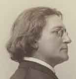
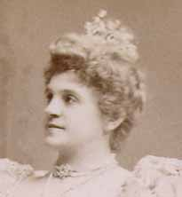

| Search Results |
[Met Performance] CID:1000
Metropolitan Opera Premiere
Faust {1}
Metropolitan Opera House; 10/22/1883
Opening Night {1}
Henry E. Abbey, General Manager
Debuts: Italo Campanini, Christine Nilsson, Franco Novara, Giuseppe Del Puente, Sofia Scalchi, Louise Lablache, Ludovico Contini, Auguste Vianesi, Mr. Corani, Mr. Abbiati, Charles Fox, Jr., William Schaeffer, Gaspar Maeder, Mr. Thompson, D. Ascoli, Henry Dazian
Review |
[Met Performance] CID:1010
Metropolitan Opera Premiere
Lucia di Lammermoor {1}
Metropolitan Opera House; 10/24/1883
Debuts: Marcella Sembrich, Giuseppe Kaschmann, Achille Augier, Amadeo Grazzi, Imogene Forti, Vincenzo Fornaris
Review |
[Met Performance] CID:1020
Metropolitan Opera Premiere
Il Trovatore {1}
Metropolitan Opera House; 10/26/1883
Debut: Roberto Stagno, Alwina Valleria, Zelia Trebelli
Review |
[Met Performance] CID:1030
Faust {2}
Metropolitan Opera House; 10/27/1883
Debut: Victor Capoul
Review |
[Met Performance] CID:1040
Metropolitan Opera Premiere
I Puritani {1}
Metropolitan Opera House; 10/29/1883
Debut: Giovanni Mirabella, Ida Corani
Review |
[Met Performance] CID:1050
Metropolitan Opera Premiere
Mignon {1}
Metropolitan Opera House; 10/31/1883
Debut: Baldassare Corsini
Review |
[Met Performance] CID:1060
Lucia di Lammermoor {2}
Metropolitan Opera House; 11/2/1883
Review |
[Met Performance] CID:1070
Mignon {2}
Metropolitan Opera House; 11/3/1883
Debut: Cleofonte Campanini
Review |
[Met Performance] CID:1080
Metropolitan Opera Premiere
La Traviata {1}
Metropolitan Opera House; 11/5/1883
Debut: Emily Lablache, Giuseppe Barberis, Malvina Cavalazzi
Review |
[Met Performance] CID:1090
Metropolitan Opera Premiere
Lohengrin {1}
Metropolitan Opera House; 11/7/1883
Debut: Emmy Fursch-Madi
Reviews |
[Met Performance] CID:1100
Faust {3}
Metropolitan Opera House; 11/9/1883
Review |
[Met Performance] CID:1110
La Traviata {2}
Metropolitan Opera House; 11/10/1883
Review |
[Met Concert/Gala] CID:1120
First Grand Sunday Night Concert
Metropolitan Opera House; 11/11/1883
Review |
[Met Performance] CID:1130
Lohengrin {2}
Metropolitan Opera House; 11/12/1883
Review |
[Met Performance] CID:1140
Metropolitan Opera Premiere
La Sonnambula {1}
Metropolitan Opera House; 11/14/1883
Review |
[Met Performance] CID:1150
Metropolitan Opera Premiere
Rigoletto {1}
Metropolitan Opera House; 11/16/1883
Debut: Luigi Guadagnini, Miss Genetti, Grace Goldini
Review |
[Met Performance] CID:1160
Lohengrin {3}
Metropolitan Opera House; 11/17/1883
Review |
[Met Concert/Gala] CID:1170
Second Grand Sunday Night Concert
Metropolitan Opera House; 11/18/1883
Review |
[Met Performance] CID:1180
Metropolitan Opera Premiere
Robert le Diable {1}
Metropolitan Opera House; 11/19/1883
Debut: Nicola Stagi
Review |
[Met Performance] CID:1190
Mignon {3}
Metropolitan Opera House; 11/21/1883
Review |
[Met Performance] CID:1200
Metropolitan Opera Premiere
Il Barbiere di Siviglia {1}
Metropolitan Opera House; 11/23/1883
Review |
[Met Performance] CID:1210
Faust {4}
Metropolitan Opera House; 11/24/1883
Review |
[Met Concert/Gala] CID:1220
Third Grand Sunday Night Concert
Metropolitan Opera House; 11/25/1883
Review |
[Met Performance] CID:1230
Il Trovatore {2}
Metropolitan Opera House; 11/26/1883
Review |
[Met Performance] CID:1240
Metropolitan Opera Premiere
Don Giovanni {1}
Metropolitan Opera House; 11/28/1883
Review |
[Met Performance] CID:1250
Rigoletto {2}
Metropolitan Opera House; 11/30/1883
Review |
[Met Performance] CID:1260
Lohengrin {4}
Metropolitan Opera House; 12/1/1883
Review |
[Met Concert/Gala] CID:1270
Fourth Grand Sunday Night Concert
Metropolitan Opera House; 12/2/1883
Review |
[Met Performance] CID:1280
Lucia di Lammermoor {3}
Metropolitan Opera House; 12/3/1883
Review |
[Met Performance] CID:1290
Metropolitan Opera Premiere
Mefistofele {1}
Metropolitan Opera House; 12/5/1883
Review |
[Met Performance] CID:1300
Robert le Diable {2}
Metropolitan Opera House; 12/7/1883
Review |
[Met Performance] CID:1310
Don Giovanni {2}
Metropolitan Opera House; 12/8/1883
Review |
[Met Concert/Gala] CID:1320
Fifth Grand Sunday Night Concert
Metropolitan Opera House; 12/9/1883
Review |
[Met Performance] CID:1330
Faust {5}
Metropolitan Opera House; 12/10/1883
Review |
[Met Performance] CID:1340
Don Giovanni {3}
Metropolitan Opera House; 12/12/1883
Review |
[Met Performance] CID:1350
Il Barbiere di Siviglia {2}
Metropolitan Opera House; 12/14/1883
Review |
[Met Performance] CID:1360
Mefistofele {2}
Metropolitan Opera House; 12/15/1883
Review |
[Met Concert/Gala] CID:1370
Sixth Grand Sunday Night Concert
Stabat Mater {1}
Metropolitan Opera House; 12/16/1883
Review |
[Met Performance] CID:1380
La Sonnambula {2}
Metropolitan Opera House; 12/17/1883
Review |
[Met Performance] CID:1390
United States Premiere
La Gioconda {1}
Metropolitan Opera House; 12/20/1883
Reviews |
[Met Performance] CID:1400
La Traviata {3}
Metropolitan Opera House; 12/21/1883
|
[Met Performance] CID:1410
La Gioconda {2}
Metropolitan Opera House; 12/22/1883
Review |
[Met Concert/Gala] CID:1420
Seventh Grand Sunday Night Concert
Stabat Mater {2}
Metropolitan Opera House; 12/23/1883
Review |
[Met Performance] CID:1430
Rigoletto {3}
Metropolitan Opera House; 12/24/1883
Review |
[Met Performance] CID:1440
Faust {6}
Boston Theatre, Boston, Massachusetts; 12/26/1883
Review |
[Met Performance] CID:1450
Lucia di Lammermoor {4}
Boston Theatre, Boston, Massachusetts; 12/27/1883
Review |
[Met Performance] CID:1460
Il Trovatore {3}
Boston Theatre, Boston, Massachusetts; 12/28/1883
Review |
[Met Performance] CID:1470
Mignon {4}
Boston Theatre, Boston, Massachusetts; 12/29/1883
|
[Met Performance] CID:1480
La Sonnambula {3}
Boston Theatre, Boston, Massachusetts; 12/29/1883
|
[Met Concert/Gala] CID:1490
Grand Sunday Night Concert
Stabat Mater {3}
Boston Theatre, Boston, Massachusetts; 12/30/1883
|
[Met Performance] CID:1500
La Traviata {4}
Boston Theatre, Boston, Massachusetts; 12/31/1883
|
[Met Performance] CID:1510
La Gioconda {3}
Boston Theatre, Boston, Massachusetts; 01/1/1884
|
[Met Performance] CID:1520
Il Barbiere di Siviglia {3}
Boston Theatre, Boston, Massachusetts; 01/2/1884
Review |
[Met Performance] CID:1530
Lohengrin {5}
Boston Theatre, Boston, Massachusetts; 01/3/1884
Review |
[Met Performance] CID:1540
Metropolitan Opera Premiere
Martha {1}
Boston Theatre, Boston, Massachusetts; 01/4/1884
|
[Met Performance] CID:1550
Faust {7}
Boston Theatre, Boston, Massachusetts; 01/5/1884
Review |
[Met Performance] CID:1560
Metropolitan Opera Premiere
Carmen {1}
Boston Theatre, Boston, Massachusetts; 01/5/1884
Review |
[Met Performance] CID:1570
Carmen {2}
Academy of Music, Brooklyn, New York; 01/7/1884
Review |
[Met Performance] CID:1580
Faust {8}
Academy of Music, Brooklyn, New York; 01/8/1884
Review |
[Met Performance] CID:1590
Carmen {3}
Metropolitan Opera House; 01/9/1884
Review |
[Met Performance] CID:1600
Don Giovanni {4}
Academy of Music, Brooklyn, New York; 01/10/1884
|
[Met Performance] CID:1610
La Gioconda {4}
Metropolitan Opera House; 01/11/1884
|
[Met Performance] CID:1620
Carmen {4}
Metropolitan Opera House; 01/12/1884
Review |
[Met Concert/Gala] CID:1630
Grand Sunday Night Concert
Metropolitan Opera House; 01/13/1884
Review |
[Met Performance] CID:1640
Faust {9}
Chestnut St. Opera House, Philadelphia, Pennsylvania; 01/14/1884
|
[Met Performance] CID:1650
Lucia di Lammermoor {5}
Chestnut St. Opera House, Philadelphia, Pennsylvania; 01/15/1884
|
[Met Performance] CID:1660
Il Trovatore {4}
Chestnut St. Opera House, Philadelphia, Pennsylvania; 01/16/1884
|
[Met Performance] CID:1670
Don Giovanni {5}
Chestnut St. Opera House, Philadelphia, Pennsylvania; 01/17/1884
|
[Met Performance] CID:1680
La Gioconda {5}
Chestnut St. Opera House, Philadelphia, Pennsylvania; 01/18/1884
Review |
[Met Performance] CID:1690
Martha {2}
Chestnut St. Opera House, Philadelphia, Pennsylvania; 01/19/1884
|
[Met Performance] CID:1700
Carmen {5}
Chestnut St. Opera House, Philadelphia, Pennsylvania; 01/19/1884
|
[Met Performance] CID:1710
Faust {10}
Haverly's Theatre, Chicago, Illinois; 01/21/1884
Review |
[Met Performance] CID:1720
Lucia di Lammermoor {6}
Haverly's Theatre, Chicago, Illinois; 01/22/1884
Review |
[Met Performance] CID:1730
Lohengrin {6}
Haverly's Theatre, Chicago, Illinois; 01/23/1884
Italo Campanini became ill during the performance and the final scene was omitted |
[Met Performance] CID:1740
Don Giovanni {6}
Haverly's Theatre, Chicago, Illinois; 01/24/1884
Review |
[Met Performance] CID:1750
Il Barbiere di Siviglia {4}
Haverly's Theatre, Chicago, Illinois; 01/25/1884
Review |
[Met Performance] CID:1760
Faust {11}
Haverly's Theatre, Chicago, Illinois; 01/26/1884
|
[Met Performance] CID:1770
Carmen {6}
Haverly's Theatre, Chicago, Illinois; 01/26/1884
Review |
[Met Concert/Gala] CID:1780
Grand Sunday Night Concert
Stabat Mater {4}
Haverly's Theatre, Chicago, Illinois; 01/27/1884
|
[Met Performance] CID:1790
La Gioconda {6}
Haverly's Theatre, Chicago, Illinois; 01/28/1884
|
[Met Performance] CID:1800
La Sonnambula {4}
Haverly's Theatre, Chicago, Illinois; 01/29/1884
Review |
[Met Performance] CID:1810
Mignon {5}
Haverly's Theatre, Chicago, Illinois; 01/30/1884
|
[Met Performance] CID:1820
La Traviata {5}
Haverly's Theatre, Chicago, Illinois; 01/31/1884
Review |
[Met Performance] CID:1830
Robert le Diable {3}
Haverly's Theatre, Chicago, Illinois; 02/1/1884
|
[Met Performance] CID:1840
Martha {3}
Haverly's Theatre, Chicago, Illinois; 02/2/1884
Review |
[Met Performance] CID:1850
La Gioconda {7}
Haverly's Theatre, Chicago, Illinois; 02/2/1884
|
[Met Performance] CID:1860
Il Trovatore {5}
Olympic Theater, St. Louis, Missouri; 02/4/1884
|
[Met Performance] CID:1870
Faust {12}
Olympic Theater, St. Louis, Missouri; 02/5/1884
|
[Met Performance] CID:1880
Lucia di Lammermoor {7}
Olympic Theater, St. Louis, Missouri; 02/6/1884
Review |
[Met Performance] CID:1890
Carmen {7}
Olympic Theater, St. Louis, Missouri; 02/7/1884
Review |
[Met Performance] CID:1900
La Gioconda {8}
Olympic Theater, St. Louis, Missouri; 02/8/1884
|
[Met Performance] CID:1910
Il Barbiere di Siviglia {5}
Olympic Theater, St. Louis, Missouri; 02/9/1884
|
[Met Performance] CID:1920
Don Giovanni {7}
Olympic Theater, St. Louis, Missouri; 02/9/1884
|
[Met Performance] CID:1930
Faust {13}
Music Hall, Cincinnati, Ohio; 02/11/1884
|
[Met Performance] CID:1940
Metropolitan Opera Premiere
Le Prophète {1}
Music Hall, Cincinnati, Ohio; 02/12/1884
Debut: Francesco Rizzielli |
[Met Performance] CID:1950
Lucia di Lammermoor {8}
Music Hall, Cincinnati, Ohio; 02/13/1884
Review |
[Met Performance] CID:1960
La Gioconda {9}
Music Hall, Cincinnati, Ohio; 02/14/1884
|
[Met Performance] CID:1970
Il Trovatore {6}
Music Hall, Cincinnati, Ohio; 02/15/1884
|
[Met Performance] CID:1980
Don Giovanni {8}
Music Hall, Cincinnati, Ohio; 02/16/1884
Review |
[Met Concert/Gala] CID:1990
Gala Performance
Music Hall, Cincinnati, Ohio; 02/17/1884
|
[Met Performance] CID:2000
La Sonnambula {5}
Music Hall, Cincinnati, Ohio; 02/18/1884
Debut: Miss Barabino
Review |
[Met Performance] CID:2010
Mignon {6}
Music Hall, Cincinnati, Ohio; 02/19/1884
Review |
[Met Performance] CID:2020
Robert le Diable {4}
Music Hall, Cincinnati, Ohio; 02/20/1884
|
[Met Performance] CID:2030
Metropolitan Opera Premiere
Hamlet {1}
Music Hall, Cincinnati, Ohio; 02/21/1884
Review |
[Met Performance] CID:2040
Mefistofele {3}
Music Hall, Cincinnati, Ohio; 02/22/1884
|
[Met Performance] CID:2050
Martha {4}
Music Hall, Cincinnati, Ohio; 02/23/1884
|
[Met Performance] CID:2060
Faust {14}
National Theater, Washington, D.C.; 02/25/1884
Review |
[Met Performance] CID:2070
Lucia di Lammermoor {9}
National Theater, Washington, D.C.; 02/26/1884
Review |
[Met Performance] CID:2080
La Gioconda {10}
National Theater, Washington, D.C.; 02/27/1884
|
[Met Performance] CID:2090
Don Giovanni {9}
National Theater, Washington, D.C.; 02/28/1884
Review |
[Met Performance] CID:2100
Il Barbiere di Siviglia {6}
Academy of Music, Baltimore, Maryland; 02/29/1884
|
[Met Performance] CID:2110
Carmen {8}
Academy of Music, Baltimore, Maryland; 03/1/1884
Review |
[Met Performance] CID:2120
Faust {15}
Academy of Music, Baltimore, Maryland; 03/1/1884
Review |
[Met Performance] CID:2130
Hamlet {2}
Boston Theatre, Boston, Massachusetts; 03/3/1884
|
[Met Performance] CID:2140
Mefistofele {4}
Boston Theatre, Boston, Massachusetts; 03/4/1884
|
[Met Performance] CID:2150
Robert le Diable {5}
Boston Theatre, Boston, Massachusetts; 03/5/1884
|
[Met Performance] CID:2160
Don Giovanni {10}
Boston Theatre, Boston, Massachusetts; 03/6/1884
|
[Met Performance] CID:2170
Le Prophète {2}
Boston Theatre, Boston, Massachusetts; 03/7/1884
Debut: Pietro Mascotti |
[Met Performance] CID:2180
Il Barbiere di Siviglia {7}
Boston Theatre, Boston, Massachusetts; 03/8/1884
|
[Met Performance] CID:2190
La Gioconda {11}
Boston Theatre, Boston, Massachusetts; 03/8/1884
|
[Met Concert/Gala] CID:2320
Grand Sunday Night Concert
Boston Theatre, Boston, Massachusetts; 03/9/1884
|
[Met Performance] CID:2200
Hamlet {3}
Metropolitan Opera House; 03/10/1884
Review |
[Met Performance] CID:2210
Don Giovanni {11}
Metropolitan Opera House; 03/12/1884
Review |
[Met Performance] CID:2220
Martha {5}
Metropolitan Opera House; 03/14/1884
Review |
[Met Performance] CID:2230
Faust {16}
Metropolitan Opera House; 03/15/1884
Review |
[Met Performance] CID:2240
Carmen {9}
Metropolitan Opera House; 03/17/1884
Review |
[Met Performance] CID:2250
Metropolitan Opera Premiere
Les Huguenots {1}
Metropolitan Opera House; 03/19/1884
Debut: Miss Alberti
Reviews |
[Met Performance] CID:2260
Le Prophète {3}
Metropolitan Opera House; 03/21/1884
Review |
[Met Performance] CID:2270
Martha {6}
Metropolitan Opera House; 03/22/1884
Review |
[Met Performance] CID:2280
Il Barbiere di Siviglia {8}
Metropolitan Opera House; 03/24/1884
Review |
[Met Performance] CID:2290
Les Huguenots {2}
Metropolitan Opera House; 03/26/1884
Review |
[Met Performance] CID:2300
Robert le Diable {6}
Metropolitan Opera House; 03/28/1884
Review |
[Met Performance] CID:2310
La Gioconda {12}
Metropolitan Opera House; 03/29/1884
|
[Met Performance] CID:2330
La Traviata {6}
Metropolitan Opera House; 03/31/1884
|
[Met Performance] CID:2340
Lohengrin {7}
Metropolitan Opera House; 04/2/1884
Review |
[Met Performance] CID:2350
Carmen {10}
Metropolitan Opera House; 04/4/1884
|
[Met Performance] CID:2360
Mignon {7}
Metropolitan Opera House; 04/5/1884
|
[Met Performance] CID:2370
Les Huguenots: Act I
Lucia di Lammermoor {10}
Metropolitan Opera House; 04/7/1884
Les Huguenots was scheduled, but the indisposition of Christine Nilsson necessitated the subsitition of an abbreviated Lucia
Review |
[Met Performance] CID:2380
Il Trovatore {7}
Metropolitan Opera House; 04/9/1884
Review |
[Met Performance] CID:2390
Don Giovanni {12}
Metropolitan Opera House; 04/10/1884
Review |
[Met Concert/Gala] CID:2400
Grand Sunday Night Concert
Stabat Mater {5}
Metropolitan Opera House; 04/11/1884
Review |
[Met Performance] CID:354614
Cancelled Performance
04/12/1884
A scheduled performance of Carmen was cancelled due to the illnesses of several singers on the roster who would otherwise have sung the title role. Le Prophete was suggested as a replacement, but Sofia Scalchi and the management could not agree on the arrangement and the opera house remained closed for the night.
Review |
[Met Performance] CID:2410
Les Huguenots {3}
Academy of Music, Philadelphia, Pennsylvania; 04/14/1884
Review |
[Met Performance] CID:2420
Robert le Diable {7}
Academy of Music, Philadelphia, Pennsylvania; 04/15/1884
Review |
[Met Performance] CID:2430
Metropolitan Opera Premiere
Roméo et Juliette {1}
Academy of Music, Philadelphia, Pennsylvania; 04/16/1884
Review |
[Met Performance] CID:2440
Mignon {8}
Academy of Music, Philadelphia, Pennsylvania; 04/17/1884
Review |
[Met Performance] CID:2450
Le Prophète {4}
Academy of Music, Philadelphia, Pennsylvania; 04/18/1884
Review |
[Met Performance] CID:2460
Lohengrin {8}
Academy of Music, Philadelphia, Pennsylvania; 04/19/1884
Review |
[Met Performance] CID:2470
Il Barbiere di Siviglia {9}
Academy of Music, Philadelphia, Pennsylvania; 04/19/1884
Review |
[Met Concert/Gala] CID:2480
Gala Performance
Metropolitan Opera House; 4/21/1884
Review |
[Met Performance] CID:3000
Metropolitan Opera Premiere
Tannhäuser {1}
Metropolitan Opera House; 11/17/1884
Opening Night {2}
Leopold Damrosch, General Manager
Debuts: Anton Schott, Auguste Seidl-Kraus, Adolf Robinson, Anna Slach, Joseph Kögel, Emil Tiferro, Otto Kemlitz, Joseph Miller, Ludwig Wolf, Anna Stern, Leopold Damrosch, Wilhelm Hock
Reviews |
[Met Performance] CID:3010
Metropolitan Opera Premiere
Fidelio {1}
Metropolitan Opera House; 11/19/1884
Debuts: Marianne Brandt, Josef Staudigl
Review |
[Met Performance] CID:3020
Les Huguenots {4}
Metropolitan Opera House; 11/21/1884
Debuts: Marie Schröder-Hanfstängl, Anton Udvardy, Anna Robinson, Isadora Martinez, Martin Paché, Carl Baumann, Emil Totzech, Hermann Weber, Carrie Morse, Lucia Cormani, Isolina Torri, Adèle Zollia, F. Baptiste Ceruti
Review |
[Met Performance] CID:3030
Tannhäuser {2}
Metropolitan Opera House; 11/22/1884
|
[Met Performance] CID:3040
Metropolitan Opera Premiere
Der Freischütz {1}
Metropolitan Opera House; 11/24/1884
Review |
[Met Performance] CID:3050
Tannhäuser {3}
Metropolitan Opera House; 11/26/1884
|
[Met Performance] CID:3060
Metropolitan Opera Premiere
Guillaume Tell [William Tell] {1}
Metropolitan Opera House; 11/28/1884
Review |
[Met Performance] CID:3070
Fidelio {2}
Metropolitan Opera House; 11/29/1884
Debut: Alkuir Blum |
[Met Performance] CID:3080
Tannhäuser {4}
Metropolitan Opera House; 12/1/1884
Review |
[Met Performance] CID:3090
Lohengrin {9}
Metropolitan Opera House; 12/3/1884
Review |
[Met Performance] CID:3100
Guillaume Tell [William Tell] {2}
Metropolitan Opera House; 12/5/1884
Review |
[Met Performance] CID:3110
Lohengrin {10}
Metropolitan Opera House; 12/6/1884
|
[Met Performance] CID:3120
Lohengrin {11}
Metropolitan Opera House; 12/8/1884
Review |
[Met Performance] CID:3130
Don Giovanni {13}
Metropolitan Opera House; 12/10/1884
Debut: Hermine Bely
Review |
[Met Performance] CID:3140
Les Huguenots {5}
Metropolitan Opera House; 12/12/1884
Review |
[Met Performance] CID:3150
Don Giovanni {14}
Metropolitan Opera House; 12/13/1884
|
[Met Performance] CID:3160
Lohengrin {12}
Metropolitan Opera House; 12/15/1884
Review |
[Met Performance] CID:3170
Le Prophète {5}
Metropolitan Opera House; 12/17/1884
Debut: Mr. Golding
Review |
[Met Performance] CID:3180
Guillaume Tell [William Tell] {3}
Metropolitan Opera House; 12/19/1884
|
[Met Performance] CID:3190
Le Prophète {6}
Metropolitan Opera House; 12/20/1884
|
[Met Performance] CID:3200
Le Prophète {7}
Metropolitan Opera House; 12/22/1884
Review |
[Met Performance] CID:3210
Tannhäuser {5}
Metropolitan Opera House; 12/24/1884
|
[Met Performance] CID:3220
Le Prophète {8}
Metropolitan Opera House; 12/25/1884
|
[Met Performance] CID:3230
Fidelio {3}
Metropolitan Opera House; 12/26/1884
|
[Met Performance] CID:3240
Lohengrin {13}
Metropolitan Opera House; 12/27/1884
|
[Met Performance] CID:3250
Metropolitan Opera Premiere
Masaniello {1}
Metropolitan Opera House; 12/29/1884
Review |
[Met Performance] CID:3260
Lohengrin {14}
Metropolitan Opera House; 12/31/1884
|
[Met Performance] CID:3270
Rigoletto {4}
Metropolitan Opera House; 01/2/1885
Debuts: Anna Gutjar, Helena Brandl, Miss Kuhlmann
Review |
[Met Performance] CID:3280
Masaniello {2}
Metropolitan Opera House; 01/3/1885
Debut: Walter Schüller |
[Met Performance] CID:3290
Tannhäuser {6}
Metropolitan Opera House; 01/5/1885
Debut: Amalie Materna
Reviews |
[Met Performance] CID:3300
Les Huguenots {6}
Metropolitan Opera House; 01/7/1885
Review |
[Met Performance] CID:3310
Masaniello {3}
Metropolitan Opera House; 01/9/1885
Review |
[Met Performance] CID:3320
Les Huguenots {7}
Metropolitan Opera House; 01/10/1885
Review |
[Met Performance] CID:3330
Les Huguenots {8}
Metropolitan Opera House; 01/12/1885
Review |
[Met Performance] CID:3340
Le Prophète {9}
Metropolitan Opera House; 01/14/1885
|
[Met Performance] CID:3350
Lohengrin {15}
Metropolitan Opera House; 01/15/1885
|
[Met Performance] CID:3360
Metropolitan Opera Premiere
La Juive {1}
Metropolitan Opera House; 01/16/1885
Reviews |
[Met Performance] CID:3370
Tannhäuser {7}
Metropolitan Opera House; 01/17/1885
|
[Met Performance] CID:3380
Lohengrin {16}
Metropolitan Opera House; 01/19/1885
|
[Met Performance] CID:3390
La Juive {2}
Metropolitan Opera House; 01/21/1885
Review |
[Met Performance] CID:3400
Le Prophète {10}
Metropolitan Opera House; 01/23/1885
Review |
[Met Performance] CID:3410
La Juive {3}
Metropolitan Opera House; 01/24/1885
|
[Met Concert/Gala] CID:3420
Grand Concert
Metropolitan Opera House; 01/25/1885
Review |
[Met Performance] CID:3430
La Juive {4}
Metropolitan Opera House; 01/26/1885
|
[Met Performance] CID:3440
Le Prophète {11}
Metropolitan Opera House; 01/28/1885
|
[Met Performance] CID:3450
Metropolitan Opera Premiere
Die Walküre {1}
Metropolitan Opera House; 01/30/1885
Debuts: Miss Kemlitz, Josef Hoffmann, Carl Doepler, James Stuart, Jr.
Review |
[Met Performance] CID:3460
Die Walküre {2}
Metropolitan Opera House; 01/31/1885
|
[Met Performance] CID:3470
Die Walküre {3}
Metropolitan Opera House; 02/2/1885
|
[Met Performance] CID:3480
Die Walküre {4}
Metropolitan Opera House; 02/4/1885
|
[Met Performance] CID:3490
Le Prophète {12}
Metropolitan Opera House; 02/6/1885
|
[Met Performance] CID:3500
Die Walküre {5}
Metropolitan Opera House; 02/7/1885
Review |
[Met Performance] CID:3510
Lohengrin {17}
Metropolitan Opera House; 02/9/1885
|
[Met Performance] CID:3520
Tannhäuser {8}
Metropolitan Opera House; 02/11/1885
Debut: Walter Damrosch |
[Met Performance] CID:3530
Die Walküre {6}
Metropolitan Opera House; 02/12/1885
|
[Met Performance] CID:3540
Le Prophète {13}
Metropolitan Opera House; 02/14/1885
|
[Met Concert/Gala] CID:3550
Grand Final Benefit Concert
Metropolitan Opera House; 02/15/1885
|
[Met Concert/Gala] CID:350746
Leopold Damrosch Funeral Service
Metropolitan Opera House; 02/18/1885
Review |
[Met Performance] CID:3560
Tannhäuser {9}
Metropolitan Opera House; 02/19/1885
Debut: John Lund
Review |
[Met Performance] CID:3570
Die Walküre {7}
Metropolitan Opera House; 02/20/1885
Review |
[Met Performance] CID:3580
La Juive {5}
Metropolitan Opera House; 02/21/1885
|
[Met Performance] CID:3590
Tannhäuser {10}
Columbia Theater, Chicago, Illinois; 02/23/1885
Debut: Wilhelm Junck
Review |
[Met Performance] CID:3600
Le Prophète {14}
Columbia Theater, Chicago, Illinois; 02/24/1885
|
[Met Performance] CID:3610
La Juive {6}
Columbia Theater, Chicago, Illinois; 02/25/1885
|
[Met Performance] CID:3620
Guillaume Tell [William Tell] {4}
Columbia Theater, Chicago, Illinois; 02/26/1885
|
[Met Performance] CID:3630
Masaniello {4}
Columbia Theater, Chicago, Illinois; 02/27/1885
|
[Met Performance] CID:3640
Tannhäuser {11}
Columbia Theater, Chicago, Illinois; 02/28/1885
|
[Met Performance] CID:3650
Fidelio {4}
Columbia Theater, Chicago, Illinois; 02/28/1885
|
[Met Performance] CID:3660
Lohengrin {18}
Columbia Theater, Chicago, Illinois; 03/2/1885
Debut: Abram Abramoff |
[Met Performance] CID:3670
La Juive {7}
Columbia Theater, Chicago, Illinois; 03/3/1885
|
[Met Performance] CID:3680
Le Prophète {15}
Columbia Theater, Chicago, Illinois; 03/4/1885
|
[Met Performance] CID:3690
Tannhäuser {12}
Columbia Theater, Chicago, Illinois; 03/5/1885
|
[Met Performance] CID:3700
Fidelio {5}
Columbia Theater, Chicago, Illinois; 03/6/1885
|
[Met Performance] CID:3710
Lohengrin {19}
Columbia Theater, Chicago, Illinois; 03/7/1885
|
[Met Performance] CID:3720
Der Freischütz {2}
Columbia Theater, Chicago, Illinois; 03/7/1885
|
[Met Performance] CID:3730
Le Prophète {16}
Columbia Theater, Chicago, Illinois; 03/8/1885
|
[Met Performance] CID:3740
Die Walküre {8}
Columbia Theater, Chicago, Illinois; 03/10/1885
Debuts: Marie Hock, Miss Stahlke |
[Met Performance] CID:3750
Die Walküre {9}
Columbia Theater, Chicago, Illinois; 03/11/1885
|
[Met Performance] CID:3760
Metropolitan Opera Premiere
La Dame Blanche {1}
Columbia Theater, Chicago, Illinois; 03/12/1885
|
[Met Performance] CID:3770
Lohengrin {20}
Columbia Theater, Chicago, Illinois; 03/13/1885
|
[Met Performance] CID:3780
Die Walküre {10}
Columbia Theater, Chicago, Illinois; 03/14/1885
|
[Met Performance] CID:3790
Don Giovanni {15}
Columbia Theater, Chicago, Illinois; 03/14/1885
|
[Met Performance] CID:3800
Lohengrin {21}
Grand Opera House, Cincinnati, Ohio; 03/16/1885
|
[Met Performance] CID:3810
La Juive {8}
Grand Opera House, Cincinnati, Ohio; 03/17/1885
|
[Met Performance] CID:3820
Le Prophète {17}
Grand Opera House, Cincinnati, Ohio; 03/18/1885
|
[Met Performance] CID:3830
Tannhäuser {13}
Grand Opera House, Cincinnati, Ohio; 03/19/1885
|
[Met Performance] CID:3840
Fidelio {6}
Grand Opera House, Cincinnati, Ohio; 03/20/1885
|
[Met Performance] CID:3850
Lohengrin {22}
Grand Opera House, Cincinnati, Ohio; 03/21/1885
|
[Met Performance] CID:3860
Der Freischütz {3}
Grand Opera House, Cincinnati, Ohio; 03/21/1885
|
[Met Performance] CID:3870
Le Prophète {18}
Boston Theatre, Boston, Massachusetts; 04/6/1885
Review |
[Met Performance] CID:3880
Tannhäuser {14}
Boston Theatre, Boston, Massachusetts; 04/7/1885
Review |
[Met Performance] CID:3890
Fidelio {7}
Boston Theatre, Boston, Massachusetts; 04/8/1885
|
[Met Performance] CID:3900
Lohengrin {23}
Boston Theatre, Boston, Massachusetts; 04/9/1885
Review |
[Met Performance] CID:3910
La Juive {9}
Boston Theatre, Boston, Massachusetts; 04/10/1885
|
[Met Performance] CID:3920
Tannhäuser {15}
Boston Theatre, Boston, Massachusetts; 04/11/1885
|
[Met Performance] CID:3930
Metropolitan Opera Premiere
Orfeo ed Euridice {1}
Boston Theatre, Boston, Massachusetts; 04/11/1885
|
[Met Performance] CID:3940
Die Walküre {11}
Boston Theatre, Boston, Massachusetts; 04/13/1885
Debut: Miss Schanz |
[Met Performance] CID:3950
Lohengrin {24}
Boston Theatre, Boston, Massachusetts; 04/14/1885
|
[Met Performance] CID:3960
Tannhäuser {16}
Boston Theatre, Boston, Massachusetts; 04/15/1885
Review |
[Met Performance] CID:3970
Die Walküre {12}
Boston Theatre, Boston, Massachusetts; 04/16/1885
|
[Met Performance] CID:3980
Fidelio {8}
Boston Theatre, Boston, Massachusetts; 04/17/1885
|
[Met Performance] CID:3990
Die Walküre {13}
Boston Theatre, Boston, Massachusetts; 04/18/1885
|
[Met Performance] CID:350088
La Dame Blanche {2}
Boston Theatre, Boston, Massachusetts; 04/18/1885
|
[Met Performance] CID:4250

Lohengrin {25}
Metropolitan Opera House; 11/23/1885
Opening Night {3}
Edmund C. Stanton, General Manager
Debut: Albert Stritt, Emil Fischer, Alexander Alexy, Jaro Dworsky, Carl Kaufmann, Emil Sänger, Anton Seidl, Mr. Van Hell
Review |
[Met Performance] CID:4260
Carmen {11}
Metropolitan Opera House; 11/25/1885
Debuts: Lilli Lehmann, Carrie Goldsticker, Philip Lehmler, Max Alvary
Reviews |
[Met Performance] CID:4270
Le Prophète {19}
Metropolitan Opera House; 11/27/1885
Debuts: Eloi Sylva, Maria Bonfanti, Bettina De Sortis
Review |
[Met Performance] CID:4280
Carmen {12}
Metropolitan Opera House; 11/28/1885
Review |
[Met Performance] CID:4290
Die Walküre {14}
Metropolitan Opera House; 11/30/1885
Debuts: H. Eschenbach, Isabel Escott, Dora Henninges
Review |
[Met Performance] CID:4300
United States Premiere
Die Königin von Saba {1}
Metropolitan Opera House; 12/2/1885
Debuts: Marie Krämer-Wiedl, Henry E. Hoyt
Reviews |
[Met Performance] CID:4310
Die Königin von Saba {2}
Metropolitan Opera House; 12/4/1885
Review |
[Met Performance] CID:4320
Die Walküre {15}
Metropolitan Opera House; 12/5/1885
Review |
[Met Performance] CID:4330
Die Königin von Saba {3}
Metropolitan Opera House; 12/7/1885
Review |
[Met Performance] CID:4340
Le Prophète {20}
Metropolitan Opera House; 12/9/1885
Review |
[Met Performance] CID:4350
Tannhäuser {17}
Metropolitan Opera House; 12/11/1885
Debut: Ida Klein
Review |
[Met Performance] CID:4360
Die Königin von Saba {4}
Metropolitan Opera House; 12/12/1885
|
[Met Performance] CID:4370
Die Königin von Saba {5}
Metropolitan Opera House; 12/14/1885
|
[Met Performance] CID:4380
Die Königin von Saba {6}
Metropolitan Opera House; 12/16/1885
|
[Met Performance] CID:4390
Lohengrin {26}
Metropolitan Opera House; 12/18/1885
Review |
[Met Performance] CID:4400
Die Königin von Saba {7}
Metropolitan Opera House; 12/19/1885
|
[Met Performance] CID:4410
Tannhäuser {18}
Academy of Music, Philadelphia, Pennsylvania; 12/21/1885
|
[Met Performance] CID:4420
Le Prophète {21}
Academy of Music, Philadelphia, Pennsylvania; 12/22/1885
|
[Met Performance] CID:4430
Carmen {13}
Academy of Music, Philadelphia, Pennsylvania; 12/23/1885
|
[Met Performance] CID:4440
Lohengrin {27}
Academy of Music, Philadelphia, Pennsylvania; 12/24/1885
|
[Met Performance] CID:4450
Die Walküre {16}
Academy of Music, Philadelphia, Pennsylvania; 12/25/1885
|
[Met Performance] CID:4460
Tannhäuser {19}
Academy of Music, Philadelphia, Pennsylvania; 12/26/1885
|
[Met Performance] CID:4470
Lohengrin {28}
Academy of Music, Philadelphia, Pennsylvania; 12/28/1885
|
[Met Performance] CID:4480
Carmen {14}
Academy of Music, Philadelphia, Pennsylvania; 12/29/1885
|
[Met Performance] CID:4490
Le Prophète {22}
Academy of Music, Philadelphia, Pennsylvania; 12/30/1885
|
[Met Performance] CID:4500
Tannhäuser {20}
Academy of Music, Philadelphia, Pennsylvania; 12/31/1885
|
[Met Performance] CID:4510
Die Walküre {17}
Academy of Music, Philadelphia, Pennsylvania; 01/1/1886
|
[Met Performance] CID:4520
Die Walküre {18}
Academy of Music, Philadelphia, Pennsylvania; 01/2/1886
|
[Met Performance] CID:4530
United States Premiere
Die Meistersinger von Nürnberg {1}
Metropolitan Opera House; 01/4/1886
Debuts: Felix Krämer, Mr. Hoppe, Mr. Langer, Mr. Klaus, Mr. Anlauf
Review |
[Met Performance] CID:4540
Tannhäuser {21}
Metropolitan Opera House; 01/6/1886
Review |
[Met Performance] CID:4550
Die Meistersinger von Nürnberg {2}
Metropolitan Opera House; 01/8/1886
Debut: Mr. Eiserbeck
Review |
[Met Performance] CID:4560
Die Königin von Saba {8}
Metropolitan Opera House; 01/9/1886
Review |
[Met Performance] CID:4570
Die Meistersinger von Nürnberg {3}
Metropolitan Opera House; 01/11/1886
|
[Met Performance] CID:4580
Die Walküre {19}
Metropolitan Opera House; 01/13/1886
|
[Met Performance] CID:4590
Die Königin von Saba {9}
Metropolitan Opera House; 01/15/1886
|
[Met Performance] CID:4600
Die Meistersinger von Nürnberg {4}
Metropolitan Opera House; 01/16/1886
|
[Met Performance] CID:4610
Lohengrin {29}
Metropolitan Opera House; 01/18/1886
|
[Met Performance] CID:4620
Faust {17}
Metropolitan Opera House; 01/20/1886
Review |
[Met Performance] CID:4630
Die Königin von Saba {10}
Metropolitan Opera House; 01/22/1886
|
[Met Performance] CID:4640
Le Prophète {23}
Metropolitan Opera House; 01/23/1886
|
[Met Performance] CID:4650
Faust {18}
Metropolitan Opera House; 01/25/1886
|
[Met Performance] CID:4660
Die Königin von Saba {11}
Metropolitan Opera House; 01/27/1886
|
[Met Performance] CID:4670
Die Meistersinger von Nürnberg {5}
Metropolitan Opera House; 01/29/1886
|
[Met Performance] CID:4680
Faust {19}
Metropolitan Opera House; 01/30/1886
|
[Met Performance] CID:4690
Faust {20}
Metropolitan Opera House; 02/1/1886
|
[Met Performance] CID:4700
Die Meistersinger von Nürnberg {6}
Metropolitan Opera House; 02/3/1886
|
[Met Performance] CID:4710
Metropolitan Opera Premiere
Rienzi {1}
Metropolitan Opera House; 02/5/1886
Review |
[Met Performance] CID:4720
Die Meistersinger von Nürnberg {7}
Metropolitan Opera House; 02/6/1886
|
[Met Performance] CID:4730
Rienzi {2}
Metropolitan Opera House; 02/8/1886
|
[Met Performance] CID:4740
Rienzi {3}
Metropolitan Opera House; 02/10/1886
|
[Met Performance] CID:4750
Tannhäuser {22}
Metropolitan Opera House; 02/12/1886
|
[Met Performance] CID:4760
Die Königin von Saba {12}
Metropolitan Opera House; 02/13/1886
|
[Met Performance] CID:4770
Die Königin von Saba {13}
Metropolitan Opera House; 02/15/1886
|
[Met Performance] CID:4780
Rienzi {4}
Metropolitan Opera House; 02/17/1886
|
[Met Performance] CID:4790
Lohengrin {30}
Metropolitan Opera House; 02/19/1886
|
[Met Performance] CID:4800
Rienzi {5}
Metropolitan Opera House; 02/20/1886
|
[Met Performance] CID:4810
Die Meistersinger von Nürnberg {8}
Metropolitan Opera House; 02/22/1886
|
[Met Performance] CID:4820
Die Königin von Saba {14}
Metropolitan Opera House; 02/24/1886
|
[Met Concert/Gala] CID:4830
Grand Concert
Metropolitan Opera House; 02/25/1886
Benefit for the Bayreuth Festspielhaus
Review |
[Met Performance] CID:4840
Faust {21}
Metropolitan Opera House; 02/26/1886
|
[Met Performance] CID:4850
Rienzi {6}
Metropolitan Opera House; 02/27/1886
Review |
[Met Concert/Gala] CID:4860
Concert
Metropolitan Opera House; 02/27/1886
|
[Met Performance] CID:4870
Rienzi {7}
Metropolitan Opera House; 03/1/1886
|
[Met Performance] CID:4880
Tannhäuser {23}
Metropolitan Opera House; 03/3/1886
|
[Met Performance] CID:4890
Die Walküre {20}
Metropolitan Opera House; 03/5/1886
Debut: Miss Bruni
Review
|
[Met Performance] CID:4900
Die Königin von Saba {15}
Metropolitan Opera House; 03/6/1886
|
[Met Performance] CID:4910
Rienzi {8}
Columbia Theater, Chicago, Illinois; 03/15/1886
Debut: Georgine von Januschowsky, Gisela Staudigl |
[Met Performance] CID:4920
Lohengrin {31}
Columbia Theater, Chicago, Illinois; 03/16/1886
Debuts: Mr. Dannenfels, George Egener |
[Met Performance] CID:4930
Rienzi {9}
Columbia Theater, Chicago, Illinois; 03/17/1886
|
[Met Performance] CID:4940
Faust {22}
Columbia Theater, Chicago, Illinois; 03/18/1886
|
[Met Performance] CID:4950
Lohengrin {32}
Columbia Theater, Chicago, Illinois; 03/19/1886
|
[Met Performance] CID:4960
Rienzi {10}
Columbia Theater, Chicago, Illinois; 03/20/1886
|
[Met Performance] CID:4970
Fidelio {9}
Columbia Theater, Chicago, Illinois; 03/20/1886
|
[Met Performance] CID:4980
Die Königin von Saba {16}
Columbia Theater, Chicago, Illinois; 03/22/1886
|
[Met Performance] CID:4990
Tannhäuser {24}
Columbia Theater, Chicago, Illinois; 03/23/1886
|
[Met Performance] CID:5000
Die Königin von Saba {17}
Columbia Theater, Chicago, Illinois; 03/24/1886
|
[Met Performance] CID:5010
Tannhäuser {25}
Columbia Theater, Chicago, Illinois; 03/25/1886
|
[Met Performance] CID:5020
Die Königin von Saba {18}
Columbia Theater, Chicago, Illinois; 03/26/1886
|
[Met Performance] CID:5030
Die Königin von Saba {19}
Columbia Theater, Chicago, Illinois; 03/27/1886
|
[Met Performance] CID:5040
Rienzi {11}
Columbia Theater, Chicago, Illinois; 03/27/1886
|
[Met Performance] CID:5050
Die Königin von Saba {20}
Olympic Theater, St. Louis, Missouri; 03/29/1886
|
[Met Performance] CID:5060
Tannhäuser {26}
Olympic Theater, St. Louis, Missouri; 03/30/1886
|
[Met Performance] CID:5070
Die Königin von Saba {21}
Olympic Theater, St. Louis, Missouri; 03/31/1886
|
[Met Performance] CID:5080
Rienzi {12}
Olympic Theater, St. Louis, Missouri; 04/1/1886
|
[Met Performance] CID:5090
Lohengrin {33}
Olympic Theater, St. Louis, Missouri; 04/2/1886
|
[Met Performance] CID:5100
Die Königin von Saba {22}
Olympic Theater, St. Louis, Missouri; 04/3/1886
|
[Met Performance] CID:5110
Rienzi {13}
Olympic Theater, St. Louis, Missouri; 04/3/1886
|
[Met Performance] CID:5120
Fidelio {10}
Grand Opera House, St. Louis, Missouri; 04/4/1886
|
[Met Performance] CID:5130
Die Königin von Saba {23}
Heuck's Opera House, Cincinnati, Ohio; 04/5/1886
|
[Met Performance] CID:5140
Rienzi {14}
Heuck's Opera House, Cincinnati, Ohio; 04/6/1886
|
[Met Performance] CID:5150
Die Königin von Saba {24}
Heuck's Opera House, Cincinnati, Ohio; 04/7/1886
|
[Met Performance] CID:5160
Rienzi {15}
Euclid Avenue Opera House, Cleveland, Ohio; 04/8/1886
|
[Met Performance] CID:5170
Die Königin von Saba {25}
Euclid Avenue Opera House, Cleveland, Ohio; 04/9/1886
|
[Met Performance] CID:5180
Lohengrin {34}
Euclid Avenue Opera House, Cleveland, Ohio; 04/10/1886
|
[Met Performance] CID:350514
Tannhäuser {27}
Euclid Avenue Opera House, Cleveland, Ohio; 04/10/1886
|
[Met Performance] CID:5250
Die Königin von Saba {26}
Metropolitan Opera House; 11/8/1886
Opening Night {4}
Edmund C. Stanton, General Manager
Debut: Therese Herbert-Förster, Max Heinrich, Giovanni Ambroggio
Review |
[Met Performance] CID:5260
Die Walküre {21}
Metropolitan Opera House; 11/10/1886
Debut: Albert Niemann, Georg Sieglitz, Leonore Better, Wilhelmine Mayer, Sylvia Franconi
Reviews |
[Met Performance] CID:5270
Metropolitan Opera Premiere
Aida {1}
Metropolitan Opera House; 11/12/1886
Debut: Carl Zobel, Carl Schäffel
Review |
[Met Performance] CID:5280
Die Walküre {22}
Metropolitan Opera House; 11/13/1886
|
[Met Performance] CID:5290
Aida {2}
Metropolitan Opera House; 11/15/1886
Review |
[Met Performance] CID:5300
Le Prophète {24}
Metropolitan Opera House; 11/17/1886
Debut: Rudolph Von Milde, Wilhelm Basch, Miss Leonhardt
Review |
[Met Performance] CID:5310
United States Premiere
Das Goldene Kreuz {1}
Vienna Waltzes {1}
Metropolitan Opera House; 11/19/1886
Debut: Miss Harrison, Miss Forstner, Miss Tondine, Miss Watkins, Miss Miller, Miss Thomas, Miss Story, Miss Louie, Fanny Quick, Florence Braithwaite, Louis Frappert
Review |
[Met Performance] CID:5330
Aida {3}
Metropolitan Opera House; 11/20/1886
Review |
[Met Performance] CID:5340
Das Goldene Kreuz {2}
Vienna Waltzes {2}
Metropolitan Opera House; 11/22/1886
|
[Met Performance] CID:5360
Le Prophète {25}
Metropolitan Opera House; 11/24/1886
Review |
[Met Performance] CID:5370
Tannhäuser {28}
Metropolitan Opera House; 11/26/1886
Review |
[Met Performance] CID:5380
Das Goldene Kreuz {3}
Vienna Waltzes {3}
Metropolitan Opera House; 11/27/1886
|
[Met Performance] CID:5400
Aida {4}
Metropolitan Opera House; 11/29/1886
Review |
[Met Performance] CID:5410
United States Premiere
Tristan und Isolde {1}
Metropolitan Opera House; 12/1/1886
Reviews |
[Met Performance] CID:5420
Die Königin von Saba {27}
Metropolitan Opera House; 12/3/1886
Review |
[Met Performance] CID:5430
Le Prophète {26}
Metropolitan Opera House; 12/4/1886
|
[Met Performance] CID:5440
Tristan und Isolde {2}
Metropolitan Opera House; 12/6/1886
Review |
[Met Performance] CID:5450
Faust {23}
Metropolitan Opera House; 12/8/1886
Review |
[Met Performance] CID:5460
Tannhäuser {29}
Metropolitan Opera House; 12/10/1886
Review |
[Met Performance] CID:5470
Faust {24}
Metropolitan Opera House; 12/11/1886
Review |
[Met Performance] CID:5480
Die Königin von Saba {28}
Metropolitan Opera House; 12/13/1886
|
[Met Performance] CID:5490
Lohengrin {35}
Metropolitan Opera House; 12/15/1886
Debut: Julius Meyer, Jean Doré
Review
|
[Met Performance] CID:5500
Faust {25}
Metropolitan Opera House; 12/17/1886
Review |
[Met Performance] CID:5510
Tannhäuser {30}
Metropolitan Opera House; 12/18/1886
Review |
[Met Performance] CID:5520
Tristan und Isolde {3}
Metropolitan Opera House; 12/20/1886
Review |
[Met Performance] CID:5530
Das Goldene Kreuz {4}
Vienna Waltzes {4}
Metropolitan Opera House; 12/22/1886
|
[Met Performance] CID:5550
Tristan und Isolde {4}
Metropolitan Opera House; 12/24/1886
Review |
[Met Performance] CID:5560
Die Königin von Saba {29}
Metropolitan Opera House; 12/25/1886
Review |
[Met Performance] CID:5570
United States Premiere
Merlin {1}
Metropolitan Opera House; 01/3/1887
Review |
[Met Performance] CID:5580
Tannhäuser {31}
Metropolitan Opera House; 01/5/1887
Review |
[Met Performance] CID:5590
Merlin {2}
Metropolitan Opera House; 01/7/1887
|
[Met Performance] CID:5600
Lohengrin {36}
Metropolitan Opera House; 01/8/1887
Review |
[Met Performance] CID:5610
Merlin {3}
Metropolitan Opera House; 01/10/1887
Review |
[Met Performance] CID:5620
Tristan und Isolde {5}
Metropolitan Opera House; 01/12/1887
Review |
[Met Performance] CID:5630
Fidelio {11}
Metropolitan Opera House; 01/14/1887
Review |
[Met Performance] CID:5640
Merlin {4}
Metropolitan Opera House; 01/15/1887
Review |
[Met Performance] CID:5650
Lohengrin {37}
Metropolitan Opera House; 01/17/1887
Review |
[Met Performance] CID:5660
Fidelio {12}
Metropolitan Opera House; 01/19/1887
Review |
[Met Performance] CID:5670
Die Meistersinger von Nürnberg {9}
Metropolitan Opera House; 01/21/1887
Debut: Mr. Verworner
Review |
[Met Performance] CID:5680
Tristan und Isolde {6}
Metropolitan Opera House; 01/22/1887
Review |
[Met Performance] CID:5690
Tannhäuser {32}
Metropolitan Opera House; 01/24/1887
Review |
[Met Performance] CID:5700
Tristan und Isolde {7}
Metropolitan Opera House; 01/26/1887
Review |
[Met Performance] CID:5710
Die Meistersinger von Nürnberg {10}
Metropolitan Opera House; 01/28/1887
|
[Met Performance] CID:5720
Le Prophète {27}
Metropolitan Opera House; 01/29/1887
Review |
[Met Performance] CID:5730
Rienzi {16}
Metropolitan Opera House; 01/31/1887
Review |
[Met Performance] CID:5740
Die Meistersinger von Nürnberg {11}
Metropolitan Opera House; 02/2/1887
Review |
[Met Performance] CID:5750
Fidelio {13}
Vienna Waltzes {5}
Metropolitan Opera House; 02/3/1887
Review |
[Met Performance] CID:5770
Lohengrin {38}
Metropolitan Opera House; 02/4/1887
Review |
[Met Performance] CID:5780
Die Meistersinger von Nürnberg {12}
Metropolitan Opera House; 02/5/1887
|
[Met Performance] CID:5790
Tristan und Isolde {8}
Metropolitan Opera House; 02/7/1887
Review |
[Met Performance] CID:5800
Rienzi {17}
Metropolitan Opera House; 02/9/1887
Review |
[Met Performance] CID:5810
Merlin {5}
Metropolitan Opera House; 02/11/1887
Review |
[Met Performance] CID:5820
Rienzi {18}
Metropolitan Opera House; 02/12/1887
|
[Met Performance] CID:5830
Die Walküre {23}
Metropolitan Opera House; 02/14/1887
Review |
[Met Performance] CID:5840
Masaniello {5}
Metropolitan Opera House; 02/16/1887
Debut: Mr. Frank |
[Met Performance] CID:5850
Rienzi {19}
Metropolitan Opera House; 02/18/1887
Review |
[Met Performance] CID:5860
Masaniello {6}
Metropolitan Opera House; 02/19/1887
|
[Met Performance] CID:5870
Tannhäuser {33}
Metropolitan Opera House; 02/21/1887
Review |
[Met Performance] CID:5880
Le Prophète {28}
Metropolitan Opera House; 02/23/1887
Review |
[Met Performance] CID:5890
Die Meistersinger von Nürnberg {13}
Metropolitan Opera House; 02/25/1887
Following the quintet in Act III, a presentation honoring Anton Siedl occured onstage
Review |
[Met Performance] CID:350515
Rienzi {20}
Metropolitan Opera House; 02/26/1887
|
[Met Performance] CID:6000
Tristan und Isolde {9}
Metropolitan Opera House; 11/2/1887
Opening Night {5}
Edmund C. Stanton, General Manager
Review |
[Met Performance] CID:6010
Die Meistersinger von Nürnberg {14}
Metropolitan Opera House; 11/4/1887
Debut: José Ferenczy, Johannes Elmblad, William Cook |
[Met Performance] CID:6020
Fidelio {14}
Metropolitan Opera House; 11/5/1887
Debut: Minnie Dilthey
Review |
[Met Performance] CID:6030
Tannhäuser {34}
Metropolitan Opera House; 11/7/1887
Debut: Biro De Marion
Review |
[Met Performance] CID:6040
United States Premiere
Siegfried {1}
Metropolitan Opera House; 11/9/1887
Debut: Johann Kautsky
Review |
[Met Performance] CID:6050
Siegfried {2}
Metropolitan Opera House; 11/11/1887
Review |
[Met Performance] CID:6060
Tannhäuser {35}
Metropolitan Opera House; 11/12/1887
|
[Met Performance] CID:6070
Siegfried {3}
Metropolitan Opera House; 11/14/1887
Review |
[Met Performance] CID:6080
Le Prophète {29}
Metropolitan Opera House; 11/16/1887
Debut: Theodora De Gillert
Review |
[Met Performance] CID:6090
Tannhäuser {36}
Metropolitan Opera House; 11/18/1887
Review |
[Met Performance] CID:6100
Siegfried {4}
Metropolitan Opera House; 11/19/1887
|
[Met Performance] CID:6110
Tristan und Isolde {10}
Metropolitan Opera House; 11/21/1887
Debut: Louise Meisslinger |
[Met Performance] CID:6120
United States Premiere
Der Trompeter von Säkkingen {1}
Metropolitan Opera House; 11/23/1887
Review |
[Met Performance] CID:6130
Le Prophète {30}
Metropolitan Opera House; 11/25/1887
|
[Met Performance] CID:6140
Der Trompeter von Säkkingen {2}
Metropolitan Opera House; 11/26/1887
|
[Met Performance] CID:6150
Fidelio {15}
Metropolitan Opera House; 11/28/1887
Review |
[Met Performance] CID:6160
Lohengrin {39}
Metropolitan Opera House; 11/30/1887
Debut: Mr. Stein
Review |
[Met Performance] CID:6170
Der Trompeter von Säkkingen {3}
Metropolitan Opera House; 12/2/1887
Review |
[Met Performance] CID:6180
Siegfried {5}
Metropolitan Opera House; 12/3/1887
|
[Met Performance] CID:6190
Der Trompeter von Säkkingen {4}
Metropolitan Opera House; 12/5/1887
|
[Met Performance] CID:6200
La Juive {10}
Metropolitan Opera House; 12/7/1887
Review |
[Met Performance] CID:6210
Faust {26}
Metropolitan Opera House; 12/9/1887
Debut: Lena Göttich
Review |
[Met Performance] CID:6220
Lohengrin {40}
Metropolitan Opera House; 12/10/1887
|
[Met Performance] CID:6230
La Juive {11}
Metropolitan Opera House; 12/12/1887
Review |
[Met Performance] CID:6240
Faust {27}
Metropolitan Opera House; 12/14/1887
|
[Met Performance] CID:6250
Siegfried {6}
Metropolitan Opera House; 12/16/1887
Review |
[Met Performance] CID:6260
La Juive {12}
Metropolitan Opera House; 12/17/1887
Review |
[Met Performance] CID:6270
Der Trompeter von Säkkingen {5}
Metropolitan Opera House; 12/19/1887
|
[Met Performance] CID:6280
Tannhäuser {37}
Metropolitan Opera House; 12/21/1887
Review |
[Met Performance] CID:6290
United States Premiere
Euryanthe {1}
Metropolitan Opera House; 12/23/1887
|
[Met Performance] CID:6300
Der Trompeter von Säkkingen {6}
Metropolitan Opera House; 12/24/1887
|
[Met Performance] CID:6310
Siegfried {7}
Metropolitan Opera House; 12/26/1887
|
[Met Performance] CID:6320
Euryanthe {2}
Metropolitan Opera House; 12/28/1887
Review |
[Met Performance] CID:6330
Lohengrin {41}
Metropolitan Opera House; 12/30/1887
Review |
[Met Performance] CID:6340
Fidelio {16}
Metropolitan Opera House; 12/31/1887
|
[Met Performance] CID:6350
Tristan und Isolde {11}
Metropolitan Opera House; 01/2/1888
|
[Met Performance] CID:6360
Faust {28}
Metropolitan Opera House; 01/4/1888
Review |
[Met Performance] CID:6370
Chapter Reviews: Fernand Cortez
United States Premiere
Fernand Cortez {1}
Metropolitan Opera House; 01/6/1888
Debut: Josefine Ambroggio
Review |
[Met Performance] CID:6380
Euryanthe {3}
Metropolitan Opera House; 01/7/1888
|
[Met Performance] CID:6390
Fernand Cortez {2}
Metropolitan Opera House; 01/9/1888
|
[Met Performance] CID:6400
Fernand Cortez {3}
Metropolitan Opera House; 01/11/1888
Review |
[Met Performance] CID:6410
Siegfried {8}
Metropolitan Opera House; 01/13/1888
|
[Met Performance] CID:6420
Fernand Cortez {4}
Metropolitan Opera House; 01/14/1888
|
[Met Performance] CID:6430
Der Trompeter von Säkkingen {7}
Metropolitan Opera House; 01/16/1888
|
[Met Performance] CID:6440
Die Walküre {24}
Metropolitan Opera House; 01/18/1888
Debut: Sophie Traubmann, Emmy Miron
Review |
[Met Performance] CID:6450
Fidelio {17}
Metropolitan Opera House; 01/20/1888
|
[Met Performance] CID:6460
Die Walküre {25}
Metropolitan Opera House; 01/21/1888
|
[Met Performance] CID:6470
Lohengrin {42}
Metropolitan Opera House; 01/23/1888
Debut: Emil Steger
Review |
[Met Performance] CID:6480
United States Premiere
Götterdämmerung {1}
Metropolitan Opera House; 01/25/1888
Reviews |
[Met Performance] CID:6490
Euryanthe {4}
Metropolitan Opera House; 01/27/1888
Review |
[Met Performance] CID:6500
Götterdämmerung {2}
Metropolitan Opera House; 01/28/1888
|
[Met Performance] CID:6510
Die Walküre {26}
Metropolitan Opera House; 01/30/1888
Review |
[Met Performance] CID:6520
Siegfried {9}
Metropolitan Opera House; 02/1/1888
Review |
[Met Performance] CID:6530
Götterdämmerung {3}
Metropolitan Opera House; 02/3/1888
Review |
[Met Performance] CID:6540
Lohengrin {43}
Metropolitan Opera House; 02/4/1888
|
[Met Performance] CID:6550
Die Walküre {27}
Metropolitan Opera House; 02/6/1888
Review |
[Met Performance] CID:6560
Siegfried {10}
Metropolitan Opera House; 02/8/1888
Review |
[Met Performance] CID:6570
Götterdämmerung {4}
Metropolitan Opera House; 02/10/1888
|
[Met Performance] CID:6580
Faust {29}
Metropolitan Opera House; 02/11/1888
|
[Met Performance] CID:6590
Götterdämmerung {5}
Metropolitan Opera House; 02/13/1888
|
[Met Performance] CID:6600
Lohengrin {44}
Metropolitan Opera House; 02/14/1888
|
[Met Performance] CID:6610
Götterdämmerung {6}
Metropolitan Opera House; 02/16/1888
Review |
[Met Performance] CID:6620
Götterdämmerung {7}
Metropolitan Opera House; 02/17/1888
|
[Met Performance] CID:6630
Siegfried {11}
Metropolitan Opera House; 02/18/1888
|
[Met Performance] CID:6640
Fidelio {18}
Metropolitan Opera House; 03/17/1888
Review |
[Met Performance] CID:6750
Les Huguenots {9}
Metropolitan Opera House; 11/28/1888
Opening Night {6}
Edmund C. Stanton, General Manager
Debut: Alma Föhström, Julius Perotti, Fanny Moran-Olden, Alois Grienauer, Félice Kaschowska, Ludwig Mödlinger, Albert Mittelhauser, Wilhelm Sedlmayer, Hedwig Reil, Eugene Weiss, Etiènne Vergé
Review |
[Met Performance] CID:6760
Lohengrin {45}
Metropolitan Opera House; 11/30/1888
Debut: Katherine Senger-Bettaque, Joseph Beck
Review |
[Met Performance] CID:6770
Les Huguenots {10}
Metropolitan Opera House; 12/1/1888
|
[Met Performance] CID:6780
Guillaume Tell [William Tell] {5}
Metropolitan Opera House; 12/3/1888
Review |
[Met Performance] CID:6800
Fidelio {19}
Ballet Divertissement
Metropolitan Opera House; 12/05/1888
Review |
[Met Performance] CID:6810
Metropolitan Opera Premiere
L'Africaine {1}
Metropolitan Opera House; 12/7/1888
Review |
[Met Performance] CID:6820
Lohengrin {46}
Metropolitan Opera House; 12/8/1888
|
[Met Performance] CID:6830
L'Africaine {2}
Metropolitan Opera House; 12/10/1888
Review |
[Met Performance] CID:6840
Guillaume Tell [William Tell] {6}
Metropolitan Opera House; 12/12/1888
Review |
[Met Performance] CID:6850
Faust {30}
Metropolitan Opera House; 12/14/1888
|
[Met Performance] CID:6860
L'Africaine {3}
Metropolitan Opera House; 12/15/1888
|
[Met Performance] CID:6870
Les Huguenots {11}
Metropolitan Opera House; 12/17/1888
Review
|
[Met Performance] CID:6880
L'Africaine {4}
Metropolitan Opera House; 12/19/1888
|
[Met Performance] CID:6890
Siegfried {12}
Metropolitan Opera House; 12/21/1888
Review |
[Met Performance] CID:6900
Guillaume Tell [William Tell] {7}
Metropolitan Opera House; 12/22/1888
|
[Met Performance] CID:6910
Siegfried {13}
Metropolitan Opera House; 12/24/1888
Review |
[Met Performance] CID:6920
Faust {31}
Metropolitan Opera House; 12/26/1888
Perotti sang the title role in Italian.
Review |
[Met Performance] CID:6930
L'Africaine {5}
Metropolitan Opera House; 12/28/1888
Review |
[Met Performance] CID:6940
Faust {32}
Metropolitan Opera House; 12/29/1888
Debut: Karl Moran |
[Met Performance] CID:6950
Fidelio {20}
Ballet Divertissement
Metropolitan Opera House; 12/31/1888
Review |
[Met Performance] CID:6960
Faust {33}
Metropolitan Opera House; 01/2/1889
Review |
[Met Performance] CID:6970
United States Premiere
Das Rheingold {1}
Metropolitan Opera House; 01/4/1889
Intermission between Scenes 2 and 3
Reviews |
[Met Performance] CID:6980
Das Rheingold {2}
Metropolitan Opera House; 01/5/1889
|
[Met Performance] CID:6990
Das Rheingold {3}
Metropolitan Opera House; 01/7/1889
Review |
[Met Performance] CID:7000
Le Prophète {31}
Metropolitan Opera House; 01/9/1889
Debut: Karl Mühe
Review |
[Met Performance] CID:7010
Die Meistersinger von Nürnberg {15}
Metropolitan Opera House; 01/11/1889
Review |
[Met Performance] CID:7020
Das Rheingold {4}
Metropolitan Opera House; 01/12/1889
|
[Met Performance] CID:7030
Die Meistersinger von Nürnberg {16}
Metropolitan Opera House; 01/14/1889
Review |
[Met Performance] CID:7040
Das Rheingold {5}
Metropolitan Opera House; 01/16/1889
|
[Met Performance] CID:7050
Le Prophète {32}
Metropolitan Opera House; 01/18/1889
Review |
[Met Performance] CID:7060
Die Meistersinger von Nürnberg {17}
Metropolitan Opera House; 01/19/1889
|
[Met Performance] CID:7070
La Juive {13}
Metropolitan Opera House; 01/21/1889
|
[Met Performance] CID:7080
Die Meistersinger von Nürnberg {18}
Metropolitan Opera House; 01/23/1889
Review |
[Met Performance] CID:7090
La Juive {14}
Metropolitan Opera House; 01/25/1889
Review |
[Met Performance] CID:7100
Siegfried {14}
Metropolitan Opera House; 01/26/1889
|
[Met Performance] CID:7110
Les Huguenots {12}
Metropolitan Opera House; 01/28/1889
Review |
[Met Performance] CID:7120
United States Premiere (Paris Version)
Tannhäuser {38}
Metropolitan Opera House; 01/30/1889
Debut: Paul Kalisch
Reviews |
[Met Performance] CID:7130
Le Prophète {33}
Metropolitan Opera House; 02/1/1889
Review |
[Met Performance] CID:7140
Tannhäuser {39}
Metropolitan Opera House; 02/2/1889
Review |
[Met Performance] CID:7150
Tannhäuser {40}
Metropolitan Opera House; 02/4/1889
|
[Met Performance] CID:7160
Il Trovatore {8}
Metropolitan Opera House; 02/6/1889
Review |
[Met Performance] CID:7170
Das Rheingold {6}
Metropolitan Opera House; 02/8/1889
Review |
[Met Performance] CID:7180
Il Trovatore {9}
Metropolitan Opera House; 02/9/1889
|
[Met Performance] CID:7190
Il Trovatore {10}
Metropolitan Opera House; 02/11/1889
|
[Met Performance] CID:7200
Les Huguenots {13}
Metropolitan Opera House; 02/13/1889
|
[Met Performance] CID:7210
Die Walküre {28}
Metropolitan Opera House; 02/15/1889
Debut: Helene Von Dönhoff, Nina Hartmann, Christine Egener
Review |
[Met Performance] CID:7220
Tannhäuser {41}
Metropolitan Opera House; 02/16/1889
|
[Met Performance] CID:7230
Siegfried {15}
Metropolitan Opera House; 02/18/1889
Review |
[Met Performance] CID:7240
Aida {5}
Metropolitan Opera House; 02/20/1889
Review |
[Met Performance] CID:7250
Tannhäuser {42}
Metropolitan Opera House; 02/22/1889
|
[Met Performance] CID:7260
Die Walküre {29}
Metropolitan Opera House; 02/23/1889
Debut: Amelia Sedlmayer
Review |
[Met Performance] CID:7270
Aida {6}
Metropolitan Opera House; 02/25/1889
|
[Met Performance] CID:7280
Il Trovatore {11}
Metropolitan Opera House; 02/27/1889
|
[Met Performance] CID:7290
Die Meistersinger von Nürnberg {19}
Metropolitan Opera House; 03/1/1889
Review |
[Met Performance] CID:7300
Aida {7}
Metropolitan Opera House; 03/2/1889
|
[Met Performance] CID:7310
Das Rheingold {7}
Ring Cycle [1]
Metropolitan Opera House; 03/4/1889
First Ring Cycle in Western Hemisphere. |
[Met Performance] CID:7320
Die Walküre {30}
Ring Cycle [1]
Metropolitan Opera House; 03/5/1889
|
[Met Performance] CID:7330
Siegfried {16}
Ring Cycle [1]
Metropolitan Opera House; 03/8/1889
Review |
[Met Performance] CID:7340
La Juive {15}
Metropolitan Opera House; 03/9/1889
|
[Met Performance] CID:7350
Götterdämmerung {8}
Ring Cycle [1]
Metropolitan Opera House; 03/11/1889
Review |
[Met Performance] CID:7360
Il Trovatore {12}
Metropolitan Opera House; 03/13/1889
|
[Met Performance] CID:7370
Das Rheingold {8}
Ring Cycle [2]
Metropolitan Opera House; 03/15/1889
Review |
[Met Performance] CID:7380
Götterdämmerung {9}
Metropolitan Opera House; 03/16/1889
|
[Met Performance] CID:7390
Die Walküre {31}
Ring Cycle [2]
Metropolitan Opera House; 03/18/1889
Review |
[Met Performance] CID:7400
Siegfried {17}
Ring Cycle [2]
Metropolitan Opera House; 03/20/1889
Review |
[Met Performance] CID:7410
Götterdämmerung {10}
Ring Cycle [2]
Metropolitan Opera House; 03/21/1889
Review |
[Met Performance] CID:7420
Götterdämmerung {11}
Metropolitan Opera House; 03/22/1889
Review |
[Met Performance] CID:7430
Das Rheingold {9}
Metropolitan Opera House; 03/23/1889
|
[Met Performance] CID:7440
Die Meistersinger von Nürnberg {20}
Academy of Music, Philadelphia, Pennsylvania; 03/25/1889
Debut: Heinrich Bartels, Konrad Heim |
[Met Performance] CID:7450
Das Rheingold {10}
Ring Cycle [3]
Academy of Music, Philadelphia, Pennsylvania; 03/26/1889
|
[Met Performance] CID:7460
Die Walküre {32}
Ring Cycle [3]
Academy of Music, Philadelphia, Pennsylvania; 03/27/1889
Debut: Anna Marie Bauman-Triloff |
[Met Performance] CID:7470
Siegfried {18}
Ring Cycle [3]
Academy of Music, Philadelphia, Pennsylvania; 03/28/1889
|
[Met Performance] CID:7480
Götterdämmerung {12}
Ring Cycle [3]
Academy of Music, Philadelphia, Pennsylvania; 03/29/1889
|
[Met Performance] CID:7490
Die Meistersinger von Nürnberg {21}
Academy of Music, Philadelphia, Pennsylvania; 03/30/1889
Debut: Ferdinand Jäger |
[Met Performance] CID:7500
Das Rheingold {11}
Ring Cycle [4]
Boston Theatre, Boston, Massachusetts; 04/1/1889
|
[Met Performance] CID:7510
Die Walküre {33}
Ring Cycle [4]
Boston Theatre, Boston, Massachusetts; 04/2/1889
|
[Met Performance] CID:7520
Siegfried {19}
Ring Cycle [4]
Boston Theatre, Boston, Massachusetts; 04/3/1889
|
[Met Performance] CID:7530
Götterdämmerung {13}
Ring Cycle [4]
Boston Theatre, Boston, Massachusetts; 04/5/1889
|
[Met Performance] CID:7540
Das Rheingold {12}
Boston Theatre, Boston, Massachusetts; 04/6/1889
|
[Met Performance] CID:7550
Tannhäuser {43}
Boston Theatre, Boston, Massachusetts; 04/6/1889
|
[Met Performance] CID:7560
Die Meistersinger von Nürnberg {22}
Boston Theatre, Boston, Massachusetts; 04/8/1889
|
[Met Performance] CID:7570
Das Rheingold {13}
Ring Cycle [5]
Boston Theatre, Boston, Massachusetts; 04/9/1889
|
[Met Performance] CID:7580
Die Walküre {34}
Ring Cycle [5]
Boston Theatre, Boston, Massachusetts; 04/10/1889
|
[Met Performance] CID:7590
Siegfried {20}
Ring Cycle [5]
Boston Theatre, Boston, Massachusetts; 04/11/1889
|
[Met Performance] CID:7600
Götterdämmerung {14}
Ring Cycle [5]
Boston Theatre, Boston, Massachusetts; 04/12/1889
|
[Met Performance] CID:7610
Die Meistersinger von Nürnberg {23}
Boston Theatre, Boston, Massachusetts; 04/13/1889
|
[Met Performance] CID:7620
Das Rheingold {14}
Ring Cycle [6]
Academy of Music, Milwaukee, Wisconsin; 04/16/1889
|
[Met Performance] CID:7630
Die Walküre {35}
Ring Cycle [6]
Academy of Music, Milwaukee, Wisconsin; 04/17/1889
|
[Met Performance] CID:7640
Siegfried {21}
Ring Cycle [6]
Academy of Music, Milwaukee, Wisconsin; 04/18/1889
|
[Met Performance] CID:7650
Götterdämmerung {15}
Ring Cycle [6]
Academy of Music, Milwaukee, Wisconsin; 04/20/1889
|
[Met Performance] CID:7660
Das Rheingold {15}
Ring Cycle [7]
Chicago Opera House, Chicago, Illinois; 04/22/1889
|
[Met Performance] CID:7670
Die Walküre {36}
Ring Cycle [7]
Chicago Opera House, Chicago, Illinois; 04/23/1889
|
[Met Performance] CID:7680
Siegfried {22}
Ring Cycle [7]
Chicago Opera House, Chicago, Illinois; 04/24/1889
|
[Met Performance] CID:7690
Götterdämmerung {16}
Ring Cycle [7]
Chicago Opera House, Chicago, Illinois; 04/25/1889
|
[Met Performance] CID:7700
Die Meistersinger von Nürnberg {24}
Chicago Opera House, Chicago, Illinois; 04/26/1889
|
[Met Performance] CID:7710
Tannhäuser {44}
Chicago Opera House, Chicago, Illinois; 04/27/1889
|
[Met Performance] CID:7720
Fidelio {21}
Chicago Opera House, Chicago, Illinois; 04/27/1889
|
[Met Performance] CID:7730
Siegfried {23}
Chicago Opera House, Chicago, Illinois; 04/29/1889
|
[Met Performance] CID:7740
Götterdämmerung {17}
Chicago Opera House, Chicago, Illinois; 04/30/1889
|
[Met Performance] CID:7750
Die Meistersinger von Nürnberg {25}
Chicago Opera House, Chicago, Illinois; 05/1/1889
|
[Met Performance] CID:7760
Tannhäuser {45}
Chicago Opera House, Chicago, Illinois; 05/2/1889
|
[Met Performance] CID:7770
Lohengrin {47}
Chicago Opera House, Chicago, Illinois; 05/3/1889
|
[Met Performance] CID:7780
Die Meistersinger von Nürnberg {26}
Chicago Opera House, Chicago, Illinois; 05/4/1889
|
[Met Performance] CID:7790
Lohengrin {48}
Chicago Opera House, Chicago, Illinois; 05/4/1889
|
[Met Performance] CID:7800
Das Rheingold {16}
Ring Cycle [8]
Grand Music Hall, St. Louis, Missouri; 05/6/1889
|
[Met Performance] CID:7810
Die Walküre {37}
Ring Cycle [8]
Grand Music Hall, St. Louis, Missouri; 05/7/1889
|
[Met Performance] CID:7820
Siegfried {24}
Ring Cycle [8]
Grand Music Hall, St. Louis, Missouri; 05/8/1889
|
[Met Performance] CID:7830
Götterdämmerung {18}
Ring Cycle [8]
Grand Music Hall, St. Louis, Missouri; 05/9/1889
|
[Met Performance] CID:7840
Die Meistersinger von Nürnberg {27}
Grand Music Hall, St. Louis, Missouri; 05/10/1889
|
[Met Performance] CID:7850
Tannhäuser {46}
Grand Music Hall, St. Louis, Missouri; 05/11/1889
|
[Met Performance] CID:355132
Das Rheingold {17}
Ring Cycle [9]
Amphion Academy, Brooklyn, New York; 05/13/1889
Review |
[Met Performance] CID:355137
Die Walküre {38}
Ring Cycle [9]
Amphion Academy, Brooklyn, New York; 05/14/1889
Review |
[Met Performance] CID:355138
Siegfried {25}
Ring Cycle [9]
Amphion Academy, Brooklyn, New York; 05/15/1889
Review |
[Met Performance] CID:355139
Götterdämmerung {19}
Ring Cycle [9]
Amphion Academy, Brooklyn, New York; 05/16/1889
Review |
[Met Performance] CID:355140
Die Meistersinger von Nürnberg {28}
Amphion Academy, Brooklyn, New York; 05/17/1889
Review |
[Met Performance] CID:355141
Tannhäuser {47}
Amphion Academy, Brooklyn, New York; 05/18/1889
Review |
[Met Performance] CID:8000
Metropolitan Opera Premiere
Der Fliegende Holländer {1}
Metropolitan Opera House; 11/27/1889
Opening Night {7}
Edmund C. Stanton, General Manager
Debut: Theodore Reichmann, Sophie Wiesner, Charlotte Huhn
Reviews |
[Met Performance] CID:8010
Die Königin von Saba {30}
Metropolitan Opera House; 11/29/1889
Debut: Conrad Behrens, Edward Schlömann, Margaretha Urbanska
Review |
[Met Performance] CID:8020
Der Fliegende Holländer {2}
Metropolitan Opera House; 11/30/1889
|
[Met Performance] CID:8030
Die Königin von Saba {31}
Metropolitan Opera House; 12/2/1889
Debut: Joseph Arden
Review |
[Met Performance] CID:8040
Don Giovanni {16}
Metropolitan Opera House; 12/4/1889
Debut: Emmy Sontag-Uhl, Betty Frank
Review |
[Met Performance] CID:8050
Il Trovatore {13}
Metropolitan Opera House; 12/6/1889
Review |
[Met Performance] CID:8060
Don Giovanni {17}
Metropolitan Opera House; 12/7/1889
|
[Met Performance] CID:8070
Der Fliegende Holländer {3}
Metropolitan Opera House; 12/9/1889
Review |
[Met Performance] CID:8080
Metropolitan Opera Premiere
Un Ballo in Maschera {1}
Metropolitan Opera House; 12/11/1889
Review |
[Met Performance] CID:8090
Guillaume Tell [William Tell] {8}
Metropolitan Opera House; 12/13/1889
Review |
[Met Performance] CID:8100
Die Königin von Saba {32}
Metropolitan Opera House; 12/14/1889
|
[Met Performance] CID:8110
Un Ballo in Maschera {2}
Metropolitan Opera House; 12/16/1889
|
[Met Performance] CID:8120
Il Trovatore {14}
Metropolitan Opera House; 12/18/1889
|
[Met Performance] CID:8130
La Juive {16}
Metropolitan Opera House; 12/20/1889
Review |
[Met Performance] CID:8140
Un Ballo in Maschera {3}
Metropolitan Opera House; 12/21/1889
|
[Met Performance] CID:8150
La Juive {17}
Metropolitan Opera House; 12/23/1889
|
[Met Performance] CID:8160
Il Trovatore {15}
Metropolitan Opera House; 12/25/1889
|
[Met Performance] CID:8170
Die Königin von Saba {33}
Metropolitan Opera House; 12/27/1889
Review |
[Met Performance] CID:8180
Guillaume Tell [William Tell] {9}
Metropolitan Opera House; 12/28/1889
|
[Met Performance] CID:8190
Un Ballo in Maschera {4}
Metropolitan Opera House; 12/30/1889
Review |
[Met Performance] CID:8200
Lohengrin {49}
Metropolitan Opera House; 01/1/1890
Debut: Heinrich Vogl
Review |
[Met Performance] CID:8210
United States Premiere (Der Barbier von Bagdad)
Metropolitan Opera Premiere (Die Puppenfée)
Der Barbier von Bagdad {1}
Die Puppenfée {1}
Metropolitan Opera House; 01/3/1890
Debut: Giovanni Ambroggio, Mr. Fraedrich, Mr. Horn, Miss Itzel, Miss Bielek, Miss Prockl, Miss Pechow, Frank Damrosch, George Egener, Josef Hassreiter
Review |
[Met Performance] CID:8230
Lohengrin {50}
Metropolitan Opera House; 01/4/1890
|
[Met Performance] CID:8240
Lohengrin {51}
Metropolitan Opera House; 01/6/1890
|
[Met Performance] CID:8250
Der Barbier von Bagdad {2}
Die Puppenfée {2}
Metropolitan Opera House; 01/8/1890
|
[Met Performance] CID:8260
Tannhäuser {48}
Metropolitan Opera House; 01/10/1890
Review |
[Met Performance] CID:8270
Der Barbier von Bagdad {3}
Die Puppenfée {3}
Metropolitan Opera House; 01/11/1890
|
[Met Performance] CID:8280
Tannhäuser {49}
Metropolitan Opera House; 01/13/1890
Review |
[Met Performance] CID:8290
Aida {8}
Metropolitan Opera House; 01/15/1890
Review |
[Met Performance] CID:8300
Der Fliegende Holländer {4}
Metropolitan Opera House; 01/17/1890
|
[Met Performance] CID:8310
Tannhäuser {50}
Metropolitan Opera House; 01/18/1890
|
[Met Performance] CID:8320
Der Barbier von Bagdad {4}
Die Puppenfée {4}
Metropolitan Opera House; 01/20/1890
|
[Met Performance] CID:8340
Tristan und Isolde {12}
Metropolitan Opera House; 01/22/1890
Review |
[Met Performance] CID:8350
Aida {9}
Metropolitan Opera House; 01/24/1890
Review |
[Met Performance] CID:8360
Tristan und Isolde {13}
Metropolitan Opera House; 01/25/1890
|
[Met Performance] CID:8370
Tristan und Isolde {14}
Metropolitan Opera House; 01/27/1890
|
[Met Performance] CID:8380
Die Königin von Saba {34}
Metropolitan Opera House; 01/29/1890
|
[Met Performance] CID:8390
Der Trompeter von Säkkingen {8}
Metropolitan Opera House; 01/31/1890
|
[Met Performance] CID:8400
Der Barbier von Bagdad {5}
Die Puppenfée {5}
Metropolitan Opera House; 02/1/1890
|
[Met Performance] CID:8410
Der Trompeter von Säkkingen {9}
Metropolitan Opera House; 02/3/1890
|
[Met Performance] CID:8420
Tannhäuser {51}
Metropolitan Opera House; 02/5/1890
|
[Met Performance] CID:8430
Götterdämmerung {20}
Metropolitan Opera House; 02/7/1890
Review |
[Met Performance] CID:8440
Der Trompeter von Säkkingen {10}
Metropolitan Opera House; 02/8/1890
|
[Met Performance] CID:8450
Götterdämmerung {21}
Metropolitan Opera House; 02/10/1890
|
[Met Performance] CID:8460
Die Walküre {39}
Metropolitan Opera House; 02/12/1890
Review |
[Met Performance] CID:8470
Lohengrin {52}
Metropolitan Opera House; 02/14/1890
|
[Met Performance] CID:8480
Götterdämmerung {22}
Metropolitan Opera House; 02/15/1890
|
[Met Performance] CID:8490
Die Walküre {40}
Metropolitan Opera House; 02/17/1890
|
[Met Performance] CID:8500
Götterdämmerung {23}
Metropolitan Opera House; 02/18/1890
|
[Met Performance] CID:8510
Das Rheingold {18}
Metropolitan Opera House; 02/21/1890
Review |
[Met Performance] CID:8520
Tristan und Isolde {15}
Metropolitan Opera House; 02/22/1890
|
[Met Performance] CID:8530
Der Trompeter von Säkkingen {11}
Metropolitan Opera House; 02/24/1890
|
[Met Performance] CID:8540
Rienzi {21}
Metropolitan Opera House; 02/26/1890
Review |
[Met Performance] CID:8550
Metropolitan Opera Premiere
Norma {1}
Metropolitan Opera House; 02/27/1890
Reviews / Chapter: Lilli Lehmann as Norma |
[Met Performance] CID:8560
Der Fliegende Holländer {5}
Metropolitan Opera House; 02/28/1890
|
[Met Performance] CID:8570
Aida {10}
Metropolitan Opera House; 03/1/1890
|
[Met Performance] CID:8580
Tannhäuser {52}
Metropolitan Opera House; 03/3/1890
|
[Met Performance] CID:8590
Lohengrin {53}
Metropolitan Opera House; 03/5/1890
Review |
[Met Performance] CID:8600
Die Meistersinger von Nürnberg {29}
Metropolitan Opera House; 03/7/1890
Debut: Nicolai Gorski
Review |
[Met Performance] CID:8610
Die Meistersinger von Nürnberg {30}
Metropolitan Opera House; 03/8/1890
|
[Met Performance] CID:8620
Tristan und Isolde {16}
Metropolitan Opera House; 03/10/1890
|
[Met Performance] CID:8630
Das Rheingold {19}
Ring Cycle [10]
Metropolitan Opera House; 03/12/1890
|
[Met Performance] CID:8640
Die Walküre {41}
Ring Cycle [10]
Metropolitan Opera House; 03/14/1890
Review |
[Met Performance] CID:8650
Das Rheingold {20}
Metropolitan Opera House; 03/15/1890
|
[Met Performance] CID:8660
Siegfried {26}
Ring Cycle [10]
Metropolitan Opera House; 03/17/1890
|
[Met Performance] CID:8670
Götterdämmerung {24}
Ring Cycle [10]
Metropolitan Opera House; 03/19/1890
Review |
[Met Performance] CID:8680
Die Meistersinger von Nürnberg {31}
Metropolitan Opera House; 03/21/1890
|
[Met Performance] CID:8690
Siegfried {27}
Metropolitan Opera House; 03/22/1890
|
[Met Performance] CID:8700
Tannhäuser {53}
Boston Theatre, Boston, Massachusetts; 04/7/1890
|
[Met Performance] CID:8710
Guillaume Tell [William Tell] {10}
Boston Theatre, Boston, Massachusetts; 04/8/1890
|
[Met Performance] CID:8720
Norma {2}
Boston Theatre, Boston, Massachusetts; 04/9/1890
Review |
[Met Performance] CID:8730
Lohengrin {54}
Boston Theatre, Boston, Massachusetts; 04/10/1890
|
[Met Performance] CID:8740
Die Meistersinger von Nürnberg {32}
Boston Theatre, Boston, Massachusetts; 04/11/1890
Debut: Wilhelm Schuster, Mr. Hoffmann |
[Met Performance] CID:8750
Tannhäuser {54}
Boston Theatre, Boston, Massachusetts; 04/12/1890
|
[Met Performance] CID:8760
Les Huguenots {14}
Boston Theatre, Boston, Massachusetts; 04/14/1890
|
[Met Performance] CID:8770
Der Fliegende Holländer {6}
Boston Theatre, Boston, Massachusetts; 04/15/1890
|
[Met Performance] CID:8780
Fidelio {22}
Boston Theatre, Boston, Massachusetts; 04/16/1890
|
[Met Performance] CID:8790
Die Meistersinger von Nürnberg {33}
Boston Theatre, Boston, Massachusetts; 04/17/1890
|
[Met Performance] CID:8800
Don Giovanni {18}
Boston Theatre, Boston, Massachusetts; 04/18/1890
|
[Met Performance] CID:8810
Lohengrin {55}
Boston Theatre, Boston, Massachusetts; 04/19/1890
|
[Met Performance] CID:8820
Tannhäuser {55}
The Auditorium, Chicago, Illinois; 04/21/1890
|
[Met Performance] CID:8830
Guillaume Tell [William Tell] {11}
The Auditorium, Chicago, Illinois; 04/22/1890
|
[Met Performance] CID:8840
Die Meistersinger von Nürnberg {34}
The Auditorium, Chicago, Illinois; 04/23/1890
|
[Met Performance] CID:8850
La Juive {18}
The Auditorium, Chicago, Illinois; 04/24/1890
|
[Met Performance] CID:8860
Lohengrin {56}
The Auditorium, Chicago, Illinois; 04/25/1890
|
[Met Performance] CID:8870
Tannhäuser {56}
The Auditorium, Chicago, Illinois; 04/26/1890
|
[Met Performance] CID:8880
Un Ballo in Maschera {5}
The Auditorium, Chicago, Illinois; 04/28/1890
|
[Met Performance] CID:8890
Der Fliegende Holländer {7}
The Auditorium, Chicago, Illinois; 04/29/1890
|
[Met Performance] CID:8900
Fidelio {23}
The Auditorium, Chicago, Illinois; 04/30/1890
|
[Met Performance] CID:8910
Die Königin von Saba {35}
The Auditorium, Chicago, Illinois; 05/1/1890
|
[Met Performance] CID:8920
Norma {3}
The Auditorium, Chicago, Illinois; 05/2/1890
|
[Met Performance] CID:8930
Die Königin von Saba {36}
The Auditorium, Chicago, Illinois; 05/3/1890
|
[Met Performance] CID:8940
Der Barbier von Bagdad {6}
Die Puppenfée {6}
The Auditorium, Chicago, Illinois; 05/5/1890
|
[Met Performance] CID:8950
Don Giovanni {19}
The Auditorium, Chicago, Illinois; 05/6/1890
|
[Met Performance] CID:8960
Lohengrin {57}
The Auditorium, Chicago, Illinois; 05/7/1890
|
[Met Performance] CID:8970
Der Barbier von Bagdad {7}
Die Puppenfée {7}
The Auditorium, Chicago, Illinois; 05/8/1890
|
[Met Performance] CID:8980
Die Walküre {42}
The Auditorium, Chicago, Illinois; 05/9/1890
|
[Met Performance] CID:8990
Der Barbier von Bagdad {8}
Die Puppenfée {8}
The Auditorium, Chicago, Illinois; 05/10/1890
|
[Met Performance] CID:9150
United States Premiere
Asrael {1}
Metropolitan Opera House; 11/26/1890
Opening Night {8}
Edmund C. Stanton, General Manager
Debut: Andreas Dippel, Marie Jahn, Marie Ritter-Götze, Bruno Lurgenstein, Peter Mastorff, Miss Leontine, Miss Francioli, Fanny Lengyelffy, Miss Polednik, E. S. Freisinger
Review |
[Met Performance] CID:9160
Tannhäuser {57}
Metropolitan Opera House; 11/28/1890
Debut: Heinrich Gudehus, Antonia Mielke, Adolf Von Hübbenet, Olga Islar, Edmund Müller
Review |
[Met Performance] CID:9170
Asrael {2}
Metropolitan Opera House; 11/29/1890
|
[Met Performance] CID:9180
Asrael {3}
Metropolitan Opera House; 12/1/1890
Review |
[Met Performance] CID:9190
Les Huguenots {15}
Metropolitan Opera House; 12/3/1890
Debut: Jennie Broch, Pauline Schöller-Haag, Juan Luria, Hannah Rothe
Review |
[Met Performance] CID:9200
Asrael {4}
Metropolitan Opera House; 12/5/1890
|
[Met Performance] CID:9210
Tannhäuser {58}
Metropolitan Opera House; 12/6/1890
|
[Met Performance] CID:9220
Les Huguenots {16}
Metropolitan Opera House; 12/8/1890
|
[Met Performance] CID:9230
Lohengrin {58}
Metropolitan Opera House; 12/10/1890
|
[Met Performance] CID:9240
United States Premiere
Il Vassalo di Szigeth {1}
Metropolitan Opera House; 12/12/1890
|
[Met Performance] CID:9250
Les Huguenots {17}
Metropolitan Opera House; 12/13/1890
|
[Met Performance] CID:9260
Il Vassalo di Szigeth {2}
Metropolitan Opera House; 12/15/1890
Review |
[Met Performance] CID:9270
Tannhäuser {59}
Metropolitan Opera House; 12/17/1890
|
[Met Performance] CID:9280
Le Prophète {34}
Metropolitan Opera House; 12/19/1890
|
[Met Performance] CID:9290
Lohengrin {59}
Metropolitan Opera House; 12/20/1890
|
[Met Performance] CID:9300
Lohengrin {60}
Metropolitan Opera House; 12/22/1890
|
[Met Performance] CID:9310
Il Vassalo di Szigeth {3}
Metropolitan Opera House; 12/24/1890
|
[Met Performance] CID:9320
Fidelio {24}
Metropolitan Opera House; 12/26/1890
Debut: C. W. Ecklemann
Review |
[Met Performance] CID:9330
Il Vassalo di Szigeth {4}
Metropolitan Opera House; 12/27/1890
|
[Met Performance] CID:9340
Tannhäuser {60}
Metropolitan Opera House; 12/29/1890
|
[Met Performance] CID:9350
Der Fliegende Holländer {8}
Metropolitan Opera House; 12/31/1890
|
[Met Performance] CID:9360
Asrael {5}
Metropolitan Opera House; 01/2/1891
|
[Met Performance] CID:9370
Der Fliegende Holländer {9}
Metropolitan Opera House; 01/3/1891
|
[Met Performance] CID:9380
Fidelio {25}
Metropolitan Opera House; 01/5/1891
Review |
[Met Performance] CID:9390
Der Fliegende Holländer {10}
Metropolitan Opera House; 01/7/1891
|
[Met Performance] CID:9400
United States Premiere
Diana von Solange {1}
Metropolitan Opera House; 01/9/1891
Debut: Martha Irmler
Review |
[Met Performance] CID:9410
Tannhäuser {61}
Metropolitan Opera House; 01/10/1891
|
[Met Performance] CID:9420
Diana von Solange {2}
Metropolitan Opera House; 01/12/1891
|
[Met Performance] CID:9430
Die Meistersinger von Nürnberg {35}
Metropolitan Opera House; 01/14/1891
Debut: Oscar Gerber, Phillip Lellmann, Otto Weber |
[Met Performance] CID:9440
Die Meistersinger von Nürnberg {36}
Metropolitan Opera House; 01/16/1891
Debut: Remy Marsano |
[Met Performance] CID:9450
Fidelio {26}
Metropolitan Opera House; 01/17/1891
Three hundred opera-lovers submitted a petition protesting a repetition of Diana von Solange on this date. |
[Met Performance] CID:9460
Die Meistersinger von Nürnberg {37}
Metropolitan Opera House; 01/19/1891
|
[Met Performance] CID:9470
L'Africaine {6}
Metropolitan Opera House; 01/21/1891
Review |
[Met Performance] CID:9480
Lohengrin {61}
Metropolitan Opera House; 01/23/1891
|
[Met Performance] CID:9490
Die Meistersinger von Nürnberg {38}
Metropolitan Opera House; 01/24/1891
|
[Met Performance] CID:9500
Lohengrin {62}
Metropolitan Opera House; 01/26/1891
Review |
[Met Performance] CID:9510
Siegfried {28}
Metropolitan Opera House; 01/28/1891
Review |
[Met Performance] CID:9520
Der Barbier von Bagdad {9}
Dresden China {1}
Metropolitan Opera House; 01/30/1891
|
[Met Performance] CID:9530
Siegfried {29}
Metropolitan Opera House; 01/31/1891
Review |
[Met Performance] CID:9540
Siegfried {30}
Metropolitan Opera House; 02/2/1891
|
[Met Performance] CID:9550
Der Barbier von Bagdad {10}
Dresden China {2}
Metropolitan Opera House; 02/4/1891
|
[Met Performance] CID:9560
Die Walküre {43}
Metropolitan Opera House; 02/6/1891
Debut: Adeline Epstein, Anna Fields, Selma Kört-Kronold, Bella Bauman, Anna Mantel
Review |
[Met Performance] CID:9570
Der Barbier von Bagdad {11}
Dresden China {3}
Metropolitan Opera House; 02/7/1891
|
[Met Performance] CID:9580
Die Walküre {44}
Metropolitan Opera House; 02/9/1891
|
[Met Performance] CID:9590
L'Africaine {7}
Metropolitan Opera House; 02/10/1891
Debut: Minnie Hauk
Review |
[Met Performance] CID:9600
Götterdämmerung {25}
Metropolitan Opera House; 02/13/1891
|
[Met Performance] CID:9610
L'Africaine {8}
Metropolitan Opera House; 02/14/1891
|
[Met Concert/Gala] CID:9620
Concert: Parsifal (Selections)
Metropolitan Opera House; 02/15/1891
Review |
[Met Performance] CID:9630
Götterdämmerung {26}
Metropolitan Opera House; 02/16/1891
|
[Met Performance] CID:9640
Lohengrin {63}
Metropolitan Opera House; 02/18/1891
|
[Met Performance] CID:9650
Carmen {15}
Metropolitan Opera House; 02/20/1891
Reviews |
[Met Performance] CID:9660
Götterdämmerung {27}
Metropolitan Opera House; 02/21/1891
|
[Met Performance] CID:9670
Die Meistersinger von Nürnberg {39}
Metropolitan Opera House; 02/23/1891
|
[Met Performance] CID:9680
Tristan und Isolde {17}
Metropolitan Opera House; 02/25/1891
Review |
[Met Performance] CID:9690
Tristan und Isolde {18}
Metropolitan Opera House; 02/27/1891
Review |
[Met Performance] CID:9700
Carmen {16}
Metropolitan Opera House; 02/28/1891
|
[Met Performance] CID:9710
Tannhäuser {62}
Metropolitan Opera House; 03/2/1891
|
[Met Performance] CID:9720
Fidelio {27}
Metropolitan Opera House; 03/3/1891
|
[Met Performance] CID:9730
Carmen {17}
Metropolitan Opera House; 03/4/1891
|
[Met Performance] CID:9740
Der Barbier von Bagdad {12}
Dresden China {4}
Metropolitan Opera House; 03/6/1891
Review |
[Met Performance] CID:9750
Die Walküre {45}
Metropolitan Opera House; 03/7/1891
|
[Met Performance] CID:9760
Die Walküre {46}
Metropolitan Opera House; 03/9/1891
|
[Met Performance] CID:9770
Siegfried {31}
Metropolitan Opera House; 03/11/1891
Review |
[Met Performance] CID:9780
Götterdämmerung {28}
Metropolitan Opera House; 03/13/1891
|
[Met Performance] CID:9790
Lohengrin {64}
Metropolitan Opera House; 03/14/1891
|
[Met Performance] CID:9800
Der Fliegende Holländer {11}
Metropolitan Opera House; 03/16/1891
|
[Met Performance] CID:9810
Tannhäuser {63}
Metropolitan Opera House; 03/18/1891
Review |
[Met Performance] CID:9820
Tristan und Isolde {19}
Metropolitan Opera House; 03/20/1891
Review |
[Met Performance] CID:9821
Die Meistersinger von Nürnberg {40}
Metropolitan Opera House; 3/21/1891
|
[Met Concert/Gala] CID:350002
Testimonial Performance to Mr. Edmund C. Stanton
Metropolitan Opera House; 04/09/1891
|
[Met Performance] CID:10000
Lohengrin {65}
Chicago, Illinois; 11/09/1891
Debut: Jean de Reszke, Emma Eames, Giulia Ravogli, Antonio Magini-Coletti, Edouard de Reszke, Enrico Serbolini
Review |
[Met Performance] CID:10010
Orfeo ed Euridice {2}
Chicago, Illinois; 11/11/1891
Debut: Sofia Ravogli, Mathilde Bauermeister, Rebecca Salmoiraghi
Reviews / Chapter: Mathilde Bauermeister |
[Met Performance] CID:10020
La Sonnambula {6}
Chicago, Illinois; 11/13/1891
Debut: Marie Van Zandt, Enrico Giannini-Grifoni, Miss Cernusco, Antonio Rinaldini, Mr. Grossi
Review |
[Met Performance] CID:10030
Lohengrin {66}
Chicago, Illinois; 11/14/1891
|
[Met Performance] CID:10040
Roméo et Juliette {2}
Chicago, Illinois; 11/16/1891
Debut: Jane DeVigne, Jean Martopoura, Jules Vinché, Antonio De Vaschetti, Lodovico Viviani
First Met performance of a French opera in French. |
[Met Performance] CID:10050
Metropolitan Opera Premiere
Dinorah {1}
Chicago, Illinois; 11/18/1891
|
[Met Performance] CID:10060
Les Huguenots {18}
Chicago, Illinois; 11/20/1891
Debuts: Maria Pettigiani, Emma Albani, Giuseppe Cernusco |
[Met Performance] CID:10070
La Sonnambula {7}
Chicago, Illinois; 11/21/1891
|
[Met Performance] CID:10080
Metropolitan Opera Premiere
Otello {1}
Chicago, Illinois; 11/23/1891
Debut: Eduardo Camera, Louis Saar |
[Met Performance] CID:10090
Rigoletto {5}
Chicago, Illinois; 11/25/1891
Debut: Fernando Valero |
[Met Performance] CID:10100
Faust {34}
The Auditorium, Chicago, Illinois; 11/26/1891
|
[Met Performance] CID:10110
Norma {4}
Chicago, Illinois; 11/27/1891
|
[Met Performance] CID:10120
Martha {7}
Chicago, Illinois; 11/28/1891
Debut: Agostino Carbone |
[Met Performance] CID:10130
Mignon {9}
Chicago, Illinois; 11/30/1891
|
[Met Performance] CID:10140
Faust {35}
Chicago, Illinois; 12/2/1891
|
[Met Performance] CID:10150
Metropolitan Opera Premiere
Cavalleria Rusticana {1}
La Traviata: Act I
Chicago, Illinois; 12/4/1891
|
[Met Performance] CID:10160
Les Huguenots {19}
Chicago, Illinois; 12/5/1891
|
[Met Performance] CID:10170
Don Giovanni {20}
Chicago, Illinois; 12/5/1891
|
[Met Performance] CID:10180
Lohengrin {67}
Louisville, Kentucky; 12/7/1891
|
[Met Performance] CID:10190
La Sonnambula {8}
Louisville, Kentucky; 12/8/1891
|
[Met Performance] CID:10200
Les Huguenots {20}
Louisville, Kentucky; 12/8/1891
|
[Met Concert/Gala] CID:10210
Gala Performance
Chicago, Illinois; 12/9/1891
|
[Met Performance] CID:10220
Aida {11}
Chicago, Illinois; 12/10/1891
Review |
[Met Performance] CID:10230
Martha {8}
Chicago, Illinois; 12/11/1891
|
[Met Performance] CID:10240
Lohengrin {68}
Chicago, Illinois; 12/12/1891
|
[Met Performance] CID:10250
Roméo et Juliette {3}
Metropolitan Opera House; 12/14/1891
Opening Night {9}
Henry E. Abbey and Maurice Grau, General Managers
Review |
[Met Performance] CID:10260
Il Trovatore {16}
Metropolitan Opera House; 12/16/1891
Review |
[Met Performance] CID:10270
Les Huguenots {21}
Metropolitan Opera House; 12/18/1891
Debut: Lillian Nordica
Reviews |
[Met Performance] CID:10280
Norma {5}
Metropolitan Opera House; 12/19/1891
Review |
[Met Performance] CID:10290
La Sonnambula {9}
Metropolitan Opera House; 12/21/1891
|
[Met Performance] CID:10300
Roméo et Juliette {4}
Metropolitan Opera House; 12/22/1891
|
[Met Performance] CID:10310
Rigoletto {6}
Metropolitan Opera House; 12/23/1891
Review |
[Met Performance] CID:10320
Faust {36}
Metropolitan Opera House; 12/25/1891
Review |
[Met Performance] CID:10330
Il Trovatore {17}
Metropolitan Opera House; 12/26/1891
|
[Met Performance] CID:10340
Aida {12}
Metropolitan Opera House; 12/28/1891
|
[Met Performance] CID:10350
Orfeo ed Euridice {3}
Cavalleria Rusticana {2}
Metropolitan Opera House; 12/30/1891
|
[Met Performance] CID:10360
Le Prophète {35}
Metropolitan Opera House; 01/1/1892
Debut: Mr. Monti
Review |
[Met Performance] CID:10370
Martha {9}
Metropolitan Opera House; 01/2/1892
|
[Met Performance] CID:10380
Lohengrin {69}
Metropolitan Opera House; 01/4/1892
Review |
[Met Performance] CID:10390
Mignon {10}
New York, Brooklyn; 01/5/1892
|
[Met Performance] CID:10400
Faust {37}
Metropolitan Opera House; 01/6/1892
|
[Met Performance] CID:10410
Mignon {11}
Metropolitan Opera House; 01/8/1892
Debut: Sebastian Montariol
Review |
[Met Performance] CID:10420
Orfeo ed Euridice {4}
Cavalleria Rusticana {3}
Metropolitan Opera House; 01/9/1892
|
[Met Performance] CID:10430
Otello {2}
Metropolitan Opera House; 01/11/1892
Review |
[Met Concert/Gala] CID:10440
Concert
Metropolitan Opera House; 01/12/1892
Review |
[Met Performance] CID:10450
Fidelio {28}
Metropolitan Opera House; 01/13/1892
|
[Met Performance] CID:10460
L'Africaine {9}
Metropolitan Opera House; 01/15/1892
Debut: Jean Lassalle
Review |
[Met Performance] CID:10470
Fidelio {29}
Metropolitan Opera House; 01/16/1892
Review |
[Met Concert/Gala] CID:10490
Concert
Philadelphia, Pennsylvania; 01/18/1892
|
[Met Performance] CID:10480
Don Giovanni {21}
Metropolitan Opera House; 01/18/1892
Review |
[Met Performance] CID:10500
Orfeo ed Euridice {5}
Cavalleria Rusticana {4}
Metropolitan Opera House; 01/19/1892
|
[Met Concert/Gala] CID:10510
Concert
Metropolitan Opera House; 01/20/1892
|
[Met Performance] CID:10520
Les Huguenots {22}
Metropolitan Opera House; 01/20/1892
|
[Met Performance] CID:10530
Lohengrin {70}
Metropolitan Opera House; 01/22/1892
Review |
[Met Performance] CID:10540
Don Giovanni {22}
Metropolitan Opera House; 01/23/1892
|
[Met Performance] CID:10550
L'Africaine {10}
Metropolitan Opera House; 01/25/1892
Review |
[Met Performance] CID:10560
Roméo et Juliette {5}
Albany, New York; 01/25/1892
|
[Met Performance] CID:10570
Le Prophète {36}
Metropolitan Opera House; 01/27/1892
|
[Met Performance] CID:10580
Dinorah {2}
Metropolitan Opera House; 01/29/1892
|
[Met Performance] CID:10590
La Sonnambula {10}
Troy, New York; 01/29/1892
Review |
[Met Performance] CID:10600
Aida {13}
Metropolitan Opera House; 01/30/1892
|
[Met Performance] CID:10610
Il Barbiere di Siviglia {10}
Albany, New York; 01/30/1892
|
[Met Performance] CID:10620
Les Huguenots {23}
Albany, New York; 01/30/1892
|
[Met Performance] CID:10630
Faust {38}
Metropolitan Opera House; 02/1/1892
|
[Met Performance] CID:10640
Les Huguenots {24}
New York, Brooklyn; 02/2/1892
|
[Met Performance] CID:10650
Norma {6}
Metropolitan Opera House; 02/3/1892
|
[Met Performance] CID:10660
Faust {39}
Philadelphia, Pennsylvania; 02/4/1892
|
[Met Performance] CID:10670
Mignon {12}
Metropolitan Opera House; 02/5/1892
Review |
[Met Performance] CID:10680
Faust {40}
Metropolitan Opera House; 02/6/1892
|
[Met Performance] CID:10690
Lohengrin {71}
Metropolitan Opera House; 02/8/1892
|
[Met Performance] CID:10700
Hamlet {4}
Metropolitan Opera House; 02/10/1892
Debut: Margaret Reid
Review |
[Met Performance] CID:10710
Roméo et Juliette {6}
Philadelphia, Pennsylvania; 02/11/1892
|
[Met Performance] CID:10720
Don Giovanni {23}
Metropolitan Opera House; 02/12/1892
|
[Met Performance] CID:10730
Roméo et Juliette {7}
Metropolitan Opera House; 02/13/1892
|
[Met Performance] CID:10740
L'Africaine {11}
Metropolitan Opera House; 02/15/1892
Review |
[Met Performance] CID:10750
Orfeo ed Euridice {6}
Cavalleria Rusticana {5}
Philadelphia, Pennsylvania; 02/16/1892
|
[Met Performance] CID:10760
Rigoletto {7}
Metropolitan Opera House; 02/17/1892
|
[Met Performance] CID:10770
Mignon {13}
Philadelphia, Pennsylvania; 02/18/1892
|
[Met Performance] CID:10780
Faust {41}
Metropolitan Opera House; 02/19/1892
|
[Met Performance] CID:10790
Hamlet {5}
Metropolitan Opera House; 02/20/1892
|
[Met Performance] CID:10800
Metropolitan Opera Premiere
Lakmé {1}
Metropolitan Opera House; 02/22/1892
Review |
[Met Performance] CID:10810
Les Huguenots {25}
Metropolitan Opera House; 02/24/1892
|
[Met Performance] CID:10820
Faust {42}
Metropolitan Opera House; 02/25/1892
|
[Met Performance] CID:10830
Lakmé {2}
Metropolitan Opera House; 02/26/1892
|
[Met Performance] CID:10840
L'Africaine {12}
Metropolitan Opera House; 02/27/1892
|
[Met Performance] CID:10850
Faust {43}
Metropolitan Opera House; 02/29/1892
|
[Met Performance] CID:10860
Don Giovanni {24}
New York, Brooklyn; 03/1/1892
Debut: Marie Tavary |
[Met Performance] CID:10880
Die Meistersinger von Nürnberg {41}
Metropolitan Opera House; 03/2/1892
Debut: Pierre Delasco, Mr. Furst, Mr. Claus, Mr. Mira, Theodore Habelmann
Review |
[Met Performance] CID:10870
Don Giovanni {25}
Philadelphia, Pennsylvania; 03/3/1892
|
[Met Performance] CID:10890
Carmen {18}
Metropolitan Opera House; 03/4/1892
Debut: Greta Risley
Marie Tavary sang the title role in German and Emma Eames sang Michaela in French.
Review |
[Met Performance] CID:10900
Die Meistersinger von Nürnberg {42}
Metropolitan Opera House; 03/5/1892
|
[Met Performance] CID:10910
Die Meistersinger von Nürnberg {43}
Metropolitan Opera House; 03/7/1892
|
[Met Performance] CID:10920
Orfeo ed Euridice {7}
Cavalleria Rusticana {6}
New York, Brooklyn; 03/8/1892
|
[Met Performance] CID:10930
Faust {44}
Metropolitan Opera House; 03/9/1892
Review |
[Met Performance] CID:10940
La Sonnambula {11}
Metropolitan Opera House; 03/9/1892
|
[Met Performance] CID:10950
Les Huguenots {26}
Philadelphia, Pennsylvania; 03/10/1892
|
[Met Performance] CID:10960
Orfeo ed Euridice {8}
Cavalleria Rusticana {7}
Metropolitan Opera House; 03/11/1892
Review |
[Met Performance] CID:10970
Les Huguenots {27}
Metropolitan Opera House; 03/12/1892
|
[Met Performance] CID:10980
Les Huguenots {28}
Mechanics Building Auditorium, Boston, Massachusetts; 03/14/1892
|
[Met Performance] CID:10990
Lakmé {3}
Mechanics Building Auditorium, Boston, Massachusetts; 03/15/1892
|
[Met Performance] CID:11000
Roméo et Juliette {8}
Mechanics Building Auditorium, Boston, Massachusetts; 03/16/1892
|
[Met Performance] CID:11010
Orfeo ed Euridice {9}
Cavalleria Rusticana {8}
Mechanics Building Auditorium, Boston, Massachusetts; 03/18/1892
|
[Met Performance] CID:11020
Martha {10}
Mechanics Building Auditorium, Boston, Massachusetts; 03/19/1892
Debuts: Adelina Patti, Guerrina Fabbri, Luigi Arditi |
[Met Performance] CID:11030
Faust {45}
Mechanics Building Auditorium, Boston, Massachusetts; 03/19/1892
|
[Met Performance] CID:11040
Die Meistersinger von Nürnberg {44}
Mechanics Building Auditorium, Boston, Massachusetts; 03/21/1892
|
[Met Performance] CID:11050
Metropolitan Opera Premiere
Semiramide {1}
Mechanics Building Auditorium, Boston, Massachusetts; 03/22/1892
|
[Met Performance] CID:11060
Lohengrin {72}
Mechanics Building Auditorium, Boston, Massachusetts; 03/23/1892
|
[Met Performance] CID:11070
Don Giovanni {26}
Mechanics Building Auditorium, Boston, Massachusetts; 03/25/1892
|
[Met Performance] CID:11080
Faust {46}
Mechanics Building Auditorium, Boston, Massachusetts; 03/26/1892
|
[Met Performance] CID:11090
La Traviata {7}
Mechanics Building Auditorium, Boston, Massachusetts; 03/26/1892
|
[Met Performance] CID:11100
Faust {47}
Metropolitan Opera House; 03/28/1892
Review |
[Met Performance] CID:11110
Lakmé {4}
Philadelphia, Pennsylvania; 03/29/1892
|
[Met Performance] CID:11120
La Traviata {8}
Metropolitan Opera House; 03/30/1892
Review |
[Met Performance] CID:11130
Der Fliegende Holländer {12}
Metropolitan Opera House; 03/31/1892
Review |
[Met Performance] CID:11140
Roméo et Juliette {9}
Metropolitan Opera House; 04/1/1892
|
[Met Performance] CID:11150
Martha {11}
Metropolitan Opera House; 04/2/1892
|
[Met Performance] CID:11160
Lohengrin {73}
Metropolitan Opera House; 04/4/1892
|
[Met Performance] CID:11170
Hamlet {6}
Metropolitan Opera House; 04/5/1892
Review |
[Met Performance] CID:11180
Faust {48}
Metropolitan Opera House; 04/6/1892
|
[Met Performance] CID:11190
Lucia di Lammermoor {11}
Metropolitan Opera House; 04/6/1892
|
[Met Performance] CID:11200
Faust {49}
Metropolitan Opera House; 04/8/1892
Review |
[Met Performance] CID:11210
Il Barbiere di Siviglia {11}
Metropolitan Opera House; 04/9/1892
Review |
[Met Performance] CID:11220
Martha {12}
New York, Brooklyn; 04/23/1892
Debut: Alfred Guille, Mr. Proverba |
[Met Performance] CID:11230
Martha {13}
Philadelphia, Pennsylvania; 4/26/1892
|
[Met Performance] CID:350238
1892-93 Season Cancelled
08/27/1892
Chapter: 1892: Music's Ruined Temple |
[Met Performance] CID:11500
New production
Faust {50}
Metropolitan Opera House; 11/27/1893
Opening Night {10}
Abbey, Schoeffel & Grau, General Managers
Debut: Olimpia Guercia, Luigi Mancinelli, Armand Castelmary |
[Met Performance] CID:11510
Metropolitan Opera Premiere (Philémon et Baucis)
New Production (Cavalleria Rusticana)
Philémon et Baucis {1}
Cavalleria Rusticana {9}
Metropolitan Opera House; 11/29/1893
Debut: Pol Plançon, Sigrid Arnoldson, Georges Mauguière, Armand Castelmary, Enrico Bevignani, Emma Calvé, Francesco Vignas, Eugène Dufriche
Review |
[Met Performance] CID:11520
Lohengrin {74}
Metropolitan Opera House; 12/1/1893
Review |
[Met Performance] CID:11530
Faust {51}
Metropolitan Opera House; 12/2/1893
|
[Met Concert/Gala] CID:11540
First Grand Sunday Night Concert
Metropolitan Opera House; 12/3/1893
|
[Met Performance] CID:11550
Lucia di Lammermoor {12}
Metropolitan Opera House; 12/4/1893
Debut: Nellie Melba, N. Mastrobuono
Reviews |
[Met Performance] CID:11560
Faust {52}
Philadelphia, Pennsylvania; 12/5/1893
|
[Met Performance] CID:11570
Hamlet {7}
Metropolitan Opera House; 12/6/1893
Debut: Consuelo Domenech, Miss Stocchetti
Review |
[Met Performance] CID:11580
Philémon et Baucis {2}
Cavalleria Rusticana {10}
Philadelphia, Pennsylvania; 12/7/1893
Debut: Anita Ibles |
[Met Performance] CID:11590
New production
Roméo et Juliette {10}
Metropolitan Opera House; 12/8/1893
|
[Met Performance] CID:11600
Philémon et Baucis {3}
Cavalleria Rusticana {11}
Metropolitan Opera House; 12/9/1893
|
[Met Concert/Gala] CID:11610
Second Grand Sunday Night Concert
Metropolitan Opera House; 12/10/1893
|
[Met Performance] CID:11620
New Production / Met Premiere
Orfeo ed Euridice {10}
Pagliacci {1}
Metropolitan Opera House; 12/11/1893
Debut: Virginia Colombati, Fernando De Lucia, Pedro Guetary, Mario Ancona, Victor De Gromzeski
Review |
[Met Performance] CID:11640
Lohengrin {75}
Philadelphia, Pennsylvania; 12/12/1893
|
[Met Performance] CID:11650
Faust {53}
Metropolitan Opera House; 12/13/1893
Review |
[Met Performance] CID:11660
Lucia di Lammermoor {13}
Philadelphia, Pennsylvania; 12/14/1893
|
[Met Performance] CID:11670
Philémon et Baucis {4}
Cavalleria Rusticana {12}
Metropolitan Opera House; 12/15/1893
Review |
[Met Performance] CID:11680
Lohengrin {76}
Metropolitan Opera House; 12/16/1893
|
[Met Concert/Gala] CID:11690
Third Grand Sunday Night Concert
Metropolitan Opera House; 12/17/1893
|
[Met Performance] CID:11700
New production
Les Huguenots {29}
Metropolitan Opera House; 12/18/1893
|
[Met Performance] CID:11710
Orfeo ed Euridice {11}
Pagliacci {2}
Philadelphia, Pennsylvania; 12/19/1893
|
[Met Performance] CID:11720
New production
Carmen {19}
Metropolitan Opera House; 12/20/1893
Review |
[Met Performance] CID:11730
Lucia di Lammermoor {14}
New York, Brooklyn; 12/21/1893
|
[Met Performance] CID:11740
Pagliacci {3}
Cavalleria Rusticana {13}
Metropolitan Opera House; 12/22/1893
First performance together at Met
Review |
[Met Performance] CID:11750
Roméo et Juliette {11}
Metropolitan Opera House; 12/23/1893
Review |
[Met Concert/Gala] CID:11760
Fourth Grand Sunday Night Concert
Stabat Mater {6}
Metropolitan Opera House; 12/24/1893
|
[Met Performance] CID:11770
Carmen {20}
Metropolitan Opera House; 12/25/1893
Review |
[Met Performance] CID:11780
New production
Don Giovanni {27}
Metropolitan Opera House; 12/27/1893
Review |
[Met Performance] CID:11790
Faust {54}
Metropolitan Opera House; 12/28/1893
|
[Met Performance] CID:11800
New production
Rigoletto {8}
Metropolitan Opera House; 12/29/1893
|
[Met Performance] CID:11810
Carmen {21}
Metropolitan Opera House; 12/30/1893
Review |
[Met Performance] CID:11820
Faust {55}
Academy of Music, Brooklyn, New York; 12/30/1893
Review |
[Met Concert/Gala] CID:11830
Fifth Grand Sunday Night Concert
Stabat Mater {7}
Metropolitan Opera House; 12/31/1893
|
[Met Performance] CID:11840
Lohengrin {77}
Metropolitan Opera House; 01/1/1894
Review |
[Met Performance] CID:11850
Carmen {22}
Philadelphia, Pennsylvania; 01/2/1894
|
[Met Performance] CID:11860
Philémon et Baucis {5}
Cavalleria Rusticana {14}
Metropolitan Opera House; 01/3/1894
|
[Met Performance] CID:11870
Carmen {23}
Metropolitan Opera House; 01/5/1894
Review |
[Met Performance] CID:11880
Faust {56}
Metropolitan Opera House; 01/6/1894
|
[Met Concert/Gala] CID:11890
Sixth Grand Sunday Night Concert
Metropolitan Opera House; 01/7/1894
|
[Met Performance] CID:11900
New production
Die Meistersinger von Nürnberg {45}
Metropolitan Opera House; 01/8/1894
Debut: Catullo Maestri, Arturo Borin |
[Met Performance] CID:11910
Rigoletto {9}
Philadelphia, Pennsylvania; 01/9/1894
|
[Met Performance] CID:11920
Metropolitan Opera Premiere
L'Amico Fritz {1}
Metropolitan Opera House; 01/10/1894
Review |
[Met Performance] CID:11930
Faust {57}
Philadelphia, Pennsylvania; 01/11/1894
|
[Met Performance] CID:11940
New production
Semiramide {2}
Metropolitan Opera House; 01/12/1894
Reviews |
[Met Performance] CID:11950
Carmen {24}
Metropolitan Opera House; 01/13/1894
|
[Met Concert/Gala] CID:11960
Seventh Grand Sunday Night Concert
Metropolitan Opera House; 01/14/1894
|
[Met Performance] CID:11970
Lohengrin {78}
Metropolitan Opera House; 01/15/1894
|
[Met Performance] CID:11980
Carmen {25}
New York, Brooklyn; 01/16/1894
|
[Met Performance] CID:11990
Semiramide {3}
Philadelphia, Pennsylvania; 01/16/1894
Debut: Luigi Colonnesi |
[Met Performance] CID:12000
Die Meistersinger von Nürnberg {46}
Metropolitan Opera House; 01/17/1894
|
[Met Performance] CID:12010
Carmen {26}
Philadelphia, Pennsylvania; 01/18/1894
|
[Met Performance] CID:12020
Roméo et Juliette {12}
Metropolitan Opera House; 01/19/1894
Review |
[Met Performance] CID:12030
L'Amico Fritz Act II
Cavalleria Rusticana {15}
Metropolitan Opera House; 01/20/1894
|
[Met Concert/Gala] CID:12040
Eigth Grand Sunday Night Concert
Metropolitan Opera House; 01/21/1894
Review |
[Met Performance] CID:12050
Carmen {27}
Metropolitan Opera House; 01/22/1894
Review |
[Met Performance] CID:12060
Lohengrin {79}
New York, Brooklyn; 01/23/1894
|
[Met Performance] CID:12070
Semiramide {4}
Metropolitan Opera House; 01/24/1894
Review |
[Met Performance] CID:12080
Carmen {28}
Metropolitan Opera House; 01/25/1894
|
[Met Performance] CID:12090
Pagliacci {4}
Lucia di Lammermoor {15}
Metropolitan Opera House; 01/26/1894
Review |
[Met Performance] CID:12100
Roméo et Juliette {13}
Metropolitan Opera House; 01/27/1894
|
[Met Concert/Gala] CID:12110
Ninth Grand Sunday Night Concert
Metropolitan Opera House; 01/28/1894
|
[Met Performance] CID:12120
New production
Tannhäuser {64}
Metropolitan Opera House; 01/29/1894
Debut: Olga Pevny
Review |
[Met Performance] CID:12130
Pagliacci {5}
Cavalleria Rusticana {16}
New York, Brooklyn; 01/30/1894
Debut: Rita Elandi |
[Met Performance] CID:12140
Metropolitan Opera Premiere
Le Nozze di Figaro {1}
Metropolitan Opera House; 01/31/1894
Review |
[Met Performance] CID:12150
Tannhäuser {65}
Philadelphia, Pennsylvania; 02/1/1894
|
[Met Performance] CID:12160
Faust {58}
Metropolitan Opera House; 02/2/1894
Review |
[Met Performance] CID:12170
Carmen {29}
Metropolitan Opera House; 02/3/1894
|
[Met Concert/Gala] CID:12180
Tenth Grand Sunday Night Concert
Wagner Concert
Metropolitan Opera House; 02/4/1894
|
[Met Performance] CID:12190
Roméo et Juliette {14}
Metropolitan Opera House; 02/5/1894
|
[Met Performance] CID:12200
Lohengrin {80}
Metropolitan Opera House; 02/6/1894
|
[Met Performance] CID:12210
Carmen {30}
Metropolitan Opera House; 02/7/1894
|
[Met Performance] CID:12220
Le Nozze di Figaro {2}
Philadelphia, Pennsylvania; 02/8/1894
|
[Met Performance] CID:12230
New production (La Traviata)
La Traviata {9} [Acts I and III]
Cavalleria Rusticana {17}
Metropolitan Opera House; 02/9/1894
Review |
[Met Performance] CID:12240
Roméo et Juliette {15}
Metropolitan Opera House; 02/10/1894
|
[Met Performance] CID:12250
Carmen {31}
Metropolitan Opera House; 02/10/1894
|
[Met Concert/Gala] CID:12260
Eleventh Grand Sunday Night Concert
Metropolitan Opera House; 02/11/1894
|
[Met Performance] CID:12270
Rigoletto {10}
Metropolitan Opera House; 02/12/1894
|
[Met Performance] CID:12280
Faust {59}
Metropolitan Opera House; 02/13/1894
|
[Met Performance] CID:12290
Tannhäuser {66}
Metropolitan Opera House; 02/14/1894
|
[Met Concert/Gala] CID:12300
Gala Performance
Metropolitan Opera House; 02/15/1894
Review |
[Met Performance] CID:12310
Le Nozze di Figaro {3}
Metropolitan Opera House; 02/16/1894
|
[Met Performance] CID:12320
Semiramide {5}
Metropolitan Opera House; 02/17/1894
|
[Met Performance] CID:12330
Carmen {32}
New York, Brooklyn; 02/17/1894
|
[Met Concert/Gala] CID:12340
Twelfth Grand Sunday Night Concert
Metropolitan Opera House; 02/18/1894
|
[Met Performance] CID:12350
Carmen {33}
Metropolitan Opera House; 02/19/1894
Review |
[Met Performance] CID:12360
Les Huguenots {30}
Metropolitan Opera House; 02/21/1894
Review |
[Met Performance] CID:12370
Carmen {34}
Metropolitan Opera House; 02/22/1894
|
[Met Performance] CID:12380
Faust {60}
Metropolitan Opera House; 02/23/1894
|
[Met Performance] CID:12390
Le Nozze di Figaro {4}
Metropolitan Opera House; 02/24/1894
|
[Met Performance] CID:12400
Carmen {35}
Metropolitan Opera House; 02/24/1894
Review |
[Met Concert/Gala] CID:12410
Thirteenth Grand Sunday Night Concert
Metropolitan Opera House; 02/25/1894
|
[Met Performance] CID:12420
Faust {61}
Boston, Massachusetts; 02/26/1894
|
[Met Performance] CID:12430
Carmen {36}
Boston, Massachusetts; 02/27/1894
|
[Met Performance] CID:12440
Le Nozze di Figaro {5}
Boston, Massachusetts; 02/28/1894
|
[Met Performance] CID:12450
Roméo et Juliette {16}
Mechanics Hall, Boston, Massachusetts; 03/1/1894
Review |
[Met Performance] CID:12460
Pagliacci {6}
Cavalleria Rusticana {18}
Boston, Massachusetts; 03/2/1894
|
[Met Performance] CID:12470
Lucia di Lammermoor {16}
Boston, Massachusetts; 03/3/1894
|
[Met Performance] CID:12480
Faust {62}
Boston, Massachusetts; 03/3/1894
|
[Met Concert/Gala] CID:12490
Concert
Boston, Massachusetts; 03/4/1894
|
[Met Performance] CID:12500
Les Huguenots {31}
Boston, Massachusetts; 03/5/1894
|
[Met Performance] CID:12510
New production
Mignon {14}
Boston, Massachusetts; 03/6/1894
|
[Met Performance] CID:12520
Roméo et Juliette {17}
Boston, Massachusetts; 03/7/1894
|
[Met Performance] CID:12530
Carmen {37}
Boston, Massachusetts; 03/8/1894
|
[Met Performance] CID:12540
Semiramide {6}
Boston, Massachusetts; 03/8/1894
|
[Met Performance] CID:12550
Lohengrin {81}
Boston, Massachusetts; 03/9/1894
|
[Met Performance] CID:12560
Faust {63}
Boston, Massachusetts; 03/10/1894
|
[Met Performance] CID:12570
Carmen {38}
Boston, Massachusetts; 03/10/1894
|
[Met Performance] CID:12580
Faust {64}
Chicago, Illinois; 03/12/1894
|
[Met Performance] CID:12590
Carmen {39}
Chicago, Illinois; 03/13/1894
|
[Met Performance] CID:12600
Le Nozze di Figaro {6}
Chicago, Illinois; 03/14/1894
|
[Met Performance] CID:12610
New production
L'Africaine {13}
Chicago, Illinois; 03/15/1894
Debut: William Parry |
[Met Performance] CID:12620
Lucia di Lammermoor {17}
Chicago, Illinois; 03/16/1894
|
[Met Performance] CID:12630
Carmen {40}
Chicago, Illinois; 03/17/1894
|
[Met Performance] CID:12640
Faust {65}
Chicago, Illinois; 03/17/1894
|
[Met Performance] CID:12650
Lohengrin {82}
Chicago, Illinois; 03/19/1894
|
[Met Performance] CID:12660
Semiramide {7}
Chicago, Illinois; 03/20/1894
|
[Met Performance] CID:12670
Philémon et Baucis {6}
Cavalleria Rusticana {19}
Chicago, Illinois; 03/21/1894
|
[Met Performance] CID:12680
Roméo et Juliette {18}
Chicago, Illinois; 03/22/1894
|
[Met Performance] CID:12690
Mignon {15}
Chicago, Illinois; 03/23/1894
|
[Met Performance] CID:12700
Faust {66}
Chicago, Illinois; 03/24/1894
|
[Met Performance] CID:12710
Carmen {41}
The Auditorium, Chicago, Illinois; 03/26/1894
Review |
[Met Performance] CID:12720
Rigoletto {11}
Hamlet: Mad Scene
The Auditorium, Chicago, Illinois; 03/27/1894
Review |
[Met Performance] CID:12730
Cavalleria Rusticana {20}
Pagliacci {7}
Chicago, Illinois; 03/28/1894
|
[Met Performance] CID:12740
United States Premiere
Werther {1}
Chicago, Illinois; 03/29/1894
|
[Met Performance] CID:12750
New production
Aida {14}
Chicago, Illinois; 03/30/1894
|
[Met Performance] CID:12760
Lucia di Lammermoor {18}
Chicago, Illinois; 03/31/1894
|
[Met Performance] CID:12770
Carmen {42}
Chicago, Illinois; 03/31/1894
|
[Met Performance] CID:12780
Les Huguenots {32}
Chicago, Illinois; 04/2/1894
|
[Met Performance] CID:12790
Cavalleria Rusticana {21}
Pagliacci {8}
Chicago, Illinois; 04/3/1894
|
[Met Performance] CID:12800
Tannhäuser {67}
Lucia di Lammermoor: Mad Scene
Chicago, Illinois; 04/4/1894
|
[Met Performance] CID:12810
Lohengrin {83}
Chicago, Illinois; 04/5/1894
|
[Met Performance] CID:12820
Faust {67}
Chicago, Illinois; 04/6/1894
|
[Met Performance] CID:12830
Roméo et Juliette {19}
Chicago, Illinois; 04/7/1894
|
[Met Performance] CID:12840
Carmen {43}
Chicago, Illinois; 04/7/1894
|
[Met Performance] CID:12850
Faust {68}
St. Louis, Missouri; 04/9/1894
|
[Met Performance] CID:12860
Carmen {44}
St. Louis, Missouri; 04/10/1894
|
[Met Performance] CID:12870
Lohengrin {84}
St. Louis, Missouri; 04/11/1894
|
[Met Performance] CID:12880
Lucia di Lammermoor {19}
St. Louis, Missouri; 04/11/1894
|
[Met Performance] CID:12890
Pagliacci {9}
Cavalleria Rusticana {22}
St. Louis, Missouri; 04/12/1894
|
[Met Performance] CID:12900
Roméo et Juliette {20}
St. Louis, Missouri; 04/13/1894
|
[Met Performance] CID:12910
Carmen {45}
St. Louis, Missouri; 04/14/1894
|
[Met Performance] CID:12920
Le Nozze di Figaro {7}
St. Louis, Missouri; 04/14/1894
|
[Met Performance] CID:12930
Faust {69}
Metropolitan Opera House; 04/16/1894
Review |
[Met Performance] CID:12940
Carmen {46}
Metropolitan Opera House; 04/17/1894
Review |
[Met Performance] CID:12950
Aida {15}
Metropolitan Opera House; 04/18/1894
Review |
[Met Performance] CID:12960
Werther {2}
Metropolitan Opera House; 04/19/1894
Review |
[Met Performance] CID:355320
Carmen {47}
Albany, New York; 04/19/1894
|
[Met Performance] CID:12970
Semiramide {8}
Metropolitan Opera House; 04/20/1894
|
[Met Performance] CID:12980
Roméo et Juliette {21}
Metropolitan Opera House; 04/21/1894
|
[Met Performance] CID:12990
Carmen {48}
New York, Brooklyn; 04/21/1894
|
[Met Concert/Gala] CID:13000
Grand Sunday Night Concert
Metropolitan Opera House; 04/22/1894
Review |
[Met Concert/Gala] CID:350484
Benefit Concert
Carnegie Hall, New York City; 04/23/1894
|
[Met Performance] CID:13010
L'Africaine {14}
Metropolitan Opera House; 04/23/1894
Review |
[Met Performance] CID:13020
Cavalleria Rusticana {23}
Pagliacci {10}
Metropolitan Opera House; 04/24/1894
Review |
[Met Performance] CID:13030
Carmen {49}
Metropolitan Opera House; 04/25/1894
Review |
[Met Performance] CID:13040
Faust {70}
Metropolitan Opera House; 04/25/1894
Review |
[Met Performance] CID:13050
Lucia di Lammermoor {20}
Metropolitan Opera House; 04/26/1894
Review |
[Met Concert/Gala] CID:13060
Gala Performance
Metropolitan Opera House; 04/27/1894
Review |
[Met Concert/Gala] CID:13070
Grand Sunday Night Concert
Metropolitan Opera House; 4/29/1894
Review |
[Met Concert/Gala] CID:13250
Concert
Metropolitan Opera House; 10/10/1894
|
[Met Concert/Gala] CID:13260
Concert
New York, Brooklyn; 10/12/1894
|
[Met Concert/Gala] CID:13270
Concert
Metropolitan Opera House; 10/13/1894
|
[Met Concert/Gala] CID:13280
Concert
Philadelphia, Pennsylvania; 10/15/1894
|
[Met Concert/Gala] CID:13290
Concert
Albany, New York; 10/17/1894
|
[Met Concert/Gala] CID:13300
Concert
Buffalo, New York; 10/18/1894
|
[Met Concert/Gala] CID:13310
Concert
Philadelphia, Pennsylvania; 10/20/1894
|
[Met Concert/Gala] CID:13320
Concert
Metropolitan Opera House; 10/21/1894
|
[Met Concert/Gala] CID:13330
Concert
Metropolitan Opera House; 10/28/1894
|
[Met Concert/Gala] CID:13340
Mme. Melba in a Grand Operatic Concert
New Haven, Connecticut; 11/2/1894
|
[Met Concert/Gala] CID:350166
Concert
Metropolitan Opera House; 11/4/1894
|
[Met Concert/Gala] CID:13350
Concert
Boston, Massachusetts; 11/10/1894
Review |
[Met Concert/Gala] CID:13360
Concert
Metropolitan Opera House; 11/11/1894
|
[Met Performance] CID:13370
Roméo et Juliette {22}
Metropolitan Opera House; 11/19/1894
Opening Night {11}
Abbey, Schoeffel & Grau, General Managers |
[Met Performance] CID:13380
New production
Guillaume Tell [William Tell] {12}
Metropolitan Opera House; 11/21/1894
Debut: Libia Drog, Francesco Tamagno, Roberto Vanni, Maria Giuri, Miss Ryan
Reviews |
[Met Performance] CID:13390
Aida {16}
Metropolitan Opera House; 11/23/1894
Debut: Eugenia Mantelli, Alfonso Mariani, Maurizio Bensaude |
[Met Performance] CID:13400
Roméo et Juliette {23}
Metropolitan Opera House; 11/24/1894
|
[Met Concert/Gala] CID:13410
First Grand Sunday Night Concert Concert
Metropolitan Opera House; 11/25/1894
|
[Met Performance] CID:13420
Carmen {50}
Metropolitan Opera House; 11/26/1894
Debut: Zélie de Lussan, Marie Van Cauteren, Maria Giuri
Review |
[Met Performance] CID:13430
Lucia di Lammermoor {21}
Metropolitan Opera House; 11/28/1894
|
[Met Performance] CID:13440
Carmen {51}
Metropolitan Opera House; 11/29/1894
|
[Met Performance] CID:13450
New production
Il Trovatore {18}
Metropolitan Opera House; 11/30/1894
Debut: Giuseppe Campanari
Review |
[Met Performance] CID:13460
Faust {71}
Metropolitan Opera House; 12/1/1894
|
[Met Concert/Gala] CID:13470
Second Grand Sunday Night Concert
Eminent Soloists
Metropolitan Opera House; 12/2/1894
|
[Met Performance] CID:13480
New production
Otello {3}
Metropolitan Opera House; 12/3/1894
Debut: Victor Maurel
Reviews |
[Met Concert/Gala] CID:13490
Concert
Boston, Massachusetts; 12/4/1894
|
[Met Performance] CID:13500
Carmen {52}
Philadelphia, Pennsylvania; 12/4/1894
Debut: Giuseppe Russitano, Lucille Hill |
[Met Performance] CID:13510
Lohengrin {85}
Metropolitan Opera House; 12/5/1894
|
[Met Performance] CID:13520
Rigoletto {12}
Metropolitan Opera House; 12/7/1894
|
[Met Performance] CID:13530
Carmen {53}
Metropolitan Opera House; 12/8/1894
|
[Met Performance] CID:13540
Aida {17}
Metropolitan Opera House; 12/8/1894
|
[Met Concert/Gala] CID:13550
Third Grand Sunday Night Concert
Metropolitan Opera House; 12/9/1894
|
[Met Performance] CID:13552
Mignon {16}
Metropolitan Opera House; 12/9/1894
Debut: Mira Heller, Ottavio Nouvelli
Review |
[Met Performance] CID:13560
Otello {4}
Philadelphia, Pennsylvania; 12/11/1894
|
[Met Performance] CID:13570
Faust {72}
Metropolitan Opera House; 12/12/1894
|
[Met Performance] CID:13580
Otello {5}
New York, Brooklyn; 12/13/1894
|
[Met Performance] CID:13590
Lohengrin {86}
Metropolitan Opera House; 12/14/1894
|
[Met Performance] CID:13600
Otello {6}
Metropolitan Opera House; 12/15/1894
|
[Met Performance] CID:13610
Lucia di Lammermoor {22}
Metropolitan Opera House; 12/15/1894
|
[Met Concert/Gala] CID:13620
Fourth Grand Sunday Night Concert
Metropolitan Opera House; 12/16/1894
|
[Met Performance] CID:13630
United States Premiere
Elaine {1}
Metropolitan Opera House; 12/17/1894
Review |
[Met Performance] CID:13640
Aida {18}
Philadelphia, Pennsylvania; 12/18/1894
|
[Met Performance] CID:13650
Roméo et Juliette {24}
Metropolitan Opera House; 12/19/1894
|
[Met Performance] CID:13660
Faust {73}
New York, Brooklyn; 12/20/1894
|
[Met Performance] CID:13670
Otello {7}
Metropolitan Opera House; 12/21/1894
|
[Met Performance] CID:13680
Lohengrin {87}
Metropolitan Opera House; 12/22/1894
|
[Met Performance] CID:13690
La Traviata {10}
Metropolitan Opera House; 12/22/1894
|
[Met Concert/Gala] CID:13700
Fifth Grand Sunday Night Concert
Metropolitan Opera House; 12/23/1894
|
[Met Performance] CID:13710
Aida {19}
Metropolitan Opera House; 12/24/1894
|
[Met Performance] CID:13720
Il Trovatore {19}
Metropolitan Opera House; 12/25/1894
|
[Met Performance] CID:13730
Les Huguenots {33}
Metropolitan Opera House; 12/26/1894
|
[Met Performance] CID:13740
Faust {74}
Metropolitan Opera House; 12/28/1894
|
[Met Performance] CID:13750
Rigoletto {13}
Metropolitan Opera House; 12/29/1894
|
[Met Performance] CID:13760
Guillaume Tell [William Tell] {13}
Metropolitan Opera House; 12/29/1894
Review |
[Met Concert/Gala] CID:13770
Sixth Grand Sunday Night Concert
Metropolitan Opera House; 12/30/1894
|
[Met Performance] CID:13780
Don Giovanni {28}
Metropolitan Opera House; 12/31/1894
Review |
[Met Performance] CID:13790
Otello {8}
Metropolitan Opera House; 01/2/1895
Review |
[Met Performance] CID:13800
Les Huguenots {34}
Metropolitan Opera House; 01/3/1895
|
[Met Performance] CID:13810
Cavalleria Rusticana {24}
Pagliacci {11}
Metropolitan Opera House; 01/4/1895
|
[Met Performance] CID:13820
Elaine {2}
Metropolitan Opera House; 01/5/1895
|
[Met Performance] CID:13830
Carmen {54}
Metropolitan Opera House; 01/5/1895
|
[Met Concert/Gala] CID:13840
Seventh Grand Sunday Night Concert
Metropolitan Opera House; 01/6/1895
|
[Met Performance] CID:13850
Faust {75}
Metropolitan Opera House; 01/7/1895
|
[Met Performance] CID:13860
Il Trovatore {20}
Philadelphia, Pennsylvania; 01/8/1895
|
[Met Performance] CID:13870
Lohengrin {88}
Metropolitan Opera House; 01/9/1895
|
[Met Performance] CID:13880
Il Trovatore {21}
New York, Brooklyn; 01/10/1895
|
[Met Performance] CID:13890
Faust {76}
Philadelphia, Pennsylvania; 01/10/1895
|
[Met Performance] CID:13900
Don Giovanni {29}
Metropolitan Opera House; 01/11/1895
|
[Met Performance] CID:13910
Les Huguenots {35}
Metropolitan Opera House; 01/12/1895
|
[Met Performance] CID:13920
Cavalleria Rusticana {25}
Carmen: Act I & II
Metropolitan Opera House; 01/12/1895
|
[Met Concert/Gala] CID:13930
Eighth Grand Sunday Night Concert
Metropolitan Opera House; 01/13/1895
|
[Met Performance] CID:13940
Lucia di Lammermoor {23}
Cavalleria Rusticana {26}
Metropolitan Opera House; 01/14/1895
|
[Met Performance] CID:13950
Don Giovanni {30}
Philadelphia, Pennsylvania; 01/15/1895
|
[Met Performance] CID:13960
Metropolitan Opera Premiere
Manon {1}
Metropolitan Opera House; 01/16/1895
Debut: Sibyl Sanderson
Reviews |
[Met Performance] CID:13970
Carmen {55}
New York, Brooklyn; 01/17/1895
|
[Met Performance] CID:13980
Guillaume Tell [William Tell] {14}
Metropolitan Opera House; 01/18/1895
Review |
[Met Performance] CID:13990
Faust {77}
Metropolitan Opera House; 01/19/1895
|
[Met Performance] CID:14000
Rigoletto {14}
Metropolitan Opera House; 01/19/1895
|
[Met Concert/Gala] CID:14010
Ninth Grand Sunday Night Concert
Stabat Mater {8}
Metropolitan Opera House; 01/20/1895
|
[Met Performance] CID:14020
Les Huguenots {36}
Metropolitan Opera House; 01/21/1895
|
[Met Performance] CID:14030
Manon {2}
Philadelphia, Pennsylvania; 01/22/1895
|
[Met Performance] CID:14040
Lohengrin {89}
Metropolitan Opera House; 01/23/1895
|
[Met Performance] CID:14050
Pagliacci {12}
Cavalleria Rusticana {27}
Philadelphia, Pennsylvania; 01/24/1895
|
[Met Performance] CID:14060
Semiramide {9}
Metropolitan Opera House; 01/25/1895
|
[Met Performance] CID:14070
Manon {3}
Metropolitan Opera House; 01/26/1895
|
[Met Performance] CID:14080
Rigoletto {15}
Metropolitan Opera House; 01/26/1895
|
[Met Concert/Gala] CID:14090
Tenth Grand Sunday Night Concert
Stabat Mater {9}
Metropolitan Opera House; 01/27/1895
|
[Met Performance] CID:14100
Faust {78}
Metropolitan Opera House; 01/28/1895
|
[Met Performance] CID:14110
Manon {4}
New York, Brooklyn; 01/29/1895
Debut: Julia Miramar |
[Met Performance] CID:14120
La Traviata {11}
Philadelphia, Pennsylvania; 01/29/1895
Debut: Miss Bertinetti |
[Met Performance] CID:14130
Carmen {56}
Metropolitan Opera House; 01/30/1895
Review |
[Met Performance] CID:14140
Aida {20}
Philadelphia, Pennsylvania; 01/31/1895
|
[Met Performance] CID:14150
Manon {5}
Metropolitan Opera House; 02/1/1895
|
[Met Performance] CID:14160
Don Giovanni {31}
Metropolitan Opera House; 02/2/1895
|
[Met Performance] CID:14170
Il Trovatore {22}
Metropolitan Opera House; 02/2/1895
|
[Met Concert/Gala] CID:14180
Eleventh Grand Sunday Night Concert
Metropolitan Opera House; 02/3/1895
|
[Met Performance] CID:14190
United States Premiere
Falstaff {1}
Metropolitan Opera House; 02/4/1895
Debut: Mr. Nicolini
Reviews |
[Met Performance] CID:14200
Les Huguenots {37}
Metropolitan Opera House; 02/5/1895
|
[Met Performance] CID:14210
Cavalleria Rusticana {28}
Pagliacci {13}
Metropolitan Opera House; 02/6/1895
|
[Met Performance] CID:14220
Falstaff {2}
Philadelphia, Pennsylvania; 02/7/1895
|
[Met Performance] CID:14230
Les Huguenots {38}
Philadelphia, Pennsylvania; 02/7/1895
|
[Met Performance] CID:14240
Metropolitan Opera Premiere
Samson et Dalila {1}
Metropolitan Opera House; 02/8/1895
Reviews |
[Met Performance] CID:14250
Roméo et Juliette {25}
Metropolitan Opera House; 02/9/1895
|
[Met Performance] CID:14260
Manon {6}
Metropolitan Opera House; 02/9/1895
|
[Met Concert/Gala] CID:14270
Twelfth Sunday Night Concert
Metropolitan Opera House; 02/10/1895
|
[Met Performance] CID:14280
Carmen {57}
Metropolitan Opera House; 02/11/1895
|
[Met Performance] CID:14290
Falstaff {3}
Metropolitan Opera House; 02/12/1895
|
[Met Performance] CID:14300
L'Africaine {15}
Metropolitan Opera House; 02/13/1895
Review |
[Met Performance] CID:14310
Falstaff {4}
New York, Brooklyn; 02/14/1895
|
[Met Performance] CID:14320
Les Huguenots {39}
Metropolitan Opera House; 02/15/1895
|
[Met Performance] CID:14330
Falstaff {5}
Metropolitan Opera House; 02/16/1895
|
[Met Performance] CID:14340
Faust {79}
Metropolitan Opera House; 02/16/1895
|
[Met Concert/Gala] CID:14350
Thirteenth Grand Sunday Night Concert
Metropolitan Opera House; 02/17/1895
|
[Met Performance] CID:14360
Lohengrin {90}
Baltimore, Maryland; 02/18/1895
|
[Met Performance] CID:14370
Otello {9}
Baltimore, Maryland; 02/19/1895
|
[Met Performance] CID:14380
Faust {80}
Harris' Academy of Music, Baltimore, Maryland; 02/20/1895
|
[Met Performance] CID:14390
Manon {7}
Baltimore, Maryland; 02/20/1895
|
[Met Performance] CID:14400
Lohengrin {91}
Grand Opera House, Washington, D.C.; 02/21/1895
Review |
[Met Performance] CID:14410
Otello {10}
Grand Opera House, Washington, D.C.; 02/22/1895
|
[Met Performance] CID:14420
Faust {81}
Grand Opera House, Washington, D.C.; 02/23/1895
|
[Met Performance] CID:14430
Manon {8}
Grand Opera House, Washington, D.C.; 02/23/1895
|
[Met Performance] CID:14440
In Concert
Samson et Dalila {2}
Metropolitan Opera House; 02/24/1895
|
[Met Performance] CID:14450
Les Huguenots {40}
Mechanics Building Auditorium, Boston, Massachusetts; 02/25/1895
|
[Met Performance] CID:14460
Otello {11}
Mechanics Building Auditorium, Boston, Massachusetts; 02/26/1895
|
[Met Performance] CID:14470
Carmen {58}
Mechanics Building Auditorium, Boston, Massachusetts; 02/27/1895
|
[Met Performance] CID:14480
Les Huguenots {41}
Mechanics Building Auditorium, Boston, Massachusetts; 02/28/1895
|
[Met Performance] CID:14490
Falstaff {6}
Mechanics Building Auditorium, Boston, Massachusetts; 02/28/1895
|
[Met Performance] CID:14500
Il Trovatore {23}
Mechanics Building Auditorium, Boston, Massachusetts; 03/1/1895
|
[Met Performance] CID:14510
Rigoletto {16}
Mechanics Building Auditorium, Boston, Massachusetts; 03/2/1895
Debut: Myrtha Michaelena |
[Met Performance] CID:14520
Faust {82}
Mechanics Building Auditorium, Boston, Massachusetts; 03/2/1895
|
[Met Concert/Gala] CID:14530
Fifteenth Sunday Concert
Metropolitan Opera House; 03/3/1895
Review |
[Met Performance] CID:14540
In Concert
Stabat Mater {10}
Samson et Dalila {3}
Mechanics Building Auditorium, Boston, Massachusetts; 03/3/1895
|
[Met Performance] CID:14550
Les Huguenots {42}
Mechanics Building Auditorium, Boston, Massachusetts; 03/4/1895
|
[Met Performance] CID:14560
Don Giovanni {32}
Mechanics Building Auditorium, Boston, Massachusetts; 03/5/1895
|
[Met Performance] CID:14570
Faust {83}
Mechanics Building Auditorium, Boston, Massachusetts; 03/6/1895
Debut: Lloyd D'Aubigné |
[Met Performance] CID:14580
Carmen {59}
Mechanics Building Auditorium, Boston, Massachusetts; 03/6/1895
|
[Met Performance] CID:14590
Falstaff {7}
Mechanics Building Auditorium, Boston, Massachusetts; 03/7/1895
|
[Met Performance] CID:14600
Roméo et Juliette {26}
Mechanics Building Auditorium, Boston, Massachusetts; 03/8/1895
During the curtain calls, Melba sang an encore to de Reszke's accompaniment. |
[Met Performance] CID:14610
Manon {9}
Mechanics Building Auditorium, Boston, Massachusetts; 03/9/1895
|
[Met Performance] CID:14620
Otello {12}
Mechanics Building Auditorium, Boston, Massachusetts; 03/10/1895
|
[Met Performance] CID:14630
Les Huguenots {43}
Chicago, Illinois; 03/11/1895
|
[Met Performance] CID:14640
Otello {13}
Chicago, Illinois; 03/12/1895
|
[Met Performance] CID:14650
Roméo et Juliette {27}
Chicago, Illinois; 03/13/1895
|
[Met Performance] CID:14660
Falstaff {8}
The Auditorium, Chicago, Illinois; 03/14/1895
Review |
[Met Performance] CID:14670
Aida {21}
Chicago, Illinois; 03/15/1895
|
[Met Performance] CID:14680
Otello {14}
The Auditorium, Chicago, Illinois; 03/16/1895
Review |
[Met Performance] CID:14690
Les Huguenots {44}
Chicago, Illinois; 03/16/1895
|
[Met Performance] CID:14700
Faust {84}
Chicago, Illinois; 03/18/1895
|
[Met Performance] CID:14710
Rigoletto {17}
Chicago, Illinois; 03/19/1895
|
[Met Performance] CID:14720
Lohengrin {92}
Chicago, Illinois; 03/20/1895
|
[Met Performance] CID:14730
Don Giovanni {33}
Chicago, Illinois; 03/21/1895
|
[Met Performance] CID:14740
Il Trovatore {24}
Chicago, Illinois; 03/22/1895
|
[Met Performance] CID:14750
Les Huguenots {45}
Chicago, Illinois; 03/23/1895
|
[Met Performance] CID:14760
Falstaff {9}
Chicago, Illinois; 03/23/1895
|
[Met Performance] CID:14770
Carmen {60}
Chicago, Illinois; 03/25/1895
|
[Met Performance] CID:14780
Lucia di Lammermoor {24}
Cavalleria Rusticana {29}
Chicago, Illinois; 03/26/1895
|
[Met Performance] CID:14800
Lohengrin {93}
Chicago, Illinois; 03/27/1895
|
[Met Performance] CID:14810
Le Nozze di Figaro {8}
Chicago, Illinois; 03/27/1895
|
[Met Performance] CID:14820
Aida {22}
Chicago, Illinois; 03/28/1895
|
[Met Performance] CID:14830
Roméo et Juliette {28}
Chicago, Illinois; 03/29/1895
|
[Met Performance] CID:14840
Faust {85}
Chicago, Illinois; 03/30/1895
|
[Met Performance] CID:14850
Il Trovatore {25}
Chicago, Illinois; 03/30/1895
|
[Met Performance] CID:14860
Les Huguenots {46}
St. Louis, Missouri; 04/1/1895
|
[Met Performance] CID:14870
Otello {15}
St. Louis, Missouri; 04/2/1895
|
[Met Performance] CID:14880
Faust {86}
St. Louis, Missouri; 04/3/1895
|
[Met Performance] CID:14890
Don Giovanni {34}
St. Louis, Missouri; 04/3/1895
|
[Met Performance] CID:14900
Die Meistersinger von Nürnberg {47}
St. Louis, Missouri; 04/4/1895
Debut: Mr. Paris |
[Met Performance] CID:14910
Il Trovatore {26}
St. Louis, Missouri; 04/5/1895
|
[Met Performance] CID:14920
Lucia di Lammermoor {25}
St. Louis, Missouri; 04/6/1895
|
[Met Performance] CID:14930
Falstaff {10}
St. Louis, Missouri; 04/6/1895
|
[Met Performance] CID:14940
Lohengrin {94}
Mechanics Building Auditorium, Boston, Massachusetts; 04/9/1895
|
[Met Performance] CID:14950
Le Nozze di Figaro {9}
Mechanics Building Auditorium, Boston, Massachusetts; 04/10/1895
|
[Met Performance] CID:14960
Roméo et Juliette {29}
Mechanics Building Auditorium, Boston, Massachusetts; 04/11/1895
|
[Met Performance] CID:14970
Aida {23}
Mechanics Building Auditorium, Boston, Massachusetts; 04/11/1895
|
[Met Performance] CID:14980
Pagliacci {14}
Cavalleria Rusticana {30}
Mechanics Building Auditorium, Boston, Massachusetts; 04/12/1895
Debut: Dante Del Papa |
[Met Performance] CID:14990
Lucia di Lammermoor {26}
Mechanics Building Auditorium, Boston, Massachusetts; 04/13/1895
|
[Met Performance] CID:15000
Faust {87}
Mechanics Building Auditorium, Boston, Massachusetts; 04/13/1895
|
[Met Concert/Gala] CID:15010
Concert
Stabat Mater {11}
Mechanics Building Auditorium, Boston, Massachusetts; 04/14/1895
|
[Met Performance] CID:15020
Falstaff {11}
Metropolitan Opera House; 04/15/1895
|
[Met Performance] CID:15030
Les Huguenots {47}
Metropolitan Opera House; 04/16/1895
Review |
[Met Performance] CID:15040
New production
Le Prophète {37}
Metropolitan Opera House; 04/17/1895
Debut: Mr. Albertieri |
[Met Performance] CID:15050
Falstaff {12}
Metropolitan Opera House; 04/18/1895
|
[Met Performance] CID:15060
Aida {24}
Metropolitan Opera House; 04/19/1895
|
[Met Performance] CID:15070
Roméo et Juliette {30}
Metropolitan Opera House; 04/20/1895
|
[Met Performance] CID:15080
Lucia di Lammermoor {27}
Metropolitan Opera House; 04/20/1895
|
[Met Concert/Gala] CID:15090
Sixteenth Grand Sunday Night Concert
Metropolitan Opera House; 04/21/1895
|
[Met Performance] CID:15100
Die Meistersinger von Nürnberg {48}
Metropolitan Opera House; 04/22/1895
|
[Met Performance] CID:15110
Rigoletto {18}
Metropolitan Opera House; 04/23/1895
|
[Met Performance] CID:15120
Lohengrin {95}
Metropolitan Opera House; 04/24/1895
|
[Met Performance] CID:15130
Don Giovanni {35}
Metropolitan Opera House; 04/26/1895
|
[Met Performance] CID:15140
Faust {88}
Metropolitan Opera House; 04/27/1895
Review |
[Met Performance] CID:15150
Il Trovatore {27}
Metropolitan Opera House; 04/27/1895
Review |
[Met Concert/Gala] CID:15160
Seventeenth and Last Grand Sunday Night Concert
Metropolitan Opera House; 04/28/1895
|
[Met Performance] CID:15170
Le Nozze di Figaro {10}
Metropolitan Opera House; 04/29/1895
|
[Met Concert/Gala] CID:15180
Gala Performance
Metropolitan Opera House; 4/30/1895
|
[Met Performance] CID:15500
Roméo et Juliette {31}
Metropolitan Opera House; 11/18/1895
Opening Night {12}
Abbey, Schoeffel & Grau, General Managers
Debuts: Frances Saville, Clara Hunt, Maurice Devries |
[Met Performance] CID:15510
Carmen {61}
Metropolitan Opera House; 11/20/1895
Debuts: Albert Lubert, Mr. De Longprez |
[Met Performance] CID:15520
Lohengrin {96}
Metropolitan Opera House; 11/22/1895
|
[Met Performance] CID:15530
Carmen {62}
Metropolitan Opera House; 11/23/1895
Debut: Marie Engle |
[Met Performance] CID:15540
La Traviata {12}
Metropolitan Opera House; 11/23/1895
|
[Met Concert/Gala] CID:15550
First Grand Sunday Night Concert
Metropolitan Opera House; 11/24/1895
|
[Met Performance] CID:15560
Philémon et Baucis {7}
Cavalleria Rusticana {31}
Metropolitan Opera House; 11/25/1895
|
[Met Performance] CID:15570
New production
Tristan und Isolde {20}
Metropolitan Opera House; 11/27/1895
Debuts: Marie Brema, Mr. Riedel, Otto Mirsalis
Reviews |
[Met Performance] CID:15580
Carmen {63}
Metropolitan Opera House; 11/28/1895
|
[Met Performance] CID:15590
Metropolitan Opera Premiere
La Favorita {1}
Metropolitan Opera House; 11/29/1895
Debut: Giuseppe Cremonini
Review |
[Met Performance] CID:15600
Tristan und Isolde {21}
Metropolitan Opera House; 11/30/1895
|
[Met Performance] CID:15610
Faust {89}
Metropolitan Opera House; 11/30/1895
Debut: Rosa Olitzka |
[Met Concert/Gala] CID:15620
Second Grand Sunday Night Concert
Metropolitan Opera House; 12/1/1895
|
[Met Performance] CID:15630
Lohengrin {97}
Metropolitan Opera House; 12/2/1895
Debut: Lola Beeth
Review |
[Met Performance] CID:15640
Hamlet {8}
Metropolitan Opera House; 12/4/1895
Review |
[Met Performance] CID:15650
Tristan und Isolde {22}
Metropolitan Opera House; 12/5/1895
Review |
[Met Performance] CID:15660
Carmen {64}
Metropolitan Opera House; 12/6/1895
|
[Met Performance] CID:15670
La Traviata {13}
Cavalleria Rusticana {32}
Metropolitan Opera House; 12/7/1895
Debut: Aurelia Kitzu |
[Met Performance] CID:15680
Il Trovatore {28}
Metropolitan Opera House; 12/7/1895
Debuts: Vittorio Arimondi, Armondo Seppilli |
[Met Concert/Gala] CID:15690
Third Grand Sunday Night Concert
Metropolitan Opera House; 12/8/1895
|
[Met Performance] CID:15700
Faust {90}
Metropolitan Opera House; 12/9/1895
Review |
[Met Performance] CID:15710
United States Premiere (La Navarraise)
Orfeo ed Euridice {12}
La Navarraise {1}
Metropolitan Opera House; 12/11/1895
Review |
[Met Performance] CID:15720
Tannhäuser {68}
Metropolitan Opera House; 12/12/1895
Debuts: Adolph Wallnöfer, Karl Bucha, John August Livermann |
[Met Performance] CID:15730
Philémon et Baucis {8}
Hamlet: Mad Scene
Cavalleria Rusticana {33}
Metropolitan Opera House; 12/13/1895
Review |
[Met Performance] CID:15740
Roméo et Juliette {32}
Metropolitan Opera House; 12/14/1895
|
[Met Performance] CID:15750
La Favorita {2}
Metropolitan Opera House; 12/14/1895
|
[Met Concert/Gala] CID:15760
Fourth Grand Sunday Night Concert
Stabat Mater {12}
Metropolitan Opera House; 12/15/1895
|
[Met Performance] CID:15770
Aida {25}
Metropolitan Opera House; 12/16/1895
Review |
[Met Performance] CID:15780
Carmen {65}
New York, Brooklyn; 12/17/1895
|
[Met Performance] CID:15790
Pagliacci {15}
La Navarraise {2}
Metropolitan Opera House; 12/18/1895
|
[Met Performance] CID:15800
Tristan und Isolde {23}
Metropolitan Opera House; 12/19/1895
|
[Met Performance] CID:15810
Carmen {66}
Metropolitan Opera House; 12/20/1895
|
[Met Performance] CID:15820
Faust {91}
Metropolitan Opera House; 12/21/1895
|
[Met Performance] CID:15830
Lohengrin {98}
Metropolitan Opera House; 12/21/1895
|
[Met Performance] CID:15840
Fifth Grand Sunday Night Concert
Messiah {1}
Metropolitan Opera House; 12/22/1895
Reviews |
[Met Performance] CID:15850
Tristan und Isolde {24}
Metropolitan Opera House; 12/23/1895
|
[Met Performance] CID:15860
Tannhäuser {69}
New York, Brooklyn; 12/24/1895
|
[Met Performance] CID:15870
Aida {26}
Metropolitan Opera House; 12/25/1895
|
[Met Performance] CID:15880
New production
Fidelio {30}
Metropolitan Opera House; 12/26/1895
|
[Met Performance] CID:15890
Roméo et Juliette {33}
Metropolitan Opera House; 12/27/1895
|
[Met Performance] CID:15900
Lohengrin {99}
Metropolitan Opera House; 12/28/1895
|
[Met Performance] CID:15910
Tannhäuser {70}
Metropolitan Opera House; 12/28/1895
|
[Met Performance] CID:15920
Sixth Grand Sunday Night Concert
Messiah {2}
Metropolitan Opera House; 12/29/1895
|
[Met Performance] CID:15930
Faust {92}
Metropolitan Opera House; 12/30/1895
|
[Met Performance] CID:15940
Lohengrin {100}
New York, Brooklyn; 12/31/1895
|
[Met Performance] CID:15950
Lucia di Lammermoor {28}
Cavalleria Rusticana {34}
Metropolitan Opera House; 01/1/1896
|
[Met Performance] CID:15960
Lohengrin {101}
Metropolitan Opera House; 01/2/1896
|
[Met Performance] CID:15970
La Traviata {14}
La Navarraise {3}
Metropolitan Opera House; 01/3/1896
Review |
[Met Performance] CID:15980
Aida {27}
Metropolitan Opera House; 01/4/1896
|
[Met Performance] CID:15990
Rigoletto {19}
Metropolitan Opera House; 01/4/1896
|
[Met Concert/Gala] CID:16000
Seventh Grand Sunday Night Concert
Metropolitan Opera House; 01/5/1896
Reviews |
[Met Performance] CID:16010
Carmen {67}
Metropolitan Opera House; 01/6/1896
|
[Met Performance] CID:16020
Faust {93}
New York, Brooklyn; 01/7/1896
|
[Met Performance] CID:16030
Les Huguenots {48}
Metropolitan Opera House; 01/8/1896
Review |
[Met Performance] CID:16040
New production
Die Walküre {47}
Metropolitan Opera House; 01/9/1896
Debut: Johanna Bach |
[Met Performance] CID:16050
Faust {94}
Metropolitan Opera House; 01/10/1896
Review |
[Met Performance] CID:16070
Metropolitan Opera Premiere (Les Pêcheurs de Perles)
La Navarraise {4}
Les Pêcheurs de Perles {1} Acts I & II
Metropolitan Opera House; 1/11/1896
Review |
[Met Performance] CID:16080
Aida {28}
Metropolitan Opera House; 01/11/1896
|
[Met Concert/Gala] CID:16090
Eighth Grand Sunday Night Concert
Metropolitan Opera House; 01/12/1896
Review |
[Met Performance] CID:16100
Les Huguenots {49}
Metropolitan Opera House; 01/13/1896
|
[Met Performance] CID:16110
Rigoletto {20}
Lucia di Lammermoor: Mad Scene
New York, Brooklyn; 01/14/1896
|
[Met Performance] CID:16120
New production
Mefistofele {5}
Metropolitan Opera House; 01/15/1896
|
[Met Performance] CID:16130
Die Walküre {48}
Metropolitan Opera House; 01/16/1896
|
[Met Performance] CID:16140
Carmen {68}
Metropolitan Opera House; 01/17/1896
|
[Met Performance] CID:16150
Faust {95}
Metropolitan Opera House; 01/18/1896
|
[Met Performance] CID:16160
Cavalleria Rusticana {35}
Pagliacci {16}
Metropolitan Opera House; 01/18/1896
|
[Met Concert/Gala] CID:355703
Ninth Grand Sunday Night Concert ?
Metropolitan Opera House; 01/19/1896
Yvette Guilbert Concert
Interview/Review |
[Met Performance] CID:16170
Roméo et Juliette {34}
Metropolitan Opera House; 01/20/1896
|
[Met Performance] CID:16180
Philémon et Baucis {9}
Cavalleria Rusticana {36}
New York, Brooklyn; 01/21/1896
|
[Met Performance] CID:16190
Falstaff {13}
Metropolitan Opera House; 01/22/1896
|
[Met Performance] CID:16200
Lohengrin {102}
Metropolitan Opera House; 01/23/1896
|
[Met Performance] CID:16210
Faust {96}
Metropolitan Opera House; 01/24/1896
|
[Met Performance] CID:16220
Lucia di Lammermoor {29}
Cavalleria Rusticana {37}
Metropolitan Opera House; 01/25/1896
|
[Met Performance] CID:16230
Il Trovatore {29}
Metropolitan Opera House; 01/25/1896
|
[Met Concert/Gala] CID:16240
Tenth Grand Sunday Night Concert
Stabat Mater {13}
Metropolitan Opera House; 01/26/1896
|
[Met Performance] CID:16250
Manon {10}
Metropolitan Opera House; 01/27/1896
Review |
[Met Performance] CID:16260
Falstaff {14}
New York, Brooklyn; 01/28/1896
|
[Met Performance] CID:16270
Carmen {69}
Metropolitan Opera House; 01/29/1896
|
[Met Performance] CID:16280
Tristan und Isolde {25}
Metropolitan Opera House; 01/30/1896
|
[Met Performance] CID:16290
Falstaff {15}
Metropolitan Opera House; 01/31/1896
|
[Met Performance] CID:16300
Mefistofele {6}
Metropolitan Opera House; 02/1/1896
|
[Met Performance] CID:16310
Les Huguenots {50}
Metropolitan Opera House; 02/1/1896
|
[Met Concert/Gala] CID:16320
Metropolitan Opera Premiere
In Concert
Eleventh Grand Sunday Night Concert
La Damnation de Faust {1}
Metropolitan Opera House; 02/2/1896
Review |
[Met Performance] CID:16330
Carmen {70}
Metropolitan Opera House; 02/3/1896
|
[Met Performance] CID:16340
Les Huguenots {51}
New York, Brooklyn; 02/4/1896
|
[Met Performance] CID:16350
Manon {11}
Metropolitan Opera House; 02/5/1896
|
[Met Performance] CID:16360
Tannhäuser {71}
Metropolitan Opera House; 02/6/1896
|
[Met Performance] CID:16370
Lucia di Lammermoor {30}
Cavalleria Rusticana {38}
Metropolitan Opera House; 02/7/1896
|
[Met Performance] CID:16380
Les Huguenots {52}
Metropolitan Opera House; 02/8/1896
|
[Met Performance] CID:16390
Falstaff {16}
Metropolitan Opera House; 02/8/1896
|
[Met Concert/Gala] CID:16400
In Concert
Twelfth Grand Sunday Night Concert
La Damnation de Faust {2}
Metropolitan Opera House; 02/9/1896
|
[Met Performance] CID:16410
Die Meistersinger von Nürnberg {49}
Metropolitan Opera House; 02/10/1896
Review |
[Met Performance] CID:16420
Les Huguenots {53}
Metropolitan Opera House; 02/12/1896
|
[Met Performance] CID:16430
Carmen {71}
New York, Brooklyn; 02/13/1896
|
[Met Performance] CID:16440
Faust {97}
Metropolitan Opera House; 02/14/1896
Review
During the curtain calls, Melba sang an encore to de Reszke's accompaniment. |
[Met Performance] CID:16450
Carmen {72}
Metropolitan Opera House; 02/15/1896
|
[Met Performance] CID:16460
Lohengrin {103}
Metropolitan Opera House; 02/15/1896
|
[Met Concert/Gala] CID:16470
Thirteenth Grand Sunday Night Concert
Metropolitan Opera House; 02/16/1896
Reviews |
[Met Performance] CID:16480
Faust {98}
Boston, Massachusetts; 02/17/1896
|
[Met Performance] CID:16490
Carmen {73}
Boston, Massachusetts; 02/18/1896
|
[Met Performance] CID:16500
Les Huguenots {54}
Boston, Massachusetts; 02/19/1896
|
[Met Performance] CID:16510
Lucia di Lammermoor {31}
Cavalleria Rusticana {39}
Boston, Massachusetts; 02/20/1896
|
[Met Performance] CID:16520
Tristan und Isolde {26}
Boston, Massachusetts; 02/21/1896
|
[Met Performance] CID:16530
Carmen {74}
Boston, Massachusetts; 02/22/1896
|
[Met Performance] CID:16540
Falstaff {17}
Boston, Massachusetts; 02/22/1896
|
[Met Performance] CID:16550
La Damnation de Faust {3}
Boston, Massachusetts; 02/23/1896
|
[Met Performance] CID:16560
Roméo et Juliette {35}
Boston, Massachusetts; 02/24/1896
|
[Met Performance] CID:16570
Aida {29} Acts I, II, & III
La Navarraise {5}
Boston, Massachusetts; 02/25/1896
|
[Met Performance] CID:16580
Manon {12}
Boston, Massachusetts; 02/26/1896
|
[Met Performance] CID:16590
Il Trovatore {30}
Boston, Massachusetts; 02/27/1896
|
[Met Performance] CID:16600
Lohengrin {104}
Boston, Massachusetts; 02/28/1896
|
[Met Performance] CID:16610
Faust {99}
Boston, Massachusetts; 02/29/1896
|
[Met Performance] CID:16620
Carmen {75}
Boston, Massachusetts; 02/29/1896
|
[Met Performance] CID:16630
Faust {100}
Baltimore, Maryland; 03/2/1896
|
[Met Performance] CID:16640
Roméo et Juliette {36}
Baltimore, Maryland; 03/3/1896
|
[Met Performance] CID:16650
Aida {30}
Baltimore, Maryland; 03/4/1896
|
[Met Performance] CID:16660
Falstaff {18}
Baltimore, Maryland; 03/4/1896
|
[Met Performance] CID:16670
Carmen {76}
Washington, D.C.; 03/5/1896
|
[Met Performance] CID:16680
Roméo et Juliette {37}
Washington, D.C.; 03/6/1896
|
[Met Performance] CID:16690
Carmen {77}
Baltimore, Maryland; 03/7/1896
|
[Met Performance] CID:16700
Aida {31}
Washington, D.C.; 03/7/1896
|
[Met Performance] CID:16710
Falstaff {19}
Washington, D.C.; 03/7/1896
|
[Met Performance] CID:16720
Faust {101}
Philadelphia, Pennsylvania; 03/9/1896
|
[Met Performance] CID:16730
Carmen {78}
Philadelphia, Pennsylvania; 03/10/1896
|
[Met Performance] CID:16740
Les Huguenots {55}
Philadelphia, Pennsylvania; 03/11/1896
|
[Met Performance] CID:16750
Lohengrin {105}
Philadelphia, Pennsylvania; 03/11/1896
|
[Met Performance] CID:16760
Rigoletto {21}
La Navarraise {6}
Philadelphia, Pennsylvania; 03/12/1896
|
[Met Performance] CID:16770
Tristan und Isolde {27}
Philadelphia, Pennsylvania; 03/13/1896
|
[Met Performance] CID:16780
Lucia di Lammermoor {32}
Cavalleria Rusticana {40}
Philadelphia, Pennsylvania; 03/14/1896
|
[Met Performance] CID:16790
Falstaff {20}
Philadelphia, Pennsylvania; 03/14/1896
|
[Met Performance] CID:16800
Les Huguenots {56}
Buffalo, New York; 03/16/1896
|
[Met Performance] CID:16810
Carmen {79}
Buffalo, New York; 03/17/1896
|
[Met Performance] CID:16820
Faust {102}
Buffalo, New York; 03/18/1896
|
[Met Performance] CID:16830
Aida {32}
Buffalo, New York; 03/18/1896
|
[Met Performance] CID:16840
Carmen {80}
Detroit, Michigan; 03/19/1896
|
[Met Performance] CID:16850
Faust {103}
Detroit, Michigan; 03/20/1896
|
[Met Performance] CID:16860
Aida {33}
Detroit, Michigan; 03/21/1896
|
[Met Performance] CID:16870
Falstaff {21}
Detroit, Michigan; 03/21/1896
|
[Met Performance] CID:16880
Faust {104}
Chicago, Illinois; 03/23/1896
|
[Met Performance] CID:16890
Carmen {81}
Chicago, Illinois; 03/24/1896
|
[Met Performance] CID:16900
Les Huguenots {57}
Chicago Opera House, Chicago, Illinois; 03/25/1896
|
[Met Performance] CID:16910
La Traviata {15}
Cavalleria Rusticana {41}
Chicago Opera House, Chicago, Illinois; 03/26/1896
|
[Met Performance] CID:16930
Tristan und Isolde {28}
Chicago, Illinois; 03/27/1896
|
[Met Performance] CID:16940
Carmen {82}
Chicago, Illinois; 03/28/1896
|
[Met Performance] CID:16950
Rigoletto {22}
Lucia di Lammermoor: Mad Scene
Chicago, Illinois; 03/28/1896
|
[Met Performance] CID:16960
Roméo et Juliette {38}
Chicago, Illinois; 03/30/1896
|
[Met Performance] CID:16970
Il Trovatore {31}
La Navarraise {7}
Chicago, Illinois; 03/31/1896
|
[Met Performance] CID:16980
Faust {105}
Chicago, Illinois; 04/1/1896
|
[Met Performance] CID:16990
Lohengrin {106}
Chicago, Illinois; 04/2/1896
|
[Met Performance] CID:17000
Lucia di Lammermoor {33}
Cavalleria Rusticana {42}
Chicago, Illinois; 04/3/1896
|
[Met Performance] CID:17010
Les Huguenots {58}
Chicago, Illinois; 04/4/1896
|
[Met Performance] CID:17020
Carmen {83}
Chicago, Illinois; 04/4/1896
|
[Met Performance] CID:17030
Roméo et Juliette {39}
St. Louis, Missouri; 04/6/1896
|
[Met Performance] CID:17040
Carmen {84}
St. Louis, Missouri; 04/7/1896
|
[Met Performance] CID:17050
La Traviata {16}
Cavalleria Rusticana {43}
St. Louis, Missouri; 04/8/1896
|
[Met Performance] CID:17060
Les Huguenots {59}
St. Louis, Missouri; 04/8/1896
|
[Met Performance] CID:17070
Faust {106}
St. Louis, Missouri; 04/9/1896
|
[Met Performance] CID:17080
Lohengrin {107}
St. Louis, Missouri; 04/10/1896
|
[Met Performance] CID:17090
Carmen {85}
St. Louis, Missouri; 04/11/1896
|
[Met Performance] CID:17100
Aida {34}
St. Louis, Missouri; 04/11/1896
|
[Met Performance] CID:17110
Roméo et Juliette {40}
Metropolitan Opera House; 04/13/1896
|
[Met Performance] CID:17120
Carmen {86}
Metropolitan Opera House; 04/14/1896
|
[Met Performance] CID:17130
Lohengrin {108}
Metropolitan Opera House; 04/15/1896
Debut: Mr. Seitz |
[Met Performance] CID:17140
Don Giovanni {36}
Metropolitan Opera House; 04/16/1896
|
[Met Performance] CID:17150
Lucia di Lammermoor {34}
Cavalleria Rusticana {44}
Metropolitan Opera House; 04/17/1896
|
[Met Performance] CID:17160
Les Huguenots {60}
Metropolitan Opera House; 04/18/1896
|
[Met Performance] CID:17170
La Traviata {17}
La Navarraise {8}
Metropolitan Opera House; 04/18/1896
|
[Met Concert/Gala] CID:17180
Grand Sunday Night Concert
Metropolitan Opera House; 04/19/1896
|
[Met Performance] CID:17190
Carmen {87}
Metropolitan Opera House; 04/20/1896
|
[Met Performance] CID:17200
Aida {35}
Metropolitan Opera House; 04/21/1896
|
[Met Performance] CID:17210
Faust {107}
Metropolitan Opera House; 04/22/1896
|
[Met Performance] CID:17220
Falstaff {22}
Metropolitan Opera House; 04/23/1896
|
[Met Concert/Gala] CID:17230
Gala Night
Testimonial Performance to Henry E. Abbey & Maurice Grau
Metropolitan Opera House; 04/24/1896
Review |
[Met Performance] CID:17240
Carmen {88}
Metropolitan Opera House; 04/25/1896
|
[Met Performance] CID:17250
Lohengrin {109}
Metropolitan Opera House; 04/25/1896
|
[Met Concert/Gala] CID:17260
Last Grand Sunday Night Concert
Metropolitan Opera House; 04/26/1896
Reviews |
[Met Performance] CID:17270
Tristan und Isolde {29}
Metropolitan Opera House; 04/27/1896
|
[Met Performance] CID:17280
Carmen {89}
Metropolitan Opera House; 4/28/1896
|
[Met Performance] CID:17500
Faust {108}
Metropolitan Opera House; 11/16/1896
Opening Night {13}
Abbey, Schoeffel & Grau, General Managers |
[Met Performance] CID:17510
Die Meistersinger von Nürnberg {50}
Metropolitan Opera House; 11/18/1896
Debuts: Jacques Bars, David Bispham, Mr. Belton, Igenio Corsi |
[Met Performance] CID:17520
Tannhäuser {72}
Metropolitan Opera House; 11/20/1896
Debut: Jules Gogny
Review |
[Met Performance] CID:17530
Faust {109}
Metropolitan Opera House; 11/21/1896
|
[Met Performance] CID:17540
La Favorita {3}
Metropolitan Opera House; 11/21/1896
|
[Met Concert/Gala] CID:17550
First Grand Sunday Night Concert
Metropolitan Opera House; 11/22/1896
|
[Met Performance] CID:17560
Roméo et Juliette {41}
Metropolitan Opera House; 11/23/1896
Debut: Maria Belina
Review |
[Met Performance] CID:17570
Les Huguenots {61}
Metropolitan Opera House; 11/25/1896
Debuts: Félia Litvinne |
[Met Performance] CID:17580
Lohengrin {110}
Metropolitan Opera House; 11/27/1896
|
[Met Performance] CID:17590
La Favorita {4}
Metropolitan Opera House; 11/28/1896
|
[Met Performance] CID:17600
Aida {36}
Metropolitan Opera House; 11/28/1896
Debut: Antonio Ceppi
Review |
[Met Concert/Gala] CID:17610
Second Grand Sunday Night Concert
Metropolitan Opera House; 11/29/1896
|
[Met Performance] CID:17620
Die Meistersinger von Nürnberg {51}
Metropolitan Opera House; 11/30/1896
|
[Met Performance] CID:17630
Aida {37}
Metropolitan Opera House; 12/2/1896
|
[Met Performance] CID:17640
Roméo et Juliette {42}
Metropolitan Opera House; 12/2/1896
|
[Met Performance] CID:17650
Aida {38}
Metropolitan Opera House; 12/4/1896
|
[Met Performance] CID:17660
Lohengrin {111}
Metropolitan Opera House; 12/5/1896
|
[Met Performance] CID:17670
Il Trovatore {32}
Metropolitan Opera House; 12/5/1896
|
[Met Concert/Gala] CID:17680
Third Grand Sunday Night Concert
Metropolitan Opera House; 12/6/1896
|
[Met Performance] CID:17690
Don Giovanni {37}
Metropolitan Opera House; 12/7/1896
Review |
[Met Performance] CID:17700
Tannhäuser {73}
Metropolitan Opera House; 12/9/1896
|
[Met Performance] CID:17710
Faust {110}
Metropolitan Opera House; 12/9/1896
|
[Met Performance] CID:17720
Carmen {90}
Metropolitan Opera House; 12/11/1896
Debut: Thomas Salignac
Review |
[Met Performance] CID:17730
Roméo et Juliette {43}
Metropolitan Opera House; 12/12/1896
|
[Met Performance] CID:17740
New production
Martha {14}
Metropolitan Opera House; 12/12/1896
|
[Met Concert/Gala] CID:17750
Fourth Grand Sunday Night Concert
Metropolitan Opera House; 12/13/1896
Reviews |
[Met Performance] CID:17760
Lohengrin {112}
Metropolitan Opera House; 12/14/1896
|
[Met Performance] CID:17770
Don Giovanni {38}
Metropolitan Opera House; 12/16/1896
|
[Met Performance] CID:17780
Lucia di Lammermoor {35}
Cavalleria Rusticana {45}
Metropolitan Opera House; 12/16/1896
|
[Met Performance] CID:17790
Les Huguenots {62}
Metropolitan Opera House; 12/18/1896
Review |
[Met Performance] CID:17800
Carmen {91}
Metropolitan Opera House; 12/19/1896
Review |
[Met Performance] CID:17810
Faust {111}
Metropolitan Opera House; 12/19/1896
|
[Met Concert/Gala] CID:17820
Fifth Grand Sunday Night Concert
Metropolitan Opera House; 12/20/1896
Review |
[Met Performance] CID:17830
La Traviata {18}
Metropolitan Opera House; 12/21/1896
|
[Met Performance] CID:17840
Faust {112}
Metropolitan Opera House; 12/23/1896
|
[Met Performance] CID:17850
Carmen {92}
Metropolitan Opera House; 12/25/1896
|
[Met Performance] CID:17860
Die Meistersinger von Nürnberg {52}
Metropolitan Opera House; 12/26/1896
|
[Met Performance] CID:17870
Lucia di Lammermoor {36}
Metropolitan Opera House; 12/26/1896
|
[Met Concert/Gala] CID:17880
Sixth Grand Sunday Night Concert
Metropolitan Opera House; 12/27/1896
|
[Met Performance] CID:17890
Mefistofele {7}
Metropolitan Opera House; 12/28/1896
Review |
[Met Performance] CID:17900
Chapter Reviews: Siegfried
New production
Siegfried {32}
Metropolitan Opera House; 12/30/1896
Reviews |
[Met Performance] CID:17910
Hamlet {9}
Metropolitan Opera House; 01/1/1897
Debut: Clémentine De Vere |
[Met Performance] CID:17920
Siegfried {33}
Metropolitan Opera House; 01/2/1897
Debut: Mina Schilling
Review |
[Met Performance] CID:17930
Tannhäuser {74}
Metropolitan Opera House; 01/2/1897
|
[Met Concert/Gala] CID:17940
Seventh Grand Sunday Night Concert
Metropolitan Opera House; 01/3/1897
Review |
[Met Performance] CID:17950
Faust {113}
Metropolitan Opera House; 01/4/1897
Review |
[Met Performance] CID:17960
Werther {3}
Metropolitan Opera House; 01/6/1897
Review |
[Met Performance] CID:17970
Roméo et Juliette {44}
New York, Brooklyn; 01/7/1897
|
[Met Performance] CID:17980
Lohengrin {113}
Metropolitan Opera House; 01/8/1897
|
[Met Performance] CID:17990
La Traviata {19}
Cavalleria Rusticana {46}
Metropolitan Opera House; 01/9/1897
|
[Met Performance] CID:18000
Don Giovanni {39}
Metropolitan Opera House; 01/9/1897
|
[Met Concert/Gala] CID:18010
Eighth Grand Sunday Night Concert
Metropolitan Opera House; 01/10/1897
Review |
[Met Performance] CID:18020
Siegfried {34}
Metropolitan Opera House; 01/11/1897
|
[Met Performance] CID:18030
Carmen {93}
New Haven, Connecticut; 01/11/1897
|
[Met Performance] CID:18040
Mefistofele {8}
Metropolitan Opera House; 01/13/1897
|
[Met Performance] CID:18050
Tristan und Isolde {30}
Metropolitan Opera House; 01/15/1897
Review |
[Met Performance] CID:18060
Faust {114}
Metropolitan Opera House; 01/16/1897
|
[Met Performance] CID:18070
Roméo et Juliette {45}
Metropolitan Opera House; 01/16/1897
|
[Met Concert/Gala] CID:18080
Ninth Grand Sunday Night Concert
Metropolitan Opera House; 01/17/1897
|
[Met Performance] CID:18090
La Traviata {20}
Cavalleria Rusticana {47}
Metropolitan Opera House; 01/18/1897
|
[Met Performance] CID:18100
Lohengrin {114}
New York, Brooklyn; 01/19/1897
|
[Met Performance] CID:18110
Carmen {94}
Metropolitan Opera House; 01/20/1897
|
[Met Performance] CID:18120
Siegfried {35}
Metropolitan Opera House; 01/22/1897
|
[Met Performance] CID:18130
Mefistofele {9}
Metropolitan Opera House; 01/23/1897
|
[Met Performance] CID:18140
Les Huguenots {63}
Metropolitan Opera House; 01/23/1897
|
[Met Concert/Gala] CID:18150
Tenth Grand Sunday Night Concert
Metropolitan Opera House; 01/24/1897
|
[Met Performance] CID:18160
Roméo et Juliette {46}
Metropolitan Opera House; 01/25/1897
|
[Met Performance] CID:18170
Carmen {95}
Hartford, Connecticut; 01/26/1897
|
[Met Performance] CID:18180
Lohengrin {115}
Metropolitan Opera House; 01/27/1897
Debut: Susan Strong |
[Met Performance] CID:18190
Les Huguenots {64}
New York, Brooklyn; 01/28/1897
|
[Met Performance] CID:18200
Faust {115}
Metropolitan Opera House; 01/29/1897
|
[Met Performance] CID:18210
Tristan und Isolde {31}
Metropolitan Opera House; 01/30/1897
Debut: William Mertens |
[Met Performance] CID:18220
Rigoletto {23}
Metropolitan Opera House; 01/30/1897
|
[Met Concert/Gala] CID:18230
Eleventh Grand Sunday Night Concert
Stabat Mater {14}
Metropolitan Opera House; 01/31/1897
Reviews |
[Met Performance] CID:18232
Carmen {96}
Metropolitan Opera House; 2/1/1897
|
[Met Performance] CID:18240
L'Africaine {16}
Metropolitan Opera House; 02/3/1897
|
[Met Performance] CID:18250
Mefistofele {10}
Metropolitan Opera House; 02/5/1897
Review |
[Met Performance] CID:18260
Siegfried {36}
Metropolitan Opera House; 02/6/1897
|
[Met Performance] CID:18270
Lohengrin {116}
Metropolitan Opera House; 02/6/1897
|
[Met Concert/Gala] CID:18280
Twelfth Grand Sunday Night Concert
Metropolitan Opera House; 02/7/1897
Reviews |
[Met Performance] CID:18290
Faust {116}
Metropolitan Opera House; 02/8/1897
|
[Met Concert/Gala] CID:18300
Monster All Star Benefit!
Benefit for New York's Poor
Metropolitan Opera House; 02/9/1897
|
[Met Performance] CID:18310
Martha {15}
Metropolitan Opera House; 02/10/1897
Death of Armand Castelmary
Review |
[Met Performance] CID:18320
Faust {117}
New York, Brooklyn; 02/11/1897
|
[Met Performance] CID:18330
Metropolitan Opera Premiere
Le Cid {1}
Metropolitan Opera House; 02/12/1897
Review |
[Met Performance] CID:18340
Carmen {97}
Metropolitan Opera House; 02/13/1897
|
[Met Performance] CID:18350
Il Trovatore {33}
Metropolitan Opera House; 02/13/1897
|
[Met Concert/Gala] CID:18360
Thirteenth and Last Concert
Stabat Mater {15}
Metropolitan Opera House; 02/14/1897
Review |
[Met Performance] CID:18370
Le Cid {2}
Metropolitan Opera House; 02/15/1897
|
[Met Performance] CID:18380
Faust {118}
Metropolitan Opera House; 02/17/1897
|
[Met Performance] CID:18390
Carmen {98}
Metropolitan Opera House; 02/19/1897
|
[Met Performance] CID:18400
Siegfried {37}
Metropolitan Opera House; 02/20/1897
|
[Met Performance] CID:18410
Carmen {99}
Chicago, Illinois; 02/22/1897
|
[Met Performance] CID:18420
Les Huguenots {65}
Chicago, Illinois; 02/23/1897
|
[Met Performance] CID:18430
Martha {16}
Chicago, Illinois; 02/24/1897
|
[Met Performance] CID:18440
Faust {119}
Chicago, Illinois; 02/25/1897
|
[Met Performance] CID:18450
Tristan und Isolde {32}
Chicago, Illinois; 02/26/1897
|
[Met Performance] CID:18460
Carmen {100}
Chicago, Illinois; 02/27/1897
|
[Met Performance] CID:18470
L'Africaine {17}
Chicago, Illinois; 03/1/1897
|
[Met Performance] CID:18480
Mefistofele {11}
Chicago, Illinois; 03/2/1897
|
[Met Performance] CID:18490
Aida {39}
Chicago, Illinois; 03/3/1897
|
[Met Performance] CID:18500
Carmen {101}
Chicago, Illinois; 03/4/1897
|
[Met Performance] CID:18510
Il Trovatore {34}
Chicago, Illinois; 03/5/1897
|
[Met Performance] CID:18520
Faust {120}
Chicago, Illinois; 03/6/1897
|
[Met Performance] CID:18530
Le Cid {3}
The Auditorium, Chicago, Illinois; 03/8/1897
Review |
[Met Performance] CID:18540
Carmen {102}
Chicago, Illinois; 03/9/1897
|
[Met Performance] CID:18550
Lohengrin {117}
Chicago, Illinois; 03/10/1897
|
[Met Performance] CID:18560
Faust {121}
Chicago, Illinois; 03/11/1897
|
[Met Performance] CID:18570
Siegfried {38}
Chicago, Illinois; 03/12/1897
|
[Met Performance] CID:18580
Martha {17}
Chicago, Illinois; 03/13/1897
|
[Met Performance] CID:18590
Philémon et Baucis {10}
Cavalleria Rusticana {48}
Chicago, Illinois; 03/15/1897
|
[Met Performance] CID:18600
Les Huguenots {66}
Chicago, Illinois; 03/16/1897
|
[Met Performance] CID:18610
Faust {122}
Chicago, Illinois; 03/17/1897
|
[Met Performance] CID:18620
Don Giovanni {40}
Chicago, Illinois; 03/18/1897
|
[Met Performance] CID:18630
Carmen {103}
Chicago, Illinois; 03/19/1897
|
[Met Performance] CID:18640
Siegfried {39}
Chicago, Illinois; 03/20/1897
|
[Met Performance] CID:18650
Roméo et Juliette {47}
Chicago, Illinois; 03/20/1897
|
[Met Performance] CID:18660
Faust {123}
St. Louis, Missouri; 03/22/1897
|
[Met Performance] CID:18670
Les Huguenots {67}
St. Louis, Missouri; 03/23/1897
|
[Met Performance] CID:18680
Il Trovatore {35}
St. Louis, Missouri; 03/24/1897
|
[Met Performance] CID:18690
Carmen {104}
St. Louis, Missouri; 03/24/1897
|
[Met Performance] CID:18700
Siegfried {40}
St. Louis, Missouri; 03/25/1897
|
[Met Performance] CID:18710
Carmen {105}
Louisville, Kentucky; 03/26/1897
|
[Met Performance] CID:18720
Faust {124}
Louisville, Kentucky; 03/27/1897
|
[Met Performance] CID:18730
Lohengrin {118}
Louisville, Kentucky; 03/27/1897
|
[Met Performance] CID:18740
Carmen {106}
Cincinnati, Ohio; 03/29/1897
|
[Met Performance] CID:18750
Siegfried {41}
Cincinnati, Ohio; 03/30/1897
|
[Met Performance] CID:18760
Martha {18}
Cincinnati, Ohio; 03/31/1897
|
[Met Performance] CID:18770
Faust {125}
Cincinnati, Ohio; 03/31/1897
|
[Met Performance] CID:18780
Aida {40}
Cincinnati, Ohio; 04/1/1897
|
[Met Performance] CID:18790
Lohengrin {119}
Cincinnati, Ohio; 04/2/1897
|
[Met Performance] CID:18800
Carmen {107}
Cincinnati, Ohio; 04/3/1897
|
[Met Performance] CID:18810
Il Trovatore {36}
Cincinnati, Ohio; 04/3/1897
|
[Met Performance] CID:18820
Siegfried {42}
Boston, Massachusetts; 04/5/1897
|
[Met Performance] CID:18830
Faust {126}
Boston, Massachusetts; 04/6/1897
|
[Met Performance] CID:18840
Lohengrin {120}
Boston, Massachusetts; 04/7/1897
|
[Met Performance] CID:18850
Carmen {108}
Boston, Massachusetts; 04/8/1897
|
[Met Performance] CID:18860
Martha {19}
Boston, Massachusetts; 04/9/1897
|
[Met Performance] CID:18870
Faust {127}
Boston, Massachusetts; 04/10/1897
|
[Met Performance] CID:18880
Faust {128}
Metropolitan Opera House; 04/12/1897
|
[Met Performance] CID:18890
Siegfried {43}
Metropolitan Opera House; 04/14/1897
|
[Met Performance] CID:18900
Carmen {109}
Metropolitan Opera House; 04/15/1897
|
[Met Performance] CID:18910
Faust {129}
Metropolitan Opera House; 04/17/1897
|
[Met Performance] CID:18920
Roméo et Juliette {48}
Metropolitan Opera House; 04/17/1897
|
[Met Concert/Gala] CID:18930
Grand Popular Concert
Metropolitan Opera House; 04/18/1897
|
[Met Concert/Gala] CID:18940
Farewell Performance and Abbey Testimonial Benefit
Metropolitan Opera House; 4/20/1897
Reviews |
[Met Concert/Gala] CID:350747
Anton Seidl Funeral Service
Metropolitan Opera House; 03/31/1898
|
[Met Performance] CID:19250
Lohengrin {121}
Chicago, Illinois; 11/7/1898
Debuts: Ernestine Schumann-Heink, Lempriere Pringle, Adolph Mühlmann, Pierre Baudu |
[Met Performance] CID:19260
Roméo et Juliette {49}
Chicago, Illinois; 11/8/1898
Debuts: Albert Saléza, Suzanne Adams, Henri Albers, Marthe Djella, Herman Devries, Theodore Meux |
[Met Performance] CID:19270
Tannhäuser {75}
Chicago, Illinois; 11/9/1898
Debuts: Ernest Van Dyck, Hans Meffert, Franz Schalk |
[Met Performance] CID:19280
New production
Il Barbiere di Siviglia {12}
Chicago, Illinois; 11/10/1898
|
[Met Performance] CID:19290
Faust {130}
Chicago, Illinois; 11/11/1898
|
[Met Performance] CID:19300
Lohengrin {122}
Chicago, Illinois; 11/12/1898
|
[Met Performance] CID:19310
La Traviata {21}
Chicago, Illinois; 11/12/1898
Debut: Maud Roudez |
[Met Performance] CID:19320
Tannhäuser {76}
Chicago, Illinois; 11/14/1898
|
[Met Performance] CID:19330
Lucia di Lammermoor {37}
Chicago, Illinois; 11/15/1898
Debut: Horace Piroia |
[Met Performance] CID:19340
Aida {41}
Chicago, Illinois; 11/16/1898
|
[Met Performance] CID:19350
Roméo et Juliette {50}
Chicago, Illinois; 11/17/1898
|
[Met Performance] CID:19360

Die Walküre {49}
Chicago, Illinois; 11/18/1898
|
[Met Performance] CID:19370
Il Barbiere di Siviglia {13}
Chicago, Illinois; 11/19/1898
|
[Met Performance] CID:19380
Faust {131}
Chicago, Illinois; 11/19/1898
|
[Met Performance] CID:19390
Le Nozze di Figaro {11}
Chicago, Illinois; 11/21/1898
|
[Met Performance] CID:19400
Martha {20}
Chicago, Illinois; 11/22/1898
|
[Met Performance] CID:19410
Die Walküre {50}
Chicago, Illinois; 11/23/1898
|
[Met Performance] CID:19420
Il Barbiere di Siviglia {14}
Chicago, Illinois; 11/24/1898
|
[Met Performance] CID:19430
Les Huguenots {68}
Chicago, Illinois; 11/25/1898
|
[Met Performance] CID:19440
Lucia di Lammermoor {38}
Chicago, Illinois; 11/26/1898
|
[Met Performance] CID:19450
Tannhäuser {77}
Metropolitan Opera House; 11/29/1898
Opening Night {14}
Maurice Grau, General Manager
Review |
[Met Performance] CID:19460
Il Barbiere di Siviglia {15}
Metropolitan Opera House; 11/30/1898
|
[Met Performance] CID:19470
Roméo et Juliette {51}
Metropolitan Opera House; 12/2/1898
|
[Met Performance] CID:19480
Tannhäuser {78}
Metropolitan Opera House; 12/3/1898
|
[Met Performance] CID:19490
Martha {21}
Metropolitan Opera House; 12/3/1898
|
[Met Concert/Gala] CID:19500
First Grand Sunday Night Concert
Metropolitan Opera House; 12/4/1898
|
[Met Performance] CID:19510
La Traviata {22}
Metropolitan Opera House; 12/5/1898
|
[Met Performance] CID:19520
Il Barbiere di Siviglia {16}
Metropolitan Opera House; 12/7/1898
Review |
[Met Performance] CID:19530
Tannhäuser {79}
Metropolitan Opera House; 12/9/1898
|
[Met Performance] CID:19540
Il Barbiere di Siviglia {17}
Metropolitan Opera House; 12/10/1898
|
[Met Performance] CID:19550
Il Trovatore {37}
Metropolitan Opera House; 12/10/1898
|
[Met Concert/Gala] CID:19560
Second Grand Sunday Night Concert
Metropolitan Opera House; 12/11/1898
|
[Met Performance] CID:19570
Roméo et Juliette {52}
Metropolitan Opera House; 12/12/1898
|
[Met Performance] CID:19580
Die Walküre {51}
Metropolitan Opera House; 12/14/1898
Debuts: Anton Van Rooy, Minnie Molka-Kellogg, Katherine Fleming-Hinrichs
Reviews |
[Met Performance] CID:19590

Siegfried {44}
Metropolitan Opera House; 12/16/1898
|
[Met Performance] CID:19600
Le Nozze di Figaro {12}
Metropolitan Opera House; 12/17/1898
Review |
[Met Performance] CID:19610
Philémon et Baucis {11}
Cavalleria Rusticana {49}
Metropolitan Opera House; 12/17/1898
Debut: Rosalia Chalia |
[Met Concert/Gala] CID:19620
Third Grand Sunday Night Concert
Metropolitan Opera House; 12/18/1898
|
[Met Performance] CID:19630
Die Walküre {52}
Metropolitan Opera House; 12/19/1898
Review |
[Met Performance] CID:19640
Carmen {110}
Metropolitan Opera House; 12/21/1898
Review |
[Met Performance] CID:19650
Lohengrin {123}
Metropolitan Opera House; 12/23/1898
|
[Met Performance] CID:19660
Faust {132}
Metropolitan Opera House; 12/24/1898
|
[Met Performance] CID:19670
Il Barbiere di Siviglia {18}
Metropolitan Opera House; 12/24/1898
|
[Met Concert/Gala] CID:19680
Fourth Grand Sunday Night Concert
Metropolitan Opera House; 12/25/1898
|
[Met Performance] CID:19690
Roméo et Juliette {53}
Metropolitan Opera House; 12/26/1898
Review |
[Met Performance] CID:19700
Die Walküre {53}
Metropolitan Opera House; 12/28/1898
Review |
[Met Performance] CID:19710
Tristan und Isolde {33}
Metropolitan Opera House; 12/30/1898
Review |
[Met Performance] CID:19720
Lohengrin {124}
Metropolitan Opera House; 12/31/1898
|
[Met Performance] CID:19730
La Traviata {23}
Metropolitan Opera House; 12/31/1898
|
[Met Concert/Gala] CID:19740
Fifth Grand Sunday Night Concert
Metropolitan Opera House; 01/1/1899
|
[Met Performance] CID:19750
Don Giovanni {41}
Metropolitan Opera House; 01/2/1899
Review |
[Met Performance] CID:19760
Il Barbiere di Siviglia {19}
New York, Brooklyn; 01/3/1899
|
[Met Performance] CID:19770
Roméo et Juliette {54}
Metropolitan Opera House; 01/4/1899
Review |
[Met Performance] CID:19780
Le Nozze di Figaro {13}
Metropolitan Opera House; 01/6/1899
|
[Met Performance] CID:19790
Tristan und Isolde {34}
Metropolitan Opera House; 01/7/1899
|
[Met Performance] CID:19800
La Favorita {5}
Metropolitan Opera House; 01/7/1899
|
[Met Concert/Gala] CID:19810
Sixth Grand Sunday Night Concert
Metropolitan Opera House; 01/8/1899
Review |
[Met Performance] CID:19820
Lohengrin {125}
Metropolitan Opera House; 01/9/1899
Reviews |
[Met Performance] CID:19830
Lohengrin {126}
New York, Brooklyn; 01/10/1899
|
[Met Performance] CID:19840
Faust {133}
Metropolitan Opera House; 01/11/1899
|
[Met Performance] CID:19850
Brochure
Brochure
New production
Das Rheingold {21}
Ring Cycle [11] Uncut
Metropolitan Opera House; 01/12/1899
|
[Met Performance] CID:19860
Don Giovanni {42}
Metropolitan Opera House; 01/13/1899
|
[Met Performance] CID:19870
Roméo et Juliette {55}
Metropolitan Opera House; 01/14/1899
|
[Met Performance] CID:19880
Manon {13}
Metropolitan Opera House; 01/14/1899
Review |
[Met Concert/Gala] CID:19890
Seventh Grand Sunday Night Concert
Metropolitan Opera House; 01/15/1899
|
[Met Performance] CID:19900
Aida {42}
Metropolitan Opera House; 01/16/1899
|
[Met Performance] CID:19910
Brochure
Brochure
Die Walküre {54}
Ring Cycle [11] Uncut
Metropolitan Opera House; 01/17/1899
|
[Met Performance] CID:19920
Les Huguenots {69}
Metropolitan Opera House; 01/18/1899
|
[Met Performance] CID:19930
Brochure
Brochure
Siegfried {45}
Ring Cycle [11] Uncut
Metropolitan Opera House; 01/19/1899
|
[Met Performance] CID:19940
Faust {134}
Metropolitan Opera House; 01/20/1899
|
[Met Performance] CID:19950
Don Giovanni {43}
Metropolitan Opera House; 01/21/1899
|
[Met Performance] CID:19960
Roméo et Juliette {56}
Metropolitan Opera House; 01/21/1899
|
[Met Concert/Gala] CID:19970
Eighth Grand Sunday Night Concert
Metropolitan Opera House; 01/22/1899
|
[Met Performance] CID:19980
Carmen {111}
Metropolitan Opera House; 01/23/1899
|
[Met Performance] CID:19990
Brochure
Brochure
New production
Götterdämmerung {29}
Ring Cycle [11] Uncut
Metropolitan Opera House; 01/24/1899
Review |
[Met Performance] CID:20000
Tannhäuser {80}
Metropolitan Opera House; 01/25/1899
|
[Met Performance] CID:20010
Faust {135}
New York, Brooklyn; 01/26/1899
|
[Met Performance] CID:20020
Das Rheingold {22}
Metropolitan Opera House; 01/27/1899
Review |
[Met Performance] CID:20030
Lohengrin {127}
Metropolitan Opera House; 01/28/1899
|
[Met Performance] CID:20040
Aida {43}
Metropolitan Opera House; 01/28/1899
|
[Met Concert/Gala] CID:20050
Ninth Grand Sunday Night Concert
Metropolitan Opera House; 01/29/1899
|
[Met Performance] CID:20060
Faust {136}
Metropolitan Opera House; 01/30/1899
|
[Met Performance] CID:20070
Tannhäuser {81}
Philadelphia, Pennsylvania; 01/31/1899
|
[Met Performance] CID:20080
Tristan und Isolde {35}
Metropolitan Opera House; 02/1/1899
|
[Met Performance] CID:20090
Il Barbiere di Siviglia {20}
Philadelphia, Pennsylvania; 02/2/1899
|
[Met Performance] CID:20100
Götterdämmerung {30}
Metropolitan Opera House; 02/3/1899
Norns scene omitted |
[Met Performance] CID:20110
Il Trovatore {38}
New York, Brooklyn; 02/3/1899
|
[Met Performance] CID:20120
Die Walküre {55}
Metropolitan Opera House; 02/4/1899
|
[Met Performance] CID:20130
Carmen {112}
Metropolitan Opera House; 02/4/1899
|
[Met Concert/Gala] CID:20140
Tenth Grand Sunday Night Concert
Metropolitan Opera House; 02/5/1899
|
[Met Performance] CID:20150
Il Barbiere di Siviglia {21}
Metropolitan Opera House; 02/6/1899
|
[Met Performance] CID:20160
Das Rheingold {23}
Ring Cycle [12] Uncut
Metropolitan Opera House; 02/7/1899
|
[Met Performance] CID:20170
Les Huguenots {70}
Metropolitan Opera House; 02/7/1899
|
[Met Performance] CID:20180
Lohengrin {128}
Metropolitan Opera House; 02/8/1899
|
[Met Performance] CID:20190
Die Walküre {56}
Ring Cycle [12] Uncut
Metropolitan Opera House; 02/9/1899
|
[Met Performance] CID:20200
Roméo et Juliette {57}
New York, Brooklyn; 02/9/1899
|
[Met Performance] CID:20210
Martha {22}
Metropolitan Opera House; 02/10/1899
|
[Met Performance] CID:20220
Les Huguenots {71}
Metropolitan Opera House; 02/11/1899
|
[Met Performance] CID:20230
Tannhäuser {82}
Metropolitan Opera House; 02/11/1899
|
[Met Concert/Gala] CID:20240
Eleventh Grand Sunday Night Concert
Metropolitan Opera House; 02/12/1899
|
[Met Performance] CID:20250
Faust {137}
Metropolitan Opera House; 02/13/1899
|
[Met Performance] CID:20260
Siegfried {46}
Ring Cycle [12] Uncut
Metropolitan Opera House; 02/14/1899
|
[Met Performance] CID:20270
Aida {44}
Metropolitan Opera House; 02/15/1899
|
[Met Performance] CID:20280
Götterdämmerung {31}
Ring Cycle [12] Uncut
Metropolitan Opera House; 02/16/1899
|
[Met Performance] CID:20290
Lohengrin {129}
Metropolitan Opera House; 02/17/1899
|
[Met Performance] CID:20300
La Traviata {24}
Metropolitan Opera House; 02/18/1899
|
[Met Performance] CID:20310
Faust {138}
Metropolitan Opera House; 02/18/1899
|
[Met Concert/Gala] CID:20320
Twelfth Grand Sunday Night Concert
Metropolitan Opera House; 02/19/1899
|
[Met Performance] CID:20330
Les Huguenots {72}
Metropolitan Opera House; 02/20/1899
Review |
[Met Performance] CID:20340
Lohengrin {130}
Philadelphia, Pennsylvania; 02/21/1899
|
[Met Performance] CID:20350
Don Giovanni {44}
Metropolitan Opera House; 02/22/1899
|
[Met Performance] CID:20360
Les Huguenots {73}
Philadelphia, Pennsylvania; 02/23/1899
|
[Met Performance] CID:20370
Tannhäuser {83}
Metropolitan Opera House; 02/24/1899
|
[Met Performance] CID:20380
Tristan und Isolde {36}
Metropolitan Opera House; 02/25/1899
|
[Met Performance] CID:20390
Lucia di Lammermoor {39}
Metropolitan Opera House; 02/25/1899
|
[Met Concert/Gala] CID:20400
Thirteenth Grand Sunday Night Concert
Metropolitan Opera House; 02/26/1899
|
[Met Performance] CID:20410
L'Africaine {18}
Metropolitan Opera House; 02/27/1899
|
[Met Performance] CID:20420
Die Walküre {57}
Philadelphia, Pennsylvania; 02/28/1899
|
[Met Performance] CID:20430
Rigoletto {24}
Metropolitan Opera House; 03/1/1899
|
[Met Performance] CID:20440
Roméo et Juliette {58}
Philadelphia, Pennsylvania; 03/2/1899
|
[Met Performance] CID:20450
Roméo et Juliette {59}
Metropolitan Opera House; 03/3/1899
|
[Met Performance] CID:20460
Aida {45}
Metropolitan Opera House; 03/4/1899
|
[Met Performance] CID:20470
Lohengrin {131}
Metropolitan Opera House; 03/4/1899
|
[Met Concert/Gala] CID:20480
Fourteenth Grand Sunday Night Concert
Metropolitan Opera House; 03/5/1899
|
[Met Performance] CID:20490
Le Nozze di Figaro {14}
Metropolitan Opera House; 03/6/1899
|
[Met Performance] CID:20500
Don Giovanni {45}
Philadelphia, Pennsylvania; 03/7/1899
|
[Met Performance] CID:20510
Le Prophète {38}
Metropolitan Opera House; 03/8/1899
Review |
[Met Performance] CID:20520
Rigoletto {25}
Philadelphia, Pennsylvania; 03/9/1899
|
[Met Performance] CID:20530
United States Premiere
Ero e Leandro {1}
Metropolitan Opera House; 03/10/1899
|
[Met Performance] CID:20540
Lohengrin {132}
Metropolitan Opera House; 03/11/1899
|
[Met Performance] CID:20550
Rigoletto {26}
Metropolitan Opera House; 03/11/1899
|
[Met Concert/Gala] CID:20560
Fifteenth Grand Sunday Night Concert
Metropolitan Opera House; 03/12/1899
|
[Met Performance] CID:20570
Das Rheingold {24}
Ring Cycle [13] Uncut
Metropolitan Opera House; 03/13/1899
|
[Met Performance] CID:20580
Faust {139}
Metropolitan Opera House; 03/13/1899
|
[Met Performance] CID:20590
Die Walküre {58}
Ring Cycle [13] Uncut
Metropolitan Opera House; 03/14/1899
|
[Met Performance] CID:20600
Les Huguenots {74}
Metropolitan Opera House; 03/15/1899
|
[Met Performance] CID:20610
Siegfried {47}
Ring Cycle [13] Uncut
Metropolitan Opera House; 03/16/1899
|
[Met Performance] CID:20620
Le Prophète {39}
Metropolitan Opera House; 03/17/1899
|
[Met Performance] CID:20630
Ero e Leandro {2}
Metropolitan Opera House; 03/18/1899
|
[Met Performance] CID:20640
Don Giovanni {46}
Metropolitan Opera House; 03/18/1899
|
[Met Concert/Gala] CID:20650
Sixteenth Grand Sunday Night Concert
Metropolitan Opera House; 03/19/1899
|
[Met Performance] CID:20660
Götterdämmerung {32}
Ring Cycle [13] Uncut
Metropolitan Opera House; 03/20/1899
|
[Met Performance] CID:20670
Lucia di Lammermoor {40}
Metropolitan Opera House; 03/20/1899
|
[Met Performance] CID:20680
Lohengrin {133}
Metropolitan Opera House; 03/21/1899
|
[Met Performance] CID:20690
Tannhäuser {84}
Metropolitan Opera House; 03/22/1899
|
[Met Concert/Gala] CID:20700
Anton Seidl Testimonial Performance
Metropolitan Opera House; 03/23/1899
Review |
[Met Performance] CID:20710
Tristan und Isolde {37}
Metropolitan Opera House; 03/24/1899
|
[Met Performance] CID:20720
Faust {140}
Metropolitan Opera House; 03/25/1899
|
[Met Performance] CID:20730
Les Huguenots {75}
Metropolitan Opera House; 03/25/1899
|
[Met Concert/Gala] CID:20740
Seventeenth Grand Sunday Night Concert
Metropolitan Opera House; 03/26/1899
Review |
[Met Performance] CID:20750
Lohengrin {134}
Boston, Massachusetts; 03/27/1899
|
[Met Performance] CID:20760
Tannhäuser {85}
Boston, Massachusetts; 03/28/1899
|
[Met Performance] CID:20770
Roméo et Juliette {60}
Boston, Massachusetts; 03/29/1899
|
[Met Performance] CID:20780
Les Huguenots {76}
Boston, Massachusetts; 03/29/1899
|
[Met Performance] CID:20790
Die Walküre {59}
Boston, Massachusetts; 03/30/1899
|
[Met Performance] CID:20800
Il Barbiere di Siviglia {22}
Boston, Massachusetts; 03/31/1899
|
[Met Performance] CID:20810
Faust {141}
Boston, Massachusetts; 04/1/1899
|
[Met Performance] CID:20820
Don Giovanni {47}
Boston, Massachusetts; 04/1/1899
|
[Met Concert/Gala] CID:20830
Eighteenth Grand Sunday Night Concert
Metropolitan Opera House; 04/2/1899
Review |
[Met Concert/Gala] CID:20840
Grand Sacred Concert
Boston Theatre, Boston, Massachusetts; 04/2/1899
Review |
[Met Performance] CID:20850
Tristan und Isolde {38}
Boston, Massachusetts; 04/3/1899
|
[Met Performance] CID:20860
Le Nozze di Figaro {15}
Boston, Massachusetts; 04/4/1899
|
[Met Performance] CID:20870
Lohengrin {135}
Boston, Massachusetts; 04/5/1899
|
[Met Performance] CID:20880
Faust {142}
Boston, Massachusetts; 04/5/1899
|
[Met Performance] CID:20890
Ero e Leandro {3}
Boston, Massachusetts; 04/6/1899
|
[Met Performance] CID:20900
Les Huguenots {77}
Boston, Massachusetts; 04/7/1899
|
[Met Performance] CID:20910
Don Giovanni {48}
Boston, Massachusetts; 04/8/1899
|
[Met Performance] CID:20920
Roméo et Juliette {61}
Boston, Massachusetts; 04/8/1899
|
[Met Concert/Gala] CID:20930
Nineteenth and Last Grand Sunday Night Concert
Metropolitan Opera House; 04/9/1899
|
[Met Performance] CID:20940
Lohengrin {136}
Baltimore, Maryland; 04/10/1899
|
[Met Performance] CID:20950
La Traviata {25}
Baltimore, Maryland; 04/11/1899
|
[Met Performance] CID:20960
Faust {143}
Baltimore, Maryland; 04/12/1899
|
[Met Performance] CID:20970
Die Walküre {60}
Baltimore, Maryland; 04/12/1899
|
[Met Performance] CID:20980
Lohengrin {137}
Washington, D.C.; 04/13/1899
|
[Met Performance] CID:20990
La Traviata {26}
Washington, D.C.; 04/14/1899
|
[Met Performance] CID:21000
Faust {144}
Washington, D.C.; 04/15/1899
|
[Met Performance] CID:21010
Die Walküre {61}
Washington, D.C.; 04/15/1899
|
[Met Performance] CID:21020
Lohengrin {138}
Pittsburgh, Pennsylvania; 04/17/1899
Review |
[Met Performance] CID:21030
Roméo et Juliette {62}
Pittsburgh, Pennsylvania; 04/18/1899
|
[Met Performance] CID:21040
Faust {145}
Pittsburgh, Pennsylvania; 04/19/1899
|
[Met Performance] CID:21050
Die Walküre {62}
Pittsburgh, Pennsylvania; 04/19/1899
Review |
[Met Performance] CID:21060
Tristan und Isolde {39}
Philadelphia, Pennsylvania; 04/20/1899
|
[Met Concert/Gala] CID:21065
Farewell Performance of Grand Opera
Metropolitan Opera House; 4/21/1899
|
[Met Concert/Gala] CID:22000
Grand Sunday Night Concert
Metropolitan Opera House; 10/8/1899
|
[Met Performance] CID:22010
Faust {146}
New Haven, Connecticut; 10/10/1899
Debuts: Claude Bonnard, Mr. Illy |
[Met Performance] CID:22020
Il Barbiere di Siviglia {23}
Springfield, Massachusetts; 10/11/1899
Debut: Antonio Pini-Corsi |
[Met Performance] CID:22030
Faust {147}
Harmanus Lyceum, Albany, New York; 10/12/1899
|
[Met Performance] CID:22040
Carmen {113}
Utica, New York; 10/13/1899
Debut: Auguste Queyla |
[Met Performance] CID:22050
Il Barbiere di Siviglia {24}
Syracuse, New York; 10/14/1899
Debut: Gustav Hinrichs |
[Met Performance] CID:22060
Carmen {114}
Syracuse, New York; 10/14/1899
|
[Met Concert/Gala] CID:22070
Grand Sunday Night Concert
Metropolitan Opera House; 10/15/1899
|
[Met Performance] CID:22080
La Traviata {27}
Montreal Canada; 10/16/1899
|
[Met Performance] CID:22090
Carmen {115}
Montreal Canada; 10/17/1899
|
[Met Performance] CID:22100
New production
Roméo et Juliette {63}
Montreal Canada; 10/18/1899
|
[Met Performance] CID:22110
Faust {148}
Montreal Canada; 10/19/1899
|
[Met Performance] CID:22120
Il Barbiere di Siviglia {25}
Toronto, Canada; 10/20/1899
|
[Met Performance] CID:22130
Faust {149}
Toronto, Canada; 10/21/1899
|
[Met Performance] CID:22140
Carmen {116}
Toronto, Canada; 10/21/1899
|
[Met Concert/Gala] CID:22150
Grand Sunday Night Concert
Metropolitan Opera House; 10/22/1899
|
[Met Performance] CID:22160
Carmen {117}
Detroit Opera House, Detroit, Michigan; 10/23/1899
|
[Met Performance] CID:22170
Il Barbiere di Siviglia {26}
Detroit Opera House, Detroit, Michigan; 10/24/1899
|
[Met Performance] CID:22180
Mignon {17}
Detroit Opera House, Detroit, Michigan; 10/25/1899
|
[Met Performance] CID:22190
Faust {150}
Detroit Opera House, Detroit, Michigan; 10/25/1899
|
[Met Performance] CID:22200
Il Barbiere di Siviglia {27}
Euclid Avenue Opera House, Cleveland, Ohio; 10/26/1899
Debut: Césare Sonnino |
[Met Performance] CID:22210
Roméo et Juliette {64}
Euclid Avenue Opera House, Cleveland, Ohio; 10/27/1899
|
[Met Performance] CID:22220
La Traviata {28}
Euclid Avenue Opera House, Cleveland, Ohio; 10/28/1899
|
[Met Performance] CID:22230
Faust {151}
Euclid Avenue Opera House, Cleveland, Ohio; 10/28/1899
|
[Met Concert/Gala] CID:22240
Grand Sunday Night Concert
Metropolitan Opera House; 10/29/1899
|
[Met Performance] CID:22250
Carmen {118}
Kansas City, Missouri; 10/30/1899
|
[Met Performance] CID:22260
Mignon {18}
Kansas City, Missouri; 10/31/1899
|
[Met Performance] CID:22270
Faust {152}
Kansas City, Missouri; 10/31/1899
|
[Met Performance] CID:22280
Carmen {119}
St. Louis, Missouri; 11/1/1899
|
[Met Performance] CID:22290
Il Barbiere di Siviglia {28}
St. Louis, Missouri; 11/2/1899
|
[Met Performance] CID:22300
Faust {153}
St. Louis, Missouri; 11/3/1899
|
[Met Performance] CID:22310
La Traviata {29}
St. Louis, Missouri; 11/4/1899
|
[Met Performance] CID:22320
Lohengrin {139}
St. Louis, Missouri; 11/4/1899
|
[Met Concert/Gala] CID:22330
Grand Sunday Night Concert
Metropolitan Opera House; 11/5/1899
|
[Met Performance] CID:22340
Il Barbiere di Siviglia {29}
Indianapolis, Indiana; 11/6/1899
|
[Met Performance] CID:22350
Faust {154}
Louisville, Kentucky; 11/7/1899
|
[Met Performance] CID:22360
Mignon {19}
Louisville, Kentucky; 11/8/1899
|
[Met Performance] CID:22370
Il Barbiere di Siviglia {30}
Louisville, Kentucky; 11/8/1899
|
[Met Performance] CID:22380
Il Barbiere di Siviglia {31}
Cincinnati, Ohio; 11/9/1899
|
[Met Performance] CID:22390
Lohengrin {140}
Cincinnati, Ohio; 11/10/1899
Debut: Milka Ternina |
[Met Performance] CID:22400
Mignon {20}
Cincinnati, Ohio; 11/11/1899
|
[Met Performance] CID:22410
Faust {155}
Cincinnati, Ohio; 11/11/1899
|
[Met Performance] CID:22430
Tannhäuser {86}
Chicago, Illinois; 11/13/1899
Debut: Emil Paur |
[Met Performance] CID:22440
Le Nozze di Figaro {16}
Chicago, Illinois; 11/14/1899
|
[Met Performance] CID:22450
Les Huguenots {78}
Chicago, Illinois; 11/15/1899
Debut: Antonio Scotti |
[Met Performance] CID:22460
Carmen {120}
Chicago, Illinois; 11/16/1899
|
[Met Performance] CID:22470
Lohengrin {141}
Chicago, Illinois; 11/17/1899
|
[Met Performance] CID:22480
Faust {156}
Chicago, Illinois; 11/18/1899
|
[Met Performance] CID:22490
Mignon {21}
Chicago, Illinois; 11/18/1899
|
[Met Performance] CID:22510
Il Barbiere di Siviglia {32}
Cavalleria Rusticana {50}
Chicago, Illinois; 11/20/1899
|
[Met Performance] CID:22520
Tannhäuser {87}
Chicago, Illinois; 11/21/1899
|
[Met Performance] CID:22530
Carmen {121}
Chicago, Illinois; 11/22/1899
|
[Met Performance] CID:22540
Don Giovanni {49}
Chicago, Illinois; 11/23/1899
|
[Met Performance] CID:22560
Il Barbiere di Siviglia {33}
Milwaukee, Wisconsin; 11/24/1899
Debut: Nina Pratti |
[Met Performance] CID:22550
Die Walküre {63}
Chicago, Illinois; 11/24/1899
Debut: Eleanor Broadfoot |
[Met Performance] CID:22570
Don Giovanni {50}
Chicago, Illinois; 11/25/1899
|
[Met Performance] CID:22580
Aida {46}
Chicago, Illinois; 11/25/1899
|
[Met Performance] CID:22590
Faust {157}
Chicago, Illinois; 11/27/1899
|
[Met Performance] CID:22600
Lohengrin {142}
Chicago, Illinois; 11/28/1899
|
[Met Performance] CID:22610
Le Nozze di Figaro {17}
Chicago, Illinois; 11/29/1899
|
[Met Performance] CID:22620
Carmen {122}
Chicago, Illinois; 11/30/1899
|
[Met Performance] CID:22630
Il Trovatore {39}
Chicago, Illinois; 11/30/1899
|
[Met Performance] CID:22640
Roméo et Juliette {65}
Chicago, Illinois; 12/1/1899
|
[Met Performance] CID:22650
Die Walküre {64}
Chicago, Illinois; 12/2/1899
Debut: Theodore Bertram |
[Met Performance] CID:22660
Rigoletto {27}
Chicago, Illinois; 12/2/1899
|
[Met Performance] CID:22670
Carmen {123}
Boston Theatre, Boston, Massachusetts; 12/4/1899
|
[Met Performance] CID:22680
Le Nozze di Figaro {18}
Boston Theatre, Boston, Massachusetts; 12/5/1899
|
[Met Performance] CID:22690
Lohengrin {143}
Boston Theatre, Boston, Massachusetts; 12/6/1899
|
[Met Performance] CID:22700
Carmen {124}
Boston Theatre, Boston, Massachusetts; 12/6/1899
|
[Met Performance] CID:22710
Aida {47}
Boston Theatre, Boston, Massachusetts; 12/7/1899
|
[Met Performance] CID:22720
Lohengrin {144}
Boston Theatre, Boston, Massachusetts; 12/8/1899
|
[Met Performance] CID:22730
Faust {158}
Boston, Massachusetts; 12/9/1899
|
[Met Performance] CID:22740
Don Giovanni {51}
Boston Theatre, Boston, Massachusetts; 12/9/1899
|
[Met Concert/Gala] CID:22750
Grand Sacred Concert
Boston Theatre, Boston, Massachusetts; 12/10/1899
|
[Met Performance] CID:22760
Les Huguenots {79}
Boston Theatre, Boston, Massachusetts; 12/11/1899
|
[Met Performance] CID:22770
Roméo et Juliette {66}
Boston Theatre, Boston, Massachusetts; 12/12/1899
Debut: Albert Alvarez |
[Met Performance] CID:22780
Carmen {125}
Boston Theatre, Boston, Massachusetts; 12/13/1899
|
[Met Performance] CID:22790
New production
Der Fliegende Holländer {13}
Boston Theatre, Boston, Massachusetts; 12/13/1899
|
[Met Performance] CID:22800
Le Nozze di Figaro {19}
Boston Theatre, Boston, Massachusetts; 12/14/1899
|
[Met Performance] CID:22810
Il Barbiere di Siviglia {34}
Portland, Maine; 12/14/1899
|
[Met Performance] CID:22820
Faust {159}
Boston Theatre, Boston, Massachusetts; 12/15/1899
|
[Met Performance] CID:22830
Die Walküre {65}
Boston Theatre, Boston, Massachusetts; 12/16/1899
|
[Met Performance] CID:22840
Il Barbiere di Siviglia {35}
Boston Theatre, Boston, Massachusetts; 12/16/1899
|
[Met Concert/Gala] CID:22850
Grand Sacred Concert
Boston, Massachusetts; 12/17/1899
|
[Met Performance] CID:22860
Roméo et Juliette {67}
Metropolitan Opera House; 12/18/1899
Opening Night {15}
Maurice Grau, General Manager |
[Met Performance] CID:22870
Carmen {126}
Metropolitan Opera House; 12/20/1899
Review |
[Met Performance] CID:22880
Le Nozze di Figaro {20}
Metropolitan Opera House; 12/22/1899
|
[Met Performance] CID:22890
Faust {160}
Metropolitan Opera House; 12/23/1899
|
[Met Performance] CID:22900
Lohengrin {145}
Metropolitan Opera House; 12/23/1899
|
[Met Performance] CID:22910
Metropolitan Opera Premiere
In Concert
Don Pasquale {1}
New York, Manhattan, Freundschaft Club; 12/23/1899
|
[Met Concert/Gala] CID:22920
First Grand Sunday Night Concert
Metropolitan Opera House; 12/24/1899
|
[Met Performance] CID:22930
Il Barbiere di Siviglia {36}
Metropolitan Opera House; 12/25/1899
|
[Met Performance] CID:22940
Faust {161}
Philadelphia, Pennsylvania; 12/26/1899
|
[Met Performance] CID:22950
Don Giovanni {52}
Metropolitan Opera House; 12/27/1899
Review |
[Met Performance] CID:22960
Tannhäuser {88}
Academy of Music, Philadelphia, Pennsylvania; 12/28/1899
Debut: Johanna Gadski
Review |
[Met Performance] CID:22970
Faust {162}
Metropolitan Opera House; 12/29/1899
Review |
[Met Performance] CID:22980
Roméo et Juliette {68}
Metropolitan Opera House; 12/30/1899
|
[Met Performance] CID:22990
Il Trovatore {40}
Metropolitan Opera House; 12/30/1899
|
[Met Concert/Gala] CID:23000
Second Grand Sunday Night Concert
Metropolitan Opera House; 12/31/1899
|
[Met Performance] CID:23010
Carmen {127}
Metropolitan Opera House; 01/1/1900
|
[Met Performance] CID:23020
Lohengrin {146}
Philadelphia, Pennsylvania; 01/2/1900
|
[Met Performance] CID:23030
Aida {48}
Metropolitan Opera House; 01/3/1900
Review |
[Met Performance] CID:23040
Carmen {128}
Philadelphia, Pennsylvania; 01/4/1900
Review |
[Met Performance] CID:23050
Die Walküre {66}
Metropolitan Opera House; 01/5/1900
Debut: Isabelle Bouton
Reviews |
[Met Performance] CID:23060
Der Fliegende Holländer {14}
Metropolitan Opera House; 01/6/1900
Debut: Hans Breuer |
[Met Performance] CID:23070
Mignon {22}
Metropolitan Opera House; 01/6/1900
Review |
[Met Concert/Gala] CID:23080
Third Grand Sunday Night Concert
Metropolitan Opera House; 01/7/1900
Review |
[Met Performance] CID:23090
Metropolitan Opera Stage Premiere (Don Pasquale)
Don Pasquale {2}
Cavalleria Rusticana {51}
Metropolitan Opera House; 01/8/1900
Review |
[Met Performance] CID:23100
Der Fliegende Holländer {15}
Philadelphia, Pennsylvania; 01/9/1900
|
[Met Performance] CID:23110
Le Prophète {40}
Metropolitan Opera House; 01/10/1900
Debuts: Catherine Bartho, Luigi Albertieri |
[Met Performance] CID:23120
Le Nozze di Figaro {21}
Philadelphia, Pennsylvania; 01/11/1900
|
[Met Performance] CID:23130
Tannhäuser {89}
Metropolitan Opera House; 01/12/1900
|
[Met Performance] CID:23140
Carmen {129}
Metropolitan Opera House; 01/13/1900
|
[Met Performance] CID:23150
Roméo et Juliette {69}
Metropolitan Opera House; 01/13/1900
|
[Met Concert/Gala] CID:23160
Fourth Grand Sunday Night Concert
Metropolitan Opera House; 01/14/1900
|
[Met Performance] CID:23170
Die Walküre {67}
Metropolitan Opera House; 01/15/1900
|
[Met Performance] CID:23180
Le Prophète {41}
Philadelphia, Pennsylvania; 01/16/1900
|
[Met Performance] CID:23190
Faust {163}
Metropolitan Opera House; 01/17/1900
|
[Met Performance] CID:23200
Il Barbiere di Siviglia {37}
Philadelphia, Pennsylvania; 01/18/1900
|
[Met Performance] CID:23210
Aida {49}
Metropolitan Opera House; 01/19/1900
|
[Met Performance] CID:23220
Lohengrin {147}
Metropolitan Opera House; 01/20/1900
|
[Met Performance] CID:23230
Pagliacci {17}
Cavalleria Rusticana {52}
Metropolitan Opera House; 01/20/1900
|
[Met Concert/Gala] CID:23240
Fifth Grand Sunday Night Concert
Metropolitan Opera House; 01/21/1900
|
[Met Performance] CID:23250
Le Prophète {42}
Metropolitan Opera House; 01/22/1900
|
[Met Performance] CID:23260
Don Pasquale {3}
Cavalleria Rusticana {53}
Philadelphia, Pennsylvania; 01/23/1900
|
[Met Performance] CID:23270
Die Meistersinger von Nürnberg {53}
Metropolitan Opera House; 01/24/1900
Debuts: Fritz Friedrichs, Mr. Bertinetti
Review |
[Met Performance] CID:23280
Don Giovanni {53}
Philadelphia, Pennsylvania; 01/25/1900
|
[Met Performance] CID:23290
Don Pasquale {4}
Cavalleria Rusticana {54}
Metropolitan Opera House; 01/26/1900
|
[Met Performance] CID:23300
Tannhäuser {90}
Metropolitan Opera House; 01/27/1900
|
[Met Performance] CID:23310
Faust {164}
Metropolitan Opera House; 01/27/1900
Debut: Victor Occellier |
[Met Concert/Gala] CID:23320
Sixth Grand Sunday Night Concert
Metropolitan Opera House; 01/28/1900
|
[Met Performance] CID:23330
Le Nozze di Figaro {22}
Metropolitan Opera House; 01/29/1900
|
[Met Performance] CID:23340
Die Meistersinger von Nürnberg {54}
Philadelphia, Pennsylvania; 01/30/1900
|
[Met Performance] CID:23350
Die Walküre {68}
Metropolitan Opera House; 01/31/1900
|
[Met Performance] CID:23360
Faust {165}
Philadelphia, Pennsylvania; 02/1/1900
Review |
[Met Performance] CID:23370
Die Meistersinger von Nürnberg {55}
Metropolitan Opera House; 02/2/1900
|
[Met Performance] CID:23380
Aida {50}
Metropolitan Opera House; 02/3/1900
|
[Met Performance] CID:23390
Der Fliegende Holländer {16}
Metropolitan Opera House; 02/3/1900
|
[Met Concert/Gala] CID:23400
Seventh Grand Sunday Night Concert
Metropolitan Opera House; 02/4/1900
|
[Met Performance] CID:23410
Faust {166}
Metropolitan Opera House; 02/5/1900
|
[Met Performance] CID:23420
Carmen {130}
New York, Brooklyn; 02/6/1900
|
[Met Performance] CID:23430
Das Rheingold {25}
Ring Cycle [14] Uncut
Academy of Music, Philadelphia, Pennsylvania; 02/6/1900
Review |
[Met Performance] CID:23440
Roméo et Juliette {70}
Metropolitan Opera House; 02/7/1900
|
[Met Performance] CID:23450
Carmen {131}
Metropolitan Opera House; 02/8/1900
|
[Met Performance] CID:23460
Die Walküre {69}
Ring Cycle [14] Uncut
Philadelphia, Pennsylvania; 02/8/1900
Review |
[Met Performance] CID:23470
Il Trovatore {41}
Metropolitan Opera House; 02/9/1900
|
[Met Performance] CID:23480
Don Pasquale {5}
Cavalleria Rusticana {55}
Metropolitan Opera House; 02/10/1900
|
[Met Performance] CID:23490
Tannhäuser {91}
Metropolitan Opera House; 02/10/1900
|
[Met Concert/Gala] CID:23500
Eighth Grand Sunday Night Concert
Stabat Mater {16}
Metropolitan Opera House; 02/11/1900
|
[Met Performance] CID:23510
Aida {51}
Metropolitan Opera House; 02/12/1900
|
[Met Performance] CID:23520
Siegfried {48}
Ring Cycle [14] Uncut
Philadelphia, Pennsylvania; 02/13/1900
Review |
[Met Performance] CID:23530
Carmen {132}
Metropolitan Opera House; 02/14/1900
|
[Met Performance] CID:23540
Götterdämmerung {33}
Ring Cycle [14] Uncut
Philadelphia, Pennsylvania; 02/15/1900
|
[Met Performance] CID:23550
Lohengrin {148}
Metropolitan Opera House; 02/16/1900
|
[Met Performance] CID:23560
Die Meistersinger von Nürnberg {56}
Metropolitan Opera House; 02/17/1900
|
[Met Performance] CID:23570
La Traviata {30}
Metropolitan Opera House; 02/17/1900
|
[Met Concert/Gala] CID:23580
Ninth Grand Sunday Night Concert
Metropolitan Opera House; 02/18/1900
|
[Met Performance] CID:23590
Les Huguenots {80}
Metropolitan Opera House; 02/19/1900
|
[Met Performance] CID:23600
Das Rheingold {26}
Ring Cycle [15] Uncut
Metropolitan Opera House; 02/20/1900
|
[Met Performance] CID:23610
Tannhäuser {92}
Metropolitan Opera House; 02/21/1900
|
[Met Performance] CID:23620
Die Walküre {70}
Ring Cycle [15] Uncut
Metropolitan Opera House; 02/22/1900
Debut: Miss Jansen |
[Met Performance] CID:23630
Aida {52}
Philadelphia, Pennsylvania; 02/22/1900
Review |
[Met Performance] CID:23640
Il Barbiere di Siviglia {38}
Metropolitan Opera House; 02/23/1900
|
[Met Performance] CID:23650
L'Africaine {19}
Metropolitan Opera House; 02/24/1900
Debut: Pierre Cornubert |
[Met Performance] CID:23660
Aida {53}
Metropolitan Opera House; 02/24/1900
|
[Met Concert/Gala] CID:23670
Tenth Grand Sunday Night Concert
Metropolitan Opera House; 02/25/1900
|
[Met Performance] CID:23680
La Traviata {31}
Metropolitan Opera House; 02/26/1900
|
[Met Performance] CID:23690
Siegfried {49}
Ring Cycle [15] Uncut
Metropolitan Opera House; 02/27/1900
|
[Met Performance] CID:23700
Le Nozze di Figaro {23}
Metropolitan Opera House; 02/28/1900
|
[Met Performance] CID:23710
Götterdämmerung {34}
Ring Cycle [15] Uncut
Metropolitan Opera House; 03/1/1900
|
[Met Performance] CID:23720
Tristan und Isolde {40}
Metropolitan Opera House; 03/2/1900
|
[Met Performance] CID:23730
Lohengrin {149}
Metropolitan Opera House; 03/3/1900
|
[Met Performance] CID:23740
Rigoletto {28}
Metropolitan Opera House; 03/3/1900
|
[Met Concert/Gala] CID:23750
Eleventh Grand Sunday Night Concert
Stabat Mater {17}
Metropolitan Opera House; 03/4/1900
|
[Met Performance] CID:23760
Roméo et Juliette {71}
Metropolitan Opera House; 03/5/1900
|
[Met Performance] CID:23770
Lucia di Lammermoor {41}
Metropolitan Opera House; 03/6/1900
|
[Met Performance] CID:23780
Tristan und Isolde {41}
Philadelphia, Pennsylvania; 03/6/1900
Review |
[Met Performance] CID:23790
Faust {167}
Metropolitan Opera House; 03/7/1900
|
[Met Performance] CID:23800
Les Huguenots {81}
Philadelphia, Pennsylvania; 03/8/1900
Review |
[Met Performance] CID:23810
Metropolitan Opera Premiere
Die Lustigen Weiber von Windsor {1}
Metropolitan Opera House; 03/9/1900
Review |
[Met Performance] CID:23820
Carmen {133}
Metropolitan Opera House; 03/10/1900
|
[Met Performance] CID:23830
Les Huguenots {82}
Metropolitan Opera House; 03/10/1900
|
[Met Concert/Gala] CID:23840
Twelfth Grand Sunday Night Concert
Metropolitan Opera House; 03/11/1900
|
[Met Performance] CID:23850
Der Fliegende Holländer {17}
Metropolitan Opera House; 03/12/1900
|
[Met Performance] CID:23860
Faust {168}
New York, Brooklyn; 03/12/1900
|
[Met Performance] CID:23870
Il Trovatore {42}
Pagliacci {18}
Philadelphia, Pennsylvania; 03/13/1900
Review |
[Met Performance] CID:23880
Lohengrin {150}
Metropolitan Opera House; 03/14/1900
|
[Met Performance] CID:23890
Das Rheingold {27}
Ring Cycle [16] Uncut
Metropolitan Opera House; 03/15/1900
|
[Met Performance] CID:23900
Carmen {134}
Philadelphia, Pennsylvania; 03/15/1900
|
[Met Performance] CID:23910
Fidelio {31}
Metropolitan Opera House; 03/16/1900
|
[Met Performance] CID:23920
Faust {169}
Metropolitan Opera House; 03/17/1900
|
[Met Performance] CID:23930
Il Barbiere di Siviglia {39}
Metropolitan Opera House; 03/17/1900
|
[Met Concert/Gala] CID:23940
Thirteenth Grand Sunday Night Concert
Metropolitan Opera House; 03/18/1900
|
[Met Performance] CID:23950
Die Meistersinger von Nürnberg {57}
Metropolitan Opera House; 03/19/1900
|
[Met Performance] CID:23960
Die Walküre {71}
Ring Cycle [16] Uncut
Metropolitan Opera House; 03/20/1900
|
[Met Performance] CID:23970
Lucia di Lammermoor {42}
Cavalleria Rusticana {56}
Metropolitan Opera House; 03/21/1900
|
[Met Performance] CID:23980
Siegfried {50}
Ring Cycle [16] Uncut
Metropolitan Opera House; 03/22/1900
|
[Met Concert/Gala] CID:23990
Grand Gala Concert for American Hospital Ship "Maine"
Metropolitan Opera House; 03/22/1900
Review |
[Met Performance] CID:24000
Carmen {135}
Metropolitan Opera House; 03/23/1900
Review |
[Met Performance] CID:24010
Tristan und Isolde {42}
Metropolitan Opera House; 03/24/1900
|
[Met Performance] CID:24020
Le Nozze di Figaro {24}
Metropolitan Opera House; 03/24/1900
|
[Met Concert/Gala] CID:24030
Fourteenth Grand Sunday Night Concert
Metropolitan Opera House; 03/25/1900
|
[Met Performance] CID:24040
Lohengrin {151}
Metropolitan Opera House; 03/26/1900
|
[Met Performance] CID:24050
Götterdämmerung {35}
Ring Cycle [16] Uncut
Metropolitan Opera House; 03/27/1900
|
[Met Performance] CID:24060
Carmen {136}
Metropolitan Opera House; 03/28/1900
|
[Met Concert/Gala] CID:24070
Grand Orchestral Concert
Metropolitan Opera House; 03/29/1900
Review |
[Met Performance] CID:24080
Metropolitan Opera Premiere
Die Zauberflöte {1}
Metropolitan Opera House; 03/30/1900
Debuts: Carrie Bridewell, Eugène Castel-Bert
Review |
[Met Performance] CID:24090
Il Barbiere di Siviglia {40}
Metropolitan Opera House; 03/31/1900
|
[Met Performance] CID:24100
Il Trovatore {43}
Cavalleria Rusticana {57}
Metropolitan Opera House; 03/31/1900
|
[Met Concert/Gala] CID:24110
Fifteenth Grand Sunday Night Concert
Metropolitan Opera House; 04/1/1900
Review |
[Met Performance] CID:24120
Faust {170}
Metropolitan Opera House; 04/2/1900
Review |
[Met Concert/Gala] CID:24130
Grand Orchestral Concert
Metropolitan Opera House; 04/3/1900
|
[Met Performance] CID:24140
Die Zauberflöte {2}
Metropolitan Opera House; 04/4/1900
|
[Met Performance] CID:24150
Die Walküre {72}
Metropolitan Opera House; 04/5/1900
|
[Met Performance] CID:24160
Carmen {137}
Metropolitan Opera House; 04/6/1900
Review |
[Met Performance] CID:24170
Die Zauberflöte {3}
Metropolitan Opera House; 04/7/1900
|
[Met Performance] CID:24180
Lohengrin {152}
Metropolitan Opera House; 04/7/1900
Debut: Ernst Von Schuch |
[Met Concert/Gala] CID:24190
Sixteenth Grand Sunday Night Concert
Metropolitan Opera House; 04/8/1900
|
[Met Performance] CID:24200
Die Zauberflöte {4}
Metropolitan Opera House; 04/9/1900
|
[Met Performance] CID:24210
Tristan und Isolde {43}
Metropolitan Opera House; 04/11/1900
|
[Met Performance] CID:24220
Die Zauberflöte {5}
Metropolitan Opera House; 04/12/1900
|
[Met Performance] CID:24230
Carmen {138}
Metropolitan Opera House; 04/14/1900
|
[Met Performance] CID:24240
Tannhäuser {93}
Metropolitan Opera House; 04/14/1900
|
[Met Concert/Gala] CID:24250
Seventeenth and Farewell Sunday Night Concert
Metropolitan Opera House; 04/15/1900
|
[Met Performance] CID:24260
Il Barbiere di Siviglia {41}
Cavalleria Rusticana {58}
Pittsburgh, Pennsylvania; 04/16/1900
Review |
[Met Performance] CID:24270
Tannhäuser {94}
Pittsburgh, Pennsylvania; 04/17/1900
|
[Met Performance] CID:24280
Carmen {139}
Pittsburgh, Pennsylvania; 04/18/1900
|
[Met Performance] CID:24290
Don Giovanni {54}
Pittsburgh, Pennsylvania; 04/18/1900
Review |
[Met Performance] CID:24300
Aida {54}
Washington, D.C.; 04/19/1900
|
[Met Performance] CID:24310
Don Giovanni {55}
Washington, D.C.; 04/20/1900
|
[Met Performance] CID:24320
Carmen {140}
Washington, D.C.; 04/21/1900
|
[Met Performance] CID:24330
Faust {171}
Washington, D.C.; 04/21/1900
|
[Met Performance] CID:24340
Carmen {141}
Baltimore, Maryland; 04/23/1900
|
[Met Performance] CID:24350
Tannhäuser {95}
Baltimore, Maryland; 04/24/1900
|
[Met Concert/Gala] CID:24360
Farewell Performance of Grand Opera
Metropolitan Opera House; 4/25/1900
|
[Met Performance] CID:25000
Metropolitan Opera Premiere
La Bohème {1}
Lucia di Lammermoor: Mad Scene
Los Angeles, California; 11/9/1900
Debut: Fritzi Scheff, Charles Gilibert, Marcel Journet, Aristide Masiero
Reviews |
[Met Performance] CID:25010
Roméo et Juliette {72}
Los Angeles, California; 11/10/1900
Debut: Georges Imbart de la Tour, Eugène Sizes |
[Met Performance] CID:25020
Lohengrin {153}
Los Angeles, California; 11/10/1900
Debut: Paul Schumann |
[Met Performance] CID:25030
Roméo et Juliette {73}
San Francisco, California; 11/12/1900
|
[Met Performance] CID:25040
Tannhäuser {96}
San Francisco, California; 11/13/1900
Debut: Robert Blass |
[Met Performance] CID:25050
Aida {55}
San Francisco, California; 11/14/1900
Debut: Louise Homer
Review |
[Met Performance] CID:25060
Faust {172}
San Francisco, California; 11/15/1900
Review |
[Met Performance] CID:25070
Der Fliegende Holländer {18}
San Francisco, California; 11/16/1900
Review |
[Met Performance] CID:25080
Lucia di Lammermoor {43}
San Francisco, California; 11/17/1900
|
[Met Performance] CID:25090
Lohengrin {154}
San Francisco, California; 11/17/1900
|
[Met Performance] CID:25100
Il Trovatore {44}
San Francisco, California; 11/18/1900
|
[Met Performance] CID:25110
La Bohème {2}
San Francisco, California; 11/19/1900
Review |
[Met Performance] CID:25120
Don Giovanni {56}
San Francisco, California; 11/20/1900
Review |
[Met Performance] CID:25130
Tannhäuser {97}
San Francisco, California; 11/21/1900
|
[Met Performance] CID:25140
Roméo et Juliette {74}
San Francisco, California; 11/22/1900
|
[Met Performance] CID:25150
Les Huguenots {83}
San Francisco, California; 11/23/1900
Debut: Philippe Flon |
[Met Performance] CID:25160
Lohengrin {155}
San Francisco, California; 11/24/1900
Review |
[Met Performance] CID:25170
Faust {173}
San Francisco, California; 11/24/1900
Review |
[Met Performance] CID:25180
Tannhäuser {98}
San Francisco, California; 11/25/1900
Debut: Marguerite Marilly |
[Met Performance] CID:25190
Das Rheingold {28}
Ring Cycle [17]
San Francisco, California; 11/26/1900
|
[Met Performance] CID:25200
Die Walküre {73}
Ring Cycle [17]
San Francisco, California; 11/27/1900
|
[Met Performance] CID:25210
Siegfried {51}
Ring Cycle [17]
San Francisco, California; 11/28/1900
|
[Met Performance] CID:25220
La Bohème {3}
San Francisco, California; 11/29/1900
Review |
[Met Performance] CID:25230
Götterdämmerung {36}
Ring Cycle [17]
San Francisco, California; 11/30/1900
Review |
[Met Performance] CID:25240
La Traviata {32}
San Francisco, California; 12/1/1900
|
[Met Performance] CID:25250
Lohengrin {156}
San Francisco, California; 12/1/1900
|
[Met Performance] CID:25260
Rigoletto {29}
San Francisco, California; 12/2/1900
Debut: Gaetano Fanelli |
[Met Performance] CID:25270
Tannhäuser {99}
Denver, Colorado; 12/5/1900
|
[Met Performance] CID:25280
La Bohème {4}
Lucia di Lammermoor: Mad Scene
Denver, Colorado; 12/6/1900
|
[Met Performance] CID:25290
Les Huguenots {84}
Denver, Colorado; 12/7/1900
|
[Met Performance] CID:25300
Roméo et Juliette {75}
Denver, Colorado; 12/8/1900
|
[Met Performance] CID:25310
Lohengrin {157}
Denver, Colorado; 12/8/1900
|
[Met Performance] CID:25320
La Bohème {5}
Lucia di Lammermoor: Mad Scene
Kansas City, Missouri; 12/10/1900
|
[Met Performance] CID:25330
Les Huguenots {85}
Kansas City, Missouri; 12/11/1900
|
[Met Performance] CID:25340
Lohengrin {158}
Kansas City, Missouri; 12/11/1900
|
[Met Performance] CID:25350
Faust {174}
Lincoln, Nebraska; 12/12/1900
|
[Met Performance] CID:25360
Lucia di Lammermoor {44}
Lincoln, Nebraska; 12/12/1900
|
[Met Performance] CID:25370
Les Huguenots {86}
Minneapolis, Minnesota; 12/13/1900
|
[Met Performance] CID:25380
La Bohème {6}
Lucia di Lammermoor: Mad Scene
Minneapolis, Minnesota; 12/14/1900
|
[Met Performance] CID:25390
Tannhäuser {100}
Minneapolis, Minnesota; 12/15/1900
|
[Met Performance] CID:25400
Lohengrin {159}
Minneapolis, Minnesota; 12/15/1900
Grau summary of tour |
[Met Performance] CID:25410
Roméo et Juliette {76}
Metropolitan Opera House; 12/18/1900
Opening Night {16}
Maurice Grau, General Manager
Review |
[Met Performance] CID:25420
Tannhäuser {101}
Metropolitan Opera House; 12/19/1900
Review |
[Met Performance] CID:25430
Faust {175}
Philadelphia, Pennsylvania; 12/20/1900
|
[Met Performance] CID:25440
Lohengrin {160}
Metropolitan Opera House; 12/21/1900
|
[Met Performance] CID:25450
Roméo et Juliette {77}
Metropolitan Opera House; 12/22/1900
Review |
[Met Performance] CID:25460
Aida {56}
Metropolitan Opera House; 12/22/1900
Debut: Minnie Tracy
Reviews |
[Met Concert/Gala] CID:25470
First Grand Sunday Night Concert
Stabat Mater {18}
Metropolitan Opera House; 12/23/1900
|
[Met Performance] CID:25480
Tannhäuser {102}
Metropolitan Opera House; 12/24/1900
|
[Met Performance] CID:25490
Lohengrin {161}
Philadelphia, Pennsylvania; 12/25/1900
|
[Met Performance] CID:25500
La Bohème {7}
Metropolitan Opera House; 12/26/1900
Debut: Anita Occhiolini
Reviews |
[Met Performance] CID:25510
Tannhäuser {103}
Philadelphia, Pennsylvania; 12/27/1900
|
[Met Performance] CID:25520
Fidelio {32}
Metropolitan Opera House; 12/28/1900
Reviews |
[Met Performance] CID:25530
La Bohème {8}
Metropolitan Opera House; 12/29/1900
|
[Met Performance] CID:25540
Roméo et Juliette {78}
Metropolitan Opera House; 12/29/1900
|
[Met Concert/Gala] CID:25550
Second Grand Sunday Night Concert
Metropolitan Opera House; 12/30/1900
|
[Met Performance] CID:25560
Lohengrin {162}
Metropolitan Opera House; 12/31/1900
Review |
[Met Performance] CID:25570
La Bohème {9}
Philadelphia, Pennsylvania; 01/1/1901
|
[Met Performance] CID:25580
Der Fliegende Holländer {19}
Metropolitan Opera House; 01/2/1901
|
[Met Performance] CID:25590
Fidelio {33}
Philadelphia, Pennsylvania; 01/3/1901
|
[Met Performance] CID:25600
Faust {176}
Metropolitan Opera House; 01/4/1901
|
[Met Performance] CID:25610
Die Walküre {74}
Metropolitan Opera House; 01/5/1901
|
[Met Performance] CID:25620
Il Trovatore {45}
Metropolitan Opera House; 01/5/1901
|
[Met Concert/Gala] CID:25630
Third Grand Sunday Night Concert
Metropolitan Opera House; 01/6/1901
|
[Met Performance] CID:25640
Aida {57}
Metropolitan Opera House; 01/7/1901
|
[Met Performance] CID:25650
Les Huguenots {87}
Philadelphia, Pennsylvania; 01/8/1901
|
[Met Performance] CID:25660
Lohengrin {163}
Metropolitan Opera House; 01/9/1901
|
[Met Performance] CID:25670
Die Walküre {75}
Philadelphia, Pennsylvania; 01/10/1901
|
[Met Performance] CID:25680
La Bohème {10}
Metropolitan Opera House; 01/11/1901
|
[Met Performance] CID:25690
Faust {177}
Metropolitan Opera House; 01/12/1901
|
[Met Performance] CID:25700
Tannhäuser {104}
Metropolitan Opera House; 01/12/1901
|
[Met Concert/Gala] CID:25710
Fourth Grand Sunday Night Concert
Metropolitan Opera House; 01/13/1901
|
[Met Performance] CID:25720
Mefistofele {12}
Metropolitan Opera House; 01/14/1901
Debut: Marguerite MacIntyre
Review |
[Met Performance] CID:25730
Aida {58}
Philadelphia, Pennsylvania; 01/15/1901
|
[Met Performance] CID:25740
Le Cid {4}
Metropolitan Opera House; 01/16/1901
Debut: Lucienne Bréval
Review |
[Met Performance] CID:25750
Mefistofele {13}
Philadelphia, Pennsylvania; 01/17/1901
|
[Met Performance] CID:25760
Die Walküre {76}
Metropolitan Opera House; 01/18/1901
|
[Met Performance] CID:25770
Le Cid {5}
Metropolitan Opera House; 01/19/1901
|
[Met Performance] CID:25780
Der Fliegende Holländer {20}
Metropolitan Opera House; 01/19/1901
|
[Met Concert/Gala] CID:25790
Fifth Grand Sunday Night Concert
Stabat Mater {19}
Metropolitan Opera House; 01/20/1901
|
[Met Performance] CID:25800
La Bohème {11}
Metropolitan Opera House; 01/21/1901
|
[Met Performance] CID:25810
Le Cid {6}
Philadelphia, Pennsylvania; 01/22/1901
|
[Met Performance] CID:25820
Don Giovanni {57}
Metropolitan Opera House; 01/23/1901
|
[Met Performance] CID:25830
Das Rheingold {29}
Ring Cycle [18]
Philadelphia, Pennsylvania; 01/24/1901
|
[Met Performance] CID:25840
Tristan und Isolde {44}
Metropolitan Opera House; 01/25/1901
|
[Met Performance] CID:25850
Tannhäuser {105}
Metropolitan Opera House; 01/26/1901
|
[Met Performance] CID:25860
Faust {178}
Metropolitan Opera House; 01/26/1901
|
[Met Concert/Gala] CID:25870
Sixth Grand Sunday Night Concert
Metropolitan Opera House; 01/27/1901
|
[Met Performance] CID:25880
Les Huguenots {88}
Metropolitan Opera House; 01/28/1901
|
[Met Performance] CID:25890
Die Walküre {77}
Ring Cycle [18]
Philadelphia, Pennsylvania; 01/29/1901
|
[Met Performance] CID:25900
Roméo et Juliette {79}
Metropolitan Opera House; 01/30/1901
|
[Met Performance] CID:25910
Siegfried {52}
Ring Cycle [18]
Philadelphia, Pennsylvania; 01/31/1901
|
[Met Performance] CID:25920
Aida {59}
Metropolitan Opera House; 02/1/1901
|
[Met Performance] CID:25930
Tristan und Isolde {45}
Metropolitan Opera House; 02/2/1901
|
[Met Performance] CID:25940
Don Giovanni {58}
Metropolitan Opera House; 02/2/1901
|
[Met Concert/Gala] CID:25950
Seventh Grand Sunday Night Concert
Metropolitan Opera House; 02/3/1901
|
[Met Performance] CID:25960
United States Premiere
Tosca {1}
Metropolitan Opera House; 02/4/1901
Reviews |
[Met Performance] CID:25970
Götterdämmerung {37}
Ring Cycle [18]
Philadelphia, Pennsylvania; 02/5/1901
|
[Met Performance] CID:25980
Lohengrin {164}
Metropolitan Opera House; 02/6/1901
|
[Met Performance] CID:25990
La Bohème {12}
Lucia di Lammermoor: Mad Scene
Philadelphia, Pennsylvania; 02/7/1901
|
[Met Performance] CID:26000
Le Cid {7}
Metropolitan Opera House; 02/8/1901
|
[Met Performance] CID:26010
Aida {60}
Metropolitan Opera House; 02/9/1901
|
[Met Performance] CID:26020
Rigoletto {30}
Metropolitan Opera House; 02/9/1901
|
[Met Concert/Gala] CID:26030
Eighth Grand Sunday Night Concert
Metropolitan Opera House; 02/10/1901
Review |
[Met Performance] CID:26040
Tristan und Isolde {46}
Metropolitan Opera House; 02/11/1901
|
[Met Performance] CID:26050
Les Huguenots {89}
Metropolitan Opera House; 02/13/1901
|
[Met Performance] CID:26060
Tannhäuser {106}
Philadelphia, Pennsylvania; 02/14/1901
|
[Met Performance] CID:26070
Mefistofele {14}
Metropolitan Opera House; 02/15/1901
|
[Met Performance] CID:26080
Faust {179}
Metropolitan Opera House; 02/16/1901
|
[Met Performance] CID:26090
Die Walküre {78}
Metropolitan Opera House; 02/16/1901
|
[Met Performance] CID:26100
Metropolitan Opera Premiere
Ninth Grand Sunday Night Concert
Verdi Requiem Mass {1}
Metropolitan Opera House; 02/17/1901
Review |
[Met Performance] CID:26110
Lucia di Lammermoor {45}
Cavalleria Rusticana {59}
Metropolitan Opera House; 02/18/1901
|
[Met Performance] CID:26120
Die Meistersinger von Nürnberg {58}
Metropolitan Opera House; 02/20/1901
Debut: Mr. Frölich, Albert Quesnel |
[Met Performance] CID:26130
Don Giovanni {59}
Philadelphia, Pennsylvania; 02/21/1901
|
[Met Performance] CID:26140
Tosca {2}
Metropolitan Opera House; 02/22/1901
|
[Met Performance] CID:26150
Lohengrin {165}
Metropolitan Opera House; 02/23/1901
|
[Met Performance] CID:26160
Les Huguenots {90}
Metropolitan Opera House; 02/23/1901
|
[Met Concert/Gala] CID:26170
Tenth Grand Sunday Night Concert
Metropolitan Opera House; 02/24/1901
|
[Met Performance] CID:26180
Das Rheingold {30}
Ring Cycle [19]
Metropolitan Opera House; 02/25/1901
|
[Met Performance] CID:26190
Die Walküre {79}
Ring Cycle [19]
Metropolitan Opera House; 02/27/1901
|
[Met Performance] CID:26200
Rigoletto {31}
Cavalleria Rusticana {60}
Philadelphia, Pennsylvania; 02/28/1901
|
[Met Performance] CID:26210
Tosca {3}
Academy of Music, Philadelphia, Pennsylvania; 02/28/1901
|
[Met Performance] CID:26220
Siegfried {53}
Ring Cycle [19]
Metropolitan Opera House; 03/1/1901
|
[Met Performance] CID:26230
Lucia di Lammermoor {46}
Cavalleria Rusticana {61}
Metropolitan Opera House; 03/2/1901
|
[Met Performance] CID:26240
Lohengrin {166}
Metropolitan Opera House; 03/2/1901
|
[Met Performance] CID:26250
Eleventh Grand Sunday Night Concert
Verdi Requiem Mass {2}
Metropolitan Opera House; 03/3/1901
|
[Met Performance] CID:26260
Faust {180}
Metropolitan Opera House; 03/4/1901
|
[Met Performance] CID:26270
L'Africaine {20}
Philadelphia, Pennsylvania; 03/5/1901
|
[Met Performance] CID:26280
Götterdämmerung {38}
Ring Cycle [19]
Metropolitan Opera House; 03/6/1901
|
[Met Performance] CID:26290
Die Meistersinger von Nürnberg {59}
Metropolitan Opera House; 03/7/1901
|
[Met Performance] CID:26300
Lohengrin {167}
Metropolitan Opera House; 03/8/1901
|
[Met Performance] CID:26310
Roméo et Juliette {80}
Metropolitan Opera House; 03/9/1901
|
[Met Performance] CID:26320
Pagliacci {19}
Cavalleria Rusticana {62}
Metropolitan Opera House; 03/9/1901
|
[Met Concert/Gala] CID:26330
Twelth Grand Sunday Night Concert
Stabat Mater {20}
Metropolitan Opera House; 03/10/1901
|
[Met Performance] CID:26340
Les Huguenots {91}
Metropolitan Opera House; 03/11/1901
|
[Met Performance] CID:26350
Das Rheingold {31}
Ring Cycle [20]
Metropolitan Opera House; 03/12/1901
|
[Met Performance] CID:26360
Tristan und Isolde {47}
Metropolitan Opera House; 03/13/1901
|
[Met Performance] CID:26370
Die Walküre {80}
Ring Cycle [20]
Metropolitan Opera House; 03/14/1901
|
[Met Performance] CID:26380
L'Africaine {21}
Metropolitan Opera House; 03/15/1901
|
[Met Performance] CID:26390
Tosca {4}
Metropolitan Opera House; 03/16/1901
|
[Met Performance] CID:26400
La Traviata {33}
Metropolitan Opera House; 03/16/1901
|
[Met Performance] CID:26410
Thirteenth Grand Sunday Night Concert
Verdi Requiem Mass {3}
Metropolitan Opera House; 03/17/1901
|
[Met Performance] CID:26420
La Bohème {13}
Lucia di Lammermoor: Mad Scene
Metropolitan Opera House; 03/18/1901
|
[Met Performance] CID:26430
Siegfried {54}
Ring Cycle [20]
Metropolitan Opera House; 03/19/1901
Review |
[Met Performance] CID:26440
Metropolitan Opera Premiere
Salammbô {1}
Metropolitan Opera House; 03/20/1901
Review |
[Met Performance] CID:26450
Lohengrin {168}
Academy of Music, New York, Brooklyn; 03/21/1901
|
[Met Performance] CID:26460
Götterdämmerung {39}
Ring Cycle [20]
Metropolitan Opera House; 03/22/1901
|
[Met Performance] CID:26470
Rigoletto {32}
Cavalleria Rusticana {63}
Metropolitan Opera House; 03/22/1901
|
[Met Performance] CID:26480
Salammbô {2}
Metropolitan Opera House; 03/23/1901
|
[Met Performance] CID:26490
Faust {181}
Metropolitan Opera House; 03/23/1901
|
[Met Concert/Gala] CID:26500
Fourteenth and Last Grand Sunday Night Concert
Metropolitan Opera House; 03/24/1901
|
[Met Performance] CID:26510
Die Meistersinger von Nürnberg {60}
Metropolitan Opera House; 03/25/1901
|
[Met Performance] CID:26520
Salammbô {3}
Metropolitan Opera House; 03/26/1901
|
[Met Performance] CID:26530
Götterdämmerung {40}
Metropolitan Opera House; 03/27/1901
|
[Met Performance] CID:26540
Faust {182}
Metropolitan Opera House; 03/28/1901
|
[Met Performance] CID:26550
Lohengrin {169}
Metropolitan Opera House; 03/29/1901
|
[Met Performance] CID:26560
Tannhäuser {107}
Metropolitan Opera House; 03/30/1901
|
[Met Performance] CID:26570
Carmen {142}
Metropolitan Opera House; 03/30/1901
Reviews |
[Met Performance] CID:26580
Faust {183}
Boston, Massachusetts; 04/1/1901
|
[Met Performance] CID:26590
Les Huguenots {92}
Boston, Massachusetts; 04/2/1901
|
[Met Performance] CID:26600
Aida {61}
Boston, Massachusetts; 04/3/1901
|
[Met Performance] CID:26610
Pagliacci {20}
Cavalleria Rusticana {64}
Boston, Massachusetts; 04/3/1901
|
[Met Performance] CID:26620
Tosca {5}
Boston, Massachusetts; 04/4/1901
|
[Met Performance] CID:26630
Lohengrin {170}
Boston, Massachusetts; 04/5/1901
|
[Met Performance] CID:26640
La Bohème {14}
Lucia di Lammermoor: Mad Scene
Boston, Massachusetts; 04/6/1901
|
[Met Performance] CID:26650
Tannhäuser {108}
Boston, Massachusetts; 04/6/1901
|
[Met Performance] CID:26660
Grand Sacred Concert
Verdi Requiem Mass {4}
Boston Theatre, Boston, Massachusetts; 04/7/1901
|
[Met Performance] CID:26670
Roméo et Juliette {81}
Boston, Massachusetts; 04/8/1901
|
[Met Performance] CID:26680
Die Walküre {81}
Boston, Massachusetts; 04/9/1901
|
[Met Performance] CID:26690
Faust {184}
Boston, Massachusetts; 04/10/1901
|
[Met Performance] CID:26700
Don Giovanni {60}
Boston, Massachusetts; 04/10/1901
|
[Met Performance] CID:26710
Tosca {6}
Boston, Massachusetts; 04/11/1901
|
[Met Performance] CID:26720
Tristan und Isolde {48}
Boston, Massachusetts; 04/12/1901
|
[Met Performance] CID:26730
Les Huguenots {93}
Boston, Massachusetts; 04/13/1901
|
[Met Performance] CID:26740
Die Meistersinger von Nürnberg {61}
Boston, Massachusetts; 04/13/1901
|
[Met Performance] CID:26750
Tristan und Isolde {49}
Pittsburgh, Pennsylvania; 04/15/1901
|
[Met Performance] CID:26760
La Bohème {15}
Lucia di Lammermoor: Mad Scene
Pittsburgh, Pennsylvania; 04/16/1901
|
[Met Performance] CID:26770
Les Huguenots {94}
Pittsburgh, Pennsylvania; 04/17/1901
|
[Met Performance] CID:26780
Faust {185}
Pittsburgh, Pennsylvania; 04/18/1901
|
[Met Performance] CID:26790
Die Meistersinger von Nürnberg {62}
Pittsburgh, Pennsylvania; 04/18/1901
|
[Met Performance] CID:26800
Die Walküre {82}
Cincinnati, Ohio; 04/19/1901
|
[Met Performance] CID:26810
Tristan und Isolde {50}
Cincinnati, Ohio; 04/20/1901
|
[Met Performance] CID:26820
Lucia di Lammermoor {47}
Cavalleria Rusticana {65}
Cincinnati, Ohio; 04/20/1901
|
[Met Performance] CID:26830
Faust {186}
Chicago, Illinois; 04/22/1901
|
[Met Performance] CID:26840
Don Giovanni {61}
Chicago, Illinois; 04/23/1901
|
[Met Performance] CID:26850
Lucia di Lammermoor {48}
Cavalleria Rusticana {66}
Chicago, Illinois; 04/24/1901
|
[Met Performance] CID:26860
Tosca {7}
Chicago, Illinois; 04/24/1901
|
[Met Performance] CID:26870
Les Huguenots {95}
Chicago, Illinois; 04/25/1901
|
[Met Performance] CID:26880
Tannhäuser {109}
Chicago, Illinois; 04/26/1901
|
[Met Performance] CID:26890
Lohengrin {171}
Chicago, Illinois; 04/27/1901
|
[Met Performance] CID:26900
Il Trovatore {46}
Rigoletto: Act III
Chicago, Illinois; 04/27/1901
Debut: Charles Gauthier |
[Met Concert/Gala] CID:27000
Farewell Performance of GRAND OPERA
Metropolitan Opera House; 4/29/1901
|
[Met Performance] CID:27500
Lohengrin {172}
Harmanus Bleecker Hall, Albany, New York; 10/7/1901
Debut: Frank Rigo |
[Met Performance] CID:27510
Carmen {143}
Montreal Canada; 10/8/1901
Debut: Maurice Declery |
[Met Performance] CID:27520
Faust {187}
Montreal Canada; 10/9/1901
Debut: Etienne Gibert |
[Met Performance] CID:27530
Manon {14}
Montreal Canada; 10/10/1901
|
[Met Performance] CID:27540
Tannhäuser {110}
Montreal Canada; 10/10/1901
Debut: Luise Reuss-Belce |
[Met Concert/Gala] CID:27550
State Concert
Toronto, Canada; 10/10/1901
|
[Met Performance] CID:27560
Lohengrin {173}
Toronto, Canada; 10/11/1901
|
[Met Performance] CID:27570
Roméo et Juliette {82}
Toronto, Canada; 10/12/1901
Debut: Camille Seygard, Andrés De Segurola |
[Met Performance] CID:27580
Carmen {144}
Toronto, Canada; 10/12/1901
Debut: Albert Reiss |
[Met Performance] CID:27590
Manon {15}
Rochester, New York; 10/14/1901
Lowest box office receipts in Met history. |
[Met Performance] CID:27600
Carmen {145}
Rochester, New York; 10/14/1901
|
[Met Performance] CID:27610
Lohengrin {174}
Syracuse, New York; 10/15/1901
|
[Met Performance] CID:27620
Faust {188}
Buffalo, New York; 10/16/1901
|
[Met Performance] CID:27630
Carmen {146}
Buffalo, New York; 10/17/1901
|
[Met Performance] CID:27640
Aida {62}
Buffalo, New York; 10/18/1901
Debut: Emilio De Marchi |
[Met Performance] CID:27650
Lohengrin {175}
Buffalo, New York; 10/19/1901
|
[Met Performance] CID:27660
Manon {16}
Buffalo, New York; 10/19/1901
|
[Met Performance] CID:27670
Carmen {147}
Louisville, Kentucky; 10/21/1901
|
[Met Performance] CID:27680
La Traviata {34}
Louisville, Kentucky; 10/22/1901
|
[Met Performance] CID:27690
Lohengrin {176}
Louisville, Kentucky; 10/22/1901
|
[Met Performance] CID:27700
Carmen {148}
Nashville, Tennessee; 10/23/1901
|
[Met Performance] CID:27710
Il Barbiere di Siviglia {42}
Nashville, Tennessee; 10/24/1901
Debut: Luigi Tavecchia |
[Met Performance] CID:27720
Lohengrin {177}
Auditorium Theatre, Memphis, Tennessee; 10/25/1901
|
[Met Performance] CID:27730
Manon {17}
Auditorium Theatre, Memphis, Tennessee; 10/26/1901
|
[Met Performance] CID:27740
Faust {189}
Auditorium Theatre, Memphis, Tennessee; 10/26/1901
|
[Met Performance] CID:27750
Lohengrin {178}
Grand Opera House, Atlanta, Georgia; 10/28/1901
|
[Met Performance] CID:27760
Roméo et Juliette {83}
Grand Opera House, Atlanta, Georgia; 10/29/1901
|
[Met Performance] CID:27770
Il Barbiere di Siviglia {43}
Grand Opera House, Atlanta, Georgia; 10/29/1901
|
[Met Performance] CID:27780
Lohengrin {179}
Birmingham, Alabama; 10/30/1901
|
[Met Performance] CID:27790
Lohengrin {180}
New Orleans, Louisiana; 10/31/1901
|
[Met Performance] CID:27800
Carmen {149}
New Orleans, Louisiana; 11/1/1901
|
[Met Performance] CID:27810
Manon {18}
New Orleans, Louisiana; 11/2/1901
|
[Met Performance] CID:27820
Les Huguenots {96}
New Orleans, Louisiana; 11/2/1901
|
[Met Performance] CID:27830
Faust {190}
New Orleans, Louisiana; 11/3/1901
|
[Met Performance] CID:27840
Lohengrin {181}
The Auditorium, Houston, Texas; 11/4/1901
Debut: Nahan Franko |
[Met Performance] CID:27850
Lohengrin {182}
San Antonio, Texas; 11/5/1901
|
[Met Performance] CID:27860
Carmen {150}
Los Angeles, California; 11/8/1901
Review |
[Met Performance] CID:27870
Lohengrin {183}
Los Angeles, California; 11/9/1901
Review |
[Met Performance] CID:27880
Les Huguenots {97}
Los Angeles, California; 11/9/1901
Review |
[Met Performance] CID:27890
Lohengrin {184}
San Francisco, California; 11/11/1901
Review |
[Met Performance] CID:27900
Les Huguenots {98}
San Francisco, California; 11/12/1901
Review |
[Met Performance] CID:27910
La Traviata {35}
San Francisco, California; 11/13/1901
Review |
[Met Performance] CID:27920
Tannhäuser {111}
San Francisco, California; 11/14/1901
|
[Met Performance] CID:27930
Die Walküre {83}
San Francisco, California; 11/15/1901
|
[Met Performance] CID:27940
Faust {191}
San Francisco, California; 11/16/1901
|
[Met Performance] CID:27950
Manon {19}
San Francisco, California; 11/16/1901
|
[Met Performance] CID:27960
La Bohème {16}
San Francisco, California; 11/17/1901
Debut: Italia Repetto |
[Met Performance] CID:27970
Roméo et Juliette {84}
San Francisco, California; 11/18/1901
|
[Met Performance] CID:27980
Le Nozze di Figaro {25}
San Francisco, California; 11/19/1901
|
[Met Performance] CID:27990
Carmen {151}
San Francisco, California; 11/20/1901
|
[Met Performance] CID:28000
Die Meistersinger von Nürnberg {63}
San Francisco, California; 11/21/1901
Debut: Mr. Bighinelli, Mr. Engel |
[Met Performance] CID:28010
Carmen {152}
San Francisco, California; 11/22/1901
|
[Met Performance] CID:28020
Lohengrin {185}
San Francisco, California; 11/23/1901
|
[Met Performance] CID:28030
Il Barbiere di Siviglia {44}
San Francisco, California; 11/23/1901
|
[Met Performance] CID:28040
Les Huguenots {99}
San Francisco, California; 11/24/1901
|
[Met Performance] CID:28050
Faust {192}
San Francisco, California; 11/25/1901
|
[Met Performance] CID:28060
Die Walküre {84}
San Francisco, California; 11/26/1901
|
[Met Performance] CID:28070
Don Pasquale {6}
Pagliacci {21}
San Francisco, California; 11/27/1901
|
[Met Performance] CID:28080
Die Meistersinger von Nürnberg {64}
San Francisco, California; 11/28/1901
|
[Met Performance] CID:28090
Aida {63}
San Francisco, California; 11/29/1901
|
[Met Performance] CID:28100
Il Barbiere di Siviglia {45}
San Francisco, California; 11/30/1901
|
[Met Performance] CID:28110
Carmen {153}
San Francisco, California; 11/30/1901
|
[Met Performance] CID:28120
Lohengrin {186}
San Francisco, California; 12/1/1901
|
[Met Performance] CID:28130
Le Nozze di Figaro {26}
San Francisco, California; 12/2/1901
|
[Met Performance] CID:28140
La Bohème {17}
Cavalleria Rusticana {67}
San Francisco, California; 12/2/1901
|
[Met Performance] CID:28150
Tristan und Isolde {51}
San Francisco, California; 12/3/1901
|
[Met Performance] CID:28160
Carmen {154}
San Francisco, California; 12/4/1901
|
[Met Performance] CID:28170
Tannhäuser {112}
San Francisco, California; 12/5/1901
|
[Met Performance] CID:28180
Le Nozze di Figaro {27}
San Francisco, California; 12/5/1901
|
[Met Performance] CID:28190
Roméo et Juliette {85}
Kansas City, Missouri; 12/9/1901
|
[Met Performance] CID:28200
Tannhäuser {113}
Kansas City, Missouri; 12/10/1901
|
[Met Performance] CID:28210
Aida {64}
Kansas City, Missouri; 12/10/1901
|
[Met Performance] CID:28220
Roméo et Juliette {86}
St. Louis, Missouri; 12/11/1901
|
[Met Performance] CID:28230
Tannhäuser {114}
St. Louis, Missouri; 12/12/1901
|
[Met Performance] CID:28240
Faust {193}
St. Louis, Missouri; 12/12/1901
|
[Met Performance] CID:28250
Aida {65}
St. Louis, Missouri; 12/13/1901
|
[Met Performance] CID:354615
Cancelled Performance
Indianapolis, Indiana; 12/14/1901
The matinee performance of Roméo et Juliette was cancelled and consequently only one of the two scheduled Indianapolis performances was given. |
[Met Performance] CID:354623
Lohengrin {187}
Tomlinson Hall, Indianapolis, Indiana; 12/14/1901
Review |
[Met Performance] CID:28270
Tannhäuser {115}
Cincinnati, Ohio; 12/16/1901
|
[Met Performance] CID:28280
Roméo et Juliette {87}
Cincinnati, Ohio; 12/17/1901
|
[Met Performance] CID:28290
Die Meistersinger von Nürnberg {65}
Cincinnati, Ohio; 12/18/1901
|
[Met Performance] CID:28300
Manon {20}
Cincinnati, Ohio; 12/18/1901
|
[Met Performance] CID:28310
Aida {66}
Cincinnati, Ohio; 12/19/1901
|
[Met Performance] CID:28320
Lohengrin {188}
Cleveland, Ohio; 12/20/1901
|
[Met Performance] CID:28330
Faust {194}
Cleveland, Ohio; 12/21/1901
|
[Met Performance] CID:28340
Die Meistersinger von Nürnberg {66}
Cleveland, Ohio; 12/21/1901
|
[Met Performance] CID:28350
Tristan und Isolde {52}
Metropolitan Opera House; 12/23/1901
Opening Night {17}
Maurice Grau, General Manager |
[Met Performance] CID:28360
In Concert
Pagliacci {22}
New York, Manhattan, Freundschaft Club; 12/24/1901
|
[Met Performance] CID:28370
Roméo et Juliette {88}
Metropolitan Opera House; 12/25/1901
|
[Met Performance] CID:28380
Tristan und Isolde {53}
Philadelphia, Pennsylvania; 12/26/1901
|
[Met Performance] CID:28390
Don Pasquale {7}
Metropolitan Opera House; 12/27/1901
|
[Met Performance] CID:28400
Roméo et Juliette {89}
Metropolitan Opera House; 12/28/1901
|
[Met Performance] CID:28410
Faust {195}
Metropolitan Opera House; 12/28/1901
|
[Met Concert/Gala] CID:28420
First Grand Sunday Night Concert
Metropolitan Opera House; 12/29/1901
|
[Met Performance] CID:28430
Carmen {155}
Metropolitan Opera House; 12/30/1901
|
[Met Performance] CID:28440
Roméo et Juliette {90}
Philadelphia, Pennsylvania; 12/31/1901
|
[Met Performance] CID:28450
Le Nozze di Figaro {28}
Metropolitan Opera House; 01/1/1902
|
[Met Performance] CID:28460
Carmen {156}
Philadelphia, Pennsylvania; 01/2/1902
|
[Met Performance] CID:28470
Tosca {8}
Metropolitan Opera House; 01/3/1902
|
[Met Performance] CID:28480
Faust {196}
Metropolitan Opera House; 01/4/1902
|
[Met Performance] CID:28490
La Traviata {36}
Metropolitan Opera House; 01/4/1902
|
[Met Concert/Gala] CID:28500
Second Grand Sunday Night Concert
Metropolitan Opera House; 01/5/1902
|
[Met Performance] CID:28510
Metropolitan Opera Premiere (La Fille du Régiment)
La Fille du Régiment {1}
Cavalleria Rusticana {68}
Metropolitan Opera House; 01/6/1902
Reviews |
[Met Performance] CID:28520
Tosca {9}
Philadelphia, Pennsylvania; 01/7/1902
|
[Met Performance] CID:28530
Lohengrin {189}
Metropolitan Opera House; 01/8/1902
|
[Met Performance] CID:28540
Die Meistersinger von Nürnberg {67}
Philadelphia, Pennsylvania; 01/9/1902
Debut: Mr. Lawson |
[Met Performance] CID:28550
Carmen {157}
Metropolitan Opera House; 01/10/1902
|
[Met Performance] CID:28560
Le Nozze di Figaro {29}
Metropolitan Opera House; 01/11/1902
|
[Met Performance] CID:28570
Lohengrin {190}
Metropolitan Opera House; 01/11/1902
|
[Met Concert/Gala] CID:28580
Third Grand Sunday Night Concert
Metropolitan Opera House; 01/12/1902
|
[Met Performance] CID:28590
Die Walküre {85}
Metropolitan Opera House; 01/13/1902
|
[Met Performance] CID:28600
Le Nozze di Figaro {30}
Philadelphia, Pennsylvania; 01/14/1902
|
[Met Performance] CID:28610
Faust {197}
Metropolitan Opera House; 01/15/1902
|
[Met Performance] CID:28620
Lohengrin {191}
Philadelphia, Pennsylvania; 01/16/1902
|
[Met Performance] CID:28630
Aida {67}
Metropolitan Opera House; 01/17/1902
|
[Met Performance] CID:28640
Tristan und Isolde {54}
Metropolitan Opera House; 01/18/1902
|
[Met Performance] CID:28650
Pagliacci {23}
Cavalleria Rusticana {69}
Metropolitan Opera House; 01/18/1902
|
[Met Performance] CID:28660
Messiah {3}
Metropolitan Opera House; 01/19/1902
|
[Met Performance] CID:28670
Tannhäuser {116}
Metropolitan Opera House; 01/20/1902
|
[Met Performance] CID:28680
Pagliacci {24}
La Fille du Régiment {2}
Philadelphia, Pennsylvania; 01/21/1902
|
[Met Performance] CID:28690
United States Premiere
Messaline {1}
Metropolitan Opera House; 01/22/1902
Debuts: Helen Mapleson, Juliette Roslyn,
Ernesto Giaccone
Review |
[Met Performance] CID:28700
Aida {68}
Philadelphia, Pennsylvania; 01/23/1902
|
[Met Performance] CID:28710
Die Meistersinger von Nürnberg {68}
Metropolitan Opera House; 01/24/1902
Debut: Marie Maurer |
[Met Performance] CID:28720
Messaline {2}
Metropolitan Opera House; 01/25/1902
|
[Met Performance] CID:28730
Tannhäuser {117}
Metropolitan Opera House; 01/25/1902
|
[Met Performance] CID:28740
In Concert
La Fille du Régiment {3}
New York, Manhattan, Freundschaft Club; 01/25/1902
|
[Met Performance] CID:28750
Fifth Grand Sunday Night Concert
Verdi Requiem Mass {5}
Metropolitan Opera House; 01/26/1902
|
[Met Performance] CID:28760
Die Zauberflöte {6}
Metropolitan Opera House; 01/27/1902
Debut: Miss Randall |
[Met Performance] CID:28770
Faust {198}
Philadelphia, Pennsylvania; 01/28/1902
|
[Met Performance] CID:28780
Les Huguenots {100}
Metropolitan Opera House; 01/29/1902
|
[Met Performance] CID:28790
Il Barbiere di Siviglia {46}
Philadelphia, Pennsylvania; 01/30/1902
|
[Met Performance] CID:28800
Otello {16}
Metropolitan Opera House; 01/31/1902
|
[Met Performance] CID:28810
Carmen {158}
Metropolitan Opera House; 02/1/1902
|
[Met Performance] CID:28820
Tosca {10}
Metropolitan Opera House; 02/1/1902
|
[Met Concert/Gala] CID:28830
Sixth Grand Sunday Night Concert
Stabat Mater {21}
Metropolitan Opera House; 02/2/1902
|
[Met Performance] CID:28840
Lohengrin {192}
Metropolitan Opera House; 02/3/1902
|
[Met Performance] CID:28850
Messaline {3}
Philadelphia, Pennsylvania; 02/4/1902
|
[Met Performance] CID:28860
Aida {69}
Metropolitan Opera House; 02/5/1902
|
[Met Performance] CID:28870
Die Zauberflöte {7}
Philadelphia, Pennsylvania; 02/6/1902
|
[Met Performance] CID:28880
Messaline {4}
Metropolitan Opera House; 02/7/1902
|
[Met Performance] CID:28890
Die Zauberflöte {8}
Metropolitan Opera House; 02/8/1902
|
[Met Performance] CID:28900
Roméo et Juliette {91}
Metropolitan Opera House; 02/8/1902
|
[Met Concert/Gala] CID:28910
Seventh Grand Sunday Night Concert
Metropolitan Opera House; 02/9/1902
|
[Met Performance] CID:28920
Otello {17}
Metropolitan Opera House; 02/10/1902
Review |
[Met Performance] CID:28930
Die Walküre {86}
Metropolitan Opera House; 02/11/1902
|
[Met Performance] CID:28940
Carmen {159}
Metropolitan Opera House; 02/12/1902
|
[Met Performance] CID:28950
Die Walküre {87}
Philadelphia, Pennsylvania; 02/13/1902
|
[Met Performance] CID:28960
United States Premiere
Manru {1}
Metropolitan Opera House; 02/14/1902
Debut: Alexander Von Bandrowski
Review |
[Met Performance] CID:28970
Aida {70}
Metropolitan Opera House; 02/15/1902
|
[Met Performance] CID:28980
Faust {199}
Metropolitan Opera House; 02/15/1902
|
[Met Concert/Gala] CID:28990
Eighth Grand Sunday Night Concert
Stabat Mater {22}
Metropolitan Opera House; 02/16/1902
|
[Met Performance] CID:29000
Tosca {11}
Metropolitan Opera House; 02/17/1902
|
[Met Performance] CID:29010
Manru {2}
Philadelphia, Pennsylvania; 02/18/1902
|
[Met Performance] CID:29020
Le Cid {8}
Metropolitan Opera House; 02/19/1902
Review |
[Met Performance] CID:29030
Carmen {160}
Metropolitan Opera House; 02/20/1902
|
[Met Performance] CID:29040
Manru {3}
Metropolitan Opera House; 02/20/1902
|
[Met Performance] CID:29050
Tristan und Isolde {55}
Metropolitan Opera House; 02/21/1902
|
[Met Performance] CID:29060
La Fille du Régiment {4}
Cavalleria Rusticana {70}
Metropolitan Opera House; 02/22/1902
|
[Met Performance] CID:29070
Otello {18}
Metropolitan Opera House; 02/22/1902
|
[Met Performance] CID:29080
Ninth Grand Sunday Night Concert
Verdi Requiem Mass {6}
Metropolitan Opera House; 02/23/1902
|
[Met Performance] CID:29090
Das Rheingold {32}
Ring Cycle [21]
Metropolitan Opera House; 02/24/1902
|
[Met Performance] CID:29100
Les Huguenots {101}
Metropolitan Opera House; 02/24/1902
Debut: Estelle Liebling |
[Met Concert/Gala] CID:29110
Gala Performance of Grand Opera
in honor of His Royal Highness Prince Henry of Prussia
Metropolitan Opera House; 02/25/1902
|
[Met Performance] CID:29120
Carmen {161}
Metropolitan Opera House; 02/26/1902
|
[Met Performance] CID:29130
Die Walküre {88}
Ring Cycle [21]
Metropolitan Opera House; 02/27/1902
|
[Met Concert/Gala] CID:29140
A Notable Concert
Metropolitan Opera House; 02/27/1902
|
[Met Performance] CID:29150
Die Zauberflöte {9}
Metropolitan Opera House; 02/28/1902
|
[Met Performance] CID:29160
Lohengrin {193}
Metropolitan Opera House; 03/1/1902
|
[Met Performance] CID:29170
Les Huguenots {102}
Metropolitan Opera House; 03/1/1902
|
[Met Concert/Gala] CID:29180
Tenth Grand Sunday Night Concert
Metropolitan Opera House; 03/2/1902
Review |
[Met Performance] CID:29190
Aida {71}
Metropolitan Opera House; 03/3/1902
|
[Met Performance] CID:29200
Siegfried {55}
Ring Cycle [21]
Metropolitan Opera House; 03/4/1902
|
[Met Performance] CID:29210
Le Cid {9}
Metropolitan Opera House; 03/4/1902
|
[Met Performance] CID:29220
La Fille du Régiment {5}
Cavalleria Rusticana {71}
Metropolitan Opera House; 03/5/1902
|
[Met Performance] CID:29230
Götterdämmerung {41}
Ring Cycle [21]
Metropolitan Opera House; 03/6/1902
|
[Met Performance] CID:29240
Aida {72}
Metropolitan Opera House; 03/6/1902
|
[Met Performance] CID:29250
Faust {200}
Metropolitan Opera House; 03/7/1902
|
[Met Performance] CID:29260
Manru {4}
Metropolitan Opera House; 03/8/1902
|
[Met Performance] CID:29270
Carmen {162}
Metropolitan Opera House; 03/8/1902
|
[Met Concert/Gala] CID:29280
Eleventh And Last Grand Sunday Night Concert
Metropolitan Opera House; 03/9/1902
Review |
[Met Performance] CID:29290
Aida {73}
Boston, Massachusetts; 03/10/1902
|
[Met Performance] CID:29300
Tosca {12}
Boston, Massachusetts; 03/11/1902
|
[Met Performance] CID:29310
Lohengrin {194}
Boston, Massachusetts; 03/12/1902
|
[Met Performance] CID:29320
Carmen {163}
Boston, Massachusetts; 03/12/1902
|
[Met Performance] CID:29330
Die Zauberflöte {10}
Boston, Massachusetts; 03/13/1902
|
[Met Performance] CID:29340
Le Cid {10}
Boston, Massachusetts; 03/14/1902
|
[Met Performance] CID:29350
Faust {201}
Boston, Massachusetts; 03/15/1902
|
[Met Performance] CID:29360
Manru {5}
Boston, Massachusetts; 03/15/1902
|
[Met Performance] CID:29370
Verdi Requiem Mass {7}
Boston, Massachusetts; 03/16/1902
|
[Met Performance] CID:29380
Tannhäuser {118}
Boston, Massachusetts; 03/17/1902
|
[Met Performance] CID:29390
Le Nozze di Figaro {31}
Boston, Massachusetts; 03/18/1902
|
[Met Performance] CID:29400
Carmen {164}
Boston, Massachusetts; 03/19/1902
|
[Met Performance] CID:29410
Les Huguenots {103}
Boston, Massachusetts; 03/19/1902
|
[Met Performance] CID:29420
Lohengrin {195}
Boston, Massachusetts; 03/20/1902
|
[Met Performance] CID:29430
Otello {19}
Boston, Massachusetts; 03/21/1902
|
[Met Performance] CID:29440
Die Zauberflöte {11}
Boston, Massachusetts; 03/22/1902
|
[Met Performance] CID:29450
Cavalleria Rusticana {72}
Pagliacci {25}
Boston, Massachusetts; 03/22/1902
|
[Met Concert/Gala] CID:29460
Grand Sacred Concert
Stabat Mater {23}
Boston Theatre, Boston, Massachusetts; 03/23/1902
Review |
[Met Performance] CID:29470
Manru {6}
Metropolitan Opera House; 03/25/1902
|
[Met Performance] CID:29480
Aida {74}
Chicago, Illinois; 03/31/1902
|
[Met Performance] CID:29490
Tannhäuser {119}
Chicago, Illinois; 04/1/1902
|
[Met Performance] CID:29500
Lohengrin {196}
Chicago, Illinois; 04/2/1902
|
[Met Performance] CID:29510
Carmen {165}
Chicago, Illinois; 04/2/1902
|
[Met Performance] CID:29520
Die Zauberflöte {12}
Chicago, Illinois; 04/3/1902
|
[Met Performance] CID:29530
Le Cid {11}
Chicago, Illinois; 04/4/1902
|
[Met Performance] CID:29540
Faust {202}
Chicago, Illinois; 04/5/1902
|
[Met Performance] CID:29550
Manru {7}
Chicago, Illinois; 04/5/1902
|
[Met Performance] CID:29560
Verdi Requiem Mass {8}
Chicago, Illinois; 04/6/1902
|
[Met Performance] CID:29570
Das Rheingold {33}
Ring Cycle [22]
Chicago, Illinois; 04/7/1902
|
[Met Performance] CID:29580
Die Walküre {89}
Ring Cycle [22]
Chicago, Illinois; 04/8/1902
Debut: Miss Virgil |
[Met Performance] CID:29590
Carmen {166}
Chicago, Illinois; 04/9/1902
|
[Met Performance] CID:29600
Les Huguenots {104}
Chicago, Illinois; 04/9/1902
|
[Met Performance] CID:29610
Siegfried {56}
Ring Cycle [22]
Chicago, Illinois; 04/10/1902
|
[Met Performance] CID:29620
Die Zauberflöte {13}
Chicago, Illinois; 04/11/1902
|
[Met Performance] CID:29630
Pagliacci {26}
Cavalleria Rusticana {73}
Chicago, Illinois; 04/12/1902
|
[Met Performance] CID:29640
Götterdämmerung {42}
Ring Cycle [22]
Chicago, Illinois; 04/12/1902
Rhinemaiden scene omitted. |
[Met Concert/Gala] CID:29650
Concert
Stabat Mater {24}
Chicago, Illinois; 04/13/1902
|
[Met Performance] CID:29660
Aida {75}
Pittsburgh, Pennsylvania; 04/14/1902
|
[Met Performance] CID:29670
Manru {8}
Pittsburgh, Pennsylvania; 04/15/1902
|
[Met Performance] CID:29680
Carmen {167}
Pittsburgh, Pennsylvania; 04/16/1902
|
[Met Performance] CID:29690
Lohengrin {197}
Pittsburgh, Pennsylvania; 04/16/1902
|
[Met Performance] CID:29700
Le Nozze di Figaro {32}
Pittsburgh, Pennsylvania; 04/17/1902
|
[Met Performance] CID:29710
Carmen {168}
Music Hall, Baltimore, Maryland; 04/18/1902
|
[Met Performance] CID:29720
Tristan und Isolde {56}
Music Hall, Baltimore, Maryland; 04/19/1902
|
[Met Performance] CID:29730
Manru {9}
Music Hall, Baltimore, Maryland; 04/19/1902
|
[Met Concert/Gala] CID:29740
Farewell Performance of Grand Opera
Metropolitan Opera House; 04/21/1902
|
[Met Performance] CID:29750
Carmen {169}
Academy of Music, New York, Brooklyn; 4/22/1902
|
[Met Performance] CID:30000
Otello {20}
Metropolitan Opera House; 11/24/1902
Opening Night {18}
Maurice Grau, General Manager
Debut: Bernard Bégué, Fernand Almanz |
[Met Performance] CID:30010
Il Barbiere di Siviglia {47}
Metropolitan Opera House; 11/26/1902
|
[Met Performance] CID:30020
Aida {76}
Metropolitan Opera House; 11/27/1902
Review |
[Met Performance] CID:30030
Lohengrin {198}
Metropolitan Opera House; 11/28/1902
Debut: Georg Anthes, Alfred Hertz, Johannes Elmblad
Review |
[Met Performance] CID:30040
La Traviata {37}
Metropolitan Opera House; 11/29/1902
|
[Met Performance] CID:30050
Carmen {170}
Metropolitan Opera House; 11/29/1902
|
[Met Concert/Gala] CID:30060
First Grand Sunday Night Concert
Metropolitan Opera House; 11/30/1902
|
[Met Performance] CID:30070
Tannhäuser {120}
Metropolitan Opera House; 12/1/1902
Debut: Emil Gerhäuser |
[Met Performance] CID:30080
Otello {21}
Philadelphia, Pennsylvania; 12/2/1902
|
[Met Performance] CID:30090
La Traviata {38}
Metropolitan Opera House; 12/3/1902
|
[Met Performance] CID:30100
Rigoletto {33}
Metropolitan Opera House; 12/5/1902
Debut: Carlo Dani |
[Met Performance] CID:30110
Otello {22}
Metropolitan Opera House; 12/6/1902
|
[Met Performance] CID:30120
Lohengrin {199}
Metropolitan Opera House; 12/6/1902
|
[Met Concert/Gala] CID:30130
Second Grand Sunday Night Concert
Metropolitan Opera House; 12/7/1902
|
[Met Performance] CID:30140
Aida {77}
Metropolitan Opera House; 12/8/1902
|
[Met Performance] CID:30150
La Traviata {39}
Philadelphia, Pennsylvania; 12/9/1902
|
[Met Performance] CID:30160
Le Prophète {43}
Metropolitan Opera House; 12/10/1902
|
[Met Performance] CID:30170
Lohengrin {200}
Philadelphia, Pennsylvania; 12/11/1902
|
[Met Performance] CID:30180
Tosca {13}
Metropolitan Opera House; 12/12/1902
|
[Met Performance] CID:30190
Tannhäuser {121}
Metropolitan Opera House; 12/13/1902
|
[Met Performance] CID:30200
La Traviata {40}
Metropolitan Opera House; 12/13/1902
|
[Met Concert/Gala] CID:30210
Third Grand Sunday Night Concert
Metropolitan Opera House; 12/14/1902
|
[Met Performance] CID:30220
La Bohème {18}
Metropolitan Opera House; 12/15/1902
|
[Met Performance] CID:30230
Le Prophète {44}
Philadelphia, Pennsylvania; 12/16/1902
|
[Met Performance] CID:30240
Le Nozze di Figaro {33}
Metropolitan Opera House; 12/17/1902
|
[Met Performance] CID:30250
Tannhäuser {122}
Metropolitan Opera House; 12/19/1902
|
[Met Performance] CID:30260
Tosca {14}
Metropolitan Opera House; 12/20/1902
|
[Met Performance] CID:30270
Le Prophète {45}
Metropolitan Opera House; 12/20/1902
|
[Met Concert/Gala] CID:30280
Fourth Grand Sunday Night Concert
Metropolitan Opera House; 12/21/1902
|
[Met Performance] CID:30290
Les Huguenots {105}
Metropolitan Opera House; 12/22/1902
|
[Met Performance] CID:30300
Tannhäuser {123}
Philadelphia, Pennsylvania; 12/23/1902
|
[Met Performance] CID:30310
Carmen {171}
Metropolitan Opera House; 12/24/1902
|
[Met Performance] CID:30320
Metropolitan Opera Premiere
In Concert
Fra Diavolo {1}
New York, Manhattan, Freundschaft Club; 12/24/1902
Debut: William Wegener |
[Met Performance] CID:30330
Lohengrin {201}
Metropolitan Opera House; 12/26/1902
Debut: Louise Kirkby-Lunn |
[Met Performance] CID:30340
Aida {78}
Metropolitan Opera House; 12/27/1902
|
[Met Performance] CID:30350
Otello {23}
Metropolitan Opera House; 12/27/1902
|
[Met Concert/Gala] CID:30360
Fifth Grand Sunday Night Concert
Stabat Mater {25}
Metropolitan Opera House; 12/28/1902
|
[Met Performance] CID:30370
Il Barbiere di Siviglia {48}
Metropolitan Opera House; 12/29/1902
|
[Met Performance] CID:30380
Les Huguenots {106}
Philadelphia, Pennsylvania; 12/30/1902
Debut: Electa Gifford |
[Met Performance] CID:30390
Tosca {15}
Metropolitan Opera House; 12/31/1902
|
[Met Performance] CID:30400
Les Huguenots {107}
Metropolitan Opera House; 01/2/1903
|
[Met Performance] CID:30410
Tristan und Isolde {57}
Metropolitan Opera House; 01/3/1903
|
[Met Performance] CID:30420
Tosca {16}
Metropolitan Opera House; 01/3/1903
|
[Met Concert/Gala] CID:30430
Sixth Grand Sunday Night Concert
Metropolitan Opera House; 01/4/1903
|
[Met Performance] CID:30440
La Fille du Régiment {6}
Pagliacci {27}
Metropolitan Opera House; 01/5/1903
Review |
[Met Performance] CID:30450
Tosca {17}
Philadelphia, Pennsylvania; 01/6/1903
|
[Met Performance] CID:30460
Tristan und Isolde {58}
Metropolitan Opera House; 01/7/1903
|
[Met Performance] CID:30470
La Bohème {19}
Philadelphia, Pennsylvania; 01/8/1903
|
[Met Performance] CID:30480
Faust {203}
Metropolitan Opera House; 01/9/1903
|
[Met Performance] CID:30490
Lohengrin {202}
Metropolitan Opera House; 01/10/1903
Review |
[Met Performance] CID:30500
Rigoletto {34}
Metropolitan Opera House; 01/10/1903
|
[Met Concert/Gala] CID:30510
Seventh Grand Sunday Night Concert
Stabat Mater {26}
Metropolitan Opera House; 01/11/1903
|
[Met Performance] CID:30520
Roméo et Juliette {92}
Metropolitan Opera House; 01/12/1903
|
[Met Performance] CID:30530
Il Barbiere di Siviglia {49}
Philadelphia, Pennsylvania; 01/13/1903
Review |
[Met Performance] CID:30540
Das Rheingold {34}
Ring Cycle [23]
Metropolitan Opera House; 01/14/1903
|
[Met Performance] CID:30550
La Fille du Régiment {7}
Pagliacci {28}
Metropolitan Opera House; 01/15/1903
|
[Met Performance] CID:30560
Die Walküre {90}
Ring Cycle [23]
Metropolitan Opera House; 01/16/1903
|
[Met Performance] CID:30570
Faust {204}
Metropolitan Opera House; 01/17/1903
|
[Met Performance] CID:30580
Tannhäuser {124}
Metropolitan Opera House; 01/17/1903
|
[Met Concert/Gala] CID:30590
Eighth Grand Sunday Night Concert
Metropolitan Opera House; 01/18/1903
|
[Met Performance] CID:30600
Siegfried {57}
Ring Cycle [23]
Metropolitan Opera House; 01/19/1903
|
[Met Performance] CID:30610
Philémon et Baucis {12}
Lafayette Opera House, Washington, D.C.; 01/20/1903
Debut: Heathe Gregory |
[Met Performance] CID:30620
Faust {205}
Philadelphia, Pennsylvania; 01/20/1903
|
[Met Performance] CID:30630
Aida {79}
Metropolitan Opera House; 01/21/1903
|
[Met Performance] CID:30640
Götterdämmerung {43}
Ring Cycle [23]
Metropolitan Opera House; 01/23/1903
|
[Met Performance] CID:30650
La Bohème {20}
Metropolitan Opera House; 01/24/1903
|
[Met Performance] CID:30660
Les Huguenots {108}
Metropolitan Opera House; 01/24/1903
|
[Met Concert/Gala] CID:30670
Ninth Grand Sunday Night Concert
Metropolitan Opera House; 01/25/1903
|
[Met Performance] CID:30680
Faust {206}
Metropolitan Opera House; 01/26/1903
|
[Met Performance] CID:30690
Philémon et Baucis {13}
New York, Manhattan, Waldorf Astoria; 01/27/1903
|
[Met Performance] CID:30700
Das Rheingold {35}
Ring Cycle [24]
Philadelphia, Pennsylvania; 01/27/1903
|
[Met Performance] CID:30710

Metropolitan Opera Premiere
Ernani {1}
Metropolitan Opera House; 01/28/1903
Review |
[Met Performance] CID:30720
Die Walküre {91}
Ring Cycle [24]
Philadelphia, Pennsylvania; 01/29/1903
Debut: Alois Burgstaller
Review |
[Met Performance] CID:30730
Pagliacci {29}
La Fille du Régiment {8}
Metropolitan Opera House; 01/30/1903
|
[Met Performance] CID:30740
Roméo et Juliette {93}
Metropolitan Opera House; 01/31/1903
|
[Met Performance] CID:30750
Aida {80}
Metropolitan Opera House; 01/31/1903
|
[Met Concert/Gala] CID:30760
Tenth Grand Sunday Night Concert
Metropolitan Opera House; 02/1/1903
Review |
[Met Performance] CID:30770
Ernani {2}
Metropolitan Opera House; 02/2/1903
|
[Met Performance] CID:30780
Siegfried {58}
Ring Cycle [24]
Philadelphia, Pennsylvania; 02/3/1903
Review |
[Met Performance] CID:30790
Faust {207}
Metropolitan Opera House; 02/4/1903
|
[Met Performance] CID:30800
Götterdämmerung {44}
Ring Cycle [24]
Philadelphia, Pennsylvania; 02/5/1903
Review |
[Met Performance] CID:30810
Aida {81}
Metropolitan Opera House; 02/6/1903
|
[Met Performance] CID:30820
La Fille du Régiment {9}
Pagliacci {30}
Metropolitan Opera House; 02/7/1903
|
[Met Performance] CID:30830
Lohengrin {203}
Metropolitan Opera House; 02/7/1903
|
[Met Concert/Gala] CID:30840
Eleventh Grand Sunday Night Concert
Metropolitan Opera House; 02/8/1903
|
[Met Performance] CID:30850
Tristan und Isolde {59}
Metropolitan Opera House; 02/9/1903
|
[Met Performance] CID:30860
Ernani {3}
Philadelphia, Pennsylvania Academy of Music; 02/10/1903
Review |
[Met Performance] CID:30870
Lohengrin {204}
Metropolitan Opera House; 02/11/1903
|
[Met Performance] CID:30880
Die Walküre {92}
Metropolitan Opera House; 02/12/1903
|
[Met Performance] CID:30890
La Bohème {21}
Metropolitan Opera House; 02/13/1903
|
[Met Performance] CID:30900
Siegfried {59}
Metropolitan Opera House; 02/14/1903
|
[Met Performance] CID:30910
Faust {208}
Metropolitan Opera House; 02/14/1903
|
[Met Concert/Gala] CID:30920
Twelfth Grand Sunday Night Concert
Metropolitan Opera House; 02/15/1903
|
[Met Performance] CID:30930
Aida {82}
Metropolitan Opera House; 02/16/1903
|
[Met Performance] CID:30940
La Fille du Régiment {10}
Pagliacci {31}
Philadelphia, Pennsylvania; 02/17/1903
|
[Met Performance] CID:30950
Faust {209}
Metropolitan Opera House; 02/18/1903
|
[Met Performance] CID:30960
Das Rheingold {36}
Ring Cycle [25]
Metropolitan Opera House; 02/19/1903
|
[Met Performance] CID:30970
Die Meistersinger von Nürnberg {69}
Metropolitan Opera House; 02/20/1903
Debut: Mr. Conde, Mr. Rodeschi |
[Met Performance] CID:30980
Ernani {4}
Metropolitan Opera House; 02/21/1903
|
[Met Performance] CID:30990
Die Walküre {93}
Ring Cycle [25]
Metropolitan Opera House; 02/21/1903
|
[Met Concert/Gala] CID:31000
Thirteenth Grand Sunday Night Concert
Metropolitan Opera House; 02/22/1903
|
[Met Performance] CID:31010
New production
Un Ballo in Maschera {6}
Metropolitan Opera House; 02/23/1903
|
[Met Performance] CID:31020
Siegfried {60}
Ring Cycle [25]
Metropolitan Opera House; 02/24/1903
|
[Met Performance] CID:31030
Die Zauberflöte {14}
Metropolitan Opera House; 02/25/1903
|
[Met Performance] CID:31040
Aida {83}
Philadelphia, Pennsylvania; 02/26/1903
Review |
[Met Performance] CID:31050
La Traviata {41}
Metropolitan Opera House; 02/27/1903
|
[Met Performance] CID:31060
Le Prophète {46}
Metropolitan Opera House; 02/28/1903
|
[Met Performance] CID:31070
Götterdämmerung {45}
Ring Cycle [25]
Metropolitan Opera House; 02/28/1903
|
[Met Concert/Gala] CID:31080
Fourteenth Grand Sunday Night Concert
Metropolitan Opera House; 03/1/1903
|
[Met Performance] CID:31090
Il Barbiere di Siviglia Act II {50}
Pagliacci {32}
Metropolitan Opera House; 03/2/1903
|
[Met Performance] CID:31100
Tristan und Isolde {60}
Philadelphia, Pennsylvania; 03/3/1903
|
[Met Performance] CID:31110
Ero e Leandro {4}
Metropolitan Opera House; 03/4/1903
|
[Met Performance] CID:31120
Die Zauberflöte {15}
Metropolitan Opera House; 03/6/1903
|
[Met Performance] CID:31130
Tristan und Isolde {61}
Metropolitan Opera House; 03/7/1903
|
[Met Performance] CID:31140
Carmen {172}
Metropolitan Opera House; 03/7/1903
|
[Met Concert/Gala] CID:31150
Fifteenth Grand Sunday Night Concert
Metropolitan Opera House; 03/8/1903
|
[Met Performance] CID:356888
Don Giovanni {62}
Metropolitan Opera House; 03/9/1903
|
[Met Performance] CID:31160
Don Giovanni {62}
Metropolitan Opera House; 03/9/1903
|
[Met Performance] CID:31170
Don Pasquale {8}
Philadelphia, Pennsylvania; 03/10/1903
|
[Met Performance] CID:31180
United States Premiere (Der Wald)
Der Wald {1}
Il Trovatore {47}
Metropolitan Opera House; 03/11/1903
Review / Chapter: A Woman's Opera at the Met |
[Met Performance] CID:31190
Die Zauberflöte {16}
Philadelphia, Pennsylvania; 03/12/1903
|
[Met Performance] CID:31200
Le Prophète {47}
Metropolitan Opera House; 03/13/1903
|
[Met Performance] CID:31210
Ero e Leandro {5}
Metropolitan Opera House; 03/14/1903
|
[Met Performance] CID:31220
La Fille du Régiment {11}
Pagliacci {33}
Metropolitan Opera House; 03/14/1903
|
[Met Performance] CID:31230
Verdi Requiem Mass {9}
Metropolitan Opera House; 03/15/1903
|
[Met Performance] CID:31240
Don Pasquale {9}
Cavalleria Rusticana {74}
Metropolitan Opera House; 03/16/1903
|
[Met Performance] CID:31250
Die Meistersinger von Nürnberg {70}
Philadelphia, Pennsylvania; 03/17/1903
|
[Met Performance] CID:31260
Lohengrin {205}
Metropolitan Opera House; 03/18/1903
|
[Met Performance] CID:31270
Le Prophète {48}
Metropolitan Opera House; 03/19/1903
|
[Met Performance] CID:31280
La Fille du Régiment {12}
Der Wald {2}
Metropolitan Opera House; 03/20/1903
|
[Met Performance] CID:31290
Faust {210}
Metropolitan Opera House; 03/21/1903
|
[Met Performance] CID:31300
Die Meistersinger von Nürnberg {71}
Metropolitan Opera House; 03/21/1903
|
[Met Performance] CID:31310
La Fille du Régiment {13}
Pagliacci {34}
Boston Theatre, Boston, Massachusetts; 03/23/1903
|
[Met Performance] CID:31320
Lohengrin {206}
Boston Theatre, Boston, Massachusetts; 03/24/1903
|
[Met Performance] CID:31330
Die Meistersinger von Nürnberg {72}
Boston Theatre, Boston, Massachusetts; 03/25/1903
|
[Met Performance] CID:31340
La Traviata {42}
Boston Theatre, Boston, Massachusetts; 03/25/1903
|
[Met Performance] CID:31350
Il Trovatore {48}
Boston Theatre, Boston, Massachusetts; 03/26/1903
Debut: Cleopatra Vicini |
[Met Performance] CID:31360
Le Prophète {49}
Boston Theatre, Boston, Massachusetts; 03/27/1903
|
[Met Performance] CID:31370
La Bohème {22}
Boston Theatre, Boston, Massachusetts; 03/28/1903
|
[Met Performance] CID:31380
Die Walküre {94}
Boston Theatre, Boston, Massachusetts; 03/28/1903
|
[Met Concert/Gala] CID:31390
Grand Sacred Concert
Stabat Mater {27}
Boston Theatre, Boston, Massachusetts; 03/29/1903
|
[Met Performance] CID:31400
Don Giovanni {63}
Boston Theatre, Boston, Massachusetts; 03/30/1903
|
[Met Performance] CID:31410
Don Pasquale {10}
Cavalleria Rusticana {75}
Boston Theatre, Boston, Massachusetts; 03/31/1903
|
[Met Performance] CID:31420
Aida {84}
Boston Theatre, Boston, Massachusetts; 04/1/1903
|
[Met Performance] CID:31430
Siegfried {61}
Boston Theatre, Boston, Massachusetts; 04/1/1903
|
[Met Performance] CID:31440
Die Zauberflöte {17}
Boston Theatre, Boston, Massachusetts; 04/2/1903
|
[Met Performance] CID:31450
Faust {211}
Boston Theatre, Boston, Massachusetts; 04/3/1903
|
[Met Performance] CID:31460
Carmen {173}
Boston Theatre, Boston, Massachusetts; 04/4/1903
Debut: Miss Padroni |
[Met Performance] CID:31470
Götterdämmerung {46}
Boston Theatre, Boston, Massachusetts; 04/4/1903
|
[Met Performance] CID:31480
La Fille du Régiment {14}
Pagliacci {35}
Chicago, Illinois; 04/7/1903
|
[Met Performance] CID:31490
Die Walküre {95}
Chicago, Illinois; 04/8/1903
|
[Met Performance] CID:31500
Die Meistersinger von Nürnberg {73}
Chicago, Illinois; 04/9/1903
|
[Met Performance] CID:31510
Faust {212}
Chicago, Illinois; 04/10/1903
|
[Met Performance] CID:31520
Tristan und Isolde {62}
Chicago, Illinois; 04/11/1903
|
[Met Performance] CID:31530
Aida {85}
Chicago, Illinois; 04/11/1903
|
[Met Performance] CID:31540
Don Giovanni {64}
Chicago, Illinois; 04/13/1903
|
[Met Performance] CID:31550
Un Ballo in Maschera {7}
Chicago, Illinois; 04/14/1903
|
[Met Performance] CID:31560
Siegfried {62}
Chicago, Illinois; 04/15/1903
|
[Met Performance] CID:31570
Don Pasquale {11}
Cavalleria Rusticana {76}
Chicago, Illinois; 04/16/1903
|
[Met Performance] CID:31580
Le Prophète {50}
Chicago, Illinois; 04/17/1903
|
[Met Performance] CID:31590
Die Zauberflöte {18}
Chicago, Illinois; 04/18/1903
|
[Met Performance] CID:31600
Götterdämmerung {47}
Chicago, Illinois; 04/18/1903
|
[Met Performance] CID:31610
Faust {213}
Cincinnati, Ohio; 04/20/1903
|
[Met Performance] CID:31620
Die Zauberflöte {19}
Cincinnati, Ohio; 04/21/1903
|
[Met Performance] CID:31630
Siegfried {63}
Cincinnati, Ohio; 04/21/1903
|
[Met Performance] CID:31640
Le Prophète {51}
Pittsburgh, Pennsylvania; 04/22/1903
|
[Met Performance] CID:31650
Siegfried {64}
Pittsburgh, Pennsylvania; 04/23/1903
|
[Met Performance] CID:31660
La Fille du Régiment {15}
Pagliacci {36}
Pittsburgh, Pennsylvania; 04/24/1903
|
[Met Performance] CID:31670
Don Giovanni {65}
Pittsburgh, Pennsylvania; 04/25/1903
|
[Met Performance] CID:31680
Die Meistersinger von Nürnberg {74}
Pittsburgh, Pennsylvania; 04/25/1903
|
[Met Concert/Gala] CID:31690
Farewell Performance of Grand Opera
Metropolitan Opera House; 4/27/1903
|
[Met Performance] CID:32000
New production
Rigoletto {35}
Metropolitan Opera House; 11/23/1903
Opening Night {19}
Heinrich Conried, General Manager
Debuts: Enrico Caruso, Ellen Förnsen, Arturo Vigna, Karl Schroeder, Baruch & Co.
Review / Chapter: Enrico Caruso in Rigoletto |
[Met Performance] CID:32010
New production
Die Walküre {96}
Metropolitan Opera House; 11/25/1903
Debuts: Ernst Kraus, Olive Fremstad, Lillian Heidelbach, Johanna Pöhlmann, Paula Ralph, Josephine Jacoby, Marcia Van Dresser, Felix Mottl, Anton Fuchs, Max Brückner, Obronsky, Impekoven & Co.
Review |
[Met Performance] CID:32020
La Bohème {23}
Metropolitan Opera House; 11/27/1903
Debuts: Giuseppe Agostini, Arcangelo Rossi |
[Met Performance] CID:32030
Rigoletto {36}
Metropolitan Opera House; 11/28/1903
|
[Met Performance] CID:32040
Die Walküre {97}
Metropolitan Opera House; 11/28/1903
Debut: Marion Weed |
[Met Concert/Gala] CID:32050
First Grand Sunday Night Concert
Metropolitan Opera House; 11/29/1903
|
[Met Performance] CID:32060
Aida {86}
Metropolitan Opera House; 11/30/1903
Debuts: Edyth Walker, Josephine Schäffer |
[Met Performance] CID:32070
Tosca {18}
Metropolitan Opera House; 12/2/1903
Review |
[Met Performance] CID:32080
New production
Tannhäuser {125}
Metropolitan Opera House; 12/4/1903
Debut: Ernesta Delsarta
Review |
[Met Performance] CID:32090
La Bohème {24}
Metropolitan Opera House; 12/5/1903
|
[Met Performance] CID:32100
Aida {87}
Metropolitan Opera House; 12/5/1903
|
[Met Concert/Gala] CID:32110
Second Grand Sunday Night Concert
Metropolitan Opera House; 12/6/1903
|
[Met Performance] CID:32120
Tannhäuser {126}
Metropolitan Opera House; 12/7/1903
|
[Met Performance] CID:32130
Cavalleria Rusticana {77}
Pagliacci {37}
Metropolitan Opera House; 12/9/1903
Debut: Mario Guardabassi
Review |
[Met Performance] CID:32140
Tosca {19}
Metropolitan Opera House; 12/11/1903
|
[Met Performance] CID:32150
Lohengrin {207}
Metropolitan Opera House; 12/12/1903
Review |
[Met Performance] CID:32160
La Traviata {43}
Metropolitan Opera House; 12/12/1903
|
[Met Concert/Gala] CID:32170
Third Grand Sunday Night Concert
Metropolitan Opera House; 12/13/1903
|
[Met Performance] CID:32180
Cavalleria Rusticana {78}
Pagliacci {38}
Metropolitan Opera House; 12/14/1903
|
[Met Performance] CID:32190
Rigoletto {37}
Metropolitan Opera House; 12/16/1903
|
[Met Performance] CID:32200
Lohengrin {208}
Metropolitan Opera House; 12/18/1903
|
[Met Performance] CID:32210
Aida {88}
Metropolitan Opera House; 12/19/1903
|
[Met Performance] CID:32220
Tosca {20}
Metropolitan Opera House; 12/19/1903
|
[Met Concert/Gala] CID:32230
Fourth Grand Sunday Night Concert
Metropolitan Opera House; 12/20/1903
|
[Met Performance] CID:32240
La Bohème {25}
Metropolitan Opera House; 12/21/1903
Debut: Mario Gili |
[Met Performance] CID:350477
Dress Rehearsal
Parsifal (Dress Rehearsal)
Metropolitan Opera House; 12/22/1903
|
[Met Performance] CID:32250
La Traviata {44}
Metropolitan Opera House; 12/23/1903
|
[Met Performance] CID:32270
In Concert
Cavalleria Rusticana {79}
New York, Manhattan, Freundschaft Club; 12/24/1903
|
[Met Performance] CID:32260
United States Premiere
Parsifal {1}
Metropolitan Opera House; 12/24/1903
Debuts: Otto Goritz, Katherine Moran, Paula Braendle, Willy Harden, Julius Bayer, Miss Berndorf, Miss Clare, Jessie Clevinger, Miss Curtis, Minnie Egener, Mildred Elliott, Miss Franklin, Miss Geleng, Elsa Harris, Miss Hauke, Miss Hoffmann, Maud Meredith, Katherine Moran, Florence Mulford, Miss Pauli, Ida Rabenstein, Rosa Ritchie, Ada Schramm,
Marie Strebel, Miss Siersdorfer, Miss White, Miss Wittig, Blanche Yorke, Blanche Yurka, Leopold Rothaug, Burghard & Co., Blaschke & Cie
First staged performance of Parsifal outside the Bayreuth Festival.
Chapter: The New Stage at the Metropolitan Opera House Rebuilt for the Production of Parsifal
Review, Photographs, Designs |
[Met Performance] CID:32280
Aida {89}
Metropolitan Opera House; 12/25/1903
|
[Met Performance] CID:32290
Tannhäuser {127}
Metropolitan Opera House; 12/26/1903
|
[Met Performance] CID:32300
Cavalleria Rusticana {80}
Pagliacci {39}
Metropolitan Opera House; 12/26/1903
Debut: Miss Belletti |
[Met Concert/Gala] CID:32310
Fifth Grand Sunday Night Concert
Metropolitan Opera House; 12/27/1903
|
[Met Performance] CID:32320
Lohengrin {209}
Metropolitan Opera House; 12/28/1903
|
[Met Performance] CID:32330
Rigoletto {38}
Philadelphia, Pennsylvania; 12/29/1903
|
[Met Performance] CID:32340
Aida {90}
Metropolitan Opera House; 12/30/1903
|
[Met Performance] CID:32350
Parsifal {2}
Metropolitan Opera House; 12/31/1903
|
[Met Performance] CID:32360
Il Barbiere di Siviglia {51}
Metropolitan Opera House; 01/1/1904
|
[Met Performance] CID:32370
Cavalleria Rusticana {81}
Pagliacci {40}
Metropolitan Opera House; 01/2/1904
|
[Met Performance] CID:32380
Tannhäuser {128}
Metropolitan Opera House; 01/2/1904
|
[Met Concert/Gala] CID:32390
Sixth Grand Sunday Night Concert
Metropolitan Opera House; 01/3/1904
|
[Met Performance] CID:32400
Tosca {21}
Metropolitan Opera House; 01/4/1904
|
[Met Performance] CID:32410
Lohengrin {210}
Philadelphia, Pennsylvania; 01/5/1904
|
[Met Performance] CID:32420
Il Barbiere di Siviglia {52}
Metropolitan Opera House; 01/6/1904
|
[Met Performance] CID:32430
Parsifal {3}
Metropolitan Opera House; 01/7/1904
|
[Met Performance] CID:32440
Lucia di Lammermoor {49}
Metropolitan Opera House; 01/8/1904
|
[Met Performance] CID:32450
Tristan und Isolde {63}
Metropolitan Opera House; 01/9/1904
Debut: Victor Klöpfer |
[Met Performance] CID:32460
Rigoletto {39}
Metropolitan Opera House; 01/9/1904
Debut: Jenny Norelli |
[Met Concert/Gala] CID:32470
Seventh Grand Sunday Night Concert
Metropolitan Opera House; 01/10/1904
|
[Met Performance] CID:32480
Die Zauberflöte {20}
Metropolitan Opera House; 01/11/1904
Debuts: Mr. Salzberg, Lloyd Rand, Victor Baillard |
[Met Performance] CID:32490
Cavalleria Rusticana {82}
Pagliacci {41}
Philadelphia, Pennsylvania; 01/12/1904
|
[Met Performance] CID:32500
Tannhäuser {129}
Metropolitan Opera House; 01/13/1904
|
[Met Performance] CID:32510
Parsifal {4}
Metropolitan Opera House; 01/14/1904
Debut: Lucille Lawrence |
[Met Performance] CID:32520
Cavalleria Rusticana {83}
Pagliacci {42}
Metropolitan Opera House; 01/15/1904
Debut: Fanchon Thompson |
[Met Performance] CID:32530
Il Barbiere di Siviglia {53}
Metropolitan Opera House; 01/16/1904
|
[Met Performance] CID:32540
Lohengrin {211}
Metropolitan Opera House; 01/16/1904
|
[Met Concert/Gala] CID:32550
Eighth Grand Sunday Night Concert
Wagner Night
Metropolitan Opera House; 01/17/1904
|
[Met Performance] CID:32560
New production
Siegfried {65}
Metropolitan Opera House; 01/18/1904
Debut: Marguerite Lemon |
[Met Performance] CID:32570
Tosca {22}
Philadelphia, Pennsylvania; 01/19/1904
|
[Met Performance] CID:32580
Die Zauberflöte {21}
Metropolitan Opera House; 01/20/1904
|
[Met Performance] CID:32590
Parsifal {5}
Metropolitan Opera House; 01/21/1904
|
[Met Performance] CID:32600
Tristan und Isolde {64}
Metropolitan Opera House; 01/22/1904
|
[Met Performance] CID:32610
Metropolitan Opera Premiere
L'Elisir d'Amore {1}
Metropolitan Opera House; 01/23/1904
Debut: James Fox
Review |
[Met Performance] CID:32620
Aida {91}
Metropolitan Opera House; 01/23/1904
|
[Met Concert/Gala] CID:32630
Ninth Grand Sunday Night Concert
Beethoven - Liszt Night
Metropolitan Opera House; 01/24/1904
|
[Met Performance] CID:32640
Lucia di Lammermoor {50}
Metropolitan Opera House; 01/25/1904
|
[Met Performance] CID:32650
Tannhäuser {130}
Philadelphia, Pennsylvania; 01/26/1904
|
[Met Performance] CID:32660
L'Elisir d'Amore {2}
Metropolitan Opera House; 01/27/1904
|
[Met Performance] CID:32670
Parsifal {6}
Metropolitan Opera House; 01/28/1904
|
[Met Performance] CID:32680
Rigoletto {40}
Metropolitan Opera House; 01/29/1904
|
[Met Performance] CID:32690
Die Walküre {98}
Metropolitan Opera House; 01/30/1904
|
[Met Performance] CID:32700
Il Barbiere di Siviglia {54}
Metropolitan Opera House; 01/30/1904
|
[Met Concert/Gala] CID:32710
Tenth Grand Sunday Night Concert
Metropolitan Opera House; 01/31/1904
|
[Met Performance] CID:32720
Carmen {174}
Metropolitan Opera House; 02/1/1904
|
[Met Performance] CID:32730
Aida {92}
Philadelphia, Pennsylvania; 02/2/1904
|
[Met Performance] CID:32740
Tristan und Isolde {65}
Metropolitan Opera House; 02/3/1904
|
[Met Performance] CID:32750
Parsifal {7}
Metropolitan Opera House; 02/4/1904
|
[Met Performance] CID:32760
L'Elisir d'Amore {3}
Metropolitan Opera House; 02/5/1904
Review |
[Met Performance] CID:32770
Carmen {175}
Metropolitan Opera House; 02/6/1904
Debuts: Pierre Rivière, Enrichetta Varasi |
[Met Performance] CID:32780
Fidelio {34}
Metropolitan Opera House; 02/6/1904
|
[Met Concert/Gala] CID:32790
Eleventh Grand Sunday Night Concert
Metropolitan Opera House; 02/7/1904
|
[Met Performance] CID:32800
L'Elisir d'Amore {4}
Metropolitan Opera House; 02/8/1904
|
[Met Performance] CID:32810
Carmen {176}
Philadelphia, Pennsylvania; 02/9/1904
Review |
[Met Performance] CID:32820
Lucia di Lammermoor {51}
Metropolitan Opera House; 02/10/1904
|
[Met Performance] CID:32830
Parsifal {8}
Metropolitan Opera House; 02/11/1904
|
[Met Performance] CID:32840
Metropolitan Opera Premiere (Coppélia)
Cavalleria Rusticana {84}
Coppélia {1}
Metropolitan Opera House; 02/12/1904
Debuts: Tekla Braun, Augusto Francioli, Miss Gillford, Vincenzo Roméo, Arthur Saint-Léon |
[Met Performance] CID:32850
La Dame Blanche {3}
Metropolitan Opera House; 02/13/1904
Debut: Mr. Gerold |
[Met Performance] CID:32860
Tristan und Isolde {66}
Metropolitan Opera House; 02/13/1904
|
[Met Concert/Gala] CID:32870
Twelfth Grand Sunday Night Concert
American Night
Metropolitan Opera House; 02/14/1904
|
[Met Performance] CID:32880
Faust {214}
Metropolitan Opera House; 02/15/1904
|
[Met Performance] CID:32890
Parsifal {9}
Metropolitan Opera House; 02/16/1904
|
[Met Performance] CID:32900
Mefistofele: Act III
Cavalleria Rusticana {85}
Coppélia {2}
Metropolitan Opera House; 02/17/1904
Debut: Bianca Froehlich |
[Met Performance] CID:32910
Faust {215}
Philadelphia, Pennsylvania; 02/18/1904
Debut: Aïno Ackté
Review |
[Met Performance] CID:32920
Die Zauberflöte {22}
Metropolitan Opera House; 02/18/1904
Debut: Mr. Stellmach |
[Met Performance] CID:32930
Carmen {177}
Metropolitan Opera House; 02/19/1904
|
[Met Performance] CID:32940
La Traviata {45}
Coppélia {3}
Metropolitan Opera House; 02/20/1904
|
[Met Performance] CID:32950
Faust {216}
Metropolitan Opera House; 02/20/1904
|
[Met Concert/Gala] CID:32960
Thirteenth Grand Sunday Night Concert
Wagner Programme
Metropolitan Opera House; 02/21/1904
|
[Met Performance] CID:32970
Parsifal {10}
Metropolitan Opera House; 02/22/1904
|
[Met Performance] CID:32980
Cavalleria Rusticana {86}
Coppélia {4}
Mefistofele: Act III
Metropolitan Opera House; 02/22/1904
|
[Met Performance] CID:32990
L'Elisir d'Amore {5}
Coppélia {5}
Philadelphia, Pennsylvania; 02/23/1904
|
[Met Performance] CID:33000
Faust {217}
Metropolitan Opera House; 02/24/1904
|
[Met Performance] CID:33010
Parsifal {11}
Metropolitan Opera House; 02/25/1904
|
[Met Performance] CID:33020
Roméo et Juliette {94}
Metropolitan Opera House; 02/26/1904
|
[Met Performance] CID:33030
Die Zauberflöte {23}
Metropolitan Opera House; 02/27/1904
|
[Met Performance] CID:33040
Lohengrin {212}
Metropolitan Opera House; 02/27/1904
|
[Met Concert/Gala] CID:33050
14th and LAST but ONE
Grand Sunday Night Concert
Metropolitan Opera House; 02/28/1904
|
[Met Performance] CID:33060
Roméo et Juliette {95}
Metropolitan Opera House; 02/29/1904
|
[Met Performance] CID:33070
Tristan und Isolde {67}
Philadelphia, Pennsylvania; 03/1/1904
Review |
[Met Performance] CID:33080
Carmen {178}
Metropolitan Opera House; 03/2/1904
|
[Met Performance] CID:33090
New production
Das Rheingold {37}
Ring Cycle [26]
Metropolitan Opera House; 03/3/1904
|
[Met Performance] CID:33100
Le Nozze di Figaro {34}
Metropolitan Opera House; 03/4/1904
|
[Met Performance] CID:33110
Faust {218}
Metropolitan Opera House; 03/5/1904
|
[Met Performance] CID:33120
Die Walküre {99}
Ring Cycle [26]
Metropolitan Opera House; 03/5/1904
|
[Met Concert/Gala] CID:33130
Fifteenth And Last Grand Sunday Night Concert
Metropolitan Opera House; 03/6/1904
|
[Met Performance] CID:33140
Das Rheingold {38}
Ring Cycle [27]
Philadelphia, Pennsylvania; 03/7/1904
Review |
[Met Performance] CID:33150
Faust {219}
New National Theatre, Washington, D.C.; 03/7/1904
|
[Met Performance] CID:33160
Die Walküre {100}
Ring Cycle [27]
Philadelphia, Pennsylvania; 03/8/1904
Debut: Miss Schueler
Review |
[Met Performance] CID:33170
Il Barbiere di Siviglia {55}
New National Theatre, Washington, D.C.; 03/8/1904
|
[Met Performance] CID:33190
Carmen {179}
New National Theatre, Washington, D.C.; 03/9/1904
|
[Met Performance] CID:33180
Siegfried {66}
Ring Cycle [26]
Metropolitan Opera House; 03/9/1904
Review |
[Met Performance] CID:33200
New production
Götterdämmerung {48}
Ring Cycle [26]
Metropolitan Opera House; 03/10/1904
Debut: Carl Lautenschläger |
[Met Performance] CID:33210
Faust {220}
Buffalo, New York; 03/11/1904
|
[Met Performance] CID:33220
Siegfried {67}
Ring Cycle [27]
Philadelphia, Pennsylvania; 03/11/1904
Review |
[Met Performance] CID:33230
Götterdämmerung {49}
Ring Cycle [27]
Philadelphia, Pennsylvania; 03/12/1904
Review |
[Met Performance] CID:33240
La Traviata {46}
Buffalo, New York; 03/12/1904
|
[Met Performance] CID:33250
Die Walküre {101}
Chicago, Illinois; 03/14/1904
|
[Met Performance] CID:33260
Faust {221}
Chicago, Illinois; 03/15/1904
|
[Met Performance] CID:33270
Carmen {180}
Chicago, Illinois; 03/16/1904
|
[Met Performance] CID:33280
Die Zauberflöte {24}
Chicago, Illinois; 03/17/1904
|
[Met Performance] CID:33290
Tristan und Isolde {68}
Chicago, Illinois; 03/18/1904
|
[Met Performance] CID:33300
Il Barbiere di Siviglia {56}
Cavalleria Rusticana {87}
Chicago, Illinois; 03/19/1904
|
[Met Performance] CID:33310
Tannhäuser {131}
Chicago, Illinois; 03/19/1904
|
[Met Performance] CID:33320
Siegfried {68}
Chicago, Illinois; 03/21/1904
|
[Met Performance] CID:33330
L'Elisir d'Amore {6}
Chicago, Illinois; 03/22/1904
|
[Met Performance] CID:33340
Lohengrin {213}
Chicago, Illinois; 03/23/1904
|
[Met Performance] CID:33350
Le Nozze di Figaro {35}
Chicago, Illinois; 03/24/1904
|
[Met Performance] CID:33360
Tosca {23}
Chicago, Illinois; 03/25/1904
|
[Met Performance] CID:33370
Carmen {181}
Chicago, Illinois; 03/26/1904
|
[Met Performance] CID:33380
Götterdämmerung {50}
Chicago, Illinois; 03/26/1904
|
[Met Performance] CID:33390
Die Walküre {102}
Cincinnati, Ohio; 03/28/1904
|
[Met Performance] CID:33400
La Traviata {47}
Cincinnati, Ohio; 03/28/1904
|
[Met Performance] CID:33410
Tristan und Isolde {69}
Pittsburgh, Pennsylvania; 03/29/1904
|
[Met Performance] CID:33420
Die Zauberflöte {25}
Pittsburgh, Pennsylvania; 03/30/1904
|
[Met Performance] CID:33430
Carmen {182}
Pittsburgh, Pennsylvania; 03/31/1904
|
[Met Performance] CID:33440
Götterdämmerung {51}
Pittsburgh, Pennsylvania; 04/2/1904
|
[Met Performance] CID:33450
Faust {222}
Pittsburgh, Pennsylvania; 04/2/1904
|
[Met Concert/Gala] CID:33460
Grand Concert
Metropolitan Opera House; 04/4/1904
|
[Met Performance] CID:33470
Lohengrin {214}
Boston Theatre, Boston, Massachusetts; 04/4/1904
|
[Met Performance] CID:33480
Carmen {183}
Boston Theatre, Boston, Massachusetts; 04/5/1904
|
[Met Performance] CID:33490
Die Zauberflöte {26}
Boston Theatre, Boston, Massachusetts; 04/6/1904
|
[Met Performance] CID:33500
Tosca {24}
Boston Theatre, Boston, Massachusetts; 04/6/1904
|
[Met Performance] CID:33510
Die Walküre {103}
Boston Theatre, Boston, Massachusetts; 04/7/1904
|
[Met Performance] CID:33520
Il Barbiere di Siviglia {57}
Cavalleria Rusticana {88}
Boston Theatre, Boston, Massachusetts; 04/8/1904
|
[Met Performance] CID:33530
Roméo et Juliette {96}
Boston Theatre, Boston, Massachusetts; 04/9/1904
|
[Met Performance] CID:33540
Tristan und Isolde {70}
Boston Theatre, Boston, Massachusetts; 04/9/1904
|
[Met Performance] CID:33550
Aida {93}
Boston Theatre, Boston, Massachusetts; 04/11/1904
|
[Met Performance] CID:33560
Siegfried {69}
Boston Theatre, Boston, Massachusetts; 04/12/1904
|
[Met Performance] CID:33570
Faust {223}
Boston Theatre, Boston, Massachusetts; 04/13/1904
|
[Met Performance] CID:33580
L'Elisir d'Amore {7}
Coppélia {6}
Boston Theatre, Boston, Massachusetts; 04/13/1904
Debuts: Miss Hesch, Carlo Muzio |
[Met Performance] CID:33590
Tannhäuser {132}
Boston Theatre, Boston, Massachusetts; 04/14/1904
|
[Met Performance] CID:33600
Le Nozze di Figaro {36}
Boston Theatre, Boston, Massachusetts; 04/15/1904
|
[Met Performance] CID:33610
Carmen {184}
Boston Theatre, Boston, Massachusetts; 04/16/1904
|
[Met Performance] CID:33620
Götterdämmerung {52}
Boston Theatre, Boston, Massachusetts; 04/16/1904
|
[Met Performance] CID:33630
Das Rheingold {39}
Ring Cycle [28]
Metropolitan Opera House; 04/18/1904
|
[Met Performance] CID:33640
La Traviata {48}
Providence, Rhode Island; 04/19/1904
|
[Met Performance] CID:33650
Die Walküre {104}
Ring Cycle [28]
Metropolitan Opera House; 04/20/1904
|
[Met Performance] CID:33660
Faust {224}
Parsons Theatre, Hartford, Connecticut; 04/20/1904
|
[Met Performance] CID:33670
La Traviata {49}
Springfield, Massachusetts; 04/21/1904
|
[Met Performance] CID:33680
Siegfried {70}
Ring Cycle [28]
Metropolitan Opera House; 04/22/1904
|
[Met Performance] CID:33690
Carmen {185}
New Haven, Connecticut; 04/22/1904
|
[Met Performance] CID:33700
Parsifal {12}
Metropolitan Opera House; 04/23/1904
|
[Met Concert/Gala] CID:33710
Grand Farewell
Sunday Night Concert
Metropolitan Opera House; 04/24/1904
Review |
[Met Performance] CID:33720
Götterdämmerung {53}
Ring Cycle [28]
Metropolitan Opera House; 4/25/1904
|
[Met Performance] CID:34000
Aida {94}
Metropolitan Opera House; 11/21/1904
Opening Night {20}
Heinrich Conried, General Manager
Debut: Mr. Giordani, Eugène Dufriche |
[Met Performance] CID:34010
Lucia di Lammermoor {52}
Metropolitan Opera House; 11/23/1904
Debut: Taurino Parvis |
[Met Performance] CID:34020
Parsifal {13}
Metropolitan Opera House; 11/24/1904
Debuts: Susanne Baker, Lucy Lee Call,
Jane Freund, Bessie Greenwood, Jeannette Herzog, Lucie Isabelle Marsh,
Selma Pfeiffer, Mabel Rockwell, Alice Sanford, Adeline Thomas, Edith Vail, Werner Alberti |
[Met Performance] CID:34030
Carmen {186}
Metropolitan Opera House; 11/25/1904
Review |
[Met Performance] CID:34040
La Traviata {50}
Metropolitan Opera House; 11/26/1904
|
[Met Performance] CID:34050
Tannhäuser {133}
Metropolitan Opera House; 11/26/1904
Debuts: Emil Greder, Marguerite Carre |
[Met Concert/Gala] CID:34060
First Grand Sunday Night Concert
Metropolitan Opera House; 11/27/1904
|
[Met Performance] CID:34070

New production
La Gioconda {13}
Metropolitan Opera House; 11/28/1904
Debut: Eugenio Giraldoni |
[Met Performance] CID:34080
Le Nozze di Figaro {37}
Metropolitan Opera House; 11/30/1904
Debut: Bella Alten |
[Met Performance] CID:34090
Parsifal {14}
Metropolitan Opera House; 12/1/1904
Debut: Roberta Glanville
Review |
[Met Performance] CID:34100
La Gioconda {14}
Metropolitan Opera House; 12/2/1904
|
[Met Performance] CID:34110
New production
Die Meistersinger von Nürnberg {75}
Metropolitan Opera House; 12/3/1904
Debuts: Heinrich Knote, Mr. Lapini, Mr. Rudolfi, August Werner, Otto Lötzsch,
Kautsky & Rottonara Brothers |
[Met Performance] CID:34120
La Traviata {51}
Metropolitan Opera House; 12/3/1904
|
[Met Concert/Gala] CID:34130
Second Grand Sunday Night Concert
Gallia {1}
Metropolitan Opera House; 12/4/1904
|
[Met Performance] CID:34140
Metropolitan Opera Premiere
Lucrezia Borgia {1}
Metropolitan Opera House; 12/5/1904
Debut: Maria De Macchi
Review |
[Met Performance] CID:34150
Roméo et Juliette {97}
Philadelphia, Pennsylvania; 12/6/1904
|
[Met Performance] CID:34160
Tannhäuser {134}
Metropolitan Opera House; 12/7/1904
|
[Met Performance] CID:34170
Parsifal {15}
Metropolitan Opera House; 12/8/1904
|
[Met Performance] CID:34180
Don Pasquale {12}
Cavalleria Rusticana {89}
Metropolitan Opera House; 12/9/1904
Review |
[Met Performance] CID:34190
Aida {95}
Metropolitan Opera House; 12/10/1904
|
[Met Performance] CID:34200
Lohengrin {215}
Metropolitan Opera House; 12/10/1904
Debut: Emil Greder |
[Met Concert/Gala] CID:34210
Third Grand Sunday Night Concert
Metropolitan Opera House; 12/11/1904
|
[Met Performance] CID:34220
Carmen {187}
Metropolitan Opera House; 12/12/1904
|
[Met Performance] CID:34230
Aida {96}
Philadelphia, Pennsylvania; 12/13/1904
|
[Met Performance] CID:34240
Die Meistersinger von Nürnberg {76}
Metropolitan Opera House; 12/14/1904
|
[Met Performance] CID:34250
Parsifal {16}
Metropolitan Opera House; 12/15/1904
|
[Met Performance] CID:34260
La Bohème {26}
Metropolitan Opera House; 12/16/1904
Debut: Quinto Zecchi |
[Met Performance] CID:34270
Die Walküre {105}
Metropolitan Opera House; 12/17/1904
|
[Met Performance] CID:34280
Il Barbiere di Siviglia {58}
Coppélia {7}
Metropolitan Opera House; 12/17/1904
Debut: Miss Koralik, Pauline Verhoeven |
[Met Concert/Gala] CID:34290
Fourth Grand Sunday Night Concert
Stabat Mater {28}
Metropolitan Opera House; 12/18/1904
|
[Met Performance] CID:34295
La Traviata {52}
Metropolitan Opera House; 12/19/1904
|
[Met Performance] CID:34300
Rigoletto {41}
Metropolitan Opera House; 12/21/1904
|
[Met Performance] CID:34310
Parsifal {17}
Metropolitan Opera House; 12/22/1904
|
[Met Performance] CID:34320
Faust {225}
Metropolitan Opera House; 12/23/1904
|
[Met Performance] CID:34330
L'Elisir d'Amore {8}
Metropolitan Opera House; 12/24/1904
Review |
[Met Performance] CID:34340
Fidelio {35}
Metropolitan Opera House; 12/24/1904
Review |
[Met Concert/Gala] CID:34350
Fifth Grand Sunday Night Concert
Metropolitan Opera House; 12/25/1904
|
[Met Performance] CID:34360
In Concert
Faust {226}
New York, Manhattan, Freundschaft Club; 12/25/1904
|
[Met Performance] CID:34370
Parsifal {18}
Metropolitan Opera House; 12/26/1904
|
[Met Performance] CID:34380
Il Barbiere di Siviglia Act II {59}
Pagliacci {43}
Metropolitan Opera House; 12/26/1904
Review |
[Met Performance] CID:34390
Cavalleria Rusticana {90}
Pagliacci {44}
Philadelphia, Pennsylvania; 12/27/1904
|
[Met Performance] CID:34400
Lohengrin {216}
Metropolitan Opera House; 12/28/1904
|
[Met Performance] CID:34410
Carmen {188}
Metropolitan Opera House; 12/29/1904
|
[Met Performance] CID:34420
Die Meistersinger von Nürnberg {77}
Metropolitan Opera House; 12/30/1904
|
[Met Performance] CID:34430
Rigoletto {42}
Metropolitan Opera House; 12/31/1904
Debut: Alma Webster-Powell |
[Met Performance] CID:34440
Le Nozze di Figaro {38}
Metropolitan Opera House; 12/31/1904
|
[Met Concert/Gala] CID:34450
Sixth Grand Sunday Night Concert
Stabat Mater {29}
Metropolitan Opera House; 01/1/1905
|
[Met Performance] CID:34460
Parsifal {19}
Metropolitan Opera House; 01/2/1905
|
[Met Performance] CID:34470
Faust {227}
Metropolitan Opera House; 01/2/1905
|
[Met Performance] CID:34480
Lohengrin {217}
Philadelphia, Pennsylvania; 01/3/1905
|
[Met Performance] CID:34490
La Bohème {27}
Metropolitan Opera House; 01/4/1905
|
[Met Performance] CID:34500
Das Rheingold {40}
Ring Cycle [29]
Metropolitan Opera House; 01/5/1905
Homer learns Fricka in the afternoon
Review |
[Met Performance] CID:34510
Aida {97}
Metropolitan Opera House; 01/6/1905
|
[Met Performance] CID:34520
Lohengrin {218}
Metropolitan Opera House; 01/7/1905
|
[Met Performance] CID:34530
Carmen {189}
Metropolitan Opera House; 01/7/1905
|
[Met Concert/Gala] CID:34540
THEODORE THOMAS Memorial Concert
Metropolitan Opera House; 01/8/1905
|
[Met Performance] CID:34550
Die Meistersinger von Nürnberg {78}
Metropolitan Opera House; 01/9/1905
|
[Met Performance] CID:34560
Lucia di Lammermoor {53}
Philadelphia, Pennsylvania; 01/10/1905
Review |
[Met Performance] CID:34570
Tristan und Isolde {71}
Metropolitan Opera House; 01/11/1905
Review |
[Met Performance] CID:34580
Die Walküre {106}
Ring Cycle [29]
Metropolitan Opera House; 01/12/1905
|
[Met Performance] CID:34590
Cavalleria Rusticana {91}
Pagliacci {45}
Metropolitan Opera House; 01/13/1905
Review |
[Met Performance] CID:34600
Faust {228}
Metropolitan Opera House; 01/14/1905
|
[Met Performance] CID:34610
Lohengrin {219}
Metropolitan Opera House; 01/14/1905
|
[Met Concert/Gala] CID:34620
Eighth Grand Sunday Night Concert
Metropolitan Opera House; 01/15/1905
|
[Met Performance] CID:34630
Tosca {25}
Metropolitan Opera House; 01/16/1905
Review |
[Met Performance] CID:34640
Tristan und Isolde {72}
Philadelphia, Pennsylvania; 01/17/1905
Review |
[Met Performance] CID:34650
La Traviata {53}
Metropolitan Opera House; 01/18/1905
|
[Met Performance] CID:34660
Siegfried {71}
Ring Cycle [29]
Metropolitan Opera House; 01/19/1905
|
[Met Performance] CID:34670
Roméo et Juliette {98}
Metropolitan Opera House; 01/20/1905
Debut: Francisco Nuibo |
[Met Performance] CID:34680
La Gioconda {15}
Metropolitan Opera House; 01/21/1905
|
[Met Performance] CID:34690
Lucia di Lammermoor {54}
Metropolitan Opera House; 01/21/1905
|
[Met Performance] CID:34700
Ninth Grand Sunday Night Concert
Verdi Requiem Mass {10}
Metropolitan Opera House; 01/22/1905
|
[Met Performance] CID:34710
Lohengrin {220}
Metropolitan Opera House; 01/23/1905
Review |
[Met Performance] CID:34720
La Bohème {28}
Philadelphia, Pennsylvania; 01/24/1905
|
[Met Performance] CID:34730
Die Meistersinger von Nürnberg {79}
Metropolitan Opera House; 01/25/1905
Review |
[Met Performance] CID:34740
Götterdämmerung {54}
Ring Cycle [29]
Metropolitan Opera House; 01/26/1905
|
[Met Performance] CID:34750
Tosca {26}
Metropolitan Opera House; 01/27/1905
|
[Met Performance] CID:34760
New production (Die Puppenfée)
Don Pasquale {13}
Die Puppenfée {9}
Metropolitan Opera House; 01/28/1905
Debuts: Mr. Cenerella, Aurelio Coccia, Miss Colombo, Mr. Dalmas, Mr. D'Antona, Miss Daubel, Miss Haban, Mr. Leke, Miss Noice, Mr. Riolo, Miss Ross, Richard Saint Elia, Mr. Stella, Fritzi Stickert, Miss Suan, Miss Valetti, Zelinda Ziglioli |
[Met Performance] CID:34770
Faust {229}
Metropolitan Opera House; 01/28/1905
|
[Met Concert/Gala] CID:34780
Tenth Grand Sunday Night Concert
Metropolitan Opera House; 01/29/1905
|
[Met Performance] CID:34790
La Bohème {29}
Metropolitan Opera House; 01/30/1905
|
[Met Performance] CID:34800
Die Meistersinger von Nürnberg {80}
Philadelphia, Pennsylvania; 01/31/1905
|
[Met Performance] CID:34810
Aida {98}
Metropolitan Opera House; 02/1/1905
|
[Met Performance] CID:34820
Das Rheingold {41}
Ring Cycle [30]
Metropolitan Opera House; 02/2/1905
|
[Met Performance] CID:34830
Les Huguenots {109}
Metropolitan Opera House; 02/3/1905
|
[Met Performance] CID:34840
Roméo et Juliette {99}
Metropolitan Opera House; 02/4/1905
|
[Met Performance] CID:34850
Die Meistersinger von Nürnberg {81}
Metropolitan Opera House; 02/4/1905
|
[Met Concert/Gala] CID:34860
Eleventh Grand Sunday Night Concert
Metropolitan Opera House; 02/5/1905
|
[Met Performance] CID:34870
Un Ballo in Maschera {8}
Metropolitan Opera House; 02/6/1905
|
[Met Performance] CID:34880
Carmen {190}
Philadelphia, Pennsylvania; 02/7/1905
Review |
[Met Performance] CID:34890
Les Huguenots {110}
Metropolitan Opera House; 02/8/1905
|
[Met Performance] CID:34900
Die Walküre {107}
Ring Cycle [30]
Metropolitan Opera House; 02/9/1905
|
[Met Performance] CID:34910
Lucia di Lammermoor {55}
Metropolitan Opera House; 02/10/1905
|
[Met Performance] CID:34920
Tristan und Isolde {73}
Metropolitan Opera House; 02/11/1905
Review |
[Met Performance] CID:34930
Roméo et Juliette {100}
Metropolitan Opera House; 02/11/1905
Review |
[Met Concert/Gala] CID:34940
Twelfth Grand Sunday Night Concert
Gallia {2}
Metropolitan Opera House; 02/12/1905
|
[Met Performance] CID:34950
Les Huguenots {111}
Metropolitan Opera House; 02/13/1905
|
[Met Performance] CID:34960
Faust {230}
Philadelphia, Pennsylvania; 02/14/1905
|
[Met Performance] CID:34970
Siegfried {72}
Ring Cycle [30]
Metropolitan Opera House; 02/15/1905
|
[Met Performance] CID:34980
La Gioconda {16}
Metropolitan Opera House; 02/15/1905
|
[Met Performance] CID:34990
Metropolitan Opera Premiere
Die Fledermaus {1}
Metropolitan Opera House; 02/16/1905
Debut: Max Hänseler
Reviews |
[Met Performance] CID:35000
Lohengrin {221}
Metropolitan Opera House; 02/17/1905
|
[Met Performance] CID:35010
Les Huguenots {112}
Metropolitan Opera House; 02/18/1905
|
[Met Performance] CID:35020
Tannhäuser {135}
Metropolitan Opera House; 02/18/1905
|
[Met Concert/Gala] CID:35030
Thirteenth Grand Sunday Night Concert
Metropolitan Opera House; 02/19/1905
|
[Met Performance] CID:35040
Die Fledermaus {2}
Metropolitan Opera House; 02/20/1905
|
[Met Performance] CID:35050
Cavalleria Rusticana {92}
Pagliacci {46}
Metropolitan Opera House; 02/21/1905
Debut: Cecile Talma |
[Met Performance] CID:35060
Die Fledermaus {3}
Die Puppenfée {10}
Philadelphia, Pennsylvania; 02/21/1905
|
[Met Performance] CID:35070
Parsifal {20}
Metropolitan Opera House; 02/22/1905
Review |
[Met Performance] CID:35080
Tosca {27}
Metropolitan Opera House; 02/22/1905
Review |
[Met Performance] CID:35090
Götterdämmerung {55}
Ring Cycle [30]
Metropolitan Opera House; 02/23/1905
|
[Met Performance] CID:35100
Un Ballo in Maschera {9}
Metropolitan Opera House; 02/24/1905
Debut: Pietro Sottini |
[Met Performance] CID:35110
Die Fledermaus {4}
Metropolitan Opera House; 02/25/1905
|
[Met Performance] CID:35120
Aida {99}
Metropolitan Opera House; 02/25/1905
|
[Met Concert/Gala] CID:35130
Grand Sunday Night Concert
Stabat Mater {30}
Metropolitan Opera House; 02/26/1905
|
[Met Performance] CID:35140
Roméo et Juliette {101}
Metropolitan Opera House; 02/27/1905
|
[Met Performance] CID:35150
La Gioconda {17}
Philadelphia, Pennsylvania; 02/28/1905
|
[Met Performance] CID:35160
Die Fledermaus {5}
Metropolitan Opera House; 03/1/1905
|
[Met Performance] CID:35170
Die Meistersinger von Nürnberg {82}
Metropolitan Opera House; 03/2/1905
|
[Met Concert/Gala] CID:35180
Grand Miscellaneous Bill
Metropolitan Opera House; 03/3/1905
|
[Met Performance] CID:35190
Tosca {28}
Metropolitan Opera House; 03/4/1905
|
[Met Performance] CID:35200
Die Walküre {108}
Metropolitan Opera House; 03/4/1905
|
[Met Concert/Gala] CID:35210
Last Grand Sunday Night Concert
Metropolitan Opera House; 03/5/1905
|
[Met Performance] CID:35220
Lucia di Lammermoor {56}
Boston Theatre, Boston, Massachusetts; 03/6/1905
|
[Met Performance] CID:35230
Parsifal {21}
Boston Theatre, Boston, Massachusetts; 03/7/1905
|
[Met Performance] CID:35240
Cavalleria Rusticana {93}
Pagliacci {47}
Boston Theatre, Boston, Massachusetts; 03/8/1905
|
[Met Performance] CID:35250
Parsifal {22}
Boston Theatre, Boston, Massachusetts; 03/9/1905
Debuts: Hannah Keene, Florence Metzger |
[Met Performance] CID:35260
Die Fledermaus {6}
Boston Theatre, Boston, Massachusetts; 03/9/1905
|
[Met Performance] CID:35270
La Gioconda {18}
Boston Theatre, Boston, Massachusetts; 03/10/1905
|
[Met Performance] CID:35280
Les Huguenots {113}
Boston Theatre, Boston, Massachusetts; 03/11/1905
|
[Met Performance] CID:35290
Die Meistersinger von Nürnberg {83}
Boston Theatre, Boston, Massachusetts; 03/11/1905
Debut: Mr. Eisler |
[Met Performance] CID:35300
Lucia di Lammermoor {57}
Pittsburgh, Pennsylvania; 03/13/1905
|
[Met Performance] CID:35310
Parsifal {23}
Pittsburgh, Pennsylvania; 03/14/1905
Debut: Miss Walter |
[Met Performance] CID:35320
Les Huguenots {114}
Pittsburgh, Pennsylvania; 03/15/1905
|
[Met Performance] CID:35330
Die Meistersinger von Nürnberg {84}
Pittsburgh, Pennsylvania; 03/15/1905
|
[Met Performance] CID:35340
La Gioconda {19}
Pittsburgh, Pennsylvania; 03/16/1905
|
[Met Performance] CID:35350
Parsifal {24}
Cincinnati, Ohio; 03/17/1905
|
[Met Performance] CID:35360
Les Huguenots {115}
Cincinnati, Ohio; 03/18/1905
|
[Met Performance] CID:35370
La Gioconda {20}
Cincinnati, Ohio; 03/18/1905
|
[Met Performance] CID:35380
Lucia di Lammermoor {58}
Chicago, Illinois; 03/20/1905
|
[Met Performance] CID:35390
Parsifal {25}
Chicago, Illinois; 03/21/1905
|
[Met Performance] CID:35400
Cavalleria Rusticana {94}
Pagliacci {48}
Chicago, Illinois; 03/22/1905
|
[Met Performance] CID:35410
Parsifal {26}
Chicago, Illinois; 03/23/1905
|
[Met Performance] CID:35420
Die Fledermaus {7}
Chicago, Illinois; 03/23/1905
Debut: Tony Franke |
[Met Performance] CID:35430
La Gioconda {21}
Chicago, Illinois; 03/24/1905
|
[Met Performance] CID:35440
Les Huguenots {116}
Chicago, Illinois; 03/25/1905
|
[Met Performance] CID:35450
Die Meistersinger von Nürnberg {85}
Chicago, Illinois; 03/25/1905
|
[Met Performance] CID:35460
Parsifal {27}
Minneapolis, Minnesota; 03/27/1905
Debut: Miss Hertz |
[Met Performance] CID:35470
Les Huguenots {117}
Minneapolis, Minnesota; 03/28/1905
|
[Met Performance] CID:35480
Cavalleria Rusticana {95}
Pagliacci {49}
Minneapolis, Minnesota; 03/28/1905
|
[Met Performance] CID:35490
Parsifal {28}
Omaha, Nebraska; 03/29/1905
|
[Met Performance] CID:35500
Lucia di Lammermoor {59}
Omaha, Nebraska; 03/30/1905
|
[Met Performance] CID:35510
Parsifal {29}
Kansas City, Missouri; 03/31/1905
|
[Met Performance] CID:35520
Les Huguenots {118}
Kansas City, Missouri; 04/1/1905
|
[Met Performance] CID:35530
Cavalleria Rusticana {96}
Pagliacci {50}
Kansas City, Missouri; 04/1/1905
|
[Met Concert/Gala] CID:35540
Concert
Stabat Mater {31}
Salt Lake City, Utah; 04/4/1905
|
[Met Performance] CID:35550
Rigoletto {43}
Grand Opera House, San Francisco, California; 04/6/1905
|
[Met Performance] CID:35560
Parsifal {30}
Grand Opera House, San Francisco, California; 04/7/1905
|
[Met Performance] CID:35570
Cavalleria Rusticana {97}
Pagliacci {51}
Grand Opera House, San Francisco, California; 04/8/1905
|
[Met Performance] CID:35580
Les Huguenots {119}
Grand Opera House, San Francisco, California; 04/8/1905
|
[Met Concert/Gala] CID:35590
Concert
Stabat Mater {32}
Grand Opera House, San Francisco, California; 04/9/1905
|
[Met Performance] CID:35600
Lucia di Lammermoor {60}
Grand Opera House, San Francisco, California; 04/10/1905
|
[Met Performance] CID:35610
Parsifal {31}
Grand Opera House, San Francisco, California; 04/11/1905
|
[Met Performance] CID:35620
La Gioconda {22}
Grand Opera House, San Francisco, California; 04/12/1905
|
[Met Performance] CID:35630
Parsifal {32}
Grand Opera House, San Francisco, California; 04/13/1905
|
[Met Performance] CID:35640
Die Fledermaus {8}
Grand Opera House, San Francisco, California; 04/13/1905
|
[Met Performance] CID:35650
Cavalleria Rusticana {98}
Pagliacci {52}
Grand Opera House, San Francisco, California; 04/14/1905
|
[Met Performance] CID:35660
Die Meistersinger von Nürnberg {86}
Grand Opera House, San Francisco, California; 04/15/1905
|
[Met Performance] CID:35670
La Gioconda {23}
Grand Opera House, San Francisco, California; 04/15/1905
|
[Met Performance] CID:35680
Parsifal {33}
Los Angeles, California; 04/17/1905
|
[Met Performance] CID:35690
Lucia di Lammermoor {61}
Los Angeles, California; 04/18/1905
|
[Met Performance] CID:356944
Lucia di Lammermoor {61}
Los Angeles, California; 04/18/1905
|
[Met Performance] CID:35700
Parsifal {34}
Dallas Opers House, Dallas, Texas; 04/21/1905
|
[Met Performance] CID:35710
Parsifal {35}
The Houston Theatre, Houston, Texas; 04/22/1905
|
[Met Performance] CID:35720
Parsifal {36}
New Orleans, Louisiana; 04/24/1905
|
[Met Performance] CID:35730
Parsifal {37}
Atlanta, Georgia; 04/26/1905
Debut: Miss Walker |
[Met Performance] CID:35740
Parsifal {38}
Birmingham, Alabama; 04/27/1905
|
[Met Performance] CID:350549
Parsifal {39}
Nashville, Tennessee; 4/29/1905
|
[Met Performance] CID:36000
La Gioconda {24}
Metropolitan Opera House; 11/20/1905
Opening Night {21}
Heinrich Conried, General Manager
Debut: Giovanni Paroli |
[Met Performance] CID:36010
New production
Die Königin von Saba {37}
Metropolitan Opera House; 11/22/1905
Debut: Marie Rappold, Jacques Goldberg |
[Met Performance] CID:36020
Rigoletto {44}
Metropolitan Opera House; 11/24/1905
Debut: Felice Foglia |
[Met Performance] CID:36030
Metropolitan Opera Premiere
in the presence of the composer
Hänsel und Gretel {1}
Metropolitan Opera House; 11/25/1905
Debut: Lina Abarbanell
Review |
[Met Performance] CID:36040
Tannhäuser {136}
Metropolitan Opera House; 11/25/1905
Debut: Jeanne Jomelli |
[Met Concert/Gala] CID:36050
First Grand Sunday Night Concert
Metropolitan Opera House; 11/26/1905
|
[Met Performance] CID:36060
Die Königin von Saba {38}
Metropolitan Opera House; 11/27/1905
|
[Met Performance] CID:36070
La Favorita {6}
Metropolitan Opera House; 11/29/1905
|
[Met Performance] CID:36080
Die Fledermaus {9}
Metropolitan Opera House; 11/30/1905
|
[Met Performance] CID:36090
Hänsel und Gretel {2}
Metropolitan Opera House; 12/1/1905
|
[Met Performance] CID:36100
La Gioconda {25}
Metropolitan Opera House; 12/2/1905
|
[Met Performance] CID:36110
Lucia di Lammermoor {62}
Metropolitan Opera House; 12/2/1905
Debut: Gustavo Bell-Resky
Review |
[Met Concert/Gala] CID:36120
Second Grand Sunday Night Concert
Metropolitan Opera House; 12/3/1905
Review |
[Met Performance] CID:36130
New production
Lohengrin {222}
Metropolitan Opera House; 12/4/1905
|
[Met Performance] CID:36140
La Favorita {7}
Philadelphia, Pennsylvania; 12/5/1905
|
[Met Performance] CID:36150
Hänsel und Gretel {3}
Metropolitan Opera House; 12/6/1905
|
[Met Performance] CID:36160
Die Königin von Saba {39}
Metropolitan Opera House; 12/8/1905
|
[Met Performance] CID:36170
L'Elisir d'Amore {9}
Metropolitan Opera House; 12/9/1905
|
[Met Performance] CID:36180
Die Walküre {109}
Metropolitan Opera House; 12/9/1905
|
[Met Concert/Gala] CID:36190
Third Grand Sunday Night Concert
Metropolitan Opera House; 12/10/1905
|
[Met Performance] CID:36200
La Favorita {8}
Metropolitan Opera House; 12/11/1905
|
[Met Performance] CID:36210
Die Fledermaus {10}
Philadelphia, Pennsylvania; 12/12/1905
|
[Met Performance] CID:36220
Siegfried {73}
Metropolitan Opera House; 12/13/1905
|
[Met Performance] CID:36230
New production
La Sonnambula {12}
Metropolitan Opera House; 12/15/1905
Reviews |
[Met Performance] CID:36240
Die Königin von Saba {40}
Metropolitan Opera House; 12/16/1905
|
[Met Performance] CID:36250
La Gioconda {26}
Metropolitan Opera House; 12/16/1905
|
[Met Concert/Gala] CID:36260
Fourth Grand Sunday Night Concert
Metropolitan Opera House; 12/17/1905
|
[Met Performance] CID:36270
La Bohème {30}
Metropolitan Opera House; 12/18/1905
|
[Met Performance] CID:36280
Die Walküre {110}
Philadelphia, Pennsylvania; 12/19/1905
Review |
[Met Performance] CID:36290
Rigoletto {45}
Metropolitan Opera House; 12/20/1905
|
[Met Performance] CID:36300
Götterdämmerung {56}
Metropolitan Opera House; 12/22/1905
Review |
[Met Performance] CID:36310
La Favorita {9}
Metropolitan Opera House; 12/23/1905
|
[Met Performance] CID:36320
La Traviata {54}
Metropolitan Opera House; 12/23/1905
|
[Met Concert/Gala] CID:36330
Fifth Grand Sunday Night Concert
Stabat Mater {33}
Metropolitan Opera House; 12/24/1905
|
[Met Performance] CID:36340
Das Rheingold {42}
Ring Cycle [31]
Metropolitan Opera House; 12/25/1905
|
[Met Performance] CID:36350
Hänsel und Gretel {4}
Metropolitan Opera House; 12/25/1905
|
[Met Performance] CID:36360
Rigoletto {46}
Philadelphia, Pennsylvania; 12/26/1905
|
[Met Performance] CID:36370
Die Walküre {111}
Ring Cycle [31]
Metropolitan Opera House; 12/27/1905
|
[Met Performance] CID:36380
L'Elisir d'Amore {10}
Metropolitan Opera House; 12/27/1905
|
[Met Performance] CID:36390
Siegfried {74}
Ring Cycle [31]
Metropolitan Opera House; 12/28/1905
|
[Met Performance] CID:36400
Götterdämmerung {57}
Ring Cycle [31]
Metropolitan Opera House; 12/29/1905
Review |
[Met Performance] CID:36410
La Favorita {10}
Metropolitan Opera House; 12/29/1905
|
[Met Performance] CID:36420
Lohengrin {223}
Metropolitan Opera House; 12/30/1905
|
[Met Performance] CID:36430
Hänsel und Gretel {5}
Metropolitan Opera House; 12/30/1905
|
[Met Concert/Gala] CID:36440
Sixth Grand Sunday Night Concert
Metropolitan Opera House; 12/31/1905
|
[Met Performance] CID:36450
Hänsel und Gretel {6}
Metropolitan Opera House; 01/1/1906
|
[Met Performance] CID:36460
Rigoletto {47}
Metropolitan Opera House; 01/1/1906
|
[Met Performance] CID:36470
Die Königin von Saba {41}
Philadelphia, Pennsylvania; 01/2/1906
|
[Met Performance] CID:36480
Faust {231}
Metropolitan Opera House; 01/3/1906
Chorus Strike
Review |
[Met Performance] CID:36490
Hänsel und Gretel {7}
Philadelphia, Pennsylvania; 01/4/1906
The chorus strike did not affect this performance as twenty students from the Opera School performed the choral parts. |
[Met Performance] CID:36500
Tristan und Isolde {74}
Metropolitan Opera House; 01/5/1906
With the strike unsettled, Heinrich Knote, Adolph Mühlmann and Otto Goritz sang the offstage sailors' chorus. |
[Met Performance] CID:36510
Faust {232}
Metropolitan Opera House; 01/6/1906
Review |
[Met Performance] CID:36520
Don Pasquale {14}
Metropolitan Opera House; 01/6/1906
|
[Met Concert/Gala] CID:36530
Seventh Grand Sunday Night Concert
Metropolitan Opera House; 01/7/1906
|
[Met Performance] CID:36540
Tosca {29}
Metropolitan Opera House; 01/8/1906
Reviews |
[Met Performance] CID:36550
Siegfried {75}
Philadelphia, Pennsylvania; 01/9/1906
|
[Met Performance] CID:36560
La Bohème {31}
Metropolitan Opera House; 01/10/1906
|
[Met Performance] CID:36570
Parsifal {40}
Metropolitan Opera House; 01/11/1906
Debut: Helen Allyn, Miss Auspitz, Mary Kenney, Jessie Minges, Miss Newcombe, Inga Örner
|
[Met Performance] CID:36580
Faust {233}
Metropolitan Opera House; 01/12/1906
|
[Met Performance] CID:36590
Tristan und Isolde {75}
Metropolitan Opera House; 01/13/1906
|
[Met Performance] CID:36600
Hänsel und Gretel {8}
Metropolitan Opera House; 01/13/1906
|
[Met Performance] CID:36610
Eighth Grand Sunday Night Concert
Verdi Requiem Mass {11}
Metropolitan Opera House; 01/14/1906
|
[Met Performance] CID:36620
Aida {100}
Metropolitan Opera House; 01/15/1906
|
[Met Performance] CID:36630
Tosca {30}
Philadelphia, Pennsylvania; 01/16/1906
|
[Met Performance] CID:36640
La Sonnambula {13}
Metropolitan Opera House; 01/17/1906
|
[Met Performance] CID:36650
Parsifal {41}
Metropolitan Opera House; 01/18/1906
|
[Met Performance] CID:36660
Il Trovatore {49}
Metropolitan Opera House; 01/19/1906
Debut: Helene Noldi
Review |
[Met Performance] CID:36670
Lucia di Lammermoor {63}
Metropolitan Opera House; 01/20/1906
|
[Met Performance] CID:36680
La Bohème {32}
Metropolitan Opera House; 01/20/1906
Debut: Bessie Abott |
[Met Concert/Gala] CID:36690
Ninth Grand Sunday Night Concert
Metropolitan Opera House; 01/21/1906
|
[Met Performance] CID:36700
Tannhäuser {137}
Metropolitan Opera House; 01/22/1906
|
[Met Performance] CID:36710
La Bohème {33}
Philadelphia, Pennsylvania; 01/23/1906
|
[Met Performance] CID:36720
Tristan und Isolde {76}
Metropolitan Opera House; 01/24/1906
|
[Met Performance] CID:36730
Parsifal {42}
Metropolitan Opera House; 01/25/1906
|
[Met Performance] CID:36740
Aida {101}
Metropolitan Opera House; 01/26/1906
|
[Met Performance] CID:36750
New production
Don Giovanni {66}
Metropolitan Opera House; 01/27/1906
|
[Met Performance] CID:36760
Die Königin von Saba {42}
Metropolitan Opera House; 01/27/1906
|
[Met Concert/Gala] CID:36770
Tenth Grand Sunday Night Concert
Metropolitan Opera House; 01/28/1906
Review |
[Met Performance] CID:36780
Faust {234}
Metropolitan Opera House; 01/29/1906
|
[Met Performance] CID:36790
Don Giovanni {67}
Philadelphia, Pennsylvania; 01/30/1906
Review |
[Met Performance] CID:36800
Hänsel und Gretel {9}
Pagliacci {53}
Metropolitan Opera House; 01/31/1906
|
[Met Performance] CID:36810
Rigoletto {48}
Metropolitan Opera House; 02/1/1906
|
[Met Performance] CID:36820
Die Meistersinger von Nürnberg {87}
Metropolitan Opera House; 02/2/1906
Debut: Mr. Bogdan, Otto Freitag, Walter Koch, Frederick E. Smith |
[Met Performance] CID:36830
La Bohème {34}
Metropolitan Opera House; 02/3/1906
|
[Met Performance] CID:36840
Aida {102}
Metropolitan Opera House; 02/3/1906
|
[Met Concert/Gala] CID:36850
Eleventh Grand Sunday Night Concert
Metropolitan Opera House; 02/4/1906
|
[Met Performance] CID:36860
Il Trovatore {50}
Metropolitan Opera House; 02/5/1906
|
[Met Performance] CID:36870
Aida {103}
Philadelphia, Pennsylvania; 02/6/1906
Review |
[Met Performance] CID:36880
Don Giovanni {68}
Metropolitan Opera House; 02/7/1906
|
[Met Performance] CID:36890
Lohengrin {224}
Metropolitan Opera House; 02/8/1906
|
[Met Performance] CID:36900
Martha {23}
Metropolitan Opera House; 02/9/1906
Review |
[Met Performance] CID:36910
Die Meistersinger von Nürnberg {88}
Metropolitan Opera House; 02/10/1906
Debut: Mr. Echols |
[Met Performance] CID:36920
Faust {235}
Metropolitan Opera House; 02/10/1906
|
[Met Performance] CID:36930
Twelfth Grand Sunday Night Concert
Verdi Requiem Mass {12}
Metropolitan Opera House; 02/11/1906
Review |
[Met Performance] CID:36940
La Traviata {55}
Metropolitan Opera House; 02/12/1906
|
[Met Performance] CID:36950
Götterdämmerung {58}
Philadelphia, Pennsylvania; 02/13/1906
|
[Met Performance] CID:36960
Lucia di Lammermoor {64}
Metropolitan Opera House; 02/14/1906
|
[Met Performance] CID:36970
Metropolitan Opera Premiere
Der Zigeunerbaron {1}
Metropolitan Opera House; 02/15/1906
|
[Met Performance] CID:36980
Lohengrin {225}
Metropolitan Opera House; 02/16/1906
|
[Met Performance] CID:36990
Martha {24}
Metropolitan Opera House; 02/17/1906
|
[Met Performance] CID:37000
Tannhäuser {138}
Metropolitan Opera House; 02/17/1906
|
[Met Concert/Gala] CID:37010
Thirteenth Grand Sunday Night Concert
Metropolitan Opera House; 02/18/1906
|
[Met Performance] CID:37020
Die Meistersinger von Nürnberg {89}
Metropolitan Opera House; 02/19/1906
|
[Met Performance] CID:37030
Carmen {191}
Philadelphia, Pennsylvania; 02/20/1906
|
[Met Performance] CID:37040
Il Trovatore {51}
Metropolitan Opera House; 02/21/1906
|
[Met Performance] CID:37050
Parsifal {43}
Metropolitan Opera House; 02/22/1906
Debut: Evelyn Parnelle |
[Met Performance] CID:37060
La Bohème {35}
Metropolitan Opera House; 02/22/1906
Plançon sang La Marseillaise between Acts II and III
Review |
[Met Performance] CID:37070
Hänsel und Gretel {10}
Il Barbiere di Siviglia {60}
Metropolitan Opera House; 02/23/1906
Review |
[Met Performance] CID:37080
Aida {104}
Metropolitan Opera House; 02/24/1906
|
[Met Performance] CID:37090
Rigoletto {49}
Metropolitan Opera House; 02/24/1906
|
[Met Concert/Gala] CID:37100
Fourteenth Grand Sunday Night Concert
Richard Wagner Programme
Metropolitan Opera House; 02/25/1906
|
[Met Performance] CID:37110
Martha {25}
Metropolitan Opera House; 02/26/1906
|
[Met Performance] CID:37120
Das Rheingold {43}
Ring Cycle [32]
Metropolitan Opera House; 02/27/1906
|
[Met Performance] CID:37130
Tannhäuser {139}
Metropolitan Opera House; 02/28/1906
|
[Met Performance] CID:37140
Faust {236}
Philadelphia, Pennsylvania; 03/1/1906
|
[Met Performance] CID:37150
Tosca {31}
Metropolitan Opera House; 03/2/1906
|
[Met Performance] CID:37160
Hänsel und Gretel {11}
Pagliacci {54}
Metropolitan Opera House; 03/3/1906
|
[Met Performance] CID:37170
Lucia di Lammermoor {65}
Metropolitan Opera House; 03/3/1906
|
[Met Concert/Gala] CID:37180
Fifteenth Grand Sunday Night Concert
Metropolitan Opera House; 03/4/1906
|
[Met Performance] CID:37190
Carmen {192}
Metropolitan Opera House; 03/5/1906
Review |
[Met Performance] CID:37200
Die Walküre {112}
Ring Cycle [32]
Metropolitan Opera House; 03/6/1906
|
[Met Performance] CID:37210
Martha {26}
Metropolitan Opera House; 03/7/1906
|
[Met Performance] CID:37220
Siegfried {76}
Ring Cycle [32]
Metropolitan Opera House; 03/8/1906
|
[Met Performance] CID:37230
Lucia di Lammermoor {66}
Metropolitan Opera House; 03/9/1906
|
[Met Performance] CID:37240
Il Trovatore {52}
Metropolitan Opera House; 03/10/1906
|
[Met Performance] CID:37250
Die Meistersinger von Nürnberg {90}
Metropolitan Opera House; 03/10/1906
|
[Met Concert/Gala] CID:37260
Sixteenth and Last but One Grand Sunday Night Concert
Stabat Mater {34}
Metropolitan Opera House; 03/11/1906
|
[Met Performance] CID:37270
Don Pasquale {15}
Pagliacci {55}
Metropolitan Opera House; 03/12/1906
|
[Met Performance] CID:37280
Götterdämmerung {59}
Ring Cycle [32]
Metropolitan Opera House; 03/13/1906
|
[Met Performance] CID:37290
Carmen {193}
Metropolitan Opera House; 03/14/1906
Review |
[Met Performance] CID:37300
Hänsel und Gretel {12}
Metropolitan Opera House; 03/15/1906
|
[Met Performance] CID:37310
La Gioconda {27}
Metropolitan Opera House; 03/16/1906
Review |
[Met Performance] CID:37320
Tosca, Acts I, II {32}
Il Barbiere di Siviglia, Act II {61}
Metropolitan Opera House; 03/17/1906
|
[Met Performance] CID:37330
Lohengrin {226}
Metropolitan Opera House; 03/17/1906
|
[Met Concert/Gala] CID:37340
Seventeenth and Last Sunday Night Concert
Richard Wagner Programme
Metropolitan Opera House; 03/18/1906
|
[Met Performance] CID:37350
Martha {27}
Lyric Theatre, Baltimore, Maryland; 03/19/1906
|
[Met Performance] CID:37360
Lohengrin {227}
Lyric Theatre, Baltimore, Maryland; 03/20/1906
|
[Met Performance] CID:37370
Die Walküre {113}
Lyric Theatre, Baltimore, Maryland; 03/21/1906
|
[Met Performance] CID:37380
Faust {237}
Lyric Theatre, Baltimore, Maryland; 03/21/1906
|
[Met Performance] CID:37390
Die Königin von Saba {43}
National Theater, Washington, D.C.; 03/22/1906
|
[Met Performance] CID:37400
Lucia di Lammermoor {67}
National Theater, Washington, D.C.; 03/23/1906
|
[Met Performance] CID:37410
Tosca {33}
National Theater, Washington, D.C.; 03/24/1906
|
[Met Performance] CID:37420
Hänsel und Gretel {13}
Pagliacci {56}
National Theater, Washington, D.C.; 03/24/1906
|
[Met Performance] CID:37430
Die Königin von Saba {44}
Pittsburgh, Pennsylvania; 03/26/1906
|
[Met Performance] CID:37440
Carmen {194}
Pittsburgh, Pennsylvania; 03/27/1906
|
[Met Performance] CID:37450
Le Nozze di Figaro {39}
Pittsburgh, Pennsylvania; 03/28/1906
|
[Met Performance] CID:37460
Lohengrin {228}
Pittsburgh, Pennsylvania; 03/28/1906
|
[Met Performance] CID:37470
La Bohème {36}
Pittsburgh, Pennsylvania; 03/29/1906
|
[Met Performance] CID:37480
Die Walküre {114}
Pittsburgh, Pennsylvania; 03/30/1906
|
[Met Performance] CID:37490
Don Pasquale {16}
Hänsel und Gretel {14}
Pittsburgh, Pennsylvania; 03/31/1906
|
[Met Performance] CID:37500
Faust {238}
Pittsburgh, Pennsylvania; 03/31/1906
|
[Met Performance] CID:37510
Die Königin von Saba {45}
Chicago, Illinois; 04/2/1906
|
[Met Performance] CID:37520
Faust {239}
Chicago, Illinois; 04/3/1906
|
[Met Performance] CID:37530
Don Pasquale {17}
Hänsel und Gretel {15}
Chicago, Illinois; 04/4/1906
|
[Met Performance] CID:37540
Lohengrin {229}
Chicago, Illinois; 04/4/1906
|
[Met Performance] CID:37550
Carmen {195}
Chicago, Illinois; 04/5/1906
|
[Met Performance] CID:37560
Tosca {34}
Chicago, Illinois; 04/6/1906
|
[Met Performance] CID:37570
Martha {28}
Chicago, Illinois; 04/7/1906
|
[Met Performance] CID:37580
Tannhäuser {140}
The Auditorium, Chicago, Illinois; 04/7/1906
Review |
[Met Performance] CID:37590
Martha {29}
St. Louis, Missouri; 04/9/1906
|
[Met Performance] CID:37600
Lohengrin {230}
St. Louis, Missouri; 04/10/1906
|
[Met Performance] CID:37610
Faust {240}
St. Louis, Missouri; 04/11/1906
|
[Met Performance] CID:37620
Hänsel und Gretel {16}
Pagliacci {57}
St. Louis, Missouri; 04/11/1906
Debut: Marie Mattfeld |
[Met Performance] CID:37630
Lohengrin {231}
Kansas City, Missouri; 04/12/1906
|
[Met Performance] CID:37640
Martha {30}
Kansas City, Missouri; 04/12/1906
|
[Met Performance] CID:37650
Die Königin von Saba {46}
San Francisco, California; 04/16/1906
|
[Met Performance] CID:37660
Carmen {196}
San Francisco, California; 4/17/1906
On April 18 the great San Francisco earthquake of 1906 destroyed much of the city and ended the Met's tour in disaster |
[Met Concert/Gala] CID:354911
Grand Concert
Conried Metropolitan School of Opera
Metropolitan Opera House; 05/18/1906
|
[Met Performance] CID:38000
Roméo et Juliette {102}
Metropolitan Opera House; 11/26/1906
Opening Night {22}
Heinrich Conried, General Manager
Debuts: Geraldine Farrar, Charles Rousselière, Jules-Charles Simard
Reviews |
[Met Performance] CID:38010
La Bohème {37}
Metropolitan Opera House; 11/28/1906
Debuts: Mr. Dragoni, Vittorio Navarini |
[Met Performance] CID:38020
Hänsel und Gretel {17}
Metropolitan Opera House; 11/29/1906
Debut: Anton Schertel |
[Met Performance] CID:38030
Tannhäuser {141}
Metropolitan Opera House; 11/30/1906
Debuts: Katherine Fleischer-Edel, Carl Burrian, Frederick Gunther |
[Met Performance] CID:38040
La Traviata {56}
Metropolitan Opera House; 12/1/1906
Debut: Riccardo Stracciari |
[Met Performance] CID:38050
Roméo et Juliette {103}
Metropolitan Opera House; 12/1/1906
Debut: Fernand Soubeyran |
[Met Concert/Gala] CID:38060
First Grand Sunday Night Concert
Metropolitan Opera House; 12/2/1906
|
[Met Performance] CID:38070
Martha {31}
Metropolitan Opera House; 12/3/1906
Debut: Miss Menconi
Review |
[Met Performance] CID:38080
Roméo et Juliette {104}
Philadelphia, Pennsylvania; 12/4/1906
|
[Met Performance] CID:38090
United States Premiere
Fedora {1}
Metropolitan Opera House; 12/5/1906
Debut: Lina Cavalieri, Tullio Voghera
Reviews |
[Met Performance] CID:38100

New production / United States Stage Premiere
La Damnation de Faust {4}
Metropolitan Opera House; 12/7/1906
Debut: Ballet Aerien-Heidenreich
Review / Chapter: La Damnation de Faust|Argument |
[Met Performance] CID:38110
Tannhäuser {142}
Metropolitan Opera House; 12/8/1906
|
[Met Performance] CID:38120
Martha {32}
Metropolitan Opera House; 12/8/1906
|
[Met Concert/Gala] CID:38130
Second Grand Sunday Night Concert
Metropolitan Opera House; 12/9/1906
|
[Met Performance] CID:38140
La Damnation de Faust {5}
Metropolitan Opera House; 12/10/1906
Argument |
[Met Performance] CID:38150
Tannhäuser {143}
Philadelphia, Pennsylvania; 12/11/1906
|
[Met Performance] CID:38160
Lucia di Lammermoor {68}
Metropolitan Opera House; 12/12/1906
|
[Met Performance] CID:38170
Roméo et Juliette {105}
Metropolitan Opera House; 12/14/1906
|
[Met Performance] CID:38180
Fedora {2}
Metropolitan Opera House; 12/15/1906
Review |
[Met Performance] CID:38190
Tannhäuser {144}
Metropolitan Opera House; 12/15/1906
|
[Met Concert/Gala] CID:38200
Third Grand Sunday Night Concert
Metropolitan Opera House; 12/16/1906
|
[Met Performance] CID:38210
La Bohème {38}
Metropolitan Opera House; 12/17/1906
|
[Met Performance] CID:38220
Lohengrin {232}
Metropolitan Opera House; 12/19/1906
|
[Met Performance] CID:38230
New production
Lakmé {5}
Philadelphia, Pennsylvania; 12/20/1906
Debut: Lina Simeoli |
[Met Performance] CID:38240
Aida {105}
Metropolitan Opera House; 12/21/1906
Debut: Celestina Boninsegna
Review / Chapter: Celestina Boninsegna |
[Met Performance] CID:38250
La Damnation de Faust {6}
Metropolitan Opera House; 12/22/1906
Argument |
[Met Performance] CID:38260
Lucia di Lammermoor {69}
Metropolitan Opera House; 12/22/1906
|
[Met Concert/Gala] CID:38270
Fourth Grand Sunday Night Concert
Metropolitan Opera House; 12/23/1906
|
[Met Performance] CID:38280
Fedora {3}
Metropolitan Opera House; 12/24/1906
|
[Met Concert/Gala] CID:38290
Farewell Concert in honor of
MR. CAMILLE SAINT-SAËNS
Metropolitan Opera House; 12/25/1906
|
[Met Performance] CID:38300
La Damnation de Faust {7}
Metropolitan Opera House; 12/26/1906
Argument |
[Met Performance] CID:38310
Fedora {4}
Philadelphia, Pennsylvania; 12/27/1906
Review |
[Met Performance] CID:38320
Lakmé {6}
Metropolitan Opera House; 12/28/1906
|
[Met Performance] CID:38330
Siegfried {77}
Metropolitan Opera House; 12/29/1906
|
[Met Performance] CID:38340
La Bohème {39}
Metropolitan Opera House; 12/29/1906
|
[Met Concert/Gala] CID:38350
Fifth Grand Sunday Night Concert
Metropolitan Opera House; 12/30/1906
|
[Met Performance] CID:38360
New production
Faust {241}
Metropolitan Opera House; 12/31/1906
|
[Met Performance] CID:38370
Hänsel und Gretel {18}
Metropolitan Opera House; 01/1/1907
|
[Met Performance] CID:38380
Tosca {35}
Metropolitan Opera House; 01/2/1907
|
[Met Performance] CID:38390
Faust {242}
Philadelphia, Pennsylvania; 01/3/1907
|
[Met Performance] CID:38400
Fedora {5}
Metropolitan Opera House; 01/4/1907
|
[Met Performance] CID:38410
Lakmé {7}
Metropolitan Opera House; 01/5/1907
|
[Met Performance] CID:38420
Siegfried {78}
Metropolitan Opera House; 01/5/1907
|
[Met Concert/Gala] CID:38430
Richard Wagner Programme
Metropolitan Opera House; 01/6/1907
|
[Met Performance] CID:38440
Lucia di Lammermoor {70}
Metropolitan Opera House; 01/7/1907
|
[Met Performance] CID:38450
Lohengrin {233}
Philadelphia, Pennsylvania; 01/8/1907
Review |
[Met Performance] CID:38460
Roméo et Juliette {106}
Metropolitan Opera House; 01/9/1907
|
[Met Performance] CID:38470
New production
L'Africaine {22}
Metropolitan Opera House; 01/11/1907
|
[Met Performance] CID:38480
Lohengrin {234}
Metropolitan Opera House; 01/12/1907
|
[Met Performance] CID:38490
La Damnation de Faust {8}
Metropolitan Opera House; 01/12/1907
Argument |
[Met Concert/Gala] CID:38500
Seventh Grand Sunday Night Concert
Metropolitan Opera House; 01/13/1907
|
[Met Performance] CID:38510
Tannhäuser {145}
Metropolitan Opera House; 01/14/1907
|
[Met Performance] CID:38520
Martha {33}
Philadelphia, Pennsylvania; 01/15/1907
Review |
[Met Performance] CID:38530
Hänsel und Gretel {19}
Pagliacci {58}
Metropolitan Opera House; 01/16/1907
|
[Met Performance] CID:38540
Lakmé {8}
Metropolitan Opera House; 01/17/1907
|
[Met Performance] CID:38550
Metropolitan Opera Premiere
In the presence of the composer
Manon Lescaut {1}
Metropolitan Opera House; 01/18/1907
Debuts: Freida Altmann, Miriam Cardoza,
Margaret Dunlap, Anna Gress, Margaret Sumner, Henriette Wakefield
Reviews |
[Met Performance] CID:38560
Faust {243}
Metropolitan Opera House; 01/19/1907
|
[Met Performance] CID:38570
Lohengrin {235}
Metropolitan Opera House; 01/19/1907
|
[Met Concert/Gala] CID:38580
Eighth Grand Sunday Night Concert
Metropolitan Opera House; 01/20/1907
|
[Met Performance] CID:38590
Aida {106}
Metropolitan Opera House; 01/21/1907
|
[Met Performance] CID:38600
United States Premiere
Special Performance
Salome {1}
Metropolitan Opera House; 01/22/1907
Debuts: Paul Lange, Franz Stiner
Reviews |
[Met Performance] CID:38610
Martha {34}
Metropolitan Opera House; 01/23/1907
|
[Met Performance] CID:38620
Siegfried {79}
Philadelphia, Pennsylvania; 01/24/1907
|
[Met Performance] CID:38630
Tosca {36}
Metropolitan Opera House; 01/25/1907
|
[Met Performance] CID:38640
Roméo et Juliette {107}
Metropolitan Opera House; 01/26/1907
|
[Met Performance] CID:38650
Hänsel und Gretel {20}
Metropolitan Opera House; 01/26/1907
|
[Met Concert/Gala] CID:38660
Ninth Grand Sunday Night Concert
Metropolitan Opera House; 01/27/1907
|
[Met Performance] CID:38670
La Bohème {40}
Metropolitan Opera House; 01/28/1907
Review |
[Met Performance] CID:38680
Carmen {197}
Philadelphia, Pennsylvania; 01/29/1907
|
[Met Performance] CID:38690
Siegfried {80}
Metropolitan Opera House; 01/30/1907
|
[Met Performance] CID:38700
La Bohème {41}
Philadelphia, Pennsylvania; 01/31/1907
|
[Met Performance] CID:38710
Lohengrin {236}
Metropolitan Opera House; 02/1/1907
|
[Met Performance] CID:38720
Carmen {198}
Metropolitan Opera House; 02/2/1907
|
[Met Performance] CID:38730
La Traviata {57}
Metropolitan Opera House; 02/2/1907
|
[Met Performance] CID:38740
In Concert
Tenth Grand Sunday Night Concert
La Damnation de Faust {9}
Metropolitan Opera House; 02/3/1907
|
[Met Performance] CID:38750
Tosca {37}
Metropolitan Opera House; 02/4/1907
|
[Met Performance] CID:38760
Cavalleria Rusticana {99}
Pagliacci {59}
Philadelphia, Pennsylvania; 02/5/1907
|
[Met Performance] CID:38770
Tannhäuser {146}
Metropolitan Opera House; 02/6/1907
|
[Met Performance] CID:38780
Aida {107}
Philadelphia, Pennsylvania; 02/7/1907
|
[Met Performance] CID:38790
Hänsel und Gretel {21}
Pagliacci {60}
Metropolitan Opera House; 02/8/1907
|
[Met Performance] CID:38800
La Bohème {42}
Metropolitan Opera House; 02/9/1907
|
[Met Performance] CID:38810
Aida {108}
Metropolitan Opera House; 02/9/1907
|
[Met Concert/Gala] CID:38820
Eleventh Grand Sunday Night Concert
Metropolitan Opera House; 02/10/1907
|
[Met Performance] CID:38830
Metropolitan Opera Premiere
In the presence of the composer
Madama Butterfly {1}
Metropolitan Opera House; 02/11/1907
Reviews |
[Met Performance] CID:38840
Hänsel und Gretel {22}
Metropolitan Opera House; 02/12/1907
|
[Met Performance] CID:38850
La Traviata {58}
Metropolitan Opera House; 02/13/1907
|
[Met Performance] CID:38860
Madama Butterfly {2}
Philadelphia, Pennsylvania; 02/14/1907
|
[Met Performance] CID:38870
Tristan und Isolde {77}
Metropolitan Opera House; 02/15/1907
|
[Met Performance] CID:38880
Aida {109}
Metropolitan Opera House; 02/16/1907
|
[Met Performance] CID:38890
Don Pasquale {18}
Cavalleria Rusticana {100}
Metropolitan Opera House; 02/16/1907
|
[Met Concert/Gala] CID:38900
Twelfth Grand Sunday Night Concert
Metropolitan Opera House; 02/17/1907
|
[Met Performance] CID:38910
L'Africaine {23}
Metropolitan Opera House; 02/18/1907
|
[Met Performance] CID:38920
Tristan und Isolde {78}
Philadelphia, Pennsylvania; 02/19/1907
|
[Met Performance] CID:38930
Faust {244}
Metropolitan Opera House; 02/20/1907
|
[Met Performance] CID:38940
Manon Lescaut {2}
Philadelphia, Pennsylvania; 02/21/1907
Review |
[Met Performance] CID:38950
Parsifal {44}
Metropolitan Opera House; 02/22/1907
Debut: Marion Kingsbury, Edna Cook, Sophie Fanoni |
[Met Performance] CID:38960
Madama Butterfly {3}
Metropolitan Opera House; 02/22/1907
|
[Met Performance] CID:38970
Tristan und Isolde {79}
Metropolitan Opera House; 02/23/1907
|
[Met Performance] CID:38980
Faust {245}
Metropolitan Opera House; 02/23/1907
|
[Met Concert/Gala] CID:38990
Thirteenth Grand Sunday Night Concert
Metropolitan Opera House; 02/24/1907
|
[Met Performance] CID:39000
Manon Lescaut {3}
Metropolitan Opera House; 02/25/1907
|
[Met Performance] CID:39010
Die Walküre {115}
Philadelphia, Pennsylvania; 02/26/1907
Debut: Paula Wöhning
Review |
[Met Performance] CID:39020
Rigoletto {50}
Metropolitan Opera House; 02/27/1907
Debut: Primo Raimondi |
[Met Performance] CID:39030
La Bohème {43}
Metropolitan Opera House; 02/28/1907
|
[Met Performance] CID:39040
Die Walküre {116}
Metropolitan Opera House; 03/1/1907
|
[Met Performance] CID:39050
Manon Lescaut {4}
Metropolitan Opera House; 03/2/1907
|
[Met Performance] CID:39060
Madama Butterfly {4}
Metropolitan Opera House; 03/2/1907
|
[Met Concert/Gala] CID:39070
Fourteenth Grand Sunday Night Concert
Metropolitan Opera House; 03/3/1907
|
[Met Performance] CID:39080
Rigoletto {51}
Metropolitan Opera House; 03/4/1907
Review |
[Met Performance] CID:39090
Hänsel und Gretel {23}
Pagliacci {61}
Philadelphia, Pennsylvania; 03/5/1907
Review |
[Met Performance] CID:39100
Tristan und Isolde {80}
Metropolitan Opera House; 03/6/1907
|
[Met Performance] CID:39110
La Bohème {44}
Philadelphia, Pennsylvania; 03/7/1907
|
[Met Performance] CID:39120
Tosca {38}
Metropolitan Opera House; 03/8/1907
|
[Met Performance] CID:39130
Lucia di Lammermoor {71}
Metropolitan Opera House; 03/9/1907
|
[Met Performance] CID:39140
Lohengrin {237}
Metropolitan Opera House; 03/9/1907
|
[Met Concert/Gala] CID:39150
Fifteenth Grand Sunday Night Concert
Metropolitan Opera House; 03/10/1907
|
[Met Performance] CID:39160
Hänsel und Gretel {24}
Pagliacci {62}
Metropolitan Opera House; 03/11/1907
|
[Met Performance] CID:39170
Aida {110}
Metropolitan Opera House; 03/13/1907
|
[Met Concert/Gala] CID:39180
Special Performance
Testimonial Tendered To
MR. EMIL FISCHER
Metropolitan Opera House; 03/15/1907
Review |
[Met Performance] CID:39190
La Bohème {45}
Metropolitan Opera House; 03/15/1907
|
[Met Performance] CID:39200
Madama Butterfly {5}
Metropolitan Opera House; 03/16/1907
|
[Met Performance] CID:39210
Tosca {39}
Metropolitan Opera House; 03/16/1907
|
[Met Concert/Gala] CID:39220
Sixteenth Grand Sunday Night Concert
Metropolitan Opera House; 03/17/1907
|
[Met Performance] CID:39230
Aida {111}
Metropolitan Opera House; 03/18/1907
|
[Met Performance] CID:39240
Das Rheingold {44}
Ring Cycle [33]
Metropolitan Opera House; 03/19/1907
|
[Met Performance] CID:39250
Madama Butterfly {6}
Metropolitan Opera House; 03/20/1907
|
[Met Performance] CID:39260
Die Walküre {117}
Ring Cycle [33]
Metropolitan Opera House; 03/21/1907
|
[Met Performance] CID:39270
Hänsel und Gretel {25}
Pagliacci {63}
Metropolitan Opera House; 03/22/1907
|
[Met Performance] CID:39280
Tosca {40}
Metropolitan Opera House; 03/23/1907
|
[Met Performance] CID:39290
Tristan und Isolde {81}
Metropolitan Opera House; 03/23/1907
|
[Met Concert/Gala] CID:39300
Seventeenth and Last Grand Sunday Night Concert
Metropolitan Opera House; 03/24/1907
|
[Met Performance] CID:39310
Siegfried {81}
Ring Cycle [33]
Metropolitan Opera House; 03/25/1907
|
[Met Performance] CID:39320
La Bohème {46}
Music Hall, Baltimore, Maryland; 03/25/1907
|
[Met Performance] CID:39330
Hänsel und Gretel {26}
Pagliacci {64}
Music Hall, Baltimore, Maryland; 03/26/1907
|
[Met Performance] CID:39340
Götterdämmerung {60}
Ring Cycle [33]
Metropolitan Opera House; 03/27/1907
|
[Met Performance] CID:39350
Tosca {41}
Music Hall, Baltimore, Maryland; 03/27/1907
|
[Met Performance] CID:39360
Madama Butterfly {7}
Belasco Theater, Washington, D.C.; 03/28/1907
|
[Met Performance] CID:39370
Parsifal {45}
Metropolitan Opera House; 03/29/1907
Debuts: Miss Kranz, Miss Waeffing, Florence Rayner, Miss Sturzenegger, Mr. Traubmann |
[Met Performance] CID:39380
Faust {246}
Belasco Theater, Washington, D.C.; 03/30/1907
|
[Met Performance] CID:39390
Aida {112}
Belasco Theater, Washington, D.C.; 03/30/1907
|
[Met Performance] CID:39400
Faust {247}
Boston Theatre, Boston, Massachusetts; 04/1/1907
|
[Met Performance] CID:39410
Tosca {42}
Boston Theatre, Boston, Massachusetts; 04/2/1907
|
[Met Performance] CID:39420
Madama Butterfly {8}
Boston Theatre, Boston, Massachusetts; 04/3/1907
|
[Met Performance] CID:39430
Tristan und Isolde {82}
Boston Theatre, Boston, Massachusetts; 04/3/1907
|
[Met Performance] CID:39440
Martha {35}
Boston Theatre, Boston, Massachusetts; 04/4/1907
|
[Met Performance] CID:39450
Tannhäuser {147}
Boston Theatre, Boston, Massachusetts; 04/5/1907
|
[Met Performance] CID:39460
Aida {113}
Boston Theatre, Boston, Massachusetts; 04/6/1907
|
[Met Performance] CID:39470
Hänsel und Gretel {27}
Pagliacci {65}
Boston Theatre, Boston, Massachusetts; 04/6/1907
|
[Met Performance] CID:39480
L'Africaine {24}
Chicago, Illinois; 04/8/1907
|
[Met Performance] CID:39490
Tristan und Isolde {83}
Chicago, Illinois; 04/9/1907
|
[Met Performance] CID:39500
Aida {114}
Chicago, Illinois; 04/10/1907
|
[Met Performance] CID:39510
Madama Butterfly {9}
Chicago, Illinois; 04/10/1907
|
[Met Performance] CID:39520
Tannhäuser {148}
Chicago, Illinois; 04/11/1907
|
[Met Performance] CID:39530
La Bohème {47}
Chicago, Illinois; 04/12/1907
Debut: Gina Ciaparelli |
[Met Performance] CID:39540
Tosca {43}
Chicago, Illinois; 04/13/1907
|
[Met Performance] CID:39550
Hänsel und Gretel {28}
Pagliacci {66}
Chicago, Illinois; 04/13/1907
|
[Met Performance] CID:39560
Aida {115}
Cincinnati, Ohio; 04/15/1907
|
[Met Performance] CID:39570
Tannhäuser {149}
Cincinnati, Ohio; 04/16/1907
|
[Met Performance] CID:39580
Hänsel und Gretel {29}
Cincinnati, Ohio; 04/16/1907
|
[Met Performance] CID:39590
Aida {116}
St. Louis, Missouri; 04/17/1907
|
[Met Performance] CID:39600
Madama Butterfly {10}
St. Louis, Missouri; 04/18/1907
|
[Met Performance] CID:39610
Tannhäuser {150}
St. Louis, Missouri; 04/18/1907
|
[Met Performance] CID:39620
La Bohème {48}
St. Louis, Missouri; 04/19/1907
|
[Met Performance] CID:39630
Tosca {44}
Kansas City, Missouri; 04/20/1907
|
[Met Performance] CID:39640
La Bohème {49}
Kansas City, Missouri; 04/20/1907
|
[Met Performance] CID:39650
Pagliacci {67}
Hänsel und Gretel {30}
Omaha, Nebraska; 04/22/1907
|
[Met Performance] CID:39660
La Bohème {50}
Omaha, Nebraska; 04/22/1907
|
[Met Performance] CID:39670
Tannhäuser {151}
The Auditorium, St. Paul, Minnesota; 04/23/1907
|
[Met Performance] CID:39680
Pagliacci {68}
Hänsel und Gretel {31}
The Auditorium, St. Paul, Minnesota; 04/24/1907
|
[Met Performance] CID:39690
La Bohème {51}
The Auditorium, St. Paul, Minnesota; 04/24/1907
|
[Met Performance] CID:39700
Madama Butterfly {11}
Minneapolis, Minnesota; 04/25/1907
|
[Met Performance] CID:39710
Aida {117}
Minneapolis, Minnesota; 04/26/1907
|
[Met Performance] CID:39720
Tosca {45}
Minneapolis, Minnesota; 04/26/1907
|
[Met Performance] CID:39730
Tannhäuser {152}
Milwaukee, Wisconsin; 04/27/1907
|
[Met Performance] CID:39740
Hänsel und Gretel {32}
Pagliacci {69}
Milwaukee, Wisconsin; 4/27/1907
|
[Met Performance] CID:40000
Metropolitan Opera Premiere
Adriana Lecouvreur {1}
Metropolitan Opera House; 11/18/1907
Opening Night {23}
Heinrich Conried, General Manager
Debuts: Raffaele Barocchi, George Lucas, Rodolfo Ferrari
Reviews |
[Met Performance] CID:40010
New production
Mefistofele {15}
Metropolitan Opera House; 11/20/1907
Debuts: Anne Girerd, Fyodor Chaliapin, Riccardo Martin, Giuseppe Tecchi, A. Edel
Reviews |
[Met Performance] CID:40020
New production
Aida {118}
Metropolitan Opera House; 11/21/1907
|
[Met Performance] CID:40030
Rigoletto {52}
Metropolitan Opera House; 11/22/1907
Debut: Alessandro Bonci |
[Met Performance] CID:40040
La Bohème {52}
Metropolitan Opera House; 11/23/1907
Debut: Fely Dereyne |
[Met Performance] CID:40050
Die Meistersinger von Nürnberg {91}
Metropolitan Opera House; 11/23/1907
Debut: Charles Friedberg, Stephen Delwary, Franklin Ricker, Herbert Waterous |
[Met Concert/Gala] CID:40060
First Grand Sunday Night Concert
Metropolitan Opera House; 11/24/1907
|
[Met Performance] CID:40070
Aida {119}
Metropolitan Opera House; 11/25/1907
|
[Met Performance] CID:40080
Mefistofele {16}
Philadelphia, Pennsylvania; 11/26/1907
|
[Met Performance] CID:40090
La Bohème {53}
Metropolitan Opera House; 11/27/1907
|
[Met Performance] CID:40100
Mefistofele {17}
Metropolitan Opera House; 11/28/1907
|
[Met Performance] CID:40110
Adriana Lecouvreur {2}
Metropolitan Opera House; 11/29/1907
|
[Met Performance] CID:40120
Die Meistersinger von Nürnberg {92}
Metropolitan Opera House; 11/30/1907
|
[Met Performance] CID:40130
Rigoletto {53}
Metropolitan Opera House; 11/30/1907
|
[Met Concert/Gala] CID:40140
Second Grand Sunday Night Concert
Metropolitan Opera House; 12/1/1907
|
[Met Performance] CID:40150
New production
Der Fliegende Holländer {21}
Metropolitan Opera House; 12/2/1907
Debut: Frieda Langendorff |
[Met Performance] CID:40160
Rigoletto {54}
Philadelphia, Pennsylvania; 12/3/1907
|
[Met Performance] CID:40170
Aida {120}
Metropolitan Opera House; 12/4/1907
|
[Met Performance] CID:40180
La Bohème {54}
Metropolitan Opera House; 12/5/1907
|
[Met Performance] CID:40190
Metropolitan Opera Premiere
Iris {1}
Metropolitan Opera House; 12/6/1907
Debut: Rita Fornia, Miss Jirasek
Review |
[Met Performance] CID:40200
Mefistofele {18}
Metropolitan Opera House; 12/7/1907
|
[Met Performance] CID:40210
Lohengrin {238}
Metropolitan Opera House; 12/7/1907
|
[Met Performance] CID:40220
Mefistofele {19}
Metropolitan Opera House; 12/9/1907
|
[Met Performance] CID:40230
Die Meistersinger von Nürnberg {93}
Philadelphia, Pennsylvania; 12/10/1907
|
[Met Performance] CID:40240
Iris {2}
Metropolitan Opera House; 12/11/1907
|
[Met Performance] CID:40250
Il Barbiere di Siviglia {62}
Metropolitan Opera House; 12/12/1907
Review / Chapter: Chaliapin in New York |
[Met Performance] CID:40260
Der Fliegende Holländer {22}
Metropolitan Opera House; 12/13/1907
|
[Met Performance] CID:40270
Madama Butterfly {12}
Metropolitan Opera House; 12/14/1907
|
[Met Performance] CID:40280
La Bohème {55}
Metropolitan Opera House; 12/14/1907
|
[Met Performance] CID:40290
Il Barbiere di Siviglia {63}
Metropolitan Opera House; 12/16/1907
|
[Met Performance] CID:40300
Madama Butterfly {13}
Philadelphia, Pennsylvania; 12/17/1907
|
[Met Performance] CID:40310
Lohengrin {239}
Metropolitan Opera House; 12/18/1907
|
[Met Performance] CID:40320
Fedora {6}
Metropolitan Opera House; 12/19/1907
|
[Met Performance] CID:40330
La Bohème {56}
Metropolitan Opera House; 12/20/1907
Review |
[Met Performance] CID:40340
Tosca {46}
Metropolitan Opera House; 12/21/1907
|
[Met Performance] CID:40350
Der Fliegende Holländer {23}
Metropolitan Opera House; 12/21/1907
|
[Met Concert/Gala] CID:40360
Grand Sunday Night Concert
Metropolitan Opera House; 12/22/1907
|
[Met Performance] CID:40370
Fedora {7}
Metropolitan Opera House; 12/23/1907
|
[Met Performance] CID:40380
Hänsel und Gretel {33}
Metropolitan Opera House; 12/25/1907
|
[Met Performance] CID:40390
Il Barbiere di Siviglia {64}
Metropolitan Opera House; 12/25/1907
|
[Met Performance] CID:40400
Iris {3}
Metropolitan Opera House; 12/26/1907
|
[Met Performance] CID:40410
Die Meistersinger von Nürnberg {94}
Metropolitan Opera House; 12/27/1907
|
[Met Performance] CID:40420
Fedora {8}
Metropolitan Opera House; 12/28/1907
|
[Met Performance] CID:40430
Mefistofele {20}
Metropolitan Opera House; 12/28/1907
|
[Met Concert/Gala] CID:40440
Grand Sunday Night Concert
Metropolitan Opera House; 12/29/1907
|
[Met Performance] CID:40450
Tosca {47}
Metropolitan Opera House; 12/30/1907
|
[Met Performance] CID:40460
Il Barbiere di Siviglia {65}
Philadelphia, Pennsylvania; 12/31/1907
|
[Met Performance] CID:40470
New production
Tristan und Isolde {84}
Metropolitan Opera House; 01/1/1908
Debut: Gustav Mahler
Reviews / Chapter: Mahler at the Met |
[Met Performance] CID:40480
Madama Butterfly {14}
Metropolitan Opera House; 01/2/1908
|
[Met Performance] CID:40490
Il Barbiere di Siviglia {66}
Metropolitan Opera House; 01/3/1908
|
[Met Performance] CID:40500
Aida {121}
Metropolitan Opera House; 01/4/1908
|
[Met Performance] CID:40510
Hänsel und Gretel {34}
Pagliacci {70}
Metropolitan Opera House; 01/4/1908
Debut: Andre Sarto |
[Met Concert/Gala] CID:40520
Grand Sunday Night Concert
Metropolitan Opera House; 01/5/1908
|
[Met Performance] CID:40530
Faust {248}
Metropolitan Opera House; 01/6/1908
|
[Met Performance] CID:40540
Lohengrin {240}
Philadelphia, Pennsylvania; 01/7/1908
|
[Met Performance] CID:40550
La Traviata {59}
Metropolitan Opera House; 01/8/1908
|
[Met Performance] CID:40560
Tristan und Isolde {85}
Metropolitan Opera House; 01/9/1908
|
[Met Performance] CID:40570
Mefistofele {21}
Metropolitan Opera House; 01/10/1908
|
[Met Performance] CID:40580
Martha {36}
Metropolitan Opera House; 01/11/1908
|
[Met Performance] CID:40590
Aida {122}
Metropolitan Opera House; 01/11/1908
|
[Met Concert/Gala] CID:40600
Grand Sunday Night Concert
Richard Wagner Programme
Metropolitan Opera House; 01/12/1908
|
[Met Performance] CID:40610
La Traviata {60}
Metropolitan Opera House; 01/13/1908
|
[Met Performance] CID:40620
Adriana Lecouvreur {3}
Philadelphia, Pennsylvania; 01/14/1908
|
[Met Performance] CID:40630
Die Meistersinger von Nürnberg {95}
Metropolitan Opera House; 01/15/1908
|
[Met Performance] CID:40640
Tosca {48}
Metropolitan Opera House; 01/16/1908
|
[Met Performance] CID:40650
Madama Butterfly {15}
Metropolitan Opera House; 01/17/1908
|
[Met Performance] CID:40660
Tristan und Isolde {86}
Metropolitan Opera House; 01/18/1908
|
[Met Performance] CID:40670
Il Barbiere di Siviglia {67}
Metropolitan Opera House; 01/18/1908
|
[Met Concert/Gala] CID:40680
Grand Sunday Night Concert
Metropolitan Opera House; 01/19/1908
|
[Met Performance] CID:40690
Iris {4}
Metropolitan Opera House; 01/20/1908
|
[Met Performance] CID:40700
La Traviata {61}
Philadelphia, Pennsylvania; 01/21/1908
|
[Met Performance] CID:40710
Madama Butterfly {16}
Metropolitan Opera House; 01/22/1908
|
[Met Performance] CID:40720
Don Giovanni {69}
Metropolitan Opera House; 01/23/1908
Review |
[Met Performance] CID:40730
Tristan und Isolde {87}
Metropolitan Opera House; 01/24/1908
|
[Met Performance] CID:40740
Manon Lescaut {5}
Metropolitan Opera House; 01/25/1908
Debuts: Grace Bannermann, Julia Becker, Marguerite Beston, Mrs. John E. Brennan, Lillian Clisby, Miss E. M. Goldsberry |
[Met Performance] CID:40750
Faust {249}
Metropolitan Opera House; 01/25/1908
|
[Met Concert/Gala] CID:40760
Grand Sunday Evening Concert
Rossini Programme
Stabat Mater {35}
Metropolitan Opera House; 01/26/1908
|
[Met Performance] CID:40770
Don Giovanni {70}
Metropolitan Opera House; 01/27/1908
|
[Met Performance] CID:40780
Tristan und Isolde {88}
Philadelphia, Pennsylvania; 01/28/1908
|
[Met Performance] CID:40790
Manon Lescaut {6}
Metropolitan Opera House; 01/29/1908
|
[Met Performance] CID:40800
Tannhäuser {153}
Metropolitan Opera House; 01/30/1908
|
[Met Performance] CID:40810
Faust {250}
Metropolitan Opera House; 01/31/1908
|
[Met Performance] CID:40820
Il Barbiere di Siviglia {68}
Metropolitan Opera House; 02/1/1908
|
[Met Performance] CID:40830
Madama Butterfly {17}
Metropolitan Opera House; 02/1/1908
|
[Met Concert/Gala] CID:40840
Grand Sunday Night Concert
Stabat Mater {36}
Metropolitan Opera House; 02/2/1908
|
[Met Performance] CID:40850
Tristan und Isolde {89}
Metropolitan Opera House; 02/3/1908
|
[Met Performance] CID:40860
Iris {5}
Philadelphia, Pennsylvania; 02/4/1908
|
[Met Performance] CID:40870
Martha {37}
Metropolitan Opera House; 02/5/1908
|
[Met Performance] CID:40880
Hänsel und Gretel {35}
Pagliacci {71}
Metropolitan Opera House; 02/6/1908
|
[Met Performance] CID:40890
Die Walküre {118}
Metropolitan Opera House; 02/7/1908
Reviews |
[Met Performance] CID:40900
Faust {251}
Metropolitan Opera House; 02/8/1908
|
[Met Performance] CID:40910
La Traviata {62}
Metropolitan Opera House; 02/8/1908
|
[Met Concert/Gala] CID:40920
Grand Sunday Night Concert
Metropolitan Opera House; 02/9/1908
|
[Met Performance] CID:40930
Madama Butterfly {18}
Metropolitan Opera House; 02/10/1908
|
[Met Performance] CID:40940
Aida {123}
Metropolitan Opera House; 02/11/1908
|
[Met Performance] CID:40950
Die Walküre {119}
Philadelphia, Pennsylvania; 02/11/1908
|
[Met Performance] CID:40960
Don Giovanni {71}
Metropolitan Opera House; 02/12/1908
|
[Met Performance] CID:40970
Die Walküre {120}
Metropolitan Opera House; 02/13/1908
|
[Met Performance] CID:40980
Tosca {49}
Metropolitan Opera House; 02/14/1908
|
[Met Performance] CID:40990
Hänsel und Gretel {36}
Pagliacci {72}
Metropolitan Opera House; 02/15/1908
|
[Met Performance] CID:41000
Mefistofele {22}
Metropolitan Opera House; 02/15/1908
|
[Met Concert/Gala] CID:41010
Grand Sunday Night Concert
Metropolitan Opera House; 02/16/1908
|
[Met Performance] CID:41020
Manon Lescaut {7}
Metropolitan Opera House; 02/17/1908
|
[Met Performance] CID:41030
Don Giovanni {72}
Philadelphia, Pennsylvania; 02/18/1908
|
[Met Performance] CID:41040
Siegfried {82}
Metropolitan Opera House; 02/19/1908
|
[Met Performance] CID:41050
Faust {252}
Metropolitan Opera House; 02/20/1908
|
[Met Performance] CID:41060
Hänsel und Gretel {37}
Pagliacci {73}
Metropolitan Opera House; 02/21/1908
|
[Met Performance] CID:41070
Der Fliegende Holländer {24}
Metropolitan Opera House; 02/22/1908
|
[Met Performance] CID:41080
La Bohème {57}
Metropolitan Opera House; 02/22/1908
|
[Met Concert/Gala] CID:41090
Grand Sunday Night Concert
Metropolitan Opera House; 02/23/1908
|
[Met Performance] CID:41100
La Bohème {58}
Metropolitan Opera House; 02/24/1908
|
[Met Performance] CID:41110
La Bohème {59}
Philadelphia, Pennsylvania; 02/25/1908
|
[Met Performance] CID:41120
Il Trovatore {53}
Metropolitan Opera House; 02/26/1908
|
[Met Performance] CID:41130
Siegfried {83}
Metropolitan Opera House; 02/27/1908
|
[Met Performance] CID:41140
La Traviata {63}
Metropolitan Opera House; 02/28/1908
|
[Met Performance] CID:41150
Iris {6}
Metropolitan Opera House; 02/29/1908
|
[Met Performance] CID:41160
Tristan und Isolde {90}
Metropolitan Opera House; 02/29/1908
|
[Met Concert/Gala] CID:41170
Grand Sunday Night Concert
Metropolitan Opera House; 03/1/1908
|
[Met Performance] CID:41180
Rigoletto {55}
Metropolitan Opera House; 03/2/1908
Debut: Giovanni Gravina |
[Met Performance] CID:41190
Il Trovatore {54}
Philadelphia, Pennsylvania; 03/3/1908
|
[Met Performance] CID:41200
Die Walküre {121}
Metropolitan Opera House; 03/4/1908
Debuts: Martha Leffler-Burckhard, Berta Morena |
[Met Performance] CID:41210
Manon Lescaut {8}
Metropolitan Opera House; 03/5/1908
|
[Met Performance] CID:41220
New production
Mignon {23}
Metropolitan Opera House; 03/6/1908
|
[Met Performance] CID:41230
Il Trovatore {55}
Metropolitan Opera House; 03/7/1908
|
[Met Performance] CID:41240
Siegfried {84}
Metropolitan Opera House; 03/7/1908
Review |
[Met Concert/Gala] CID:41250
Grand Sunday Night Concert
Metropolitan Opera House; 03/8/1908
|
[Met Performance] CID:41260
Il Trovatore {56}
Metropolitan Opera House; 03/9/1908
|
[Met Performance] CID:41270
Tannhäuser {154}
Philadelphia, Pennsylvania; 03/10/1908
|
[Met Performance] CID:41280
Tosca {50}
Metropolitan Opera House; 03/11/1908
|
[Met Performance] CID:41290
Mignon {24}
Metropolitan Opera House; 03/12/1908
Debut: Giuseppe Bonfiglio |
[Met Performance] CID:41300
Aida {124}
Metropolitan Opera House; 03/13/1908
|
[Met Performance] CID:41310
Rigoletto {56}
Metropolitan Opera House; 03/14/1908
|
[Met Performance] CID:41320
Manon Lescaut {9}
Metropolitan Opera House; 03/14/1908
|
[Met Concert/Gala] CID:41330
Grand Sunday Night Concert
Metropolitan Opera House; 03/15/1908
|
[Met Performance] CID:41340
Tannhäuser {155}
Metropolitan Opera House; 03/16/1908
|
[Met Performance] CID:41350
Aida {125}
Philadelphia, Pennsylvania; 03/17/1908
|
[Met Performance] CID:41360
Mignon {25}
Metropolitan Opera House; 03/18/1908
|
[Met Performance] CID:41370
Il Trovatore {57}
Metropolitan Opera House; 03/19/1908
|
[Met Performance] CID:41380
New production
Fidelio {36}
Metropolitan Opera House; 03/20/1908
Debuts: Anton Brioschi, Alfred Roller
Reviews |
[Met Performance] CID:41390
La Traviata {64}
Metropolitan Opera House; 03/21/1908
|
[Met Performance] CID:41400
Lucia di Lammermoor {72}
Metropolitan Opera House; 03/21/1908
Debut: Ellen Beach Yaw
Reviewa |
[Met Concert/Gala] CID:41410
Grand Sunday Night Concert
Metropolitan Opera House; 03/22/1908
|
[Met Performance] CID:41420
Mignon {26}
Metropolitan Opera House; 03/23/1908
|
[Met Performance] CID:41430
Siegfried {85}
Philadelphia, Pennsylvania; 03/24/1908
|
[Met Concert/Gala] CID:41440
Special Performance
Heinrich Conried Gala
Metropolitan Opera House; 03/24/1908
|
[Met Performance] CID:41450
Faust {253}
Metropolitan Opera House; 03/25/1908
|
[Met Performance] CID:41460
Fidelio {37}
Metropolitan Opera House; 03/26/1908
|
[Met Performance] CID:41470
Il Trovatore {58}
Metropolitan Opera House; 03/27/1908
|
[Met Performance] CID:41480
Mignon {27}
Metropolitan Opera House; 03/28/1908
|
[Met Performance] CID:41490
Tannhäuser {156}
Metropolitan Opera House; 03/28/1908
|
[Met Concert/Gala] CID:41500
Last Grand Sunday Night Concert
Gallia {3}
Metropolitan Opera House; 03/29/1908
|
[Met Performance] CID:41510
Martha {38}
Metropolitan Opera House; 03/30/1908
|
[Met Performance] CID:41520
Tosca {51}
Philadelphia, Pennsylvania; 03/31/1908
|
[Met Performance] CID:41530
Fidelio {38}
Metropolitan Opera House; 04/1/1908
|
[Met Performance] CID:41540
La Traviata {65}
Metropolitan Opera House; 04/2/1908
|
[Met Performance] CID:41550
Don Giovanni {73}
Metropolitan Opera House; 04/3/1908
|
[Met Performance] CID:41560
Tannhäuser {157}
Metropolitan Opera House; 04/4/1908
|
[Met Performance] CID:41570
Il Trovatore {59}
Metropolitan Opera House; 04/4/1908
Review |
[Met Performance] CID:41580
Iris {7}
Boston Theatre, Boston, Massachusetts; 04/6/1908
|
[Met Performance] CID:41590
La Bohème {60}
Boston Theatre, Boston, Massachusetts; 04/7/1908
|
[Met Performance] CID:41600
Il Trovatore {60}
Boston Theatre, Boston, Massachusetts; 04/8/1908
|
[Met Performance] CID:41610
Die Walküre {122}
Boston Theatre, Boston, Massachusetts; 04/8/1908
|
[Met Performance] CID:41620
Don Giovanni {74}
Boston Theatre, Boston, Massachusetts; 04/9/1908
|
[Met Performance] CID:41630
Manon Lescaut {10}
Boston Theatre, Boston, Massachusetts; 04/10/1908
|
[Met Performance] CID:41640
Tristan und Isolde {91}
Boston Theatre, Boston, Massachusetts; 04/11/1908
|
[Met Performance] CID:41650
Mignon {28}
Boston Theatre, Boston, Massachusetts; 04/11/1908
|
[Met Performance] CID:41660
Das Rheingold {45}
Ring Cycle [34]
Metropolitan Opera House; 04/13/1908
|
[Met Performance] CID:41670
Manon Lescaut {11}
Lyric Theatre, Baltimore, Maryland; 04/13/1908
|
[Met Performance] CID:41680
Die Walküre {123}
Ring Cycle [34]
Metropolitan Opera House; 04/14/1908
|
[Met Performance] CID:41690
La Traviata {66}
Lyric Theatre, Baltimore, Maryland; 04/14/1908
|
[Met Performance] CID:41700
Il Trovatore {61}
Lyric Theatre, Baltimore, Maryland; 04/15/1908
|
[Met Performance] CID:41710
Siegfried {86}
Ring Cycle [34]
Metropolitan Opera House; 04/16/1908
|
[Met Performance] CID:41720
La Bohème {61}
New National Theatre, Washington, D.C.; 04/16/1908
|
[Met Performance] CID:41730
Mignon {29}
New National Theatre, Washington, D.C.; 04/18/1908
|
[Met Performance] CID:41740
Götterdämmerung {61}
Ring Cycle [34]
Metropolitan Opera House; 04/18/1908
|
[Met Performance] CID:41750
Cavalleria Rusticana {101}
Pagliacci {74}
New National Theatre, Washington, D.C.; 04/18/1908
|
[Met Performance] CID:41760
La Bohème {62}
Chicago, Illinois; 04/20/1908
|
[Met Performance] CID:41770
Il Trovatore {62}
Chicago, Illinois; 04/21/1908
|
[Met Performance] CID:41780
Faust {254}
Chicago, Illinois; 04/22/1908
|
[Met Performance] CID:41790
Die Walküre {124}
Chicago, Illinois; 04/22/1908
|
[Met Performance] CID:41800
Cavalleria Rusticana {102}
Pagliacci {75}
Chicago, Illinois; 04/23/1908
|
[Met Performance] CID:41810
Mignon {30}
Chicago, Illinois; 04/24/1908
|
[Met Performance] CID:41820
Iris {8}
Chicago, Illinois; 04/25/1908
|
[Met Performance] CID:41830
Tristan und Isolde {92}
Chicago, Illinois; 04/25/1908
|
[Met Performance] CID:41840
Faust {255}
Pittsburgh, Pennsylvania; 04/27/1908
|
[Met Performance] CID:41850
La Bohème {63}
Pittsburgh, Pennsylvania; 04/28/1908
|
[Met Performance] CID:41860
Il Trovatore {63}
Pittsburgh, Pennsylvania; 04/29/1908
|
[Met Performance] CID:41870
Die Walküre {125}
Pittsburgh, Pennsylvania; 04/29/1908
|
[Met Performance] CID:42000
Faust {256}
Academy of Music, New York, Brooklyn; 11/14/1908
Debuts: Adamo Didur, Jean Noté, Paolo Ananian, Francesco Spetrino, Jules Speck
Review |
[Met Performance] CID:42010
New Production
Aida {126}
Metropolitan Opera House; 11/16/1908
Opening Night {24}
Giulio Gatti-Casazza, General Manager
Debuts: Emmy Destinn, Giulio Rossi, Angelo Badà, Lenora Sparkes, Gina Torriani, Arturo Toscanini, Mario Sala, Angels
Review / Chapter: Opening Night |
[Met Performance] CID:42020
La Bohème {64}
Academy of Music, Philadelphia, Pennsylvania; 11/17/1908
Debuts: Isabelle L'Huillier, Concetto Paterna, Edoardo Missiano |
[Met Performance] CID:42030
Die Walküre {126}
Metropolitan Opera House; 11/18/1908
Debuts: Erik Schmedes, Allen Hinckley, Matja von Niessen-Stone, Rosina Van Dyck, Maria Ranzow, Fritz Feinhals
Review |
[Met Performance] CID:42040
Madama Butterfly {19}
Metropolitan Opera House; 11/19/1908
Review |
[Met Performance] CID:42050
La Traviata {67}
Metropolitan Opera House; 11/20/1908
Debut: Pasquale Amato
Review |
[Met Performance] CID:42060
Tosca {52}
Metropolitan Opera House; 11/21/1908
Reviews |
[Met Performance] CID:42070
La Bohème {65}
Metropolitan Opera House; 11/21/1908
Debuts: Enzo Bozzano, Ariodante Quarti |
[Met Concert/Gala] CID:42080
Grand Sunday Concert - Richard Wagner Program
Metropolitan Opera House; 11/22/1908
Review |
[Met Performance] CID:42090
United States Premiere
Tiefland {1}
Metropolitan Opera House; 11/23/1908
Review |
[Met Performance] CID:42100
Rigoletto {57}
Academy of Music, New York, Brooklyn; 11/23/1908
Debuts: Emma Borniggia, Alessandro Tretti |
[Met Performance] CID:42110
Faust {257}
Academy of Music, Philadelphia, Pennsylvania; 11/24/1908
Debut: Richard Hageman
Review |
[Met Performance] CID:42120
Tosca {53}
Metropolitan Opera House; 11/25/1908
Review |
[Met Performance] CID:42130
Parsifal {46}
Metropolitan Opera House; 11/26/1908
Debut: Herbert Witherspoon
Review |
[Met Performance] CID:42140
La Bohème {66}
Metropolitan Opera House; 11/26/1908
|
[Met Performance] CID:42150
Tiefland {2}
Metropolitan Opera House; 11/27/1908
|
[Met Performance] CID:42160
Aida {127}
Metropolitan Opera House; 11/28/1908
Review |
[Met Performance] CID:42170
Rigoletto {58}
Metropolitan Opera House; 11/28/1908
|
[Met Concert/Gala] CID:42180
Grand Sunday Night Concert
Metropolitan Opera House; 11/29/1908
Review |
[Met Performance] CID:42190
Madama Butterfly {20}
Metropolitan Opera House; 11/30/1908
Review |
[Met Performance] CID:42200
Aida {128}
Academy of Music, Philadelphia, Pennsylvania; 12/1/1908
Review |
[Met Performance] CID:42210
La Traviata {68}
Metropolitan Opera House; 12/2/1908
Review |
[Met Performance] CID:42220
Die Walküre {127}
Academy of Music, New York, Brooklyn; 12/2/1908
|
[Met Performance] CID:42230
Carmen {199}
Metropolitan Opera House; 12/3/1908
Debut: Maria Gay, Eduardo Cibelli
Review |
[Met Performance] CID:42240
Tosca {54}
Metropolitan Opera House; 12/4/1908
|
[Met Performance] CID:42250
Faust {258}
Metropolitan Opera House; 12/5/1908
Review |
[Met Performance] CID:42260
Die Walküre {128}
Metropolitan Opera House; 12/5/1908
|
[Met Concert/Gala] CID:42270
Grand Sunday Night Concert
Metropolitan Opera House; 12/6/1908
|
[Met Performance] CID:42280
Rigoletto {59}
Metropolitan Opera House; 12/7/1908
Debut: Frances Alda
Review |
[Met Performance] CID:42290
Tiefland {3}
Academy of Music, Philadelphia, Pennsylvania; 12/8/1908
|
[Met Performance] CID:42300
Aida {129}
Metropolitan Opera House; 12/9/1908
Review |
[Met Performance] CID:42310
Götterdämmerung {62}
Metropolitan Opera House; 12/10/1908
Norns restored; Brünnhilde/Waltraute omitted
Debut: Marianne Flahaut
Review |
[Met Performance] CID:42320
La Bohème {67}
Metropolitan Opera House; 12/11/1908
|
[Met Performance] CID:42330
Carmen {200}
Metropolitan Opera House; 12/12/1908
Review |
[Met Performance] CID:42340
Tosca {55}
Metropolitan Opera House; 12/12/1908
|
[Met Concert/Gala] CID:42350
Grand Sunday Night Concert
Metropolitan Opera House; 12/13/1908
|
[Met Performance] CID:42360
La Traviata {69}
Metropolitan Opera House; 12/14/1908
Review |
[Met Performance] CID:42370
Tiefland {4}
Academy of Music, New York, Brooklyn; 12/14/1908
|
[Met Performance] CID:42380
Tosca {56}
Academy of Music, Philadelphia, Pennsylvania; 12/15/1908
|
[Met Performance] CID:42390
Madama Butterfly {21}
Metropolitan Opera House; 12/16/1908
Review |
[Met Performance] CID:42400
United States Premiere (Le Villi)
New production (Cavalleria Rusticana)
Le Villi {1}
Cavalleria Rusticana {103}
Metropolitan Opera House; 12/17/1908
Reviews |
[Met Performance] CID:42410
Götterdämmerung {63}
Metropolitan Opera House; 12/18/1908
Review |
[Met Performance] CID:42420
Lucia di Lammermoor {73}
Metropolitan Opera House; 12/19/1908
|
[Met Performance] CID:42430
Carmen {201}
Metropolitan Opera House; 12/19/1908
|
[Met Concert/Gala] CID:42440
Grand Sunday Night Concert
Metropolitan Opera House; 12/20/1908
|
[Met Performance] CID:42450
Il Trovatore {64}
Metropolitan Opera House; 12/21/1908
Reviews |
[Met Performance] CID:42460
Madama Butterfly {22}
Academy of Music, New York, Brooklyn; 12/22/1908
|
[Met Performance] CID:42470
Lucia di Lammermoor {74}
Academy of Music, Philadelphia, Pennsylvania; 12/22/1908
Debut: Umberto Bedeschi
Review |
[Met Performance] CID:42480
Tristan und Isolde {93}
Metropolitan Opera House; 12/23/1908
Review |
[Met Performance] CID:42490
Faust {259}
Metropolitan Opera House; 12/24/1908
Review |
[Met Performance] CID:42500
L'Elisir d'Amore {11}
Cavalleria Rusticana {104}
Metropolitan Opera House; 12/25/1908
Review |
[Met Performance] CID:42510
Le Villi {2}
Pagliacci {76}
Metropolitan Opera House; 12/26/1908
Review |
[Met Performance] CID:42520
Tiefland {5}
Metropolitan Opera House; 12/26/1908
Review |
[Met Concert/Gala] CID:42530
Grand Sunday Night Concert
Metropolitan Opera House; 12/27/1908
|
[Met Performance] CID:42540
Cavalleria Rusticana {105}
Le Villi {3}
Metropolitan Opera House; 12/28/1908
|
[Met Performance] CID:42550
Madama Butterfly {23}
Academy of Music, Philadelphia, Pennsylvania; 12/29/1908
|
[Met Performance] CID:42560
La Bohème {68}
Metropolitan Opera House; 12/30/1908
|
[Met Performance] CID:42570
Aida {130}
Metropolitan Opera House; 12/31/1908
|
[Met Performance] CID:42580
Parsifal {47}
Metropolitan Opera House; 01/1/1909
|
[Met Performance] CID:42590
Faust {260}
Metropolitan Opera House; 01/1/1909
|
[Met Performance] CID:42600
Madama Butterfly {24}
Metropolitan Opera House; 01/2/1909
|
[Met Performance] CID:42610
La Traviata {70}
Metropolitan Opera House; 01/2/1909
Debut: Bernice de Pasquali |
[Met Concert/Gala] CID:42620
Grand Sunday Night Concert
Metropolitan Opera House; 01/3/1909
|
[Met Performance] CID:42630
Tristan und Isolde {94}
Metropolitan Opera House; 01/4/1909
|
[Met Performance] CID:42640
Il Trovatore {65}
Academy of Music, New York, Brooklyn; 01/4/1909
|
[Met Performance] CID:42650
Rigoletto {60}
Academy of Music, Philadelphia, Pennsylvania; 01/5/1909
|
[Met Performance] CID:42660
United States Premiere
La Wally {1}
Metropolitan Opera House; 01/6/1909
Review |
[Met Performance] CID:42670
Tristan und Isolde {95}
Academy of Music, Philadelphia, Pennsylvania; 01/7/1909
|
[Met Performance] CID:42680
L'Elisir d'Amore {12}
Pagliacci {77}
Metropolitan Opera House; 01/7/1909
|
[Met Performance] CID:42690
Aida {131}
Metropolitan Opera House; 01/8/1909
|
[Met Performance] CID:42700
Tiefland {6}
Metropolitan Opera House; 01/9/1909
|
[Met Performance] CID:42710
Faust {261}
Metropolitan Opera House; 01/9/1909
|
[Met Concert/Gala] CID:42720
Grand Sunday Concert
Benefit for Italian Earthquake Sufferers
Metropolitan Opera House; 01/10/1909
|
[Met Performance] CID:42730
La Wally {2}
Metropolitan Opera House; 01/11/1909
|
[Met Performance] CID:42740
Carmen {202}
Academy of Music, Philadelphia, Pennsylvania; 01/12/1909
|
[Met Performance] CID:42750
New production
Le Nozze di Figaro {40}
Metropolitan Opera House; 01/13/1909
Debut: Lillia Snelling |
[Met Performance] CID:42760
Die Walküre {129}
Metropolitan Opera House; 01/14/1909
|
[Met Performance] CID:42770
Carmen {203}
Academy of Music, New York, Brooklyn; 01/14/1909
Review |
[Met Performance] CID:42780
Le Villi {4}
Pagliacci {78}
Metropolitan Opera House; 01/15/1909
Debut: Armando LeComte |
[Met Performance] CID:42790
Le Nozze di Figaro {41}
Metropolitan Opera House; 01/16/1909
|
[Met Performance] CID:42800
Il Trovatore {66}
Metropolitan Opera House; 01/16/1909
|
[Met Concert/Gala] CID:42810
Grand Popular Concert
Metropolitan Opera House; 01/17/1909
|
[Met Performance] CID:42820
Le Nozze di Figaro {42}
Metropolitan Opera House; 01/18/1909
Review |
[Met Performance] CID:42830
Le Villi {5}
Cavalleria Rusticana {106}
Academy of Music, Philadelphia, Pennsylvania; 01/19/1909
|
[Met Performance] CID:42840
Rigoletto {61}
Metropolitan Opera House; 01/20/1909
|
[Met Performance] CID:42850
Madama Butterfly {25}
Baltimore, Maryland; 01/20/1909
|
[Met Performance] CID:42860
Le Nozze di Figaro {43}
Metropolitan Opera House; 01/21/1909
Debut: Grace Fischer |
[Met Performance] CID:42870
Die Meistersinger von Nürnberg {96}
Metropolitan Opera House; 01/22/1909
Debuts: Carl Jörn, Erik Schubert, Arthur Triebner, Josef Sundermann
Reviews |
[Met Performance] CID:42880
La Traviata {71}
Metropolitan Opera House; 01/23/1909
|
[Met Performance] CID:42890
Götterdämmerung {64}
Metropolitan Opera House; 01/23/1909
|
[Met Concert/Gala] CID:42900
Grand Popular Concert
Metropolitan Opera House; 01/24/1909
|
[Met Performance] CID:42910
Carmen {204}
Metropolitan Opera House; 01/25/1909
|
[Met Performance] CID:42920
Cavalleria Rusticana {107}
Pagliacci {79}
Academy of Music, New York, Brooklyn; 01/26/1909
Debut: Rinaldo Grassi |
[Met Performance] CID:42930
Le Nozze di Figaro {44}
Academy of Music, Philadelphia, Pennsylvania; 01/26/1909
|
[Met Performance] CID:42940
Die Meistersinger von Nürnberg {97}
Metropolitan Opera House; 01/27/1909
|
[Met Performance] CID:42950
Il Trovatore {67}
Academy of Music, Philadelphia, Pennsylvania; 01/28/1909
Debut: Giulio Setti |
[Met Performance] CID:42960
Lucia di Lammermoor {75}
Metropolitan Opera House; 01/28/1909
|
[Met Performance] CID:42970
La Wally {3}
Metropolitan Opera House; 01/29/1909
|
[Met Performance] CID:42980
Il Trovatore {68}
Metropolitan Opera House; 01/30/1909
|
[Met Performance] CID:42990
Faust {262}
Metropolitan Opera House; 01/30/1909
|
[Met Concert/Gala] CID:43000
Grand Popular Concert
Metropolitan Opera House; 01/31/1909
|
[Met Performance] CID:43010
La Bohème {69}
Metropolitan Opera House; 02/1/1909
|
[Met Performance] CID:43020
Die Meistersinger von Nürnberg {98}
Academy of Music,Philadelphia, Pennsylvania; 02/2/1909
|
[Met Performance] CID:43030
New production
Manon {21}
Metropolitan Opera House; 02/3/1909
Debut: Antonio Rovescalli |
[Met Performance] CID:43040
La Wally {4}
Metropolitan Opera House; 02/4/1909
|
[Met Performance] CID:43050
Le Nozze di Figaro {45}
Academy of Music, New York, Brooklyn; 02/4/1909
|
[Met Performance] CID:43060
Tannhäuser {158}
Metropolitan Opera House; 02/5/1909
Debuts: Pierina Bongiovanni, Miss Gast |
[Met Performance] CID:43070
Madama Butterfly {26}
Metropolitan Opera House; 02/6/1909
Review |
[Met Performance] CID:43080
Hänsel und Gretel {38}
Academy of Music, New York, Brooklyn; 02/6/1909
|
[Met Concert/Gala] CID:43090
Farewell Appearance in Opera
and 25th Anniversary of
MARCELLA SEMBRICH
Metropolitan Opera House; 02/6/1909
|
[Met Concert/Gala] CID:43100
Grand Popular Concert
Metropolitan Opera House; 02/7/1909
|
[Met Performance] CID:43110
Aida {132}
Metropolitan Opera House; 02/8/1909
|
[Met Performance] CID:43120
Tannhäuser {159}
Metropolitan Opera House; 02/10/1909
|
[Met Performance] CID:43130
Faust {263}
Baltimore, Maryland; 02/10/1909
|
[Met Performance] CID:43140
Tosca {57}
Metropolitan Opera House; 02/11/1909
|
[Met Performance] CID:43150
Parsifal {48}
Metropolitan Opera House; 02/12/1909
|
[Met Performance] CID:43160
Carmen {205}
Metropolitan Opera House; 02/12/1909
|
[Met Performance] CID:43170
Tannhäuser {160}
Metropolitan Opera House; 02/13/1909
|
[Met Performance] CID:43180
Aida {133}
Metropolitan Opera House; 02/13/1909
|
[Met Concert/Gala] CID:43190
Grand Popular Concert
Metropolitan Opera House; 02/14/1909
|
[Met Performance] CID:43200
Tosca {58}
Metropolitan Opera House; 02/15/1909
|
[Met Performance] CID:43210
Tannhäuser {161}
Academy of Music, Philadelphia, Pennsylvania; 02/16/1909
|
[Met Performance] CID:43220
Carmen {206}
Metropolitan Opera House; 02/17/1909
|
[Met Performance] CID:43230
Die Meistersinger von Nürnberg {99}
Academy of Music, New York, Brooklyn; 02/17/1909
|
[Met Performance] CID:43240
Tannhäuser {162}
Metropolitan Opera House; 02/18/1909
Debuts: Walter Soomer, Miss Krieger |
[Met Performance] CID:43250
Manon {22}
Philadelphia, Pennsylvania; 02/18/1909
|
[Met Performance] CID:43260
Metropolitan Opera Premiere
The Bartered Bride {1}
Metropolitan Opera House; 02/19/1909
Debuts: Ludwig Burgstaller, Helene Pechfelder, Fanny Bourgeau, Helen Weidlich, Ottokar Bartik, Heinrich Lefler,
Review |
[Met Performance] CID:43270
Manon {23}
Metropolitan Opera House; 02/20/1909
|
[Met Performance] CID:43280
Fidelio {39}
Metropolitan Opera House; 02/20/1909
Review |
[Met Performance] CID:43290
Verdi Requiem Mass {13}
Metropolitan Opera House; 02/21/1909
|
[Met Performance] CID:43300
Parsifal {49}
Metropolitan Opera House; 02/22/1909
|
[Met Performance] CID:43310
The Bartered Bride {2}
Metropolitan Opera House; 02/22/1909
|
[Met Performance] CID:43320
Madama Butterfly {27}
Academy of Music, Philadelphia, Pennsylvania; 02/23/1909
Debut: Luigi Morandi
Review |
[Met Performance] CID:43330
Götterdämmerung {65}
Metropolitan Opera House; 02/24/1909
Debut: Leon Rains
Reviews |
[Met Performance] CID:43340
Il Trovatore {69}
Metropolitan Opera House; 02/25/1909
|
[Met Performance] CID:43350
The Bartered Bride {3}
Academy of Music, Philadelphia, Pennsylvania; 02/25/1909
|
[Met Performance] CID:43360
Manon {24}
Metropolitan Opera House; 02/26/1909
|
[Met Performance] CID:43370
Die Meistersinger von Nürnberg {100}
Metropolitan Opera House; 02/27/1909
|
[Met Performance] CID:43380
Le Nozze di Figaro {46}
Metropolitan Opera House; 02/27/1909
|
[Met Performance] CID:43390
Verdi Requiem Mass {14}
Metropolitan Opera House; 02/28/1909
|
[Met Performance] CID:43400
Faust {264}
Metropolitan Opera House; 03/1/1909
Review |
[Met Performance] CID:43410
Don Pasquale {19}
Pagliacci {80}
Academy of Music, Philadelphia, Pennsylvania; 03/2/1909
|
[Met Performance] CID:43420
Le Villi {6}
Cavalleria Rusticana {108}
Metropolitan Opera House; 03/3/1909
|
[Met Performance] CID:43430
Manon {25}
Metropolitan Opera House; 03/4/1909
|
[Met Performance] CID:43440
Das Rheingold {46}
Ring Cycle [35]
Academy of Music, Philadelphia, Pennsylvania; 03/4/1909
|
[Met Performance] CID:43450
Madama Butterfly {28}
Metropolitan Opera House; 03/5/1909
|
[Met Performance] CID:43460
La Traviata {72}
Academy of Music, New York, Brooklyn; 03/5/1909
|
[Met Performance] CID:43470
The Bartered Bride {4}
Metropolitan Opera House; 03/6/1909
|
[Met Performance] CID:43480
Parsifal {50}
Metropolitan Opera House; 03/6/1909
|
[Met Concert/Gala] CID:43490
Grand Sunday Night Concert
Metropolitan Opera House; 03/7/1909
|
[Met Performance] CID:43500
Manon {26}
Metropolitan Opera House; 03/8/1909
Debut: Maria Cabanier |
[Met Performance] CID:43510
Hänsel und Gretel {39}
Pagliacci {81}
Baltimore, Maryland; 03/8/1909
|
[Met Performance] CID:43520
Tannhäuser {163}
Metropolitan Opera House; 03/9/1909
|
[Met Performance] CID:43530
Il Trovatore {70}
Metropolitan Opera House; 03/10/1909
Debut: Ester Adaberto |
[Met Performance] CID:43540
The Bartered Bride {5}
Metropolitan Opera House; 03/11/1909
|
[Met Performance] CID:43550
Die Walküre {130}
Ring Cycle [35]
Academy of Music, Philadelphia, Pennsylvania; 03/11/1909
Debuts: Elizabeth Clark, Clara Koch-Böhm
Review |
[Met Performance] CID:43560
Tristan und Isolde {96}
Metropolitan Opera House; 03/12/1909
Review |
[Met Performance] CID:43570
La Bohème {70}
Metropolitan Opera House; 03/13/1909
Debut: Edmondo Orlandi |
[Met Performance] CID:43580
Tannhäuser {164}
Metropolitan Opera House; 03/13/1909
|
[Met Concert/Gala] CID:43590
Grand Popular Concert
Metropolitan Opera House; 03/14/1909
|
[Met Performance] CID:43600
Cavalleria Rusticana {109}
Pagliacci {82}
Metropolitan Opera House; 03/15/1909
|
[Met Performance] CID:43610
The Bartered Bride {6}
Academy of Music, New York, Brooklyn; 03/15/1909
|
[Met Performance] CID:43620
New production
Falstaff {23}
Academy of Music, Philadelphia, Pennsylvania; 03/16/1909
|
[Met Performance] CID:43630
The Bartered Bride {7}
Metropolitan Opera House; 03/17/1909
|
[Met Performance] CID:43640
Faust {265}
Metropolitan Opera House; 03/18/1909
|
[Met Performance] CID:43650
Siegfried {87}
Ring Cycle [35]
Academy of Music, Philadelphia, Pennsylvania; 03/18/1909
|
[Met Performance] CID:43660
Die Walküre {131}
Metropolitan Opera House; 03/19/1909
Reviews |
[Met Performance] CID:43670
Falstaff {24}
Metropolitan Opera House; 03/20/1909
Reviews |
[Met Concert/Gala] CID:43680
Grand Gala Performance
Metropolitan Opera House; 03/20/1909
Review |
[Met Concert/Gala] CID:43690
Grand Popular Concert
Metropolitan Opera House; 03/21/1909
|
[Met Performance] CID:43700
Madama Butterfly {29}
Metropolitan Opera House; 03/22/1909
|
[Met Performance] CID:43710
Die Meistersinger von Nürnberg {101}
Metropolitan Opera House; 03/23/1909
First Performance in its Entirety
Review |
[Met Performance] CID:43720
Don Pasquale {20}
Pagliacci {83}
Metropolitan Opera House; 03/24/1909
|
[Met Performance] CID:43730
Aida {134}
Academy of Music, New York, Brooklyn; 03/24/1909
|
[Met Performance] CID:43740
Il Barbiere di Siviglia {69}
Cavalleria Rusticana {110}
Metropolitan Opera House; 03/25/1909
|
[Met Performance] CID:43750
Götterdämmerung {66}
Ring Cycle [35]
Academy of Music, Philadelphia, Pennsylvania; 03/25/1909
|
[Met Performance] CID:43760
Le Nozze di Figaro {47}
Metropolitan Opera House; 03/26/1909
|
[Met Performance] CID:43770
Siegfried {88}
Metropolitan Opera House; 03/27/1909
Review |
[Met Performance] CID:43780
Manon {27}
Metropolitan Opera House; 03/27/1909
|
[Met Performance] CID:43790
Verdi Requiem Mass {15}
Metropolitan Opera House; 03/28/1909
|
[Met Performance] CID:43800
Falstaff {25}
Metropolitan Opera House; 03/29/1909
|
[Met Performance] CID:43810
La Bohème {71}
Baltimore, Maryland; 03/29/1909
Debuts: Attilio Carreri |
[Met Performance] CID:43820
Tristan und Isolde {97}
Metropolitan Opera House; 03/30/1909
Reviews |
[Met Performance] CID:43830
The Bartered Bride {8}
Metropolitan Opera House; 03/31/1909
|
[Met Performance] CID:43840
La Bohème {72}
Metropolitan Opera House; 03/31/1909
|
[Met Performance] CID:43850
Die Meistersinger von Nürnberg {102}
Metropolitan Opera House; 04/1/1909
|
[Met Performance] CID:43860
Falstaff {26}
Metropolitan Opera House; 04/2/1909
|
[Met Performance] CID:43870
Il Barbiere di Siviglia {70}
Cavalleria Rusticana {111}
Metropolitan Opera House; 04/3/1909
Review |
[Met Performance] CID:43880
Tannhäuser {165}
Metropolitan Opera House; 04/3/1909
|
[Met Concert/Gala] CID:43890
Grand Sunday Concert
Metropolitan Opera House; 04/4/1909
|
[Met Performance] CID:43900
Das Rheingold {47}
Ring Cycle [36]
Metropolitan Opera House; 04/5/1909
|
[Met Performance] CID:43910
La Bohème {73}
Academy of Music, New York, Brooklyn; 04/5/1909
|
[Met Performance] CID:43920
Die Walküre {132}
Ring Cycle [36]
Metropolitan Opera House; 04/6/1909
|
[Met Performance] CID:43930
Aida {135}
Metropolitan Opera House; 04/7/1909
|
[Met Performance] CID:43940
Siegfried {89}
Ring Cycle [36]
Metropolitan Opera House; 04/8/1909
Review |
[Met Performance] CID:43950
Verdi Requiem Mass {16}
Metropolitan Opera House; 04/9/1909
|
[Met Performance] CID:43960
Madama Butterfly {30}
Metropolitan Opera House; 04/10/1909
|
[Met Performance] CID:43970
Götterdämmerung {67}
Ring Cycle [36]
Metropolitan Opera House; 04/10/1909
|
[Met Performance] CID:43980
Aida {136}
Chicago, Illinois; 04/12/1909
|
[Met Performance] CID:43990
Die Meistersinger von Nürnberg {103}
Chicago, Illinois; 04/13/1909
|
[Met Performance] CID:44000
Lucia di Lammermoor {76}
Cavalleria Rusticana {112}
Chicago, Illinois; 04/14/1909
|
[Met Performance] CID:44010
Falstaff {27}
Chicago, Illinois; 04/14/1909
|
[Met Performance] CID:44020
Madama Butterfly {31}
Chicago, Illinois; 04/15/1909
Debut: Giovanni Zenatello |
[Met Performance] CID:44030
Die Walküre {133}
Chicago, Illinois; 04/16/1909
|
[Met Performance] CID:44040
La Bohème {74}
Chicago, Illinois; 04/17/1909
|
[Met Performance] CID:44050
The Bartered Bride {9}
Chicago, Illinois; 04/17/1909
|
[Met Performance] CID:44060
Parsifal {51}
Chicago, Illinois; 04/18/1909
|
[Met Performance] CID:44070
Le Nozze di Figaro {48}
Chicago, Illinois; 04/19/1909
|
[Met Performance] CID:44080
Tannhäuser {166}
Chicago, Illinois; 04/20/1909
|
[Met Performance] CID:44090
Faust {266}
Chicago, Illinois; 04/21/1909
|
[Met Performance] CID:44100
Tristan und Isolde {98}
Chicago, Illinois; 04/21/1909
|
[Met Performance] CID:44110
Madama Butterfly {32}
Chicago, Illinois; 04/22/1909
|
[Met Performance] CID:44120
Hänsel und Gretel {40}
Pagliacci {84}
Chicago, Illinois; 04/22/1909
|
[Met Performance] CID:44130
Aida {137}
Chicago, Illinois; 04/23/1909
|
[Met Performance] CID:44140
Manon {28}
Chicago, Illinois; 04/24/1909
Debut: Aristide Baracchi |
[Met Performance] CID:44150
Götterdämmerung {68}
Chicago, Illinois; 04/24/1909
|
[Met Performance] CID:44160
Il Trovatore {71}
Chicago, Illinois; 04/25/1909
|
[Met Performance] CID:44170
The Bartered Bride {10}
Chicago, Illinois; 04/25/1909
|
[Met Performance] CID:44180
Faust {267}
Pittsburgh, Pennsylvania; 04/26/1909
|
[Met Performance] CID:44190
Tannhäuser {167}
Pittsburgh, Pennsylvania; 04/27/1909
|
[Met Performance] CID:44200
Madama Butterfly {33}
Pittsburgh, Pennsylvania; 04/28/1909
|
[Met Performance] CID:44210
Aida {138}
Pittsburgh, Pennsylvania; 04/28/1909
|
[Met Performance] CID:44220
The Bartered Bride {11}
Metropolitan Opera House; 04/29/1909
|
[Met Concert/Gala] CID:44230
Heinrich Conried Funeral Service
Metropolitan Opera House; 5/13/1909
|
[Met Performance] CID:45000
Manon {29}
Academy of Music, Brooklyn, New York; 11/8/1909
Debuts: Henri Dutilloy, Georges Régis, Vincenzo Reschiglian, Lucette De Lievin, Vittorio Podesti |
[Met Performance] CID:45010
Aida {139}
Philadelphia, Pennsylvania; 11/9/1909
Debut: Pietro Audisio |
[Met Performance] CID:45020
Madama Butterfly {34}
Philadelphia, Pennsylvania; 11/11/1909
Debuts: Georges Bourgeois, Fernando Gianoli-Galletti |
[Met Performance] CID:45030
Tannhäuser {168}
Lyric Theater, Baltimore, Maryland; 11/12/1909
Debuts: Jane Noria, Glenn Hall |
[Met Performance] CID:45040
New Production
La Gioconda {28}
Metropolitan Opera House; 11/15/1909
Opening Night {25}
Giulio Gatti-Casazza, General Manager
Debuts: Anna Meitschik, Vittorio Rota |
[Met Performance] CID:45050
Tannhäuser {169}
Academy of Music, Brooklyn, New York; 11/15/1909
Debuts: Anna Case, Clarence Whitehill |
[Met Performance] CID:45060
New production
Werther {4}
New York, Manhattan, New Theatre; 11/16/1909
Debuts: Edmond Clément, Dinh Gilly, Alma Gluck, Leo Devaux, Else Michaelis, Ruth Smith, Henriette Moss, Anne Smith, Egisto Tango, Kurt Stern |
[Met Performance] CID:45070
La Bohème {75}
Philadelphia, Pennsylvania; 11/16/1909
Debuts: Alice Nielsen, Giuseppe Cottino |
[Met Performance] CID:45080
The Bartered Bride {12}
New York, Manhattan, New Theatre; 11/17/1909
Debut: Camilla Gabler |
[Met Performance] CID:45090

New production
Otello {24}
Metropolitan Opera House; 11/17/1909
Debuts: Leo Slezak, Florence Wickham, Caramba
Reviews |
[Met Performance] CID:45100
La Traviata {73}
Metropolitan Opera House; 11/18/1909
Debut: Lydia Lipkowska
Review |
[Met Performance] CID:45110
Tannhäuser {170}
Philadelphia, Pennsylvania; 11/18/1909
|
[Met Performance] CID:45120
Madama Butterfly {35}
Metropolitan Opera House; 11/19/1909
Debut: Paolo Wulman |
[Met Performance] CID:45130
Lohengrin {241}
Metropolitan Opera House; 11/20/1909
Debuts: John Forsell, Wilhelm Otto, Anton Ludwig, Marcel Reiner, |
[Met Performance] CID:45140
La Bohème {76}
Metropolitan Opera House; 11/20/1909
|
[Met Concert/Gala] CID:45150
First Grand Sunday Concert
Metropolitan Opera House; 11/21/1909
|
[Met Performance] CID:45160
Tosca {59}
Metropolitan Opera House; 11/22/1909
|
[Met Performance] CID:45170
Madama Butterfly {36}
Academy of Music, Brooklyn, New York; 11/22/1909
|
[Met Performance] CID:45180
La Traviata {74}
Lyric Theater, Baltimore, Maryland; 11/23/1909
|
[Met Performance] CID:45190
Otello {25}
Philadelphia, Pennsylvania; 11/23/1909
|
[Met Performance] CID:45200
Cavalleria Rusticana {113}
Pagliacci {85}
Metropolitan Opera House; 11/24/1909
|
[Met Performance] CID:45210
Parsifal {52}
Metropolitan Opera House; 11/25/1909
|
[Met Performance] CID:45220
New production
Il Barbiere di Siviglia {71}
New York, Manhattan, New Theatre; 11/25/1909
|
[Met Performance] CID:45230
Il Trovatore {72}
Metropolitan Opera House; 11/25/1909
|
[Met Performance] CID:45240
Otello {26}
Metropolitan Opera House; 11/26/1909
Review |
[Met Performance] CID:45250
Werther {5}
New York, Manhattan, New Theatre; 11/26/1909
|
[Met Performance] CID:45260
New production
Tristan und Isolde {99}
Metropolitan Opera House; 11/27/1909
Debut: Mariano Fortuny |
[Met Performance] CID:45270
La Traviata {75}
Metropolitan Opera House; 11/27/1909
|
[Met Concert/Gala] CID:45280
Second Sunday Night Concert
Metropolitan Opera House; 11/28/1909
|
[Met Performance] CID:45290
Lohengrin {242}
Metropolitan Opera House; 11/29/1909
|
[Met Performance] CID:45300
Tosca {60}
Academy of Music, Brooklyn, New York; 11/29/1909
|
[Met Performance] CID:45310
Metropolitan Opera Premiere
Zar und Zimmermann {1}
New York, Manhattan, New Theatre; 11/30/1909
Debuts: Ivy Craske, Thamara De Swirsky |
[Met Performance] CID:45320
La Gioconda {29}
Philadelphia, Pennsylvania; 11/30/1909
|
[Met Performance] CID:45330
Werther {6}
New York, Manhattan, New Theatre; 12/1/1909
|
[Met Performance] CID:45340
Il Trovatore {73}
Metropolitan Opera House; 12/1/1909
Review |
[Met Performance] CID:45350
La Bohème {77}
Metropolitan Opera House; 12/2/1909
|
[Met Performance] CID:45360
The Bartered Bride {13}
Philadelphia, Pennsylvania; 12/2/1909
|
[Met Performance] CID:45370
Aida {140}
Metropolitan Opera House; 12/3/1909
|
[Met Performance] CID:45380
Tosca {61}
Lyric Theater, Baltimore, Maryland; 12/3/1909
|
[Met Performance] CID:45390
Otello {27}
Metropolitan Opera House; 12/4/1909
|
[Met Performance] CID:45400
Tannhäuser {171}
Metropolitan Opera House; 12/4/1909
Debuts: Margarete Horwitz, Violet Tarr |
[Met Concert/Gala] CID:45410
Third Sunday Night Concert
Metropolitan Opera House; 12/5/1909
|
[Met Performance] CID:45420
Manon {30}
Metropolitan Opera House; 12/6/1909
Debut: Christine Heliane |
[Met Performance] CID:45430
Lohengrin {243}
Academy of Music, Brooklyn, New York; 12/6/1909
|
[Met Performance] CID:45440
Otello {28}
Lyric Theater, Baltimore, Maryland; 12/7/1909
|
[Met Performance] CID:45450
Tosca {62}
Philadelphia, Pennsylvania; 12/7/1909
|
[Met Performance] CID:45460
Tristan und Isolde {100}
Metropolitan Opera House; 12/8/1909
|
[Met Performance] CID:45470
Metropolitan Opera Premiere (Il Maestro di Cappella)
Il Maestro di Cappella {1}
Rita Sacchetto: Art of Dance {1}
Cavalleria Rusticana {114}
New York, Manhattan, New Theatre; 12/9/1909
Debuts: Max Bendix, Rita Sacchetto |
[Met Performance] CID:45480
La Gioconda {30}
Metropolitan Opera House; 12/9/1909
|
[Met Performance] CID:45490
Il Trovatore {74}
Metropolitan Opera House; 12/10/1909
|
[Met Performance] CID:45500
Zar und Zimmermann {2}
New York, Manhattan, New Theatre; 12/10/1909
|
[Met Performance] CID:45510
Madama Butterfly {37}
Metropolitan Opera House; 12/11/1909
|
[Met Performance] CID:45520
Tosca {63}
Metropolitan Opera House; 12/11/1909
Review |
[Met Concert/Gala] CID:45530
Fourth Sunday Night Concert
Metropolitan Opera House; 12/12/1909
|
[Met Performance] CID:45540
Otello {29}
Metropolitan Opera House; 12/13/1909
|
[Met Performance] CID:45550
Martha {39}
Academy of Music, Brookyn, New York; 12/13/1909
Debuts: Nazzarena Malaspina, Emma Cerri, Luigi Emiliani, Enrichetta Marchesini |
[Met Performance] CID:45560
Metropolitan Opera Premiere
La Fille de Madame Angot {1}
New York, Manhattan, New Theatre; 12/14/1909
Debuts: Jeanne Maubourg, Marie Dutilloy, Cecile Roma, Lambert Rouvroy |
[Met Performance] CID:45570
Lohengrin {244}
Philadelphia, Pennsylvania; 12/14/1909
|
[Met Performance] CID:45580
Il Barbiere di Siviglia {72}
New York, Manhattan, New Theatre; 12/15/1909
|
[Met Performance] CID:45590
La Gioconda {31}
Metropolitan Opera House; 12/15/1909
|
[Met Performance] CID:45600
Siegfried {90}
Metropolitan Opera House; 12/16/1909
|
[Met Performance] CID:45610
Il Trovatore {75}
Philadelphia, Pennsylvania; 12/16/1909
|
[Met Performance] CID:45620
Tosca {64}
Metropolitan Opera House; 12/17/1909
|
[Met Performance] CID:45630
Il Maestro di Cappella {2}
Rita Sacchetto: Art of Dance {2}
Pagliacci {86}
Lyric Theater, Baltimore, Maryland; 12/17/1909
|
[Met Performance] CID:45640
La Traviata {76}
Metropolitan Opera House; 12/18/1909
|
[Met Performance] CID:45650
Lohengrin {245}
Metropolitan Opera House; 12/18/1909
Review |
[Met Concert/Gala] CID:45660
Fifth Sunday Night Concert
Metropolitan Opera House; 12/19/1909
|
[Met Performance] CID:45680
Il Trovatore {76}
Academy of Music, Brooklyn, New York; 12/20/1909
|
[Met Performance] CID:45670
Aida {141}
Metropolitan Opera House; 12/20/1909
|
[Met Performance] CID:45690
Hänsel und Gretel {41}
Ballet Divertissement
Metropolitan Opera House; 12/21/1909
|
[Met Performance] CID:45700
Werther {7}
Philadelphia, Pennsylvania; 12/21/1909
Debut: Miss Duclef |
[Met Performance] CID:45720
Il Trovatore {77}
Lyric Theater, Baltimore, Maryland; 12/22/1909
Debut: Mr. Spagliardi |
[Met Performance] CID:45710
Madama Butterfly {38}
Metropolitan Opera House; 12/22/1909
|
[Met Performance] CID:45730
Don Pasquale {21}
Rita Sacchetto: Art of Dance {3}
New York, Manhattan, New Theatre; 12/23/1909
|
[Met Performance] CID:45740
New production
Orfeo ed Euridice {13}
Metropolitan Opera House; 12/23/1909
Debut: Paul Paquereau
Review |
[Met Performance] CID:45750
The Bartered Bride {14}
Metropolitan Opera House; 12/24/1909
Debut: Marie Ort |
[Met Performance] CID:45760
La Fille de Madame Angot {2}
New York, Manhattan, New Theatre; 12/24/1909
|
[Met Performance] CID:45770
Faust {268}
Metropolitan Opera House; 12/25/1909
Review |
[Met Performance] CID:45780
Hänsel und Gretel {42}
Ballet Divertissement
Academy of Music, Brooklyn, New York; 12/25/1909
|
[Met Performance] CID:45790
Rigoletto {62}
Metropolitan Opera House; 12/25/1909
|
[Met Concert/Gala] CID:45800
Sixth Sunday Night Concert
Metropolitan Opera House; 12/26/1909
|
[Met Performance] CID:45810
Tristan und Isolde {101}
Metropolitan Opera House; 12/27/1909
|
[Met Performance] CID:45820
Faust {269}
Academy of Music, Brooklyn, New York; 12/27/1909
|
[Met Performance] CID:45830
Hänsel und Gretel {43}
Metropolitan Opera House; 12/28/1909
|
[Met Performance] CID:45840
Cavalleria Rusticana {115}
L'Histoire d'un Pierrot {1}
New York, Manhattan, New Theatre; 12/28/1909
Debuts: Caroline Iberti, Lodovico Saracco |
[Met Performance] CID:45850
Il Maestro di Cappella {3}
Ballet Divertissement
Pagliacci {87}
Philadelphia, Pennsylvania; 12/28/1909
Debut: Fernando Tanara |
[Met Performance] CID:45860
La Fille de Madame Angot {3}
New York, Manhattan, New Theatre; 12/29/1909
|
[Met Performance] CID:45870
Aida {142}
Metropolitan Opera House; 12/29/1909
Review |
[Met Performance] CID:45880
Cavalleria Rusticana {116}
Hänsel und Gretel {44}
Philadelphia, Pennsylvania; 12/30/1909
|
[Met Performance] CID:45890
Tosca {65}
Metropolitan Opera House; 12/30/1909
|
[Met Performance] CID:45900
Cavalleria Rusticana {117}
Pagliacci {88}
Metropolitan Opera House; 12/31/1909
|
[Met Performance] CID:45910
Hänsel und Gretel {45}
Ballet Divertissement
Lyric Theater, Baltimore, Maryland; 12/31/1909
|
[Met Performance] CID:45920
Il Trovatore {78}
Metropolitan Opera House; 01/1/1910
|
[Met Performance] CID:45930
Parsifal {53}
Baltimore, Maryland; 01/1/1910
|
[Met Performance] CID:45940
Manon {31}
Metropolitan Opera House; 01/1/1910
|
[Met Concert/Gala] CID:45950
Seventh Sunday Night Concert
Metropolitan Opera House; 01/2/1910
|
[Met Performance] CID:45960
Orfeo ed Euridice {14}
Metropolitan Opera House; 01/3/1910
|
[Met Performance] CID:45970
Il Maestro di Cappella {4}
Rita Sacchetto: Art of Dance {4}
Pagliacci {89}
Academy of Music, Brooklyn, New York; 01/3/1910
|
[Met Performance] CID:45980
La Bohème {78}
Metropolitan Opera House; 01/4/1910
|
[Met Performance] CID:45990
Tristan und Isolde {102}
Philadelphia, Pennsylvania; 01/4/1910
|
[Met Performance] CID:46000
Tannhäuser {172}
Metropolitan Opera House; 01/5/1910
Debut: Jane Osborn-Hannah |
[Met Performance] CID:46010
La Bohème {79}
Baltimore, Maryland; 01/5/1910
|
[Met Performance] CID:46020
Pagliacci {90}
L'Histoire d'un Pierrot {2}
New York, Manhattan, New Theatre; 01/6/1910
|
[Met Performance] CID:46030
Otello {30}
Metropolitan Opera House; 01/6/1910
Review |
[Met Performance] CID:46040
La Gioconda {32}
Metropolitan Opera House; 01/7/1910
|
[Met Performance] CID:46050
Don Pasquale {22}
L'Histoire d'un Pierrot {3}
New York, Manhattan, New Theatre; 01/7/1910
|
[Met Performance] CID:46060
Die Walküre {134}
Metropolitan Opera House; 01/8/1910
|
[Met Performance] CID:46070
Madama Butterfly {39}
Metropolitan Opera House; 01/8/1910
|
[Met Concert/Gala] CID:46080
Eighth Sunday Night Concert
Metropolitan Opera House; 01/9/1910
|
[Met Performance] CID:46090
La Bohème {80}
Metropolitan Opera House; 01/10/1910
|
[Met Performance] CID:46100
Tristan und Isolde {103}
Boston, Massachusetts; 01/10/1910
|
[Met Performance] CID:46110
Metropolitan Opera Stage Premiere
Fra Diavolo {2}
New York, Manhattan, New Theatre; 01/11/1910
Debut: Louise Musaeus
Review |
[Met Performance] CID:46120
Manon {32}
Philadelphia, Pennsylvania; 01/11/1910
|
[Met Performance] CID:46130
Il Maestro di Cappella {5}
Don Pasquale {23}
New York, Manhattan, New Theatre; 01/12/1910
Debut: Tullio Voghera |
[Met Performance] CID:46140
Tosca {66}
Metropolitan Opera House; 01/12/1910
First Met Broadcast (Acts II, III)
Reviews |
[Met Performance] CID:46150
Cavalleria Rusticana {118}
Pagliacci {91}
Metropolitan Opera House; 01/13/1910
Second Met Broadcast
Review |
[Met Performance] CID:46160
Lohengrin {246}
Boston, Massachusetts; 01/13/1910
|
[Met Performance] CID:46170
Faust {270}
Metropolitan Opera House; 01/14/1910
|
[Met Performance] CID:46180
Tosca {67}
Boston, Massachusetts; 01/14/1910
|
[Met Performance] CID:46190
Il Barbiere di Siviglia {73}
Metropolitan Opera House; 01/15/1910
|
[Met Performance] CID:46200
Parsifal {54}
Boston, Massachusetts; 01/15/1910
|
[Met Performance] CID:46210
Aida {143}
Metropolitan Opera House; 01/15/1910
|
[Met Performance] CID:46220
Hänsel und Gretel {46}
Pagliacci {92}
Boston, Massachusetts; 01/15/1910
|
[Met Concert/Gala] CID:46230
Ninth Sunday Night Concert
Metropolitan Opera House; 01/16/1910
|
[Met Performance] CID:46240
Tannhäuser {173}
Metropolitan Opera House; 01/17/1910
Review |
[Met Performance] CID:46250
Aida {144}
Academy of Music, Brooklyn, New York; 01/17/1910
|
[Met Performance] CID:46260
Manon {33}
Metropolitan Opera House; 01/18/1910
|
[Met Performance] CID:46270
Zar und Zimmermann {3}
Philadelphia, Pennsylvania; 01/18/1910
|
[Met Performance] CID:46280
Lohengrin {247}
Metropolitan Opera House; 01/19/1910
|
[Met Performance] CID:46290
Aida {145}
Baltimore, Maryland; 01/19/1910
|
[Met Performance] CID:46300
Zar und Zimmermann {4}
New York, Manhattan, New Theatre; 01/20/1910
|
[Met Performance] CID:46310
Madama Butterfly {40}
Metropolitan Opera House; 01/20/1910
|
[Met Performance] CID:46330
Fra Diavolo {3}
New York, Manhattan, New Theatre; 01/21/1910
|
[Met Performance] CID:46320
Orfeo ed Euridice {15}
Metropolitan Opera House; 01/21/1910
|
[Met Performance] CID:46340
United States Premiere
Germania {1}
Metropolitan Opera House; 01/22/1910
Debut: Lodovico Nepoti, Adolfo Hohenstein |
[Met Performance] CID:46350
Faust {271}
Metropolitan Opera House; 01/22/1910
Debut: Hermann Jadlowker |
[Met Concert/Gala] CID:46360
Tenth Sunday Night Concert
Metropolitan Opera House; 01/23/1910
|
[Met Performance] CID:46370
Das Rheingold {48}
Ring Cycle [37]
Metropolitan Opera House; 01/24/1910
|
[Met Performance] CID:46380
Il Trovatore {79}
Metropolitan Opera House; 01/24/1910
Review |
[Met Performance] CID:46390
The Bartered Bride {15}
New York, Manhattan, New Theatre; 01/25/1910
|
[Met Performance] CID:46400
La Fille de Madame Angot {4}
Philadelphia, Pennsylvania; 01/25/1910
|
[Met Performance] CID:46410
Pagliacci {93}
L'Histoire d'un Pierrot {4}
New York, Manhattan, New Theatre; 01/26/1910
|
[Met Performance] CID:46420
La Bohème {81}
Metropolitan Opera House; 01/26/1910
|
[Met Performance] CID:46430
Die Walküre {135}
Ring Cycle [37]
Metropolitan Opera House; 01/27/1910
|
[Met Performance] CID:46440
L'Elisir d'Amore {13}
Metropolitan Opera House; 01/27/1910
|
[Met Performance] CID:46450
Siegfried {91}
Ring Cycle [37]
Metropolitan Opera House; 01/28/1910
|
[Met Performance] CID:46460
Germania {2}
Metropolitan Opera House; 01/28/1910
Debut: Jacob Schenk |
[Met Performance] CID:46470
Orfeo ed Euridice {16}
Metropolitan Opera House; 01/29/1910
Debuts: Marie Delna, Marcelle Myrtille
Review |
[Met Performance] CID:46480
Hänsel und Gretel {47}
Cavalleria Rusticana {119}
Metropolitan Opera House; 01/29/1910
|
[Met Concert/Gala] CID:46490
Eleventh Sunday Night Concert
Metropolitan Opera House; 01/30/1910
|
[Met Performance] CID:46500
Cavalleria Rusticana {120}
Pagliacci {94}
Metropolitan Opera House; 01/31/1910
|
[Met Performance] CID:46510
Fra Diavolo {4}
Academy of Music, Brooklyn, New York; 01/31/1910
|
[Met Performance] CID:46520
Götterdämmerung {69}
Ring Cycle [37]
Metropolitan Opera House; 02/1/1910
|
[Met Performance] CID:46530
Faust {272}
Philadelphia, Pennsylvania; 02/1/1910
|
[Met Performance] CID:46540
Don Pasquale {24}
Metropolitan Opera House; 02/2/1910
|
[Met Performance] CID:46550
La Gioconda {33}
Baltimore, Maryland; 02/2/1910
|
[Met Performance] CID:46560
Manon {34}
New York, Manhattan, New Theatre; 02/3/1910
|
[Met Performance] CID:46570
Tristan und Isolde {104}
Metropolitan Opera House; 02/3/1910
|
[Met Performance] CID:46580
Metropolitan Opera Premiere (Alessandro Stradella)
Alessandro Stradella {1}
Vienna Waltzes: Wedding Scene
Metropolitan Opera House; 02/4/1910
Debuts: Ida Schlarb, Carl Reckemeyer, Oscar Strauss, Christine Dumont
Review |
[Met Performance] CID:46590
L'Elisir d'Amore {14}
New York, Manhattan, New Theatre; 02/4/1910
|
[Met Performance] CID:46600
La Bohème {82}
Metropolitan Opera House; 02/5/1910
|
[Met Performance] CID:46610
Fra Diavolo {5}
Vienna Waltzes: Wedding Scene
Metropolitan Opera House; 02/5/1910
|
[Met Concert/Gala] CID:46620
Concert for Sufferers of Flood in Paris
Metropolitan Opera House; 02/6/1910
Reviews |
[Met Performance] CID:46630
Verdi Requiem Mass {17}
Metropolitan Opera House; 02/6/1910
|
[Met Performance] CID:46640
Germania {3}
Metropolitan Opera House; 02/7/1910
|
[Met Performance] CID:46650
Alessandro Stradella {2}
Vienna Waltzes: Wedding Scene
Academy of Music, Brooklyn, New York; 02/7/1910
|
[Met Performance] CID:46660
United States Premiere
L'Attaque du Moulin {1}
New York, Manhattan, New Theatre; 02/8/1910
|
[Met Performance] CID:46670
Die Walküre {136}
Philadelphia, Pennsylvania; 02/8/1910
|
[Met Performance] CID:46680
Zar und Zimmermann {5}
New York, Manhattan, New Theatre; 02/9/1910
|
[Met Performance] CID:46690
Faust {273}
Metropolitan Opera House; 02/9/1910
|
[Met Performance] CID:46700
Rigoletto {63}
Philadelphia, Pennsylvania; 02/10/1910
|
[Met Performance] CID:46710
Alessandro Stradella {3}
Vienna Waltzes: Wedding Scene
Metropolitan Opera House; 02/10/1910
|
[Met Performance] CID:46720
Lohengrin {248}
Metropolitan Opera House; 02/11/1910
|
[Met Performance] CID:46730
Madama Butterfly {41}
Baltimore, Maryland; 02/11/1910
|
[Met Performance] CID:46740
Cavalleria Rusticana {121}
Pagliacci {95}
Metropolitan Opera House; 02/12/1910
|
[Met Performance] CID:46750
Otello {31}
Metropolitan Opera House; 02/12/1910
|
[Met Concert/Gala] CID:46760
Thirteenth Grand Sunday Night Concert
Metropolitan Opera House; 02/13/1910
|
[Met Performance] CID:46770
Madama Butterfly {42}
Metropolitan Opera House; 02/14/1910
|
[Met Performance] CID:46780
L'Attaque du Moulin {2}
Academy of Music, Brooklyn, New York; 02/14/1910
|
[Met Performance] CID:46790
Alessandro Stradella {4}
Vienna Waltzes {1}
Metropolitan Opera House; 02/15/1910
Debuts: Julius Lehrmann, Stefen Buckreus |
[Met Performance] CID:46800
Germania {4}
Philadelphia, Pennsylvania; 02/15/1910
|
[Met Performance] CID:46810
Falstaff {28}
Metropolitan Opera House; 02/16/1910
|
[Met Performance] CID:46820
Rigoletto {64}
Baltimore, Maryland; 02/16/1910
Debuts: George Baklanoff, Giuseppe Pacchiani |
[Met Performance] CID:46830
La Bohème {83}
New York, Manhattan, New Theatre; 02/17/1910
Debut: Vera Courtenay |
[Met Performance] CID:46840
Lohengrin {249}
Metropolitan Opera House; 02/17/1910
|
[Met Performance] CID:46850
Rigoletto {65}
Metropolitan Opera House; 02/18/1910
|
[Met Performance] CID:46860
L'Attaque du Moulin {3}
New York, Manhattan, New Theatre; 02/18/1910
|
[Met Performance] CID:46870
Tosca {68}
Metropolitan Opera House; 02/19/1910
|
[Met Performance] CID:46880
Tristan und Isolde {105}
Metropolitan Opera House; 02/19/1910
|
[Met Concert/Gala] CID:46890
Fourteenth Grand Sunday Night Concert
Metropolitan Opera House; 02/20/1910
|
[Met Performance] CID:46900
Falstaff {29}
Metropolitan Opera House; 02/21/1910
|
[Met Performance] CID:46910
La Bohème {84}
Academy of Music, Brooklyn, New York; 02/21/1910
|
[Met Performance] CID:46920
Parsifal {55}
Metropolitan Opera House; 02/22/1910
|
[Met Performance] CID:46930
La Gioconda {34}
Metropolitan Opera House; 02/22/1910
|
[Met Performance] CID:46940
Il Maestro di Cappella {6}
Alessandro Stradella {5}
New York, Manhattan, New Theatre; 02/22/1910
|
[Met Performance] CID:46950
La Fille de Madame Angot {5}
New York, Manhattan, New Theatre; 02/23/1910
|
[Met Performance] CID:46960
Manon {35}
Metropolitan Opera House; 02/23/1910
|
[Met Performance] CID:46970
L'Attaque du Moulin {4}
Philadelphia, Pennsylvania; 02/24/1910
|
[Met Performance] CID:46980
Das Rheingold {49}
Ring Cycle [38]
Metropolitan Opera House; 02/24/1910
|
[Met Performance] CID:46990
Don Pasquale {25}
Metropolitan Opera House; 02/25/1910
|
[Met Performance] CID:47000
Alessandro Stradella {6}
Pagliacci {96}
Baltimore, Maryland; 02/25/1910
|
[Met Performance] CID:47010
Aida {146}
Metropolitan Opera House; 02/26/1910
|
[Met Performance] CID:47020
Die Walküre {137}
Ring Cycle [38]
Metropolitan Opera House; 02/26/1910
|
[Met Concert/Gala] CID:47030
Fifteenthth Grand Sunday Concert
Metropolitan Opera House; 02/27/1910
|
[Met Performance] CID:47040
New production
Werther {8}
Coppélia {8}
Metropolitan Opera House; 02/28/1910
Debuts: Anna Pavlova, Mikail Mordkin |
[Met Performance] CID:47050
Otello {32}
Academy of Music, Brooklyn, New York; 02/28/1910
|
[Met Concert/Gala] CID:47060
Gala Performance
Metropolitan Opera House; 03/1/1910
Debut: Mikhail Mordkin (Choreographer) |
[Met Performance] CID:47070
Fra Diavolo {6}
Philadelphia, Pennsylvania; 03/1/1910
|
[Met Performance] CID:47080
Siegfried {92}
Ring Cycle [38]
Metropolitan Opera House; 03/2/1910
|
[Met Performance] CID:47090
Faust {274}
Baltimore, Maryland; 03/2/1910
|
[Met Performance] CID:47100
L'Attaque du Moulin {5}
New York, Manhattan, New Theatre; 03/3/1910
|
[Met Performance] CID:47110
Germania {5}
Metropolitan Opera House; 03/3/1910
|
[Met Performance] CID:47120
Götterdämmerung {70}
Ring Cycle [38]
Metropolitan Opera House; 03/4/1910
|
[Met Performance] CID:47130
Madama Butterfly {43}
Coppélia Act I
New York, Manhattan, New Theatre; 03/4/1910
|
[Met Performance] CID:47140
United States Premiere
The Queen of Spades {1}
Metropolitan Opera House; 03/5/1910
Debut: Adolf Rehkopf |
[Met Performance] CID:47150
Orfeo ed Euridice {17}
Coppélia Act I
Metropolitan Opera House; 03/5/1910
|
[Met Concert/Gala] CID:47160
Sixteenth Grand Sunday Concert
Metropolitan Opera House; 03/6/1910
|
[Met Performance] CID:47170
Il Barbiere di Siviglia {74}
Ballet Divertissement
Metropolitan Opera House; 03/7/1910
Debut: Elvira de Hidalgo, Michel Fokine
Reviews |
[Met Performance] CID:47180
La Gioconda {35}
Academy of Music, Brooklyn, New York; 03/7/1910
|
[Met Performance] CID:47190
La Bohème {85}
New York, Manhattan, New Theatre; 03/8/1910
|
[Met Performance] CID:47200
Parsifal {56}
Philadelphia, Pennsylvania; 03/8/1910
|
[Met Performance] CID:47210
L'Attaque du Moulin {6}
Coppélia Act I
New York, Manhattan, New Theatre; 03/9/1910
|
[Met Performance] CID:47220
The Queen of Spades {2}
Metropolitan Opera House; 03/9/1910
|
[Met Performance] CID:47230
Aida {147}
Philadelphia, Pennsylvania; 03/10/1910
|
[Met Performance] CID:47240
Fra Diavolo {7}
Coppélia {9}
Metropolitan Opera House; 03/10/1910
|
[Met Performance] CID:47250
New production
Der Freischütz {4}
Metropolitan Opera House; 03/11/1910
|
[Met Performance] CID:47260
Il Barbiere di Siviglia {75}
Ballet Divertissement
Baltimore, Maryland; 03/11/1910
|
[Met Performance] CID:47270
Werther {9}
Coppélia Act I
Metropolitan Opera House; 03/12/1910
|
[Met Performance] CID:47280
Germania {6}
Metropolitan Opera House; 03/12/1910
|
[Met Performance] CID:47290
Verdi Requiem Mass {18}
Metropolitan Opera House; 03/13/1910
|
[Met Performance] CID:47300
Ballet Divertissement
New York, Manhattan, Waldorf Astoria; 03/14/1910
|
[Met Performance] CID:47310
Faust {275}
Metropolitan Opera House; 03/14/1910
|
[Met Performance] CID:47320
Il Barbiere di Siviglia {76}
Ballet Divertissement
Academy of Music, Brooklyn, New York; 03/14/1910
|
[Met Performance] CID:47330
Hänsel und Gretel {48}
Coppélia {10}
Metropolitan Opera House; 03/15/1910
|
[Met Performance] CID:47340
Aida {148}
Ballet Divertissement
Metropolitan Opera House; 03/15/1910
|
[Met Performance] CID:47350
Il Barbiere di Siviglia {77}
Coppélia Act I
Metropolitan Opera House; 03/16/1910
|
[Met Performance] CID:47360
Manon {36}
Baltimore, Maryland; 03/16/1910
|
[Met Performance] CID:47370
Werther {10}
Ballet Divertissement
New York, Manhattan, New Theatre; 03/17/1910
|
[Met Performance] CID:47380
The Queen of Spades {3}
Metropolitan Opera House; 03/17/1910
|
[Met Performance] CID:47390
Metropolitan Opera Premiere (Pipe of Desire)
The Pipe of Desire {1}
Pagliacci {97}
Metropolitan Opera House; 03/18/1910
First American opera and first opera in English at the Met.
Review |
[Met Performance] CID:47400
Il Barbiere di Siviglia {78}
Ballet Divertissement
New York, Manhattan, New Theatre; 03/18/1910
|
[Met Performance] CID:47410
Tannhäuser {174}
Metropolitan Opera House; 03/19/1910
|
[Met Performance] CID:47420
La Gioconda {36}
Metropolitan Opera House; 03/19/1910
|
[Met Concert/Gala] CID:352040
Second German Künstlerfest
New York, Manhattan, Hotel Astor; 03/19/1910
Review |
[Met Concert/Gala] CID:47430
Eighteenth Grand Sunday Night Concert
Metropolitan Opera House; 03/20/1910
|
[Met Performance] CID:47440
The Queen of Spades {4}
Metropolitan Opera House; 03/21/1910
|
[Met Performance] CID:47450
Rigoletto {66}
Academy of Music, Brooklyn, New York; 03/21/1910
|
[Met Performance] CID:47460
Tosca {69}
New York, Manhattan, New Theatre; 03/22/1910
|
[Met Performance] CID:47470
Die Walküre {138}
Baltimore, Maryland; 03/22/1910
Debut: Walter Hyde |
[Met Performance] CID:47480
La Sonnambula {14}
Coppélia Act I
New York, Manhattan, New Theatre; 03/23/1910
Review |
[Met Performance] CID:47490
Aida {149}
Metropolitan Opera House; 03/23/1910
|
[Met Performance] CID:47500
Cavalleria Rusticana {122}
The Pipe of Desire {2}
Ballet Divertissement
Metropolitan Opera House; 03/24/1910
|
[Met Performance] CID:47510
Parsifal {57}
Metropolitan Opera House; 03/25/1910
|
[Met Performance] CID:47520
La Bohème {86}
Coppélia Act I
Metropolitan Opera House; 03/25/1910
Debut: Giulio Maresi |
[Met Performance] CID:47530
New Production
Die Meistersinger von Nürnberg {104}
Metropolitan Opera House; 03/26/1910
|
[Met Performance] CID:47540
Il Trovatore {80}
Ballet Divertissement
Metropolitan Opera House; 03/26/1910
Debut: Mariska Aldrich |
[Met Concert/Gala] CID:47550
Nineteenth Sunday Night Concert
Metropolitan Opera House; 03/27/1910
|
[Met Performance] CID:47570
Aida {150}
Boston, Massachusetts; 03/28/1910
|
[Met Performance] CID:47560
Die Walküre {139}
Metropolitan Opera House; 03/28/1910
|
[Met Performance] CID:47580
Madama Butterfly {44}
Boston, Massachusetts; 03/29/1910
|
[Met Performance] CID:47590
Der Freischütz {5}
Academy of Music, Brooklyn, New York; 03/29/1910
|
[Met Performance] CID:47600
Martha {40}
Coppélia {11}
Boston, Massachusetts; 03/30/1910
|
[Met Performance] CID:47610
Die Meistersinger von Nürnberg {105}
Metropolitan Opera House; 03/30/1910
|
[Met Performance] CID:47620
La Bohème {87}
Boston, Massachusetts; 03/30/1910
|
[Met Performance] CID:47630
Awakening of Woman {1}
The Pipe of Desire {3}
Ballet Divertissement
New York, Manhattan, New Theatre; 03/31/1910
Debuts: Helen Coster, Madeleine Dabo, Una Fairweather, Irmgard von Rottenthal |
[Met Performance] CID:47640
Der Freischütz {6}
Ballet Divertissement
Metropolitan Opera House; 03/31/1910
|
[Met Performance] CID:47650
Fra Diavolo {8}
Metropolitan Opera House; 04/1/1910
|
[Met Performance] CID:47660
Cavalleria Rusticana {123}
Coppélia {12}
New York, Manhattan, New Theatre; 04/1/1910
|
[Met Performance] CID:47670
La Sonnambula {15}
Ballet Divertissement
Metropolitan Opera House; 04/2/1910
|
[Met Performance] CID:47680
Tosca {70}
Boston, Massachusetts; 04/2/1910
|
[Met Performance] CID:47690
Pagliacci {98}
Coppélia {13}
Metropolitan Opera House; 04/2/1910
|
[Met Performance] CID:47700
Die Meistersinger von Nürnberg {106}
Boston, Massachusetts; 04/2/1910
|
[Met Concert/Gala] CID:47710
Twentieth Sunday Night Concert
Metropolitan Opera House; 04/3/1910
|
[Met Performance] CID:47720
Madama Butterfly {45}
Ballet Divertissement
Academy of Music, Brooklyn, New York; 04/4/1910
|
[Met Performance] CID:47730
La Gioconda {37}
Chicago, Illinois; 04/4/1910
|
[Met Performance] CID:47740
Lohengrin {250}
Baltimore, Maryland; 04/5/1910
|
[Met Performance] CID:47750
Rigoletto {67}
Chicago, Illinois; 04/5/1910
|
[Met Performance] CID:47760
La Bohème {88}
Chicago, Illinois; 04/6/1910
|
[Met Performance] CID:47770
Zar und Zimmermann {6}
Baltimore, Maryland; 04/6/1910
Debut: Nina Hinson |
[Met Performance] CID:47780
Otello {33}
Chicago, Illinois; 04/6/1910
|
[Met Performance] CID:47790
L'Elisir d'Amore {15}
Cavalleria Rusticana {124}
Chicago, Illinois; 04/7/1910
|
[Met Performance] CID:47800
Lohengrin {251}
Pittsburgh, Pennsylvania; 04/7/1910
|
[Met Performance] CID:47810
Aida {151}
Chicago, Illinois; 04/8/1910
|
[Met Performance] CID:47820
Tosca {71}
Pittsburgh, Pennsylvania; 04/8/1910
|
[Met Performance] CID:47830
Germania {7}
Chicago, Illinois; 04/9/1910
|
[Met Performance] CID:47840
Hänsel und Gretel {49}
Pagliacci {99}
Pittsburgh, Pennsylvania; 04/9/1910
|
[Met Performance] CID:47850
Martha {41}
Chicago, Illinois; 04/9/1910
|
[Met Performance] CID:47860
Tannhäuser {175}
Pittsburgh, Pennsylvania; 04/9/1910
Debut: Miss Martin |
[Met Performance] CID:47870
Madama Butterfly {46}
Chicago, Illinois; 04/11/1910
Debut: Francesco Cerri |
[Met Performance] CID:47880
Martha {42}
Cleveland, Ohio; 04/11/1910
|
[Met Performance] CID:47890
Il Trovatore {81}
Chicago, Illinois; 04/12/1910
|
[Met Performance] CID:47900
Lohengrin {252}
Cleveland, Ohio; 04/12/1910
|
[Met Performance] CID:47910
Il Barbiere di Siviglia {79}
Chicago, Illinois; 04/13/1910
|
[Met Performance] CID:47920
Hänsel und Gretel {50}
Pagliacci {100}
Cleveland, Ohio; 04/13/1910
|
[Met Performance] CID:47930
Aida {152}
Chicago, Illinois; 04/13/1910
|
[Met Performance] CID:47940
Madama Butterfly {47}
Cleveland, Ohio; 04/13/1910
|
[Met Performance] CID:47950
Otello {34}
Chicago, Illinois; 04/14/1910
|
[Met Performance] CID:47960
Lohengrin {253}
Toledo, Ohio; 04/14/1910
|
[Met Performance] CID:47970
La Gioconda {38}
Chicago, Illinois; 04/15/1910
|
[Met Performance] CID:47980
Tannhäuser {176}
Detroit, Michigan; 04/15/1910
|
[Met Performance] CID:47990
Il Maestro di Cappella {7}
La Traviata: Act I
Rigoletto: Act III
Lucia di Lammermoor: Mad Scene
Chicago, Illinois; 04/16/1910
|
[Met Performance] CID:48000
Hänsel und Gretel {51}
Pagliacci {101}
Detroit, Michigan; 04/16/1910
|
[Met Performance] CID:48010
Cavalleria Rusticana {125}
Pagliacci {102}
Chicago, Illinois; 04/16/1910
|
[Met Performance] CID:48020
Madama Butterfly {48}
Detroit, Michigan; 04/16/1910
|
[Met Performance] CID:48030
Die Meistersinger von Nürnberg {107}
Chicago, Illinois; 04/18/1910
|
[Met Performance] CID:48040
Aida {153}
Milwaukee, Wisconsin; 04/18/1910
|
[Met Performance] CID:48050
Madama Butterfly {49}
Chicago, Illinois; 04/19/1910
|
[Met Performance] CID:48060
Lohengrin {254}
Milwaukee, Wisconsin; 04/19/1910
|
[Met Performance] CID:48070
Faust {276}
Chicago, Illinois; 04/20/1910
|
[Met Performance] CID:48080
Hänsel und Gretel {52}
Pagliacci {103}
Milwaukee, Wisconsin; 04/20/1910
|
[Met Performance] CID:48090
Il Maestro di Cappella {8}
Don Pasquale {26}
Chicago, Illinois; 04/20/1910
|
[Met Performance] CID:48100
Tannhäuser {177}
Milwaukee, Wisconsin; 04/20/1910
|
[Met Performance] CID:48110
La Bohème {89}
Chicago, Illinois; 04/21/1910
|
[Met Performance] CID:48120
Lohengrin {255}
St. Paul, Minnesota; 04/21/1910
|
[Met Performance] CID:48130
Hänsel und Gretel {53}
Pagliacci {104}
St. Paul, Minnesota; 04/22/1910
|
[Met Performance] CID:48140
Il Barbiere di Siviglia {80}
Chicago, Illinois; 04/22/1910
|
[Met Performance] CID:48150
Aida {154}
St. Paul, Minnesota; 04/22/1910
|
[Met Performance] CID:48160
Martha {43}
Chicago, Illinois; 04/23/1910
|
[Met Performance] CID:48170
Madama Butterfly {50}
St. Paul, Minnesota; 04/23/1910
Debuts: Charles Garden, Philip Fein |
[Met Performance] CID:48180
Fra Diavolo {9}
Chicago, Illinois; 04/23/1910
|
[Met Performance] CID:48190
The Bartered Bride {16}
St. Paul, Minnesota; 04/23/1910
Debut: Hans Morgenstern |
[Met Performance] CID:48200
Parsifal {58}
Chicago, Illinois; 04/24/1910
|
[Met Performance] CID:48210
Tosca {72}
Chicago, Illinois; 04/25/1910
|
[Met Performance] CID:48220
La Bohème {90}
St. Louis, Missouri; 04/25/1910
|
[Met Performance] CID:48230
Lohengrin {256}
Chicago, Illinois; 04/26/1910
|
[Met Performance] CID:48240
Il Trovatore {82}
St. Louis, Missouri; 04/26/1910
|
[Met Performance] CID:48250
Hänsel und Gretel {54}
Pagliacci {105}
Chicago, Illinois; 04/27/1910
|
[Met Performance] CID:48260
Faust {277}
St. Louis, Missouri; 04/27/1910
|
[Met Performance] CID:48270
Tannhäuser {178}
Chicago, Illinois; 04/27/1910
|
[Met Performance] CID:48280
Madama Butterfly {51}
St. Louis, Missouri; 04/27/1910
|
[Met Performance] CID:48290
Die Walküre {140}
Chicago, Illinois; 04/28/1910
|
[Met Performance] CID:48300
Cavalleria Rusticana {126}
Pagliacci {106}
Indianapolis, Indiana; 04/28/1910
|
[Met Performance] CID:48310
La Bohème {91}
Chicago, Illinois; 04/29/1910
|
[Met Performance] CID:48320
Il Trovatore {83}
Indianapolis, Indiana; 04/29/1910
|
[Met Performance] CID:48330
Madama Butterfly {52}
Chicago, Illinois; 04/30/1910
|
[Met Performance] CID:48340
Rigoletto {68}
Louisville, Kentucky; 04/30/1910
|
[Met Performance] CID:48350
The Bartered Bride {17}
Chicago, Illinois; 04/30/1910
|
[Met Performance] CID:48360
Cavalleria Rusticana {127}
Pagliacci {107}
Louisville, Kentucky; 04/30/1910
|
[Met Performance] CID:48370
Lohengrin {257}
Auditorium, Atlanta, Georgia; 05/2/1910
Review |
[Met Performance] CID:48380
Tosca {73}
Auditorium, Atlanta, Georgia; 05/4/1910
|
[Met Performance] CID:48390
Aida {155}
Auditorium, Atlanta, Georgia; 05/4/1910
|
[Met Performance] CID:48400
Madama Butterfly {53}
Auditorium, Atlanta, Georgia; 05/6/1910
|
[Met Performance] CID:48410
Hänsel und Gretel {55}
Pagliacci {108}
Auditorium, Atlanta, Georgia; 05/7/1910
|
[Met Performance] CID:350090
Aida (Public Dress Rehearsal)
Paris, France; 05/19/1910
|
[Met Performance] CID:48420
Aida {156}
Paris, France; 05/21/1910
There was a riot during the performance
Review |
[Met Performance] CID:48430
Cavalleria Rusticana {128}
Pagliacci {109}
Paris, France; 05/23/1910
Debut: Alfredo Costa |
[Met Performance] CID:48440
Otello {35}
Paris, France; 05/25/1910
|
[Met Performance] CID:48450
Cavalleria Rusticana {129}
Pagliacci {110}
Paris, France; 05/27/1910
|
[Met Performance] CID:48460
Otello {36}
Paris, France; 05/30/1910
|
[Met Performance] CID:48470
Aida {157}
Paris, France; 06/1/1910
|
[Met Performance] CID:48480
Falstaff {30}
Paris, France; 06/3/1910
|
[Met Performance] CID:48490
Falstaff {31}
Paris, France; 06/6/1910
|
[Met Performance] CID:48500
Paris Premiere
Manon Lescaut {12}
Paris, France; 06/09/1910
Debuts: Lucrezia Bori, Tullio Bianchi, Ida De Kowska |
[Met Performance] CID:48510
Otello {37}
Paris, France; 06/10/1910
|
[Met Performance] CID:48520
Manon Lescaut {13}
Paris, France; 06/13/1910
|
[Met Performance] CID:48530
Falstaff {32}
Paris, France; 06/15/1910
|
[Met Performance] CID:48540
Manon Lescaut {14}
Paris, France; 06/17/1910
|
[Met Concert/Gala] CID:48550
Gala Performance
Paris, France; 06/19/1910
|
[Met Performance] CID:48560
Aida {158}
Paris, France; 06/20/1910
|
[Met Performance] CID:48570
Cavalleria Rusticana {130}
Pagliacci {111}
Paris, France; 06/22/1910
|
[Met Performance] CID:48580
Manon Lescaut {15}
Paris, France; 06/23/1910
|
[Met Performance] CID:48590
Manon Lescaut {16}
Paris, France; 6/25/1910
|
[Met Performance] CID:49000
United States Premiere
Armide {1}
Metropolitan Opera House; 11/14/1910
Opening Night {26}
Giulio Gatti-Casazza, General Manager
Debuts: Lucia Fornaroli, Anna Mariani, Maison Muelle
Review |
[Met Performance] CID:49010
Madama Butterfly {54}
Harmanus Bleecker Hall, Albany, New York; 11/15/1910
|
[Met Performance] CID:49020
Tannhäuser {179}
Metropolitan Opera House; 11/16/1910
Debut: William Hinshaw |
[Met Performance] CID:49030
Aida {159}
Metropolitan Opera House; 11/17/1910
|
[Met Performance] CID:49040
Die Walküre {141}
Metropolitan Opera House; 11/18/1910
Debuts: Lucie Weidt, Basil Ruysdael |
[Met Performance] CID:49050
Madama Butterfly {55}
Metropolitan Opera House; 11/19/1910
Review |
[Met Performance] CID:49060
Il Trovatore {84}
Academy of Music, Brooklyn, New York; 11/19/1910
|
[Met Concert/Gala] CID:49070
First Sunday Night Concert
Metropolitan Opera House; 11/20/1910
|
[Met Performance] CID:49080
La Bohème {92}
Metropolitan Opera House; 11/21/1910
|
[Met Performance] CID:49090
La Gioconda {39}
Metropolitan Opera House; 11/23/1910
Debut: Maria Claessens |
[Met Performance] CID:49100
Parsifal {59}
Metropolitan Opera House; 11/24/1910
|
[Met Performance] CID:49110
Rigoletto {69}
Metropolitan Opera House; 11/24/1910
Debuts: Florencio Constantino, Maurice Renaud |
[Met Performance] CID:49120
Cavalleria Rusticana {131}
Pagliacci {112}
Metropolitan Opera House; 11/25/1910
|
[Met Performance] CID:49130
Die Walküre {142}
Metropolitan Opera House; 11/26/1910
|
[Met Performance] CID:49140
Orfeo ed Euridice {18}
Academy of Music, Brooklyn,New York; 11/26/1910
|
[Met Concert/Gala] CID:49150
Second Sunday Night Concert
Metropolitan Opera House; 11/27/1910
Review |
[Met Performance] CID:49160
Lohengrin {258}
Metropolitan Opera House; 11/28/1910
Debut: Adolf Fuhrmann |
[Met Performance] CID:49170
La Traviata {77}
Metropolitan Opera House; 11/29/1910
Debuts: John McCormack, Carlo Galeffi
Reviews |
[Met Performance] CID:49180
Armide {2}
Metropolitan Opera House; 11/30/1910
|
[Met Performance] CID:49190
Il Trovatore {85}
Metropolitan Opera House; 12/1/1910
|
[Met Performance] CID:49200
Madama Butterfly {56}
Metropolitan Opera House; 12/2/1910
|
[Met Performance] CID:49210
Cavalleria Rusticana {132}
Pagliacci {113}
Metropolitan Opera House; 12/3/1910
|
[Met Performance] CID:49220
Tannhäuser {180}
Academy of Music, Brooklyn ,New York; 12/3/1910
|
[Met Concert/Gala] CID:49230
Third Sunday Night Concert
Metropolitan Opera House; 12/4/1910
|
[Met Performance] CID:49240
Aida {160}
Metropolitan Opera House; 12/5/1910
|
[Met Performance] CID:49250
Die Walküre {143}
Metropolitan Opera House; 12/7/1910
Review |
[Met Performance] CID:49260
La Bohème {93}
Metropolitan Opera House; 12/8/1910
|
[Met Performance] CID:49270
Lohengrin {259}
Metropolitan Opera House; 12/9/1910
|
[Met Performance] CID:49280
Faust {278}
Metropolitan Opera House; 12/10/1910
Debut: Léon Rothier
Review |
[Met Performance] CID:49290

World Premiere
In the presence of the composer
La Fanciulla del West {1}
Metropolitan Opera House; 12/10/1910
Debuts: Lamberto Belleri, David Belasco, Edward Siedle, Frederick G. Gaus
Reviews |
[Met Concert/Gala] CID:49300
Fourth Sunday Night Concert
Metropolitan Opera House; 12/11/1910
|
[Met Performance] CID:49310
Cavalleria Rusticana {133}
Pagliacci {114}
Metropolitan Opera House; 12/12/1910
|
[Met Performance] CID:49320
Tannhäuser {181}
Metropolitan Opera House, Philadelphia, Pennsylvania; 12/13/1910
|
[Met Performance] CID:49330
Madama Butterfly {57}
Metropolitan Opera House; 12/14/1910
|
[Met Performance] CID:49340
La Gioconda {40}
Metropolitan Opera House; 12/15/1910
|
[Met Performance] CID:49350
Faust {279}
Metropolitan Opera House; 12/16/1910
|
[Met Performance] CID:49360
Tannhäuser {182}
Metropolitan Opera House; 12/17/1910
|
[Met Performance] CID:49370
La Fanciulla del West {2}
Metropolitan Opera House; 12/17/1910
|
[Met Concert/Gala] CID:49380
Fifth Sunday Concert
Metropolitan Opera House; 12/18/1910
Works of Maestro Giacomo Puccini |
[Met Performance] CID:49390
Orfeo ed Euridice {19}
Ballet Divertissement
Metropolitan Opera House; 12/19/1910
Debuts: Theodore Stier, Mikael Moisseiew, Stanislava Kun, Bronislawa Pajitzskaia, Stephania Plaskowietzkaia, Albina Schmolz, Sergei Moroseff, Alexis Trojanowski, Veronine West
Reviews |
[Met Performance] CID:49400
Met Premiere
The Legend of Azyiade {1}
Ballet Divertissement
Metropolitan Opera House; 12/20/1910
Debuts: Kyprian Barboe, Marius Petipa |
[Met Performance] CID:49410
La Fanciulla del West {3}
Metropolitan Opera House, Philadelphia, Pennsylvania; 12/20/1910
|
[Met Performance] CID:49420
Il Trovatore {86}
Ballet Divertissement
Metropolitan Opera House; 12/21/1910
|
[Met Performance] CID:49430
Lohengrin {260}
Metropolitan Opera House; 12/22/1910
|
[Met Performance] CID:49440
Aida {161}
Metropolitan Opera House; 12/23/1910
|
[Met Performance] CID:49450
La Bohème {94}
Metropolitan Opera House; 12/24/1910
|
[Met Performance] CID:49460
Cavalleria Rusticana {134}
The Legend of Azyiade{2}
Ballet Divertissement
Metropolitan Opera House; 12/24/1910
|
[Met Concert/Gala] CID:49470
Sixth Sunday Concert
Metropolitan Opera House; 12/25/1910
|
[Met Performance] CID:49480
Hänsel und Gretel {56}
Ballet Divertissement
Metropolitan Opera House; 12/26/1910
Review |
[Met Performance] CID:49490
La Fanciulla del West {4}
Metropolitan Opera House; 12/26/1910
Review |
[Met Performance] CID:49500
Orfeo ed Euridice {20}
Ballet Divertissement
Metropolitan Opera House, Philadelphia, Pennsylvania; 12/27/1910
Review |
[Met Performance] CID:49510
World Premiere
In the presence of the composer
Königskinder {1}
Metropolitan Opera House; 12/28/1910
Debuts: Edna Walter, Lotte Engel
Review |
[Met Performance] CID:49520
Tannhäuser {183}
Metropolitan Opera House; 12/29/1910
|
[Met Performance] CID:49530
Rigoletto {70}
Ballet Divertissement
Metropolitan Opera House; 12/30/1910
Debut: Dmitri Smirnoff
Reviews |
[Met Performance] CID:49540
La Gioconda {41}
Metropolitan Opera House; 12/31/1910
|
[Met Performance] CID:49550
Königskinder {2}
Metropolitan Opera House; 12/31/1910
|